El cometa
Carl Sagan y Ann Druyan
Antes de que la Tierra se formara, había ya cometas. Después, y durante todas las edades sucesivas, los cometas han adornado nuestros cielos. Pero hasta hace muy poco los cometas actuaban sin público; faltaba todavía una conciencia que se maravillara de su belleza. Todo esto cambió hace unos cuantos millones de años, pero hasta los últimos diez milenios no empezamos nosotros a registrar de modo permanente nuestros pensamientos y sentimientos. Desde entonces los cometas han dejado tras de sí mucho más que polvo y gas; han dejado un rastro de imágenes, de poesía, de preguntas y de conceptos. Hemos intentado en este libro redescubrir estos rastros, explorar nuestra actual comprensión de los cometas y especular sobre cosas que no sabemos y que pueden ser posibles.
Nos ha inspirado el retomo en los años 1985-1986 de uno de los visitantes más brillantes (y puntuales) de la Tierra, el cometa Halley. En la esquina superior derecha de casi todas las páginas de este libro hay un fotograma de una película. Los fotogramas ilustran el movimiento del cometa Halley en su órbita actual alrededor del Sol durante este tránsito concreto. Cojamos las páginas entre el pulgar y los demás dedos de la mano derecha y pasémoslas rápidamente de delante hacia atrás. El punto en movimiento es el cometa, la curva es su órbita elíptica, y debajo mismo están indicadas las fechas en las que el cometa Halley aparece en estas posiciones. Fijémonos en lo lento que se mueve el cometa cuando está lejos del Sol y en lo rápido que avanza cuando está cerca de él.
Hemos intentado describir la evolución real de los descubrimientos científicos y presentar las pruebas en favor y en contra de las teorías cometarias que han sido rechazadas, de las que actualmente gozan de favor y de algunas que ni están de moda ni han sido rechazadas. Esperamos haber indicado claramente el lugar que ocupa cada una. Algunos conceptos y términos aparecen presentados más de una vez para mayor claridad y accesibilidad del lector general. Éste no es en absoluto un libro matemático, pero toda la ciencia moderna es cuantitativa y, por ello, hemos incluido en él de vez en cuando algo de aritmética. Si queremos saber a qué distancia está algo, podemos medirlo en millas, verstas o leguas. La naturaleza es la misma con independencia de los jalones que coloquemos para medirla. Pero aquí utilizaremos el sistema métrico, porque es la convención científica, porque la mayor parte de los países del planeta lo han adoptado y porque es más sencillo. Mil metros hacen un kilómetro, y si dividimos un metro en cien partes iguales cada una de ellas es un centímetro. Una miera es una millonésima de metro, una distancia tan pequeña que resulta invisible. Diez mil átomos alineados hombro con hombro forman una cadena de una miera de longitud. La uña de un dedo tiene más o menos una anchura de unas diez mil mieras, o sea un centímetro.
Por motivos de longitud y de lectura sólo hemos incluido una mínima fracción de los cien- tíficos cometarios actualmente vivos. Estos científicos han transformado el tema en uno de los apartados más emocionantes de la ciencia moderna.
Órbita del cometa Halley, dibujado en amarillo. El círculo azul representa la órbita de la Tierra alrededor del Sol. El cometa Halley pasa la mayor parte de su tiempo en el sistema solar exterior y entra a gran velocidad dentro de la órbita de la Tierra una vez cada setenta y seis años. Su último paso por el afelio, el punto más alejado del Sol, fue en 1948. Su más reciente aproximación al Sol (perihelio) fue en 1985-1986. El cometa se mueve muy lentamente cuando está lejos del Sol y con mucha mayor rapidez cuando está más cerca, como indican las fechas de este diagrama. El diagrama y el dibujo animado por páginas que empieza en la página 1 se deben a Jon Lomberg/BPS/Maren Ley la Cooke.
Su número supera en mucho el de todos los científicos cometarios que vivieron en todas las generaciones anteriores. Rogamos indulgencia a quienes no figuran citados. El lector interesado puede seguir el rastro de las publicaciones científicas originales y encontrar los nombres de estos especialistas en la bibliografía que figura al final del libro. Hemos incluido en esta bibliografía tanto las obras populares de astronomía como obras representativas o especialmente interesantes de la literatura científica.
Estamos en deuda con la comunidad astronómica mundial por la generosidad que nos ha demostrado durante toda la preparación de esta obra. Joseph Veverka, de la Universidad Cornell, uno de los impulsores de los planes norteamericanos para enviar naves espaciales a los asteroides y a los cometas, fue el principal asesor técnico y revisor, y nos proporcionó muchas imágenes astronómicas. Agradecemos a Mary Roth, John Kaprielian y Margaret Dermott, que hayan facilitado la adquisición de estas fotografías. Mark Washburn llevó a cabo varios encargos de investigación con su acostumbrada diligencia y eficiencia.
Varios colegas tuvieron la amabilidad de leer anteriores redacciones de este libro y de proporcionarnos comentarios detallados y valiosos: Martha Hanner, Joseph Marcus, Steven Soter, Paul Weissman y Donald K. Yeomans, que calculó también las fechas de los futuros retornos del cometa Halley. Entre las demás personas que nos permitieron utilizar sus conocimientos están John C. Brandt, Donald Brownlee, Stephen Jay Gould, Brian Marsden,
Richard Muller, Marcia Neugebauer, Ray Newburn, Zdenek Sekanina, J. John Sepkowski, Jr., Eugene M. Shoemaker, Reíd Thompson y Fred L. Whipple. Estamos profundamente agradecidos a todos ellos.
Una de las experiencias más agradables que acompañó la redacción de este libro fue nuestro encuentro con Ruth S. Freitag, especialista científico de la División de Ciencia y Tecnología de la Biblioteca del Congreso de Estados Unidos. La señora Freitag ha publicado recientemente una bibliografía del cometa Halley con más de 3 200 citas. El tema merecerá pronto una edición revisada. Los conocimientos de la señora Freitag, su entusiasmo por el tema y su buena disposición por compartir un tesoro de ilustraciones cometarias suponen un encomio para la biblioteca nacional.
El contenido visual de El cometa se debe en gran parte a Jon Lomberg, un artista cuyos sueños están informados por la ciencia. Sus diagramas —producidos por Simón Bell y Jason LeBel, de Bell Production Services, Toronto, Canadá— enseñan sin esfuerzo y con elegancia. Jon, además de revisar el manuscrito, también coordinó los esfuerzos de otros artistas que crearon unas cuarenta pinturas encargadas especialmente para esta obra. Exponemos aquí con orgullo la obra de algunos de los mejores artistas astronómicos del planeta:
| Michael Carroll | Pamela Lee |
| Don Davis | Jon Lomberg |
| Don Dixon | Anne Norcia |
| William K. Harmann | Kim Poor |
| Kazuaiki Iwasaki | Rick Sternbach |
Nuestro capítulo sobre la vida de Edmond Halley está ilustrado con un conjunto de imágenes que nos han llegado gracias a la amabilidad de Michael Thomas, de A. M. Heath, Londres. Agradecemos también a Maren Leyla Cooke y Takako Suzuki los animales prehistóricos y la caligrafía antigua, respectivamente, y a Donald K. Yeomans habernos permitido consultar su colección personal de imágenes de cometas.
Shirley Arden guió expertamente el manuscrito a través de sus múltiples encarnaciones, y así se lo agradecemos en la dedicatoria. Damos también las gracias a Pandora Peabody y Maruja Large, que de modo diferente hicieron contribuciones fundamentales a esta obra.
Patricia Parker, profesora de literatura comparada de la Universidad de Toronto, nos hizo ver las posibilidades de una concordancia de la literatura cometaria mundial, lanzándonos así a un viaje vertiginoso. Nos hemos aprovechado de la comunidad erudita, tan amplia y profunda, de la Universidad Cornell. Patricia Gilí, del Departamento de Inglés, nos proporcionó traducciones originales de numerosas referencias antiguas a cometas y alusiones literarias, y reunió un equipo de investigadores y traductores de talento, como Ann Bishop, Milad Doueihi, Michael D. Layne, Jim LeBlanc, Gina Psaki, Heather Smith, Karen Swenson y Xie Yong.
Agradecemos a Howard Kaminsky, Jason Epstein, Bob Aulicino, Nancy Inglis, Susan Shapiro y Ellen Vanook de Random House su eficiente trabajo de producción; a Derek Johns su ayuda en la revisión de galeradas y muchas gentilezas; a Scott Meredith, Jack Scovil, Jonat- han Silverman, Bill Haas y otros, de la agencia literaria Scott Meredith, unos servicios que, superando las normas usuales, hicieron posible la confección de El cometa. Dorion Sagan preparó el índice analítico utilizando el programa Indexor, escrito por Jeremy Sagan. Damos también las gracias a Kel Arden, David Aylward, Daniel Boorstin, Frank Bristow, Brian Días,
George Linlay, Andrew Lraknoi, Louis Friedman, A. L. Gabriel, Irving Gruber, Annie Guehenno, Jean-Marie Guehenno, Theodore Hesburgh, P. D. Hingley, Michel-Henri Lepau- te, Bob Marcoux, Jerred Metz, Nancy Palmer, David Pepper, N. W. Pirie, George Porter, Roald Sagdeev, Alan Stahl, Andy Su, Peter Waller, Jean Wilson, Eleanor York y Robert Zend.
Este libro y nuestros conocimientos sobre el sistema solar están en deuda con el carácter abierto y la falta relativa de secreto de la Administración Nacional de Aeronáutica y del Espacio de Estados Unidos de América, y también, cada vez más, de los correspondientes institutos de la Academia de Ciencias de la Unión de Repúblicas Socialistas Soviéticas.
La trigésima aparición registrada del cometa Halley nos enfrenta con la gran incógnita de nuestra época. El actual retorno es el primero desde que nos convertimos en una civilización que viaja por el espacio, y el primero desde que creamos los medios para destruirnos. Recordamos las eras anteriores en que no había seres en la Tierra que pudieran maravillarse por los cometas; confiamos que esto no volverá a repetirse, por lo menos hasta que el Sol muera.
Subamos nuestros hijos sobre nuestros hombros para que puedan ver mejor un cometa y para que de este modo se unan a una cadena de generaciones que se remonta más lejos de lo que alcanza la memoria escrita. No hay causa más importante que proteger esta antigua y tan preciosa continuidad.
Carl Sagan y Ann Druyan
Ithaca, Nueva York, 6 de agosto de 1985.
Pintura de Kim Poor.
Dedicatoria
A Shirley Arden, por más de una década de amistad y de trabajo duro y bien hecho. Con nuestro amor y admiración.
Parte I
La naturaleza de los cometas
La Tierra vista desde la superficie helada de un cometa, miembro evidente de una lluvia de cometas que entró en el sistema solar interior en algún momento del pasado remoto. Pintura de Jon Lomberg.
Capítulo I
A caballo sobre el cometa
¡Qué vasta es la creación! ¡Veo salir los planetas y apresurarse las estrellas, transportadas con su propia luz! ¿Qué mano es la que los impulsa? El cielo se ensancha a medida que subo. Los mundos giran a mi alrededor. Y yo soy el centro de esta creación inquieta.
¡Oh, qué grande es mi espíritu! Me siento superior a ese mundo miserable perdido en la inmensurable distancia que hay debajo mío; los planetas cabriolan a mi alrededor; los cometas que pasan exhibiendo sus inflamadas colas volverán dentro de siglos cabalgando todavía como caballos por el campo del espacio. ¡Cómo me calma esa inmensidad! Sí, creo que está hecha para mí; el infinito me rodea por todas partes. Lo estoy devorando con facilidad.
Gustave Flaubert, Smarh, 1839
Son éstas las nieves de antaño, los restos prístinos del origen del sistema solar que esperan congelados en las tinieblas interestelares. Aquí están almacenados billones de icebergs y de montañas de nieve, suspendidos delicadamente alrededor del Sol. Su velocidad de navegación no es superior a la que alcanzaría una avioneta de hélice zumbando por los cielos azules de la lejana Tierra. La lentitud de su movimiento equilibra exactamente la gravedad del distante Sol, y esos cuerpos, manteniéndose en equilibrio entre débiles fuerzas contrapuestas, tardan millones de años en completar una órbita alrededor de aquel punto de luz amarillo. En estas regiones exteriores estamos a una tercera parte del camino que lleva a la estrella más próxima. O más bien a la segunda estrella más próxima, porque la profundidad y la total negrura del cielo que nos rodea demuestran con toda claridad que el Sol es una estrella. No es ni siquiera la estrella más brillante del cielo. Sirio es más brillante, y también Canopo. Si hay planetas girando alrededor de la estrella llamada Sol, no puede distinguirse ningún indicio de ellos desde este remoto punto de observación.
Estos billones de icebergs flotantes llenan un volumen de espacio inmenso; el más cercano está a tres mil millones de kilómetros de distancia de nosotros, aproximadamente la distancia de la Tierra a Urano. Hay muchos icebergs, pero el espacio que llenan, una gruesa cáscara que rodea el Sol, es de una vastedad incomprensible. La mayor parte de ellos estaban ya aquí cuando empezó el sistema solar; estaban en cuarentena y a salvo de cualquier desgracia que pudiese ocurrir más abajo, en la región extraña y hostil que forma la frontera del Sol.
Aquí apenas pasa nada, aparte el suave choque ocasional con un rayo cósmico procedente de alguna estrella que entró en colisión al otro extremo de la Vía Láctea. Todo es muy tranquilo. Sin embargo, algo ha sucedido: una intrusión gravitatoria, causada no por el Sol ni por sus posibles planetas, sino por otra estrella. La estrella se fue acercando lentamente, y su distancia al llegar al punto más próximo continuaba siendo considerable. Podemos verla allí arriba, brillando con una débil luz roja, mucho más apagada que el Sol. La nube de icebergs ha acompañado al Sol en sus desplazamientos a través de la galaxia Vía Láctea. Pero otras estrellas tienen movimientos característicos propios, y a veces se nos acercan accidentalmente. Y así, de vez en cuando, como ahora, se produce una pequeña conmoción gravitatoria, y la nube tiembla.
Nuestro iceberg está ligado tan débilmente al Sol que basta un pequeño empujón o un ligero tirón para enviarlo hacia una nueva trayectoria. Los icebergs vecinos, tan pequeños y distantes que no pueden verse de manera directa, han sufrido también un efecto semejante y se dispersan apresuradamente en muchas direcciones. Algunos se han soltado de los grilletes gravitatorios que los mantenían atados al Sol y, liberados de su antigua servidumbre, emprenden odiseas hacia los vastos espacios interestelares. Pero un destino diferente está trabajando sobre nuestro iceberg: el tirón recibido ha sido tal que empezamos a caer, primero poco a poco, pero con una velocidad que aumenta de modo gradual; caemos hacia abajo, hacia el punto de luz alrededor del cual gira lentamente este vasto conjunto de icebergs.
Imaginemos que tenemos tanta paciencia y somos tan longevos como el iceberg sobre el cual estamos, que nuestra esperanza de vida es adecuada y que disponemos de equipo de mantenimiento para un viaje de un millón de años. Estamos cayendo hacia la brillante estrella amarilla. Nuestro pequeño mundo y sus hermanos tienen ya un nombre. Se llaman cometas. Nuestro cometa es un emisario del reino del hielo enviado al reino infernal próximo al Sol.
Allí fuera un cometa no es más que un iceberg. Más tarde el iceberg será sólo una parte del cometa, llamada núcleo. Un núcleo cometario típico tiene aproximadamente unos kilómetros de diámetro. Su superficie es la de una ciudad pequeña. Si estuviéramos de pie sobre él, veríamos los contornos y las curvas suaves de colinas elegantemente esculpidas formadas por un hielo oscuro de color pardo rojizo. No hay aire en este pequeño mundo, no hay nada líquido y, aparte nosotros, no hay nada vivo, por lo menos hasta donde alcanza la mirada. En el millón de años que faltan habrá tiempo para explorar todos los rincones, todas las montañas, todas las hendiduras. Puesto que el cielo es perfectamente claro y que no tenemos ninguna tarea urgente en que ocuparnos, podemos dedicar también algo de nuestro tiempo a estudiar el magnífico conjunto de estrellas brillantes que nos rodean sin parpadear.
Nuestras huellas son muy profundas, porque la nieve que pisamos es muy débil. En algunos lugares hay porciones de suelo tan frágiles que si pasáramos imprudentemente sobre ellos nos hundiríamos como en las legendarias arenas movedizas de la Tierra, hasta alcanzar el hielo más profundo y resguardado, quizás a unos metros de profundidad. Sin embargo, la caída sería lenta, casi lánguida, porque la aceleración causada por la gravedad, la fuerza dirigida hacia abajo que sentimos en el cometa, es sólo unas milésimas de un uno por ciento de la conocida gravedad de un gramo de la Tierra.
Donde el suelo es más sólido, la baja gravedad podría inducirnos a realizar proezas atléticas sin precedentes. Pero debemos ir con cuidado. Basta con que demos un paso enérgico para salimos totalmente del cometa. Bastaría un pequeño impulso partiendo de una posición de pie para dar un salto de treinta kilómetros en el espacio, aunque tardaríamos casi una semana en alcanzar la cima de nuestra trayectoria. Desde allí, dando suaves tumbos, disfrutaríamos de un panorama completo del cometa girando lentamente debajo nuestro con su eje casi apuntando accidentalmente hacia el Sol. Podemos ver ahora su forma desigual, muy distinta de la de una esfera perfecta. Quizá nos preocupa pensar que hemos dado un salto demasiado alto, que quizá no caeremos de nuevo hacia el cometa y que vagaremos a la deriva eternamente por el espacio. Pero no; vemos que nuestra velocidad hacia fuera está disminuyendo gradualmente, y al final, pasados diez días desde el esfuerzo modesto que nos envió al espacio, chocamos ligeramente de nuevo sobre las nieves sombrías. En este mundo somos peligrosamente fuertes.
Es difícil aquí dar un paso sin proyectarse uno mismo en una pequeña trayectoria parabólica; por tanto, cualquier juego de equipo se desarrollaría con una angustiosa lentitud de movimientos, y el grupo de jugadores se elevaría y daría vueltas en el espacio que rodea el cometa como un enjambre de mosquitos inspeccionando un pomelo. Un partido de béisbol tardaría años en acabar, y esto no nos preocuparía mucho porque tenemos a nuestra disposición más o menos un millón de años. Pero las reglas de juego no serían muy ortodoxas.
Hacemos con las manos una extraña bola de nieve, de color oscuro, y la proyectamos fácilmente fuera del cometa sin que vuelva nunca más. Con un movimiento de la muñeca, sin haber siquiera desplazado el brazo para efectuar el movimiento de tiro, hemos proyectado un nuevo cometa situándolo en su propia trayectoria descendente hacia el sistema solar interior. En el ecuador de nuestro cometa podemos soltar ligeramente una bola de nieve en dirección contraria al giro del cometa, y anular así su rotación y conseguir que se mantenga suspendida indefinidamente sobre el mismo punto de la superficie. Podemos así disponer en el espacio un conjunto de objetos estacionarios, una construcción tridimensional aparentemente inmóvil sosteniéndose por encima de la superficie cometaria.
Sistema solar interior
Sistema solar exterior
Escala del sistema solar. Arriba. El sistema solar interior con el Sol en el centro y las órbitas de los planetas terrestres representadas como cuatro círculos azules concéntricos: Mercurio, Venus, la Tierra (en azul) y Marte. Tras la órbita de Marte se extiende una nube de pequeños asteroides, representados aquí por puntos. Está representada también la órbita elíptica del cometa Encke. La distancia de la Tierra al Sol, 150 000 000 millones de km, se llama unidad astronómica (u. a.) y está indicada en la escala. Abajo. Fronteras de la región planetaria del sistema solar, tal como las conocemos hoy día. La frontera amarilla de la figura anterior se incluye en este diagrama como un pequeño cuadrado en el centro. Aparecen las órbitas concéntricas de los planetas jovianos: Júpiter (amarillo), Saturno, Urano (verde), Neptuno, y también la del planeta menor Plutón, que casi siempre es el planeta más lejano, pero que a fines del siglo XX está algo más cerca del Sol que Neptuno. La órbita muy elíptica es la del cometa Halley, cuyo afelio lo lleva más allá de la órbita de Neptuno. La escala de este diagrama es de 100 u. a.
Bordes interiores de la nube de Oort
Nube de Oort
Arriba. Bordes interiores de la Nube de Oort. La región planetaria del sistema solar está contenida en el pequeño cuadrado amarillo del centro, y se ha indicado en azul la órbita muy excéntrica de un cometa de período largo. Los puntos representan el borde interior de la nube de cometas, que empieza quizá a 1 000 u. a. del Sol, o incluso más cerca. Abajo. El sistema solar a la escala máxima. Las tres figuras anteriores se funden en un punto muy pequeño e invisible en el centro de esta figura, donde están situados el Sol y los planetas. Un gran conjunto esférico de cometas llamado Nube de Oort rodea el Sol a una distancia de 100 000 u. a. La Nube llega a mitad de camino de las estrellas más próximas. Diagramas de Jon Lomberg/BPS.
A medida que transcurren los milenios no podemos dejar de notar que la estrella amarilla se está haciendo paulatinamente más intensa hasta convertirse en la estrella más brillante, con mucho, del cielo. La primera fase de nuestro viaje ha sido aburrida, aunque hayamos dispuesto de una paciencia heroica, y apenas ha sucedido nada en un millón de años. Pero ahora por lo menos podemos ver con más claridad el panorama que nos rodea. El suelo helado que tenemos debajo de los pies apenas ha cambiado. El viaje ha sido tan largo que hemos podido detectar variaciones en el brillo y seguramente incluso en las posiciones de algunas estrellas cercanas. Nuestro mundo se está moviendo ahora con mayor rapidez, pero todo lo demás continúa inmóvil, silencioso, frío, negro, inmutable.
Al final el cometa empieza a cruzar las órbitas de otros objetos distintos, cuerpos mucho mayores que también permanecen encadenados por la gravedad a aquel punto de luz que nos atrae. Se hacen presentes debajo nuestros mundos de gas, enormes y pesados. Cuando pasamos cerca de ellos experimentamos una perceptible deriva. Sus gravedades son tan intensas que conservan atmósferas de gran masa. En cambio, nuestro cometa es tan insustancial que cualquier bocanada de gas que suelte escapa casi instantáneamente al espacio. Acompaña a los gigantescos planetas gaseosos con sus nubes multicolores un séquito de mundos más pequeños y sin aire, algunos de hielo, mucho más emparentados con los cometas que la gran esfera de hidrógeno que llena nuestro cielo.
Sentimos que el calor del Sol va en aumento. También el cometa se da cuenta de ello. Pequeñas extensiones de nieve se vuelven agitadas, espumeantes, inestables. Empiezan a levitar sobre la nieve granos de polvo. Si tenemos en cuenta la débil gravedad del cometa, no es de extrañar que baste una suave bocanada de gas para enviar cielo arriba remolinos de hielo y de polvo. Un chorro potente brota del suelo y proyecta a lo alto un surtidor de finas partículas. Los cristales de hielo relucen bellamente a la luz del Sol. Al cabo de un rato el suelo se cubre con una capa ligera de nieve. A medida que nos precipitamos hacia el Sol, cuyo disco es ya bien visible, estas bocanadas de gas se hacen más frecuentes. En una de nuestras excursiones flotando alrededor del cometa tenemos ocasión de observar un surtidor activo, un géiser que brota del suelo. Procuramos no acercarnos mucho a él, pero su existencia nos recuerda la inestabilidad, la volatilidad literal de este diminuto mundo.
En el espacio exterior una influencia invisible empuja hacia atrás las vanguardias y los escoltas de las columnas de cristal. Al final el núcleo cometario sobre el cual nos desplazamos queda envuelto en una nube de partículas de polvo, de cristales de hielo y de gas, y el material que va quedando hacia atrás forma lentamente una cola inmensa y graciosa. Si nos mantenemos sobre suelo sólido, lejos de las zonas de hielos inestables que producen géiseres, todavía podemos contemplar un cielo bastante claro, y seguir nuestro rumbo por las estrellas. Cuando se disparan los grandes surtidores, sentimos que el suelo se desplaza. En varias zonas el hielo se ha hendido o se ha roto o se ha hundido, revelando capas intrincadamente estratificadas de varios colores y tonos oscuros: un registro histórico de la formación del cometa a partir de restos interestelares hace miles de millones de años. Si miramos las estrellas, descubrimos que nuestro pequeño mundo salta erráticamente de un lado a otro, rebotando en dirección contraria cada vez que entra en erupción un nuevo chorro de gas. Los surtidores de partículas finas proyectan sombras difusas sobre el suelo, y el número de surtidores, la mayor parte de ellos de dimensiones modestas, es tan numeroso que el campo de hielo oscuro presenta un aspecto moteado y salpicado de manchas.
Los finos granos de hielo se evaporan en unos instantes cuando los calienta la luz del Sol, cada vez más temible, y sólo se mantienen sólidos los granos oscuros que contienen. Ante nuestros ojos, la sustancia del cometa se está convirtiendo en gas. Y el gas, iluminado por la luz del Sol, está brillando fantasmagóricamente. Observamos que el cometa no tiene una única cola, sino varias. Hay colas rectas y azules de gas, y colas amarillas y curvas de polvo. No importa la dirección en que empiece a brotar el chorro, porque la mano invisible lo lleva en dirección contraria al Sol. A medida que los surtidores se ponen en marcha y se apagan y que las plumas proyectadas en el cielo se curvan encima nuestro por la rotación del cometa, se va desplegando en lo alto una escritura rococó. Pero las fuerzas invisibles, la presión de la luz y del viento solar cambian inexorablemente la dirección de todo lo que flota en lo alto. El viento solar parece intermitente, y así las colas en cierne toman forma, se funden, se separan y se disipan, y nudos de brillo más intenso se aceleran repentinamente y vuelven a decelerar a sotavento del Sol. Y a barlovento, capas de gas y partículas finas forman velos complejos y exquisitos que cambian de aspecto en un abrir y cerrar de ojos. Es como un paisaje de hadas polar, y su belleza nos distrae momentáneamente del peligro que todo esto supone ya.
Debido a la evaporación de cantidades tan grandes de hielo, el suelo que rodea los surtidores agotados es frágil, delicado, quebradizo, y a menudo está formado únicamente por una matriz de partículas finas pegadas entre sí hace miles de millones de años. Pronto colinas de nieve que habían resistido estólidamente la molesta luz solar durante eras empiezan a estremecerse. Se produce un movimiento interno. El suelo se comba. Se abren al espacio unas cuantas bocanadas de prueba, luego escupen su contenido muchos géiseres a la vez, y comprendemos que en toda la superficie de este núcleo cometario no queda un refugio seguro. El cometa se ha despertado de un trance que duraba cuatro mil millones de años y ha entrado en un frenesí violento y desquiciado.
Después de pasar al lado del Sol y de retroceder de nuevo hacia la noche interestelar, el cometa perderá su cola y se calmará. Su órbita lo devolverá algún día al sistema solar interior. Quizá en alguna época futura, cuando pase cerca del Sol, dentro de millones de años, la superficie será más segura, porque todas las capas exteriores de hielo se habrán vaporizado ya por la acción del calor. Sólo quedará materia polvorienta y rocosa. Un cometa después de muchos pasos es menos activo, produce menos surtidores, genera una cola menos espectacular. Los cometas a medida que envejecen sientan la cabeza. Pero nosotros estamos a bordo de un cometa nuevo, y géiseres turbulentos llenan de polvo los cielos. Los viajes inaugurales son siempre los más peligrosos.
Nos estamos acercando todavía más al Sol, y, aunque el cielo esté cubierto, la temperatura está subiendo. El halo de partículas finas y brillantes que difunde la luz solar también la refleja de nuevo hacia el espacio y el hielo al evaporarse utiliza energía que de otro modo se convertiría en calor. Si no contáramos con esta protección, el núcleo cometario y nosotros mismos podríamos calentarnos peligrosamente.
Ahora estamos dando la vuelta al Sol, precipitándonos a través de su régimen traidor. Nunca habíamos volado a tanta velocidad. El suelo se abre y se deforma y entran en erupción violentamente nuevos surtidores. Nos refugiamos a la sombra de una colina de hielo cuya ladera encarada al Sol se está hundiendo, evaporando y disparando al espacio fragmentos de sí misma. Pero al final la actividad se calma y el cielo empieza a clarear parcialmente. Antes teníamos el Sol enfrente, ahora ha quedado detrás, al otro lado del núcleo.
Un claro en la envolvente nebulosidad nos permite observar que pasamos cerca de un mundo pequeño y azul, con nubes blancas y una luna solitaria y maltrecha. Es la Tierra en una época desconocida. Quizá haya seres en ella que levantarán los ojos, verán esta aparición en sus cielos, se fijarán en las grandes colas azules y amarillas que ondean en dirección contraria a la del Sol, los dibujos complejos como un encaje del material de grano fino proyectado al espacio, y se preguntarán qué significa. Algunos tal vez se pregunten qué es.
Es sorprendente que pasemos tan cerca, y pensamos que tarde o temprano algún cometa acabará dando de lleno contra ese pequeño planeta. La Tierra sobrevivirá a un impacto así, desde luego, pero sin duda se producirán algunos cambios menores, quizá algunas especies vivas fallarán y otras tendrán su oportunidad. Pero el cometa no sobrevivirá. Se hundirá en esa atmósfera, dividiéndose en fragmentos grandes formados por colinas enteras del núcleo cometario, y las llamas lamerán a través de las hendiduras su oculto interior. Quizá sobrevivirá un volumen suficiente del cometa, quizá una enorme explosión creará un gran agujero en el suelo del planeta levantando una nube de polvo superficial. Pero todos los hielos se habrán ya vaporizado, y sólo quedará del cometa una rociada de granos finos y oscuros que se disiparán como alpiste o perdigón zorrero por esta tierra extraña.
Sin embargo, nosotros nos tranquilizamos pensando que la caída sobre este mundo es un acontecimiento poco probable. En todo caso, durante esta pasada por el Sol no chocaremos con nada más grande que algunas motas ocasionales de polvo interplanetario, los restos de pasados cometas que agotaron su sustancia al atravesar el reino del fuego. Echamos una última ojeada al mundo azul y saludamos silenciosamente a sus habitantes. Quizá cuando nuestro cometa haya desaparecido, sus cielos les parecerán algo aburridos y tristes. Nosotros, por nuestra parte, emprendemos alegres la trayectoria de regreso que nos sacará de esta región mortal de calor y de luz y nos devolverá al espacio frío y oscuro donde los cometas, si no reciben un empujón desafortunado de una estrella vagabunda, pueden vivir eternamente. Las bellas y largas colas nos están precediendo ahora en nuestro viaje; tenemos el viento del Sol a nuestras espaldas.
El cometa representado en diversas edades y culturas. Pintura de Anne Norcia. Véase la clave detallada en la página 387 .
Si cuando vosotros llegáis, cometas, desaparecen los príncipes, venid cada día y quedaos un año.
Samuel Johnson, carta a la señora Thrale, 6 de octubre de 1783
Desde hace un millón O más de años ha habido observadores humanos capaces de maravillarse ante la grandeza de los cometas que adornan intermitentemente los cielos de la Tierra. Los cometas memorables, visibles a simple vista, aparecen en promedio cada década; es decir, unas cuantas veces a lo largo de una vida humana, y han aparecido cien mil veces desde la ocupación de la Tierra por el hombre. Nuestros antepasados han podido observar en cien mil ocasiones una raya difusa de luz cuyo brillo aumentaba de noche en noche, superando en ocasiones el resplandor de las estrellas más brillantes, para luego, al cabo de semanas o de meses, iniciar lentamente su desaparición. Cien mil apariciones. Y, sin embargo, no disponemos de ningún recuerdo concreto de un cometa anterior a los últimos tres o cuatro mil años. En este sentido, como en tantos otros, somos una especie de amnésicos. Vivimos separados de nuestro pasado. Sólo podemos imaginar lo que pensaron nuestros antepasados cuando la habitual serenidad de los cielos se interrumpía de modo tan espectacular.
Durante la mayor parte de ese período, el hombre disfrutaba de una relación con el cielo mucho más íntima que la nuestra. Nosotros podemos saber mucho mejor lo que hay en realidad allí arriba, pero ellos estaban más integrados con ello. Ellos dormían entre las estrellas. Miraban al cielo para saber cuándo debían acampar y cuándo debían partir, cuándo podían esperar la llegada de la caza migrante, las lluvias y el duro frío. Observaban el cielo como si sus vidas dependieran de él, y también porque era un enigma cuya compleja belleza los conmovía. Revistieron el cielo de hipótesis, explicaciones y metáforas que nosotros llamamos mitos. La aparición de un cometa brillante era una nueva ocasión para maravillarse y especular, y así los cometas nos empujaban hacia delante, por lo menos un poquito, por el camino hacia la conciencia que íbamos descubriendo.
Los cometas eran una especie de test psicológico proyectivo: algo totalmente desconocido que hay que describir con lenguaje corriente. El pueblo tshi de Zaire llama a los cometas «estrellas peludas», y la palabra «cometa», idéntica en muchos idiomas modernos, procede del griego «cabellera». El cometa sugiere unas trenzas al aire. Para los chinos los cometas eran «estrellas escoba», y muchas cosas más. En otras culturas son «estrellas con cola» o «estrellas con plumas largas».
Las colas de muchos cometas sugieren el pelo suelto y flotando. Este es un dibujo del cometa Donati, el 29 de septiembre de 1858, visto a través del telescopio por G. P. Bond, Observatorio de Harvard College.
También los científicos dicen hoy en día que los cometas tienen «colas». Según los tonga, los cometas son «estrellas de polvo», lo que se acerca mucho más a la realidad. Los aztecas los consideraban «estrellas humeantes». Según los bantúes kavirondo, todas las apariciones son retornos del mismo cometa: «Sólo hay un cometa, Awori, el temido, con su pipa.»
Era difícil desentenderse personalmente de los cometas. Casi nadie podía. Esta tendencia a interpretar cada aparición como un telegrama enviado por los dioses a la población local impregna casi todas las observaciones cometarias hasta el siglo XVI. Raramente han estado tan de acuerdo tantas culturas diversas en todo el mundo. En la historia humana el número de sociedades que han defendido el incesto o el infanticidio es superior al de las sociedades que han interpretado los cometas de modo benigno o incluso neutral. En todas las regiones de la Tierra, con sólo unas cuantas excepciones, los cometas fueron anuncios de cambios no deseados, de infortunios y de males. Todos lo sabían.
Los pueblos tribales de África quizá han preservado en sus mitos algo de nuestro concepto original de los cometas. Según los masai de África oriental, un cometa presagia hambre; según los zulúes de Sudáfrica, guerra; según los eghap de Nigeria, epidemias; según los djaga de Zaire, concretamente la viruela, y según sus vecinos, los luba, la muerte de un jefe. Los ikung del Alto Omuramba, en la actual Namibia, fueron los únicos optimistas. El cometa era para ellos una garantía de que vendrían buenos tiempos. Esta interpretación alegre es tan insólita que quizá debamos preguntamos quiénes son los ikung. (El «i» representa un clic emitido tocando con la lengua el paladar al mismo tiempo que se pronuncia la ka. Hay que tener algo de práctica.) Los ikung son cazadores-recolectores, con una cultura rica más próxima a la norma ancestral del hombre que la de casi cualquier otra cultura actual. Uno se pregunta si los ikung sabían algo sobre la naturaleza y sobre ellos mismos que el resto de nosotros ha olvidado.
La literatura sobre los cometas está dominada por una abrumadora tristeza. Nos informa con una melancólica coherencia que los desastres han sido siempre algo trivial; que podemos estar seguros de que cualquier cometa, en cualquier momento, contemplado desde cualquier lugar de la Tierra, coincidirá con alguna tragedia de la cual podemos hacerlo responsable. Esta relación entre los cometas y las desgracias queda clara en la referencia conservada más antigua que tenemos de un cometa [1]: es una única frase china del siglo XV a. de J.C.:
Cuando Jie ejecutó a sus fieles consejeros hizo su aparición un cometa.
Estas palabras relacionando la perfidia y el asesinato oficiales con los primeros impulsos de la astronomía se escribieron dos siglos antes del nacimiento de Moisés. Trescientos años después, otro escritor anotó lo siguiente:
Cuando el rey Wuwang emprendió una guerra de castigo contra el rey Zhou, apareció un cometa con la cola señalando hacia el pueblo yin.
Los yin lo tenían negro.
Izquierda: Caligrafía japonesa de «cometa» por Takako Suzuki. Derecha: Caligrafía china de «cometa». Traducción: Estrella escoba. Caligrafía de Takako Suzuki.
Si reinaba unanimidad sobre el hecho de que los cometas causaban desastres, no había acuerdo sobre cómo proceder cuando se veía uno en el cielo.
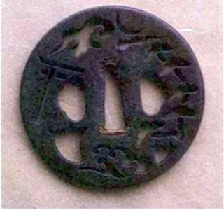
Una tsuba japonesa o guarda de espada, del siglo XVII, ilustrando un posible cometa sobre el santuario Sumiyoshi. (El supuesto cometa puede verse debajo mismo de la luna creciente de la parte superior.) Cedido por David Pepper/Okamé Antigües, Toronto.
En la Ampliación de los anales de primavera y otoño del maestro Zuo Qiu Miu, escrita entre 400 y 250 a. de J.C., hay una entrada titulada: «Yanzi se opone al uso del rezo para alejar las desgracias causadas por un cometa»:
En el año 516 a. de J.C., apareció un cometa en el reino de Qi. El rey de Qi quería ordenar a sus ministros que rogaran al cielo. Yanzi disuadió al rey diciéndole: «No servirá de nada. No hacéis más que engañaros. Está ya decidido que el cielo os enviará una desgracia o la buena fortuna; nada lo cambiará. ¿Cómo podéis creer que la oración llegue a cambiar algo? Un cometa es como una escoba: indica que hay que barrer el mal. [2] Si no habéis hecho nada malo, ¿por qué ponerse a rezar? Si habéis hecho algo malo, rezar no evitará el desastre. El trabajo de los ministros del rezo no cambiará el destino.»
El rey oyó esto encantado y ordenó que dejaran de rezar.
Un repaso a la primitiva historia de la observación cometaria da la impresión de que durante casi mil años todo el mundo, excepto los chinos, se iba pronto a la cama. Los chinos registraron por lo menos 338 apariciones separadas aproximadamente de 1400 a. de J.C. a 1600 d. de J.C. Desde el año 240 a. de J.C. sólo en una ocasión se perdieron un retorno del cometa Halley, en el año 164 a. de J.C. Sus vecinos, los coreanos y los japoneses, efectuaron observaciones valiosas, pero mucho menos frecuentes. En Occidente hasta el siglo XV no puede hablarse de una observación sistemática de los cometas.
En la década de 1970, una excavación en la Tumba número tres de Mawangdui, cerca de Changsha, reveló el ejemplo más impresionante de la prioridad de los chinos en este campo: un manual ilustrado de formas cometarias, pintado sobre seda. Formaba parte de una obra más extensa dedicada a nubes, espejismos, halos y arco iris, compilada hacia el 300 a. de J.C. Están representados en ella veintinueve cometas, clasificados según su aspecto y según el tipo especial de cataclismo que presagia cada uno. El texto cita dieciocho de los treinta y cinco nombres diferentes que los chinos aplican a los cometas. El cometa de cuatro colas presagia «enfermedad en el mundo», el de tres colas, «calamidad en el Estado». Un cometa de dos colas curvándose hacia la derecha promete una «pequeña guerra», aunque por lo menos «el trigo abundará». (Los anglosajones del medioevo compartían esta idea de que el único efecto saludable de los cometas era beneficiar a la agricultura.)
¿Cuánto tiempo tardarían los chinos en reunir un catálogo de 29 formas cometarias distintas? Hay registradas 338 observaciones separadas a lo largo de tres mil años en los anales chinos conservados; es decir, que el promedio de descubrimientos es de un cometa brillante visible a simple vista cada década, una cifra no muy alejada de los valores actuales. Si cada una de las 29 formas hubiese aparecido con igual frecuencia, habría que esperar 29 × 10 = 290 años para verlas todas. Pero algunas formas cometarias son mucho más raras que las demás. Por tanto, si cada forma representada corresponde a un cometa diferente, el Atlas de Mawangdui debió de basarse en una anterior tradición ininterrumpida de observaciones sistemáticas que se remontaba a muchos siglos, posiblemente milenios. O sea que esta magnífica tradición de observaciones planetarias debió de originarse hacia el 1500 a. de J.C. o antes. Las representaciones escritas más antiguas de los cometas y las correspondientes representaciones gráficas se remontan, pues, a la misma época o por lo menos son paralelas. Quizá en aquella época apareció un cometa muy extraordinario que despertó por primera vez su interés.
Nuestra admiración por la seda de Mawangdui aumenta cuando contemplamos las representaciones en sí, que se corresponden de modo más o menos aproximado, mediante unos cuantos trazos audaces, con fotografías modernas de cometas. Aquellos observadores dibujaron lo que tenían delante de los ojos. Basta comparar estas imágenes con una xilografía europea del cometa de 1528 (en esta página) para apreciar su sobriedad. No hay dragones, ni demonios, ni instrumentos de tortura. Sólo cometas.
* * * *
Pequeño árbitro del destino humano
Orquídeas de otoño, jungla exuberante que despliega la vida debajo del patio.
Hojas verdes, flores blancas: nos alcanza un aroma rico y fragante. De cada persona salen niños preciosos. ¿Por Qué tanta tristeza, Señor mío?
Orquídeas de otoño, frescas y lozanas hojas verdes, tallos púrpura. El patio está lleno de gente encantadora. De repente, solo conmigo, una mirada significativa.
Llegó sin hablar, se fue sin despedirse cabalgando el torbellino, con su bandera de nubes. Las separaciones de la vida son una pena superior a la pena. Un nuevo amigo es una alegría que supera la alegría.
Vestiduras de loto, cintura de dulce albahaca: llegó repentinamente, se fue con prisas. Sus alojamientos vespertinos son la frontera de los dioses.
¿A Quién esperáis en el borde de las nubes?
Os bañáis con vuestra dama en el Estanque de la Unión.
Y secáis su pelo bajo el Sol. Busco a mi amado en el cielo: ¿por Qué no ha llegado todavía? nacarado al viento e indistinto levanto mi voz en un canto.
Dosel de plumas de pavo, bandera azul de martín pescador, escalad el Noveno Cielo, calmad el cometa. Él, con su larga espada, protege y alimenta a los jóvenes. Mi Señor es el único que puede llevar la justicia al mundo.
Qu Yuan (340-278 a. de J.C),
traducción al inglés de Heather Smithy Xie Yong
* * * *
Qu Yuan, estadista y uno de los poetas antiguos de China más apreciados, se suicidó en el exilio tirándose a un río. Los chinos cada 5 de mayo continúan echando en los ríos arroz especialmente preparado en un gesto simbólico de apaciguamiento para que los peces no devoren su cuerpo. El cometa en este poema es tanto una metáfora del amante perdido como un nexo con un dios sabio y compasivo. Muchas de las imágenes que parecen inútiles, como «bandera de nubes»y «bandera azul», son en realidad alusiones a los numerosos nombres chinos de los cometas.
* * * *
Incluso en 1528 la percepción que los europeos tenían de los cometas presentaba elementos alucinatorios claros. En esta xilografía del cometa de aquel año está representado un conjunto de cabezas decapitadas y de instrumentos varios de guerra. El dibujo se basa en la descripción que Ambrose Paré hizo de este cometa. Según Amédée Guillemni, El mundo de los cometas, París, 1877.
* * * *
Pero después de la conquista de Troya y de la destrucción de sus descendientes..., embargada de dolor, se separó de sus hermanas y se instaló en el círculo llamado ártico, desde donde aparecía al cabo de largos períodos llorando y con el pelo suelto. Esto le valió el nombre de cometa.
HIGINIO,
De Astronomía, h. el 35 a. de J.C.
* * * *
Al constatar el continuo interés que los chinos sintieron por los cometas, recordamos otro campo donde fueron pioneros: la invención de los fuegos artificiales. ¿Es posible que los chinos inventaran los cohetes para adornar los cielos durante los prolongados y aburridos intervalos que separaban un cometa de otro? Quizá en aquella época los cohetes y los cometas no tuvieron relación alguna, pero hoy día esta relación es evidente (véanse capítulos VI y XVIII).
Los antiguos chinos reunieron un gran conjunto de datos sobre cometas, precisos y detallados. Sus catálogos, referidos a centenares de apariciones, incluyen muchos de los siguientes datos: una fecha, el tipo de cometa, la constelación donde apareció por primera vez, sus movimientos posteriores, su color y su longitud aparente, y el tiempo transcurrido hasta su desaparición. A veces están anotados los cambios diarios de longitud de la cola del cometa. A pesar de todo esto, los chinos no tuvieron la menor idea de la naturaleza real de los cometas. Este fue un logro plenamente occidental, aunque tardaría mucho tiempo en llegar. La historia de la astronomía cometaria occidental anterior al Renacimiento está formada por episodios ocasionales de lucidez, especialmente en Jonia, Atenas y Roma, que puntúan lóbregos períodos, mucho más largos y difundidos, de ignorancia, superstición y error.
Los cometas son estrellas viles. Cada vez que aparecen en el sur sucede algo que arrasa lo viejo y funda lo nuevo. Además, cuando aparecen cometas, mueren las ballenas. En las épocas Song Qiy Qin, cuando aparecía un cometa en la constelación de la Osa Mayor, todos los soldados morían en el caos...
Cuando aparece un cometa en la Estrella Polar, el emperador es sustituido. Si aparece en el extremo de la Osa Mayor, hay levantamientos en todas partes y la guerra continúa durante varios años. Si aparece en el cuadrado de la Osa Mayor, un príncipe controla al emperador. El oro y las piedras preciosas pierden su valor. Otra explicación: los canallas perjudican a los nobles. Aparecen algunos cabecillas provocando disturbios. Los ministros conspiran para rebelarse contra el emperador...
Cuando un cometa se desplaza hacia el norte, pero señala hacia el sur, el país sufre una gran calamidad. Los vecinos de Occidente lo invaden y más tarde hay inundaciones. Cuando un cometa se desplaza hacia Oriente y señala a Occidente, se producen levantamientos en Oriente.
...Cuando aparece un cometa en la constelación de Virgo, algunos lugares se inundan y hay graves hambrunas. La gente se devora mutuamente... Si el cometa aparece en la constelación del Escorpión, hay levantamientos y el emperador en su palacio tiene muchas preocupaciones.
El precio del arroz sube. El pueblo emigra. Hay una plaga de langostas. ...Cuando aparece un cometa en la constelación de Andrómeda, hay inundaciones y migraciones de pueblos. Muchos se rebelan y el país queda dividido por la guerra civil. Cuando un cometa aparece en la constelación de Piscis, hay primero una seguía y luego inundaciones. El arroz es caro. Los animales domésticos mueren y el ejército sufre una epidemia. Cuando un cometa entra en la constelación de Tauro, en la mitad del doble mes, [3] hay derramamientos de sangre..., los cadáveres yacen por el suelo. En tres días muere el emperador y el país sucumbe al caos. Cuando aparece un cometa en Orion, hay graves levantamientos. Los príncipes y los ministros conspiran para ser emperadores. El emperador tiene muchas preocupaciones. En todas partes cunde el desastre de la guerra... Cuando aparece un cometa en la constelación de la Hidra, estalla la guerra y algunos conspiran para derribar al emperador. El pescado y la sal se encarecen. El emperador muere. También el arroz sube de precio. No hay emperador en el país. La gente odia la vida y no desea ni siquiera hablar de ella.
Relación del cambio del mundo, Li Chunfeng,602-667 d. de J.C., traducción al inglés de Heather Smithy Xie Yong
* * * *
Fragmento del primer atlas cometario del mundo, la seda de Mawangdui, hacia 300 a. de J.C. Wen wu. «Mawangdui bo shu ’Tian wen qi xiang za zhan’nei rong jian shu» y «Mawangdui Han cao bo shu zhong dúo hui xing tu.» Beijing: Wen wu chu ban she. 1978, vol. 2, pp. 1-9.
Las referencias claras más antiguas conservadas en Occidente sobre los cometas proceden del actual Irak. Los escasos fragmentos babilónicos supervivientes nos recuerdan a sus homólogos africanos y chinos. Consideremos, por ejemplo, este fragmento de la época de Nabucodonosor I, en el siglo XII a. de J.C.:
Cuando un cometa alcance el camino del Sol, Gan-ba disminuirá; estallarán tumultos en dos ocasiones.
Está claro que la disminución de Gan-ba constituye una mala noticia. En ocasiones, los auspicios son favorables, como en esta noticia procedente de la misma época y lugar:
Cuando una estrella brilla y su brillo es tan grande como la luz del día, y [cuando] al brillar presenta una cola como de escorpión, el augurio es venturoso, no para el amo de la casa, sino para todo el país.
Si el cometa rivalizó en brillo con el Sol debió de aproximarse mucho a la Tierra, o al Sol.
Es sorprendente la confianza con que se formulan estos antiguos juicios astrológicos. No se rebajan las apuestas, no hay demostración alguna de ambigüedad ni de curiosidad. No encontramos nunca un enfrentamiento de hipótesis contradictorias, ni se espera en absoluto que las observaciones decidan la cuestión. La ciencia no se había inventado todavía.
En las obras de Diodoro de Sicilia (h. el 60-21 a. de J.C.) y de Lucio Anneo Séneca de Roma (h. el 4 a. de J.C.-65 d. de J.C.) hay pruebas indirectas, o quizá sólo rumores, de que los egipcios y los babilónicos habían elaborado algunas ideas científicas sobre los cometas. Diodoro escribió:
[Los egipcios] como consecuencia de sus prolongadas observaciones tienen un conocimiento anticipado de los terremotos y de las inundaciones, de la aparición de los cometas y de todas las cosas que el hombre ordinario considera imposibles de alcanzar.
Los antiguos egipcios conocían bien las épocas anuales de inundación en el valle del Nilo, y el comportamiento insólito de los animales permite predecir un terremoto con tiempo suficiente para salvar muchas vidas, como han demostrado los chinos modernos. Pero predecir correctamente la aparición de un cometa es mucho más difícil. Quizá alguien apostó y acertó.
Séneca reproduce una información según la cual los babilonios creían que los cometas eran cuerpos como los planetas. No da más explicaciones. Sabemos que los egipcios y los babilonios contribuyeron a la creación de las matemáticas. Sin embargo, fue en Grecia en el siglo v a. de J.C. cuando la curiosidad se apartó de lo sobrenatural y encontró un medio de expresión capaz de transformar el mundo: la ciencia.
Todo lo que sabemos sobre los inventores de esta nueva manera de pensar nos ha llegado de segunda mano. Demócrito (nacido h. el 460 a. de J.C. y que según se cree vivió muchos años) escribió por lo menos setenta obras, todas las cuales fueron destruidas o se han perdido. Nuestros conocimientos de Demócrito derivan principalmente de Aristóteles (384-322), quien le tenía en gran estima y estaba prácticamente en desacuerdo con todo lo que decía. Según Aristóteles, Demócrito creía que los cometas nacían cuando una «estrella» pasaba cerca de otra. Demócrito sin duda distinguía correctamente las estrellas de los planetas, pero, aunque no fuera así, iba por el buen camino: los cometas, decía, son cuerpos celestes y se deben a procesos naturales. Por lo que sabemos, nadie había propuesto nunca una idea tan rara.
Aristóteles pensó que podía refutar esta hipótesis señalando que Júpiter en su época se había acercado a una estrella de la constelación de Géminis sin producir ningún cometa. Pero Aristóteles no sabía que la estrella estaba situada a años luz detrás del planeta y que su «aproximación» era únicamente un efecto de perspectiva. En esta cuestión, como en la mayor parte de las cuestiones, Demócrito era un científico mejor. Pero el argumento de Aristóteles se basaba en la observación, no en el mito ni en las ideas convencionales. El debate era científico. Esta parece también la mención más antigua de la posibilidad de que los cometas sean vomitados por Júpiter; la idea ha tenido por lo menos nueve vidas y no hace demasiado desencadenó una enérgica controversia tanto en Estados Unidos como en la Unión Soviética.
Aristóteles se basaba parcialmente en la observación al afirmar que los cometas no podían vivir entre los planetas. Construyó una hipótesis científica defendible, que consistía más o menos en lo siguiente: el zodiaco es el conjunto de constelaciones, muchas de ellas con nombre de animal, a través de las cuales se desplazaban los planetas y el Sol a lo largo de los meses y de los años. (Durante el día, como es lógico, no podemos saber en qué constelación se encuentra el Sol, pero podemos deducirlo al anochecer o al amanecer si disponemos de un mapa de las estrellas.) El zodiaco rodea todo el cielo formando un ángulo con el horizonte. Nuestros antepasados sabían que los planetas, la Luna y el Sol no se mueven por todas las constelaciones del cielo, sino únicamente por el zodiaco, o sea, que los planetas han de estar situados con mucha aproximación en el mismo plano. En cambio, se observa que, si bien los cometas a veces se desplazan dentro del zodiaco, en otras ocasiones lo hacen a considerable distancia de él. Además, los cometas cambian de forma en pocos días, ante los mismos ojos del observador, al contrario de los planetas. Por tanto, los cometas no podían tener nada en común con los planetas. Los cometas tenían que ser sublunares, debían estar situados debajo de la Luna; es decir, estar dentro de la atmósfera terrestre. (Aristóteles creía que la Luna constituía la porción más alejada de la atmósfera.) La conclusión era evidente: los cometas eran una forma del tiempo atmosférico. Aunque esta opinión no se debatió mucho, fue la dominante durante dos mil años.
Toda la astronomía de Aristóteles se basaba en su profunda convicción de que los cielos estaban «libres de perturbación, cambios e influencias externas...». Él creía que la Tierra permanecía absolutamente estacionaria en el espacio, como clavada. En cambio, los cielos giraban alrededor de la Tierra al rápido ritmo de una rotación por día. Está claro que el fondo de la atmósfera se mantiene estacionario con la Tierra. Pero la parte superior de la atmósfera ha de compartir la rotación del cielo. Imaginemos ahora una exhalación de gas caliente y seco procedente de la Tierra, emitida quizá a través de una fisura, una grieta o un volcán. Este gas ascenderá y, al alcanzar el cielo, el Sol lo calentará y se inflamará. Pero este gas inflamado está ya en el reino de los cielos y, por tanto, ha de desplazarse como las estrellas y los planetas. Así explicó Aristóteles los cometas. Y esta explicación, si tenemos en cuenta las limitaciones de la ciencia en su época, no era nada tonta.
Aristóteles pensaba que las auroras boreales e incluso las estrellas fugaces eran ejemplos del mismo tipo: exhalaciones procedentes del interior de la Tierra que se elevaban hacia las estrellas. Según él, los cometas sobrevivían hasta que todo el gas se había convertido en llama. Los nuevos cometas se debían a nuevas exhalaciones. Existía, por consiguiente, un equilibrio o un estado constante entre la producción y la destrucción de cometas visibles, idea que continúa siendo un elemento central para explicarlos. Aristóteles decía que el escaso número de cometas se explicaba porque la mayor parte de los vapores inflamables que escapaban de la Tierra servían para otros fines: para crear la banda continua de fuego llamada Vía Láctea. En cambio, Demócrito había llegado a la conclusión de que la Vía Láctea está compuesta por un enorme número de estrellas, tan lejanas que no podemos distinguirlas individualmente, respuesta que es exactamente la correcta.
Una doctrina casi religiosa sostenía los argumentos científicos de Aristóteles: el filósofo se vio obligado a inventar un origen terrestre para los cometas, porque los había excluido de los cielos, que él consideraba inalterables y en los que había decretado que no podían nacer nuevos cuerpos celestes, ni morir los antiguos. Su creencia en la inmutabilidad de los cielos fue el error más influyente en la historia de la astronomía, un error que contribuyó a desviarla de la realidad durante casi dos milenios. Pero no puede culparse totalmente a Aristóteles de que las sucesivas generaciones aceptaran crédulamente sus ideas.
Séneca, nacido en la Córdoba española, en una familia rica y famosa, fue contemporáneo de Jesús, aunque los dos no llegaron a conocerse nunca. Su hermano conoció a san Pablo. Séneca llegó de joven a Roma, donde estudió gramática, retórica, leyes y filosofía. Disfrutó de una fama considerable como escritor y orador, hasta los cuarenta y un años de edad, momento en que le desterraron a Córcega por haberse acostado con la hermana de Calígula. El castigo fue suave, si se recuerdan los gustos crueles de este emperador. Séneca pasó sus años de exilio escribiendo y estudiando filosofía y ciencias naturales, entre ellas la astronomía.
En el año 49 le llamaron de nuevo a Roma para enseñar. Sus éxitos como tutor fueron mediocres, pues su único discípulo fue el futuro emperador Nerón. Cuando éste fue elevado a la púrpura a los diecisiete años, Séneca pasó a ser consejero político del emperador y ministro. Durante los ocho años siguientes, él y Sexto Afranio Burro, comandante de la guardia pretoriana, gobernaron el Imperio romano. A decir de todos, lo hicieron bien, apoyando las reformas fiscales y judiciales y aliviando algo el destino de los esclavos. Pero Nerón se volvió más tirano.
Busto de Séneca en bronce del período helenístico, actualmente en el Museo Nacional, Nápoles. Archivo Bettmann.
Burro murió, quizá víctima de algún juego sucio, y el poder político de Séneca se marchitó. Se retiró de la vida pública y escribió algunas de sus obras más celebradas, hasta que en el año 65 recibió la orden imperial de suicidarse por su supuesta participación en una conspiración contra el Imperio. Murió con valor y compostura.
* * * *
Todos deberían aceptar esta descripción: [un cometa) es una estrella insólita de aspecto extraño... que aparece arrastrando el fuego que corre alrededor suyo.
Séneca, Cuestiones naturales, libro 7, «Cometas»
* * * *
Séneca dejó obras sobre muchos temas, pero lo que aquí nos interesa es Cuestiones naturales, escrita en los últimos años de su vida. El libro séptimo se titula «Cometas» y Séneca da al tema la importancia que se merece, discutiendo a Aristóteles con cierto éxito. Afirma que los cometas no pueden ser perturbaciones atmosféricas, porque se mueven con regularidad majestuosa y no se disipan al soplar el viento. Por tanto,
...no creo que un cometa sea simplemente un fuego repentino, sino que forma parte de las obras eternas de la naturaleza.
Séneca, al refutar el argumento de Aristóteles según el cual los cometas no pueden ser planetas, puesto que no quedan limitados al zodiaco, se pregunta en un eco lejano de Job:
¿Quién pone frontera a los planetas? ¿Quién confina las cosas divinas a un estrecho espacio? Los planetas [...] tienen órbitas que se diferencian entre sí. ¿Por qué no habrá también otras estrellas que hayan emprendido su propia ruta, muy alejada de ellos? ¿Qué motivos impiden que exista un pasaje en algún u otro lugar del cielo?
A la objeción de que las estrellas pueden verse a través de los cometas y de que, por consiguiente, los cometas han de ser incorpóreos, como nubes, Séneca replica muy correcto que la transparencia es válida sólo para la cola, no necesariamente para la cabeza.
Uno de los pasajes más fascinantes es la exposición y crítica de las opiniones de un tal Apolonio de Mindos, un sabio griego del siglo IV a. de J.C., de quien no sabemos nada más:
... Muchos cometas son planetas..., son cuerpos celestes propios, como el Sol y la Luna. Tienen una forma clara..., no limitada a un disco, sino extendida y estirada longitudinalmente... El cometa atraviesa las regiones superiores del universo y se hace finalmente visible cuando alcanza el punto más bajo de su órbita... Los cometas son muchos y variados, de tamaños diferentes, de colores distintos... Algunos son sangrientos, amenazadores, y llevan ante sí el augurio de la sangre que va a derramarse. Otros disminuyen y aumentan su brillo, igual que las demás estrellas [planetas], que son brillantes y mayores cuando descienden porque se ven desde una posición más próxima, y más pequeñas y oscuras cuando retroceden porque se están retirando a lo lejos.
Las ideas de Apolonio que Séneca comparte y amplía parecen asombrosamente modernas, aparte el tema de los cometas como augurios.
El estilo de Séneca en «Cometas» es tan directo y contemporáneo que no nos cuesta nada oír su voz hablando dentro de nuestra cabeza. «Sólo podemos investigar estas cosas —dice— y buscar a tientas una hipótesis en la oscuridad, sin la seguridad de descubrir la verdad, pero tampoco desesperanzados.» Séneca continúa luego:
La gente de épocas futuras sabrá muchas cosas desconocidas para nosotros. Hay reservados muchos descubrimientos para las edades venideras... La Naturaleza no revela sus misterios de una vez por todas. Nosotros nos consideramos sus iniciados, pero sólo nos paseamos por el atrio...
Y el número de estos paseantes por el atrio del templo iba disminuyendo. Séneca lamenta constatar en su época una falta de «interés por la filosofía. A causa de esto se descubre tan poco sobre los temas que los antiguos dejaron parcialmente investigados, que muchas cosas ya descubiertas se están olvidando». Séneca notó con razón un creciente cansancio intelectual en su mundo. Su confianza en la razón, su voluntad de decidir las alternativas basándose en los datos objetivos contrasta marcadamente con el enfoque que da a los cometas la siguiente generación. Por ejemplo, Lucano (39-65), sobrino del mismo Séneca, escribió:
Los cielos aparecieron inflamados, antorchas llameantes atravesaron las profundidades del espacio en todas direcciones; un cometa, esta estrella terrible que derriba los poderes de la Tierra, mostró su hórrido pelo.
O veamos la opinión del naturalista Plinio el Viejo (23/24-79):
El cometa es una estrella temible que no puede saciarse fácilmente, como se vio en los últimos desórdenes civiles cuando Octavio era cónsul; en una segunda ocasión, durante... la guerra de Pompeyo y de César; y en nuestra época actual cuando al ser envenenado Claudio César el Imperio quedó en manos de Domiciano, en cuyo reinado hizo su aparición un cometa llameante.
Lucano y Plinio marcaban la onda del futuro.
Josefo (nacido en 37/8) cita en su Historia de los judíos que en el año 66 quedó colgando una «espada» sobre Jerusalén durante el año entero, presagiando la destrucción de la ciudad en el reino del emperador Vespasiano. Se trata probablemente de una referencia a la aparición aquel año del cometa Halley. Pero ¿cómo podía quedar suspendido un objeto natural sobre una ciudad durante un año? La Tierra gira. Un cometa sale y se pone con las estrellas, y desde luego no puede decirse que se quede «colgando» sobre ningún lugar fijo de la superficie de la Tierra. Los meteoros pasan y se desvanecen en un instante, los planetas no se parecen en nada a una espada, la aurora boreal queda demasiado al norte, e incluso un satélite artificial no puede quedar suspendido sobre Jerusalén, una ciudad no ecuatorial. La espada de Josefo, que no cita ningún otro cronista de la época, se ha de juzgar con escepticismo, como otros elementos de su crónica, si no se quiere considerar un milagro.
Representación de un cometa en forma de espada; la figura está dibujada siguiendo la descripción de Plinio, pero en una época muy posterior. De la Cometographia de Hevelio, 1668.
A medida que la cultura clásica fue disminuyendo a lo largo de los siglos, el triunfo de la superstición quedó simbolizado por la muerte de dos emperadores. Se dijo que el cometa del año 79 presagió la muerte del emperador Vespasiano, ya implicado en augurios cometarios, pues utilizó desvergonzadamente los presagios divinos para justificar y dar autenticidad a su toma del Imperio.
Xilografía del siglo XVII con un cometa suspendido sobre Jerusalén, según la historia de Josefo. De Theatrum Cometicum por Stanislau Lubienietski, Ámsterdam, 1668. De la colección de D. K. Yeomans.
Sin embargo, Vespasiano expresó su sano escepticismo. «Esta estrella peluda no presagia nada malo para mí —dijo—. Amenaza más bien al rey de los partos. —Su adversario de siempre—. Él tiene mucho pelo —concluyó Vespasiano— y yo soy calvo.» Con todo, su escepticismo no le salvó de morir aquel mismo año. A principios de la Edad Media el vínculo entre cometas y muerte de príncipes estaba tan arraigado, que si moría un gobernante y no se veía ningún cometa, como sucedió al fallecer Carlomagno en 814, se suponía que había pasado cerca de la Tierra sin ser vista una aparición ígnea. El nuevo cometa del emperador.
Si uno se zambulle en los discursos planetarios de toda la Edad Media, no encontrará a nadie que pueda compararse ni de lejos con Séneca, Apolonio, Demócrito o Aristóteles. Los tratados medievales están repletos de adivinación y de presagios, de augurios y de sangre, de misticismo y de superstición, sin que en ninguna parte asome ni siquiera la idea de que los cometas pudieran ser un elemento más de la naturaleza, y no una advertencia a los rebeldes. Incluso el historiador Isidoro, obispo de Sevilla (602-636), que denunció la astrología y a los astrólogos, creía que los cometas presagiaban «revelaciones, guerras y pestes». Durante más de un milenio no hubo ninguna opinión en contra, e incluso los intentos ocasionales de ceñirse puramente a los hechos, como la afirmación del venerable Beda (673-735) de que no se ven nunca cometas en el cielo occidental, a menudo erraban de pleno en cuestiones de simple observación.
De este modo, cuando llegó por fin el Renacimiento y la Ilustración, hizo su aparición una nueva raza de eruditos muy dispuesta a culpar a la Iglesia de la superstición y la ignorancia en cuestión de cometas y en muchas cuestiones más.
Representación del cometa que después se llamaría de Halley sobre la ciudad de Nüremberg en 684. La xilografía se ejecutó mucho después del hecho. De La crómica de Nüremberg (1493). Cedida por Ruth S. Freitag, Biblioteca del Congreso.
Calixto III fue un Borgia nacido en España, a quien el escándalo no había alcanzado, y a quien nombraron papa en 1455, a los setenta y siete años de edad. La obsesión de los últimos años de su vida fue recuperar Constantinopla de manos de los turcos, pues las ideologías adversarias de aquella época eran tan fervientes y estrechas como la lucha más mortal entablada hoy entre el capitalismo y el comunismo. Cada bando invocaba con confianza al Dios único y verdadero, y proclamaba públicamente la inevitabilidad de la victoria.
En 1456 apareció un gran cometa tanto en los cielos europeos como en los chinos. Cuatro días después del descubrimiento chino alguien en Europa se dio finalmente cuenta de su presencia. O quizá la semana estuvo nublada. Parece que el cometa, una vez descubierto, provocó un terror auténtico en la sitiada cristiandad. Hoy sabemos lo que Calixto y sus contemporáneos ignoraban: lo que estaban viendo era el retorno periódico del cometa Halley. Calixto, según se dice, estaba convencido de que el visitante era un augurio nefasto, aliado de algún modo con la causa turca; en consecuencia, lo excomulgó y ordenó introducir en el avemaria esta sentida petición: «Del demonio, del turco y del cometa, líbranos, Señor.»
Según cuentan muchas historias, Calixto envió cuarenta mil defensores a Belgrado, una ciudad bajo control cristiano sitiada por los turcos, donde el 6 de agosto de 1456, con el cometa Halley suspendido en lo alto, se libró una gran batalla que duró dos días. Un historiador posterior describió la batalla con estas palabras:
Los franciscanos, desarmados y con el crucifijo en la mano, estaban en primera línea invocando el exorcismo papal contra el cometa y dirigiendo hacia el enemigo aquella ira celeste de cuya eficacia nadie se atrevía a dudar en aquella época.
Los ejércitos de Mehmet II fueron rechazados, y tanto el cometa como los turcos se retiraron. (Los turcos compusieron imágenes memorables de los cometas, y en la página 12, segunda imagen desde abajo a la derecha, puede verse un hermoso ejemplo.) Los cristianos no recuperaron nunca Constantinopla.
Uno tras otro, todos los escritores de temas astronómicos han citado esta historia de la anatemización imparcial del turco y del cometa; sin embargo, no existe ningún documento en los archivos vaticanos sobre plegarias o maldiciones de este tipo, y no hay indicios de que Calixto excomulgara al cometa, aunque pudiera dudarse de su fe anterior en los principios de la cristiandad. El 29 de junio se publicó una bula papal ordenando rezos públicos por el buen éxito de la cruzada; no hay en ella ni una palabra sobre el cometa. El cometa era invisible a simple vista a mediados de julio, y la victoria decisiva sobre los turcos tardaría unas semanas en producirse.
Por lo que podemos saber, la historia que reproducen la mayoría de escritores de astronomía sobre Calixto y el cometa deriva de El sistema del mundo, de Pierre Simón, marqués de Laplace, que citaremos de nuevo en estas páginas. Laplace era un brillante sabio que dejó una impronta duradera en la historia de la física y de la astronomía, pero también era partidario de la Revolución francesa y de sus bases racionalistas. Su Sistema del mundo se publicó en el «año IV de la República» (1796). La Iglesia había estado íntimamente aliada con el brutal régimen de los reyes borbones y es posible que Laplace no deseara mostrarse muy generoso con Calixto III. Pero Laplace no inventó la historia, y parece que la confusión se remonta a una obra de 1475, Vidas de los papas de Platina, el bibliotecario del Vaticano. Platina consideró que la imagen, por espuria que fuera, de un papa excomulgando solemnemente un cometa concordaba por lo menos con la opinión dominante sobre los cometas tanto secular como eclesiástica.
A gran distancia del Vaticano, y una generación después, en Tenochtitlán, el emperador azteca Moctezuma II (1466-1520) estaba esperando al gran dios de barba blanca Quetzalcóatl que, según había decretado la profecía, volvería a México y reclamaría su imperio. Cuando llegaron en sucesión rápida dos brillantes cometas, como si se hubiesen dado cita en el cielo, Moctezuma los consideró augurio seguro de que Quetzalcóatl se había puesto en camino; el imperio azteca ya no era suyo. El emperador, apartado del mundo y desconsolado, consideró presagios adicionales cualquier incendio, tempestad o capricho de la naturaleza. Dos cometas y una profecía redujeron a la inmovilidad al amo del mayor imperio del hemisferio occidental. Cuando llegó poco después en 1519 el conquistador Hernán Cortés, de barba blanca, procedente del mar oriental con una fuerza expedicionaria de seiscientos hombres y unos cuantos caballos, Moctezuma no necesitó que nadie le persuadiera. Entregó el imperio a Quetzalcóatl. Los aztecas estaban inermes ante el pequeño grupo de Cortés por más razones todavía. Pero la conquista y saqueo de México y la destrucción de la civilización azteca se debieron, de modo significativo, al miedo fatalista a los cometas.
El cometa de 1066 representado en el tapiz de Bayeux, que se terminó poco después de su aparición. El rey Harold de Inglaterra, a punto de ser derrocado por los invasores normandos, se pregunta si debe hacer caso del prodigio. Una multitud de observadores admira el cometa. Cedido por la Guardia Internacional del Halley.
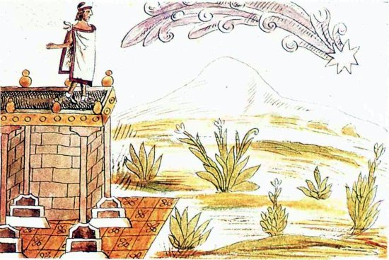
Moctezuma II de México angustiado al ver un presagio en su cielo. Cuando Hernán Cortés apareció en 1519, Moctezuma consideró su llegada como el cumplimiento de la terrible profecía cometaria. Esta imagen, tomada de Los Tlacuilos de fray Diego Durán (México, Cartón y Papel de México, 1975), se pintó sesenta años después. Cedida por Ruth S. Freitag, Biblioteca del Congreso.
Al otro lado del Atlántico, la Reforma protestante se puso pronto en marcha. Las sectas contendientes, divididas en muchos temas teológicos, estaban en perfecta armonía en lo referente a los cometas. Los promotores e impulsores de la Reforma, por lo menos en este tema, se alineaban hombro con hombro con Moctezuma II. Martín Lutero (1483-1546) habló en nombre de todos cuando predicó en un sermón de Adviento: «El pagano escribe que el cometa puede proceder de causas naturales; pero Dios no crea ni uno solo que no presagie una calamidad segura.» Lutero aquí jugaba fuerte.
Andreas Celiquio, el influyente obispo luterano de Altmark, dijo en 1578 sobre los cometas:
El espeso humo de los pecados humanos, que sube cada día, cada hora y cada momento, lleno de hedor y de horror ante la faz de Dios, se va espesando gradualmente hasta formar un denso cometa, con trenzas curvadas, que al final se inflama por la ira cálida y ardiente del supremo Juez celestial.
Esta idea del cometa como pecado congelado encendido por la ira del cielo demuestra cuántos pasos hacia atrás se habían dado desde la época de Aristóteles, en quien Celiquio se inspira claramente. Andreas Dudith le replicó al año siguiente:
Si los cometas se debieran a los pecados de los mortales, no estarían nunca ausentes del cielo.
Sería imposible imaginar con todo esto, en pleno siglo XVI, que pronto iba a producirse una revolución en la comprensión humana de los cometas y de muchas cosas más. En Dinamarca, precisamente en el mismo año en que murió Lutero, nació uno de esos «paganos». Su nombre era Tycho Brahe, y con su nariz artificial de oro o latón, su cortejo de enanos, sus legendarias sesiones de bebida y su fastuoso observatorio insular, este personaje fue un astrónomo bastante atípico.
En la época de Tycho, la autoridad incensurable sobre cometas continuaba siendo Aristóteles. Su doctrina de que los cometas permanecían confinados en la atmósfera terrestre porque los cielos eran fijos e inalterables era una piedra angular del modelo del universo en el siglo XVI, aceptada por las autoridades seculares y religiosas. Era un tema que no admitía controversias. Todos los expertos reconocidos estaban de acuerdo con Aristóteles. Las primeras dudas reales se plantearon en una noche de 1572, cuando Tycho miró hacia la constelación de Casiopea y vio una estrella «más brillante que Venus» donde antes no había estrella alguna. La nueva estrella quedaba mucho más lejos que la atmósfera de la Tierra e incluso hoy se conoce por la Superno va de Tycho; «nova» en latín significa nueva. Era evidente, para sorpresa de casi todo el mundo, que los cielos no eran inmutables. Aristóteles y la Iglesia estaban equivocados. La superno va de 1572 fue un toque de diana para los astrónomos de Europa, y pronto para la cultura del mundo.
Cinco años después, un gran cometa pasó radiante por los cielos de Europa hundiendo de modo decisivo la concepción que Aristóteles tenía del mundo, caduca ya. El cometa de 1577 fue visible durante un largo período y Tycho y sus colegas pudieron pasarse información y comprobar las teorías respectivas. La supernova de 1572 había incitado a Tycho a considerar el cometa como un cuerpo astronómico y no como una perturbación de la atmósfera.
Cuando uno observa un cometa lo ve sobre un fondo de estrellas más distantes. A medida que pasa el tiempo, el cometa puede desplazarse de una constelación a otra (página 33, arriba, a la izquierda), pero en un intervalo de pocos días parece congelado dentro de su constelación y se levanta y se pone con las estrellas. Tycho, que era capaz de tener en la cabeza dos ideas contradictorias, se preguntó qué aspecto tendría el cometa si fuera únicamente una perturbación atmosférica y estuviera cerca de la Tierra, y también qué aspecto tendría si fuera un cuerpo como los planetas o las estrellas, situado a gran distancia de la Tierra. Si ponemos un dedo delante de la nariz y cerramos sucesivamente el ojo izquierdo y el ojo derecho, nos parecerá que el dedo se mueve sobre el paisaje del fondo. Alejemos ahora el dedo hasta tener el brazo extendido y cerremos de nuevo un ojo tras otro. El dedo todavía se mueve, pero menos. Este movimiento aparente se llama paralaje; no es más que el cambio de perspectiva al pasar del ojo izquierdo al derecho. Cuanto más cerca tengamos el dedo, más paralaje o movimiento aparente observaremos sobre el fondo; cuanto más lejos esté el dedo, más pequeño será el paralaje.
La aparición del cometa Halley de 1531 representada en Astronomicum Caesareum de Apiano (1540). Observemos que la cola del cometa aparece señalando correctamente en dirección contraria al Sol. Cedida por Ruth S. Freitag, Biblioteca del Congreso.
Moneda holandesa fechada en el 14 de noviembre de 1577 y que representa el gran cometa de aquel año, que pasa sobre las nubes y el paisaje de la Tierra. La traducción de la inscripción latina es: «La estrella de la divinidad ofendida.» Cedida por la Sociedad Numismática Americana.
Indicación en las monedas del cambio de actitud con respecto a los cometas. Aparece aquí una moneda acuñada por los holandeses reprochando a los daneses «El vano asedio de Hamburgo», en 1686. La leyenda latina sobre el cometa reza «No todo lo que asusta daña», referencia tanto al rey de Dinamarca como al cometa. Cuando los ejércitos de las ciudades vecinas acudieron en ayuda de Hamburgo, el rey danés se retiró. Cedida por la Sociedad Numismática Americana.
Si el cometa estuviera en algún lugar de la atmósfera terrestre, como afirmaba Aristóteles, dos observaciones desde puntos muy separados lo verían sobre un fondo de estrellas muy distinto (página siguiente). En este diagrama, los conos azules representan las visuales de los dos observadores. Pero si el cometa está muy alejado de nosotros (arriba), los dos observadores muy separados ven el cometa sobre el mismo fondo estelar. Las observaciones simultáneas pueden, pues, indicamos la distancia de la Tierra al cometa. Diagramas de Jon Lomberg/BPS.
Los cometas de Tycho y de Newton. El gran cometa de 1577 (arriba) visto por Cornelio Gemma, y el gran cometa de 1680 (abajo) visto por J. C. Stmm. De la obra de Amédée Guillemin, Los cielos, París, 1868.
Tycho comprendió que este mismo principio es aplicable a un cometa, suponiendo que pueda observarse desde dos observatorios distantes. Si el cometa se encuentra muy cerca de la Tierra, la perspectiva entre los dos observatorios cambiará mucho, y cada observador verá el cometa sobre una constelación muy diferente. Pero si el cometa está muy lejos de la Tierra, ambos observatorios verán el cometa sobre la misma constelación. El paralaje permite medir la distancia de un cometa a la Tierra. No se precisan telescopios, sólo reglas para apuntar y círculos graduados bien divididos. Tycho vivió en la última generación anterior al invento del telescopio astronómico, y sus mediciones hubiesen podido llevarse a cabo, por lo menos de modo basto, en cualquiera de los mil años anteriores a él, si a alguien se le hubiera ocurrido la idea. De hecho más de un siglo antes, en la aparición del cometa Halley de 1456, se habían intentado mediciones de paralaje cargadas de errores.
Tycho no fue el único en realizar estas mediciones y ejecutar estos cálculos con el cometa de 1577, y algunos de sus contemporáneos obtuvieron incluso la respuesta equivocada, quizá por estar todavía bajo el influjo del pensamiento aristotélico, y dedujeron que el cometa estaba en la atmósfera de la Tierra. Sin embargo, las meticulosas observaciones de Tycho y sus cuidadosos cálculos han superado la prueba del tiempo. Si el cometa hubiese estado dentro de la atmósfera de la Tierra, se hubiese detectado un considerable paralaje. Tycho no pudo encontrar ningún paralaje. De acuerdo con la precisión de sus mediciones, el cometa de 1577 tenía que estar mucho más lejos de la Tierra que la Luna. Por tanto, el cometa tenía que estar más arriba, entre los planetas y las estrellas. Tycho, recurriendo a la cooperación internacional, a las matemáticas elementales y a simples mediciones, descubrió que las ideas convencionales habían estado totalmente equivocadas desde hacía dos milenios. Si las generaciones anteriores hubiesen sabido lo lejos que están realmente los cometas de nosotros, quizá se hubiesen asustado menos con ellos. Tycho liberó los cometas de los estrechos confines circunterrestres donde Aristóteles los había metido, y los dejó volar por el espacio. La ciencia quedaba también en libertad para hacer lo propio.
Las conmociones que los místicos habían atribuido siempre a los cometas quedaron finalmente justificadas por el de 1577. Dentro de la vasta literatura profética inspirada por los cometas hasta este momento, sólo hay una que provoca nuestra admiración. Hizo la predicción no un adivino ni un sacerdote, sino un científico. Era Séneca.
Uno de los primeros dibujos de un cometa visto a través del telescopio. Están representadas dos observaciones del cometa de 1618 en noches consecutivas. El cometa está atravesando las constelaciones de la Osa Mayor y del Cochero. Dibujado al telescopio por J. B. Cysat. De la Mathematica Astronómica Ingolstaat, 1619. De la colección de D. K. Yeomans.
El dibujo que hizo el mismo Tycho Brahe del cometa de 1577 (en la posición X). De acuerdo con la concepción equivocada que Tycho tenía del sistema solar, el cometa giraba alrededor del Sol, pero el Sol giraba alrededor de la Tierra (a). De la obra de Tycho Brahe De Mundi Aetherei, 1603. De la colección de D. K. Yeomans.
¿Debe sorprendernos entonces que los cometas, constituyendo un espectáculo tan raro en el universo, no se expliquen todavía con leyes fijas y que su principio y su fin nos sea desconocido, produciéndose su retorno a intervalos tan vastos?... Llegará una época en que investigaciones diligentes a lo largo de períodos muy prolongados saquen a la luz cosas que ahora están ocultas... Algún día habrá un hombre que demuestre en qué regiones tienen sus órbitas los cometas, por qué se desplazan a distancias tan remotas de los demás cuerpos celestes, cuál es su tamaño y de qué tipo son.
Tycho fijó el rumbo, pero el hombre de quien habla la profecía fue Edmond Halley.
* * * *
Quien ve un cometa errante y transitorio se maravilla por su rareza: pero es un milagro que el movimiento de una estrella nueva siga el del firmamento, pues en él no puede haber cosas nuevas.
John Donne, «A la condesa de Huntingdon», 1633
La astronomía de Donne llevaba un retraso de cincuenta y seis años; después de Tycho cada cometa y cada supernova refutaban la idea aristotélica de que en los cielos «no puede haber cosas nuevas».
* * * *

Edmond Halley a los treinta años de edad. Pintura de Thomas Murray. Cedida por la Royal Society de Londres.
El señor Halley poseía las cualidades necesarias para ganarse el amor de sus iguales. En primer lugar él los amaba; tenía un temperamento naturalmente ardiente y fogoso y en presencia de ellos le animaba un afecto generoso que parecía inspirado por el simple placer de verlos; era abierto y puntual en sus tratos; sincero en sus juicios; uniforme e irreprochable en sus maneras, suave y afable, siempre dispuesto a comunicarse...
Jean Jacques d Ortous de Mairan, «Elegía por el señor Halley», Memoires de l’Académie Royale des Sciences, París, 1742
Cuando pensamos en Edmond Halley, suponiendo que pensemos alguna vez en él, nuestro recuerdo suele centrarse en su tocayo: el cometa favorito de la humanidad. El cometa se convierte en una especie de recurso nemotécnico que actúa aproximadamente a intervalos de setenta y cinco años regañándonos por nuestra memoria. Halley, para la mayoría de nosotros, es como el deportista que consigue entrar en el libro de récords gracias a una temporada extraordinaria, o quizá a un único partido memorable. Nosotros consultamos los récords esperando encontrar un albañil que como tantos otros ha contribuido con un ladrillo o dos al edificio de la ciencia. En su lugar nos encontramos con un maestro de obras.
La fecha de su nacimiento es incierta; Halley creía que era el 29 de octubre de 1656. Empezó su vida en el municipio de Hackney, una comunidad rural situada entonces fuera de Londres y que el crecimiento de la ciudad ha absorbido desde hace tiempo. No disponemos de ninguna anécdota, ni siquiera apócrifa, que nos indique la textura de su infancia. Sabemos que fue entonces cuando soñó por primera vez en lo que más tarde sería. «Desde mis más tiernos años me entregué a la consideración de la astronomía —recordaba luego, cuando todavía era bastante joven— El placer que me daba sólo puede comprenderlo quien lo haya experimentado.» Esta idea de ciencia, no como medio de vida, sino como trance, no le abandonará nunca más. En su adolescencia se observaron dos grandes cometas, uno de ellos en 1664 relacionado popularmente con la gran peste de Londres, el otro en 1665 con el gran incendio. No hay constancia de que Halley hubiese visto esos cometas, pero es imposible que un joven con sus inclinaciones y sus capacidades hubiera dejado de impresionarse ante los cometas de 1664 y de 1665, tan cargados de presagios, calamidades y desastres.
Su padre, también Edmond, era un hombre de negocios, un fabricante de jabón y de salazones que tenía lucrativas propiedades en Londres. En 1666, el gran incendio devoró sus fincas, pero sus demás negocios florecieron. Los recientes horrores de la peste bubónica habían infundido a los londinenses el respeto por la higiene personal. La fabricación de jabón se convirtió en una industria expansiva. Además, la cada vez más potente armada británica tenía una necesidad crónica de carne salada para mantener a los marineros en sus largas travesías. El viejo Halley, cuyos negocios iban viento en popa, contribuyó alegremente con su nuevo dinero a convertir en realidad lo que su hijo prometía de modo tan evidente.
Le envió a St. Paul’s, una de las mejores escuelas de Inglaterra, donde Edmond destacó brillantemente. En 1671 le eligieron capitán de la escuela; o sea, que Halley era un ejemplo raro de excelente estudiante popular entre sus compañeros. No sabemos nada de la madre de Halley, aparte que su nombre era Anne Robinson y de que murió el 24 de octubre de 1672, nueve meses antes de que Halley se fuera al queen College de Oxford. Prueba adicional de la generosidad de su padre es la cantidad y calidad de los instrumentos astronómicos que Halley se llevó consigo a la universidad: entre ellos, un telescopio de ocho metros de longitud, que puso inmediatamente en funcionamiento.
Lo sabemos porque el 10 de marzo de 1675 Edmond Halley, con sus dieciocho años, tuvo la audacia de escribir a John Flamsteed, el primer astrónomo real de Inglaterra, informándole de que las tablas autorizadas publicadas con las posiciones de Júpiter y de Saturno contenían errores. El joven Halley había descubierto también algunos errores en las posiciones estelares publicadas por el incomparable Tycho Brahe. Su tono no es el del joven vaquero dispuesto a desafiar al legendario pistolero; es más bien el del joven entusiasta, lleno de admiración por quienes le han precedido, que ansia entrar en el club, y que ansia todavía más descubrir la naturaleza auténtica del universo. No sabemos exactamente cuál fue la respuesta de Flamsteed, pero debió de ser positiva, porque al año siguiente ayudó a Halley a publicar su primer trabajo científico. Apareció en Philosophical Transactions, la revista de la Royal Society de Londres, que era, igual que ahora, la más importante organización científica de Gran Bretaña, y se titulaba «Método directo y geométrico para encontrar los afelios, las excentricidades y las proporciones de los planetas primarios, sin suponer la igualdad del movimiento angular».
¿De qué trataba el trabajo? Desde la publicación de la obra del discípulo de Tycho, Johannes Kepler, se sabía que cada planeta se mueve a lo largo de una trayectoria llamada elipse, una especie de círculo estirado (véase página XII). La excentricidad mide el estiramiento de la elipse; una elipse de excentricidad nula es un círculo, y una elipse de excentricidad igual o superior a 1 no es ni siquiera una curva cerrada, sino una parábola o una hipérbole. La excentricidad de la órbita terrestre es 0,017, y a simple vista resulta indistinguible de un círculo. En cambio, la excentricidad orbital de Mercurio es de 0,21, y su elipse está alargada de modo perceptible. Muchos años después uno de los éxitos de Halley será determinar que los cometas se mueven en órbitas elípticas, lo cual constituye una de las claves reveladoras de su origen.
En una órbita aproximadamente circular como la de la Tierra, nos mantenemos a una distancia del Sol más o menos idéntica. Pero en una órbita muy elíptica, como la de un cometa, la distancia al Sol varía según el punto de la órbita que ocupe el cometa en cada momento. El punto más cercano al Sol, cuando el planeta o cometa se mueve con mayor rapidez, se llama perihelio. Cuando el objeto da la vuelta cerca del Sol se dice que «pasa por el perihelio». La frase tiene una bonita resonancia, como si la viviéramos en un crucero a bordo de un viejo buque de vapor. El punto más alejado de la órbita se llama afelio. Cuanto más elíptica es la órbita, mayor es la diferencia entre el afelio y el perihelio. Es perfectamente posible que un cometa tenga su perihelio cerca de la Tierra y su afelio más lejos que el planeta conocido más lejano. Pero esto era antes de que Halley empezara a estudiar los cometas. Halley en su primer trabajo propuso un método nuevo y más preciso para calcular las órbitas planetarias.
El artículo tuvo que volverse a redactar muchas veces, debido en parte a la inexperiencia de Halley, pero también a que el obispo de Salisbury había publicado una opinión en contra y, por tanto, podía interpretar el artículo, según dijeron a Halley, como un insulto personal. Halley no tenía deseo alguno de ofender e introdujo alegremente los cambios propuestos. No sería ésta la única ocasión en que el trabajo científico de Halley ofendiera la sensibilidad eclesiástica.

Un horóscopo contemporáneo de Edmond Halley, que no creía en la astrología. El original está en la Biblioteca Bodleiana, Oxford. Cedido por Joseph Veverka.
El mismo año en que Halley mereció la atención de la comunidad astronómica mundial gracias a su artículo sobre las órbitas, decidió abandonar Oxford sin graduarse y trasladarse a la lejana isla de Santa Helena, al oeste de África, para confeccionar el primer mapa del cielo austral.
Las secciones cónicas. Cuando se corta o secciona un cono a distintos ángulos, se obtienen formas diferentes que reciben el nombre de conjunto de secciones cónicas. Aquí, la parte exterior del cono aparece en gris y las tres secciones cónicas en azul. Si juntáramos de nuevo las cuatro piezas que aparecen en la figura, recuperaríamos el cono. La punta superior del cono se llama vértice, y el fondo plano sobre el cual descansa, base. Si practicamos una sección paralela a la base, obtenemos un círculo. Si cortamos según un ángulo, obtenemos un círculo alargado, más o menos oval, llamado elipse. Si cortamos perpendicularmente a la base, la superficie que dejamos expuesta es una hipérbola; la hipérbola, al contrario que el círculo y la elipse, no se cierra sobre sí. Hay otra curva, no representada aquí, que hace de transición entre la elipse y la hipérbola: se llama parábola. Apolonio de Pérgamo describió por primera vez en la segunda mitad del siglo III a. de J.C. estas bonitas secciones cónicas. Es asombroso que los planetas y los cometas sepan moverse alrededor del Sol siguiendo precisamente estas curvas; y que la trayectoria de una piedra tirada al aire siga una parábola. Igual hace un misil balístico. Newton demostró que la ley del cuadrado inverso, la ley de la gravitación, obliga a los cuerpos a desplazarse por el espacio siguiendo secciones cónicas. Relaciones como éstas entre unas matemáticas aparentemente abstractas y el funcionamiento real del mundo son típicas de los grandes descubrimientos que han moldeado la ciencia moderna. Diagrama de Jon Lomberg y Jason LeBel/BPS.
Como es lógico, las constelaciones que podemos observar desde latitudes septentrionales elevadas son casi completamente diferentes de las que podemos ver cerca del Polo Sur. Desde el ecuador vemos todas las constelaciones boreales y todas las constelaciones australes. Santa Helena era entonces la avanzada más meridional del Imperio británico y un buen punto para observar no sólo los cielos del sur, sino también algunas de las estrellas ya cartografiadas del hemisferio septentrional. Esto era importante porque si el mapa que Halley proponía de las estrellas australes tenía que ser útil a los astrónomos europeos, era preciso que compartiera algunos puntos de referencia con las posiciones estelares que ya se habían determinado. Santa Helena, aparte su latitud, tenía otro elemento positivo; según se decía, el tiempo era invariablemente claro, algo de una importancia crítica para las observaciones astronómicas.
Los nuevos amigos de Halley en la Royal Society dirigieron una carta al gobierno apoyando esta expedición, que pronto contó con el favor del rey Carlos II. Pero el rey era sólo monarca titular de la lejana Santa Helena; en realidad, la pequeña isla era un feudo de la poderosa Compañía de las Indias Orientales. Sin embargo, el monarca no carecía de influencia y, tras escribir a los directores de la Compañía, éstos aceptaron proporcionar pasaje a Halley y a un acompañante científico. El padre de Halley, «dispuesto a gratificar la curiosidad [de Edmond]», le proporcionó una elevada pensión que cubría con creces el coste de los mejores equipos de observación disponibles entonces y cualquier gasto adicional.
Halley zarpó en noviembre de 1676 a bordo del Unity, iniciando un viaje que duraría tres meses y cubriría casi diez mil kilómetros de océano. Su destino era una isla tan remota que ciento treinta años después los británicos la considerarían la única prisión suficientemente segura para guardar al cautivo emperador Napoleón. Desde hacía casi dos siglos los marineros europeos habían estado navegando por los mares del sur cartografiando todas las líneas costeras que podían descubrir, y nadie había cartografiado todavía con precisión las estrellas tan diferentes que tenían encima. Halley se impuso la tarea de recuperar la mitad del cielo. Acababa de cumplir veintiún años.
El tiempo en Santa Helena resultó ser una porquería, al contrario de lo que decían anteriores viajeros. Halley tenía que esperar durante semanas para que un claro de una hora de duración le permitiera observar las estrellas. El tiempo inglés era mejor. Pero por lo menos en Inglaterra, cuando hacía mal tiempo, había otras cosas que hacer. Halley se había exiliado a un lugar que era poco más que una roca en el centro de un vasto océano. Y tenía que preocuparse de otras cosas, aparte de las nubes; al parecer, el gobernador de Santa Helena estaba loco de remate y pronto empezó a odiar a Edmond Halley. El comportamiento del gobernador resultó al final tan raro que acabaron llevándole a la metrópolis y destituyéndolo, pero no antes de que Halley estuviera a punto para regresar. A pesar de las dificultades, Halley hizo buen uso del año terrible que pasó en Santa Helena. Volvió a casa con el primer mapa del cielo austral y con mucho más. Había descubierto estrellas y nebulosas que los europeos ignoraban. Durante su estancia había observado un tránsito del planeta Mercurio a través de la cara del Sol, que más tarde tuvo importancia en la determinación de la distancia que separa el Sol de la Tierra. Confirmó que en el hemisferio austral no había Estrella Polar, y que en Santa Helena era imposible medir el tiempo con un reloj de péndulo calibrado en Inglaterra si primero no se acortaba el péndulo. (Aunque Halley en aquella época lo ignoraba, esto se debe a que la rotación de la Tierra crea una pequeña fuerza centrífuga que contrarresta ligeramente la gravedad en el ecuador, pero que se debilita al aumentar la latitud.)
Winchester Street, Londres, donde vivieron Edmond Halley, el astrónomo, y su padre. Halley, cuando era joven, hizo observaciones astronómicas desde estos tejados. Este grabado de principios del siglo XIX muestra la calle con muy pocos cambios desde la época de Halley. Biblioteca Gráfica Ann Ronan.
Portada del Mapa de los cielos australes de Halley. Los puntos que representan las estrellas están conectados formando dibujos fantásticos y mitológicos: son las constelaciones. En la periferia del mapa hay constelaciones conocidas por los astrónomos del hemisferio boreal, mientras que hacia el centro del mapa hay constelaciones que sólo pueden verse en el cielo meridional. Biblioteca Gráfica Ann Ronan.

Sextante para medir las posiciones de las estrellas, utilizado por Johannes Hevelio y su esposa. Éste fue el tipo de tecnología que Halley fue a comprobar a Danzig. Cedido por la Royal Astronomical Society.
Robert Hooke presentó a la Royal Society su catálogo de los cielos australes. Hooke era un polígrafo neurótico que observó por primera vez con el telescopio la Gran Mancha Roja de Júpiter, y que vio por primera vez con el microscopio una célula viva. (Fue también el primero en utilizar la palabra «célula» en su contexto biológico.) Hooke hizo contribuciones duraderas a la física, la astronomía, la biología y la ingeniería. Los miembros de la Royal Society apreciaron rápidamente la hazaña de Halley, pero en lo que a Oxford respecta Halley no era más que otro estudiante fallido, y no le permitieron regresar para graduarse, porque se había ido a Santa Helena antes de cumplir su período de residencia obligatoria en Oxford. La infracción de las normas era tan seria que sólo un decreto real podía remediar la circunstancia. Halley apeló una vez más a Carlos II, y una vez más Carlos escribió una carta en su favor, pidiendo ahora que le concedieran el título de maestro de las artes «sin la condición de cumplir ninguna de las condiciones previas o consiguientes para ello». El vicecanciller de Oxford obedeció. Casi al mismo tiempo de concedérsele el título, Halley fue elegido miembro de la Royal Society, una distinción considerable para un hombre tan joven.
Halley centró ahora su atención en una creciente controversia planteada entre Hooke, Flamsteed y Johannes Hevelio, de la ciudad libre de Danzig, el astrónomo observador preeminente en aquella época. Hooke y Flamsteed tenían entera confianza en la mira telescópica recién inventada, la cual, montada en un instrumento de medición, permitía determinar con mayor precisión la posición relativa de las estrellas. Pero Hevelio, más viejo, rechazaba la nueva tecnología y se obstinaba en utilizar una mira abierta, sin elementos ópticos, un mecanismo tan simple como la mira de un rifle. Hooke y Flamsteed estaban horrorizados. Emprendieron una campaña cada vez más estridente contra Hevelio, asegurando a quien quisiera oírlos que las observaciones de Hevelio no eran de fiar. Era un tema muy insólito para una controversia vitriólica. Hevelio, como es natural, empezó a sentirse asediado. Era también miembro de la Royal Society, pero vivía en Danzig, lejos de los pubs y salones donde Hooke y Flamsteed llevaban a cabo sus curiosos asaltos. Apeló a los miembros, escribiendo que debería permitirse a cualquier científico servir a la astronomía como mejor le pareciera; que los resultados debían comprobarse y juzgarse únicamente en función de sus méritos, que era deshonesto por parte de científicos despreciar la labor de un colega sin disponer de datos adecuados. Él había estado observando con una mira abierta desde hacía más de treinta años, y si el sistema era bueno para Tycho Brahe también era bueno para él. La Royal Society respondió oficialmente reafirmando su confianza en Hevelio e instando a Hooke y Flamsteed para que documentaran sus afirmaciones o desistieran. Ellos se negaron a hacer ni lo uno ni lo otro. Las dos partes estaban en un callejón sin salida.
No podía haber persona más adecuada que Halley, con su tacto, su integridad y su genio de observador (y el dinero de su padre) para hacer el viaje y poner a prueba las observaciones de Hevelio. Halley envió a Hevelio una copia de su catálogo del cielo austral pidiéndole que le invitara a visitarle. Hevelio aceptó y Halley llegó a Danzig en mayo de 1679. Observaron los dos juntos durante diez noches y Halley se convenció pronto que Hevelio, con la anticuada mira abierta, conseguía siempre mejores resultados que Flamsteed y Hooke con su equipo moderno.

Johannes Hevelio, de Danzig, fue también un observador de cometas. Esta figura de su Cometographia (1668) muestra un conjunto de formas cometarias vistas en 1577 y 1652. Compárense con el atlas cometario chino en páginas anteriores.
Escribió inmediatamente a Flamsteed, describiendo sus esfuerzos minuciosos y sistemáticos por encontrar algún fallo en las observaciones de Hevelio. «Ciertamente he visto repetida la misma distancia varias veces sin falacia alguna —informó a su mentor, que sin duda hubiera deseado mucho enterarse de lo contrario—..., por lo que ya no me atrevo a dudar más de su veracidad.»
A pesar del testimonio de Halley, Flamsteed y Hooke eran incapaces de excusarse o incluso de cejar en su campaña. La controversia de la «mira abierta» no murió hasta que no hubo muerto el mismo Hevelio ocho años después. La conducta de Halley había sido un modelo de justicia y sinceridad, arriesgándose a incurrir en el desagrado de amigos poderosos en bien de la verdad.
* * * *
En 1680, cuando hizo su aparición un gran cometa en los cielos de Europa, no era desde luego corriente que la ciencia se considerara como el medio preferente para comprender la naturaleza. Gibbon cita como ejemplo perfecto de una concepción transitoria del universo a un astrónomo que «se vio obligado a admitir que la cola, pero no la cabeza [del cometa de 1680], era un signo de la ira de Dios». Incluso Gottfried Kirch, el astrónomo alemán que descubrió el gran cometa de aquel año, estaba convencido de la naturaleza sobrenatural de los cometas.
He leído a fondo muchos libros sobre cometas, paganos y cristianos, religiosos y seculares, luteranos y católicos, y todos declaran que los cometas son signos de la ira de Dios... Algunos se oponen a esta creencia, pero no son muy importantes.
Halley también vio el gran cometa de 1680, pero su respuesta fue radicalmente diferente de la de Kirch. A bordo de un transbordador en el canal de la Mancha, entre Dover y Calais, Halley miró hacia arriba cuando las nubes se abrieron y vio algo esplendoroso. Cuando Halley llegó a Francia se dirigió apresuradamente al Observatorio de París para consultar con su director.
El cometa Arend-Roland (1957 III), famoso por su lanza dirigida hacia el Sol. Compárese con la descripción que dio Hevelio del cometa de 1590 (segundo cometa de la figura superior desde arriba). Fotografiado a través del telescopio de la Universidad de Michigan por F. D. Miller, 24 de abril de 1957. Cedido por la Administración Nacional de Aeronáutica y del Espacio.
Fotomontaje de Saturno, con la división de Cassini, la mayor división entre anillos, bien visible, y algunas de sus grandes lunas, cuatro de las cuales descubrió J. D. Cassini en el siglo XVIII. Fotografías de Voyager 1. Cedido por la Administración Nacional de Aeronáutica y del Espacio.
Jean-Dominique Cassini (1625-1712), descubridor de la división más importante de los anillos de Saturno y de cuatro de las lunas de aquel planeta, recibió al joven autor del Catálogo de las estrellas australes con generosa hospitalidad. Cassini colmó a Halley de atenciones, le presentó a sus amigos y colegas, le permitió utilizar sin restricciones el equipo y la biblioteca del observatorio, y sobre todo regaló a Halley una idea. Éste, en una notable carta dirigida a Hooke en mayo de 1681, escribió:
Monsieur Cassini me hizo el favor de regalarme su libro sobre el cometa justamente cuando me iba de la ciudad. Cassini, además de las observaciones pertinentes que realizó hasta el 18 de marzo del nuevo cómputo, tiene una teoría sobre sus movimientos según la cual este cometa es el mismo que se apareció a Tycho el año 1577 y efectúa su revolución siguiendo un gran círculo que incluye a la Tierra...
Halley describe los detalles de tres apariciones cometarias, añadiendo:
...ésta es la suma de su hipótesis y según él responderá con suficiente exactitud de los movimientos de los dos cometas, además de los del cometa de abril de 1665; sé que os costará aceptar su idea, pero al mismo tiempo es muy notable que tres cometas sigan tan exactamente la misma trayectoria en los cielos y con los mismos grados de velocidad...
Nadie había determinado todavía la órbita de un cometa, pero Cassini señaló que los tres cometas habían aparecido en la misma parte del cielo con velocidades similares y formuló la atrevida propuesta, sin precedentes en la literatura científica, [4] y explícita únicamente en la tradición popular del pueblo africano, que el mismo cometa volvía a la Tierra en épocas muy separadas.
Halley informa a Hooke de que sus primeros intentos por trazar la trayectoria del cometa de 1680, basándose en el resumen que le dio Cassini de su movimiento aparente a través del cielo, no han tenido éxito; confía intentarlo de nuevo en algún momento futuro. Halley, en el párrafo final, como en uno aparte, pone las bases de la ciencia de la estadística actuarial. Después de resumir las estadísticas comparativas de París y de Londres sobre nacimientos, matrimonios, fallecimientos y densidad de población, este último dato basado en las propias mediciones de Halley, quien dio la vuelta a París contando los pasos, concluye diciendo:
...se deducirá de esto, suponiendo siempre lo mismo, que una mitad de la humanidad muere sin casarse, y que es necesario que cada pareja casada tenga cuatro hijos, la una con la otra, para que la humanidad se mantenga estable...
Más formas cometarias por Hevelio. Observemos los cometas con colas perturbadas. Los tres últimos se llaman cometas «monstríferos», un eco del misticismo cometario de otras épocas. De la colección de D. K. Yeoman.
Observaciones realizadas por Halley del cometa que llevaría un día su nombre. En la página de la izquierda están sus observaciones del 4 de septiembre de 1682, mientras que la página de la derecha contiene notas sobre la parábola, una de las trayectorias candidatas que muchos años más tarde Halley tuvo en cuenta como posibles órbitas de los cometas. La yuxtaposición aquí de cometa y parábola puede ser una simple coincidencia, aunque quizá revele una corazonada que Halley no siguió de modo inmediato. Estas páginas se reprodujeron en el artículo de Arthur Stanley Eddington «Observaciones de Halley sobre el cometa Halley, 1682», Nature, vol. 83, p. 373, 1910. Cedido por Ruth S. Freitag, Biblioteca del Congreso.
* * * *
Algunos italianos llamados pitagóricos afirman Que el cometa es uno de los planetas, pero que aparece a grandes intervalos de tiempo y sólo se levanta un poco sobre el horizonte.
Aristóteles, Meteorología, libro I, capítulo 6
Aunque no esté explícito, esto parece implicar también un retorno periódico de los cometas.
* * * *
Pasarían diez años antes de que desarrollara más a fondo esta idea, y más tiempo todavía para que volviera al tema de los cometas. Ahora seguía viaje a Italia durante seis meses, para luego volver a Inglaterra, donde haría su primer gran descubrimiento.
El nombre de ella era Mary Tooke. Era la hija del auditor del Tesoro. Un memorialista contemporáneo la califica de «joven y agradable dama, y persona de mérito real». Otro tributo la retrata como «joven dama tan amable por la gracia de su persona como por las cualidades de su mente».
Se casaron menos de tres meses después de su regreso del continente, en St. James, una iglesia escandalosa o compasiva, según se mire, porque se había especializado en fugas. Al parecer no hubo ninguna oposición ni tampoco Mary estaba embarazada. Quizá escogieron St. James porque no querían perder ni una hora más. Su matrimonio y su amor durarían hasta el fallecimiento de Mary, casi cincuenta y cinco años después. Las pocas referencias a su relación que se han conservado subrayan su profunda y duradera felicidad. En 1682, hacia el fin de su primer verano juntos, Edmond y posiblemente Mary presenciaron la aparición de otro cometa, no tan espectacular ni mucho menos como el gran cometa de 1680. Halley tomó unas cuantas notas para recordar lo que vio. Fue su única observación del cometa que un día llevaría el nombre de Halley.
Años después de la muerte de la madre de Halley, Edmond padre había contraído un segundo y desgraciado matrimonio. Se hablaba de los derroches de la nueva esposa y del aparente descuido con que trataba a su marido y al hijo de su marido. El contraste entre los matrimonios del padre y del hijo debió de apenar a ambos. En la mañana del 5 de marzo de 1684, Halley padre se quejó de que sus zapatos le apretaban demasiado y un sobrino se ofreció a recortar el forro de los dedos. Esto al parecer dio resultado y Edmond padre comunicó a su esposa que salía y que volvería al anochecer. Un testigo contemporáneo cuenta lo que pasó después:
... ella esperaba su llegada al anochecer, pero cuando no apareció se preocupó mucho y al día siguiente hizo todas las diligencias posibles para encontrarle; pasados varios días sin tener noticias de él, publicó su ausencia en el News Book. Desde el miércoles 5 de marzo hasta el 14 de abril, a pesar de todos los esfuerzos y de organizarse la búsqueda más estricta, nadie pudo dar razón de su paradero. Pero el lunes se le encontró por fin en la orilla del río en Temple-Farm, en la parroquia de Strow’d, cerca de Rochester, de la siguiente manera: un niño pobre que por algún motivo se paseaba por la orilla espió el cuerpo de un hombre muerto y desnudo, que sólo llevaba puestos los zapatos y los calcetines, y comunicó inmediatamente su descubrimiento a otros. Llegando esto a oídos de un caballero que había leído el anuncio en la Gaceta, se fue sin tardar a Londres, e informó de ello a la señora Halley, comunicándole además que aquello no lo hacía por la recompensa, sino siguiendo los principios más honorables y cristianos, pues en cuanto al dinero no deseaba aprovecharse de él, y prefería que lo entregaran en su totalidad al niño pobre que lo había encontrado y lo merecía con toda justicia.
La señora Halley despachó al mismo sobrino que había arreglado los zapatos de Halley para identificar el cuerpo. La tarea debió de ser horrible, pues el rostro había quedado deshecho. El testigo continúa escribiendo:
Todos llegaron a la conclusión de que no había permanecido en el río desde el mismo día de su desaparición, porque en tal caso su cuerpo estaría más corrompido. El caballero le reconoció por sus zapatos y calcetines, pues eran los mismos zapatos de donde él había recortado el forro: en una pierna tenía cuatro calcetines y en la otra tres y una venda encerada. El juez se hizo cargo del caso y la encuesta post-mortem le llevó a Murthere’d.
La muerte de Edmond Halley, sénior, continúa siendo un misterio. Por desgracia no había ningún Sherlock Holmes disponible que valorara los calcetines repetidos y que dedujera los lugares donde había estado Halley durante las anteriores cinco semanas. Dos siglos y medio después del hecho, Eugene Fairfield MacPike, un importante especialista sobre Halley, formuló un veredicto de suicidio, indicando que «los datos de que disponemos parecen señalar un caso de aberración mental». Quizá. Pero los datos señalan igualmente un posible accidente u homicidio.
Un misterio adicional envuelve la respuesta del joven Halley ante el destino de su padre. La relación del testigo contemporáneo no lo cita, y al parecer no desempeñó ningún papel en la búsqueda de su padre, en la identificación del cuerpo, ni en la encuesta judicial. Su vida entera es un ejemplo típico de curiosidad masiva, casi compulsiva. Y, sin embargo, no hay pruebas de que intentara resolver de ningún modo el misterio de la muerte de su padre, el hombre que le había animado tan generosamente y que había apoyado su desarrollo intelectual.
En un indecoroso corolario de estos hechos desgraciados, el «caballero» que había traído a la segunda señora Halley la noticia del descubrimiento del cadáver de su marido la demandó más tarde por impago de la recompensa de cien libras, a pesar de haber dicho antes «que no deseaba aprovecharse de ella». Juzgó el caso el juez Jeffreys, de memoria infame por cometer toda una serie de delitos contra los acusados que se presentaban ante él: de la extorsión y el hostigamiento hacia arriba. Parece que en este caso concreto el juez Jeffreys siguió un justo camino, adjudicando al «caballero» sólo veinte libras y ordenando a la señora Halley que pagara las ochenta libras restantes al desgraciado «niño pobre» que había descubierto el cuerpo. Una década más tarde, Edmond llevó ante los tribunales a su pródiga madre, con el fin, según se cuenta, de defender su herencia.
* * * *
En la misma época aproximadamente de la desaparición de su padre, Halley estaba intentando alcanzar una comprensión más profunda de los movimientos planetarios. Kepler había señalado que hay una proporcionalidad precisa entre el tiempo que tarda un planeta en dar una vuelta al Sol (el año) y la distancia del planeta al Sol. El año de Mercurio, planeta cercano al Sol, es de sólo ochenta y ocho días terrestres; el año de Saturno, muy alejado del Sol, es casi de treinta años terrestres. El período de un planeta en el sistema solar exterior es más largo que un año terrestre no sólo porque tiene que recorrer una órbita mayor, sino también porque se mueve más lentamente. ¿Por qué? Halley y otros pensaban que los planetas se movían gracias al equilibrio de dos fuerzas: una dirigida hacia fuera del Sol, y debida a la propia velocidad del planeta, y la otra dirigida hacia dentro, pero debida a una fuerza gravitatoria del Sol todavía por descubrir. Era evidente que la fuerza tenía que disminuir con la distancia, para que así los planetas lejanos se moviesen lentamente y continuaran equilibrando la fuerza de la gravedad. Pero ¿de qué modo debía disminuir la fuerza gravitatoria cuando uno se alejaba del Sol para explicar los movimientos planetarios observados? Halley y sus colegas, por intuición o por una falsa analogía con la propagación de la luz, propusieron que la gravedad seguía una ley del cuadrado inverso. Si se alejaba el planeta el doble de su distancia original al Sol, la fuerza se reduciría a una cuarta parte de su valor original; una distancia tres veces mayor daba una fuerza reducida a una novena parte, y así sucesivamente. La ley de la gravedad, fuera lo que fuera, dominaba los cielos, y era un problema central para comprender la naturaleza.
Halley, Hooke y Christopher Wren, un astrónomo convertido en arquitecto que reconstruyó Londres después del gran incendio, en una reunión de la Royal Society en enero de 1684, se plantearon el desafío de demostrar la ley propuesta del cuadrado inverso. Hooke se jactó de haberlo conseguido ya, pero se negó a ofrecer su prueba. Wren debió de tener sus dudas, porque ofreció regalar un libro cualquiera, cuyo precio no superara los cuarenta chelines, a quien pudiera presentar una prueba antes de dos meses. Hooke aseguró que había descubierto la solución, pero que retrasaba su presentación a los demás para que todos pudiesen apreciar la dificultad e importancia de su trabajo. De hecho, Wren no corría ningún peligro por este lado de perder sus cuarenta chelines.
El tiempo que necesita un planeta o un cometa para completar una órbita alrededor del Sol aumenta cuanto más lejos esté del Sol, y sigue una ley especial de la naturaleza descrita por la línea recta diagonal. El período orbital se da en años terrestres y la distancia al Sol en unidades astronómicas. En el ángulo inferior izquierdo vemos que un cuerpo situado a 1 u. a. del Sol tarda 1 año en dar una vuelta al Sol. A una distancia de 100 u. a. del Sol, un cometa tardará mil años en recorrer su órbita, y en las regiones exteriores de la Nube de Oort de cometas (véase capítulo XI), indicada por los puntos azules, un cometa puede tardar millones de años en dar una vuelta al Sol. Johannes Kepler descubrió esta relación, que fue un elemento clave en el trabajo de Newton y de Halley y que hoy recibe el nombre de tercera ley de Kepler. Diagrama de Jon Lomberg/BPS.
Pasaron los meses y el desafío quedó sin respuesta; o sea, que Halley se decidió a visitar el Trinity College de Cambridge, donde vivía una persona de categoría suficiente para resolver quizá el problema. Este sabio había merecido ya el calificativo de genio, principalmente por sus notables trabajos sobre la naturaleza de los colores y de la luz. Pero de esto hacía casi dos décadas, y en el entretiempo el sabio había malgastado su genio buscando casi continuamente recetas alquímicas y lanzando ataques estridentes contra un tal Atanasio, un teólogo convertido de la primitiva Iglesia cristiana que contribuyó a fundar la doctrina ortodoxa de la Trinidad.
El sabio sufría ataques de paranoia y de depresión. Al parecer era incapaz de mantener relaciones normales con nadie, especialmente con las mujeres. Además, parece que no conseguía completar nunca ninguna empresa. De todos modos, se sabía que era un brillante matemático y Cambridge no quedaba demasiado lejos del domicilio londinense de Halley. O sea, que en una mañana de agosto de 1684 se dispuso a visitar a Isaac Newton.
El encuentro de Halley con Newton (1642-1727) en agosto de 1684 fue un momento crucial para Halley, para Newton, y en aspectos tan múltiples como incalculables para el destino del mundo.
El matemático Abraham de Moivre escribió la versión, contada por el propio Newton muchos años después, de este encuentro trascendental:
...el doctor [Halley] le preguntó qué curva describirían en su opinión los planetas suponiendo que la fuerza de atracción hacia el Sol fuera recíproca del cuadrado de sus distancias a él. El señor respondió inmediatamente que sería una elipse; el doctor, embargado por la alegría y el asombro, le preguntó cómo lo sabía; pues qué, le dijo él, lo he calculado yo mismo, con lo que el doctor Halley le pidió que le mostrara sin más tardanza su cálculo; el señor Isaac miró entre sus papeles y no pudo encontrarlo, pero prometió que lo escribiría de nuevo y que se lo enviaría...
Esta promesa quizá despertó ecos familiares y, por tanto, vacuos, pero mientras Hooke prevaricaba, Newton cumplía. En noviembre entregaron a Halley un ejemplar de la obra de Newton De motu corporum in gyrum (Sobre el movimiento de los cuerpos en órbitas), escrita en latín, como solían estar todavía en aquella época las obras eruditas. Sólo tenía nueve páginas y además de la prueba de que la ley del cuadrado inverso implicaba las tres leyes de Kepler, contenía la semilla de una nueva y amplia ciencia de la dinámica. Halley reconoció instantáneamente lo que Newton había conseguido. Volvió precipitadamente a Cambridge y logró que Newton le prometiera que ampliaría sus ideas en forma de libro, y que lo haría lo más rápidamente posible.
Isaac Newton, el mayor científico británico, conmemorado en un billete de una libra.
La primera visita de Halley había despertado a Newton de una especie de trance místico. Ahora éste vivía totalmente despierto, hasta el punto de que, obsesionado con este nuevo desafío, era incapaz de dormir ni de pensar en nada más. Durante el año y medio siguiente vivió como un recluso, en una búsqueda monomaniaca de la gravedad y de los movimientos planetarios.
Mientras tanto, Halley había regresado a Londres y se esforzaba activamente en conseguir su propia destitución. Desde su fundación en 1660, la Royal Society había funcionado como una especie de club para caballeros con inclinaciones científicas. Pero hacia 1685 la revolución científica había alcanzado tal riqueza que los servicios voluntarios de sus miembros eran ya inadecuados para las tareas necesarias. Se necesitaba disponer de un secretario pagado con plena dedicación, de alguien que pudiese encargarse de la correspondencia cada vez más voluminosa, de organizar las reuniones y de publicar las Philosophical Transactions. Halley comprendió perfectamente que este cargo sería una oportunidad ideal para enterarse de todo lo que estaba sucediendo en el mundo de la ciencia. Le eligieron para el cargo en la segunda votación a principios de 1696. Pero el salario de la Royal Society le obligaba a renunciar a su calidad de miembro, a sentarse en el extremo inferior de la mesa de conferencias y a no poder ya llevar la peluca honoraria.
Halley centró ahora alegremente su voraz curiosidad en la fiesta que se avecinaba: un banquete de geología, geografía, biología, medicina, botánica, meteorología, matemáticas y, desde luego, astronomía. Halley ejerció un papel importante en la transformación de la Royal Society, que dejó de ser un club y pasó a ser la cámara central de compensaciones de las ideas científicas del mundo, y al mismo tiempo consiguió publicar muchos artículos originales suyos.
Cuando Newton estaba a punto de completar su obra maestra, Halley presentó a la Royal Society una propuesta de publicación. Todo el mundo estaba de acuerdo en que la obra sería importante y en circunstancias normales la Society estaría encantada de pagar su publicación. Sin embargo, se habían gastado imprudentemente todos los fondos de edición con otra obra. Era la tanto tiempo esperada Historia del pez, que inexplicablemente no había conseguido atraer la atención prevista. Halley decidió que pagaría de su propio bolsillo la publicación de la obra de Newton. ¡Ah, sí, en cuanto a su salario...! También esto resultaría un problema para la Society. ¿Le importaría mucho a Halley cobrarse el sueldo que le había dejado sin peluca con ejemplares invendidos de la Historia del pez? Halley aceptó cortésmente y se fue para casa con setenta y cinco Historias del pez. Halley ya no era una persona rica, a causa de las incursiones de su madrastra en los bienes de su padre, pero prefirió no discutir el tema.
La expectación que había creado la inminente obra de Newton superó la capacidad de resistencia de Hooke, quien resucitó la vieja pretensión de que la ley del cuadrado inverso le pertenecía. Sólo se daría por satisfecho si se publicaba un reconocimiento explícito en el prefacio de la obra de Newton. Halley, que se había responsabilizado ya de las tareas de agente, director de ediciones, editor y corrector de pruebas de la obra, asumió ahora otro papel: terapeuta del autor. Halley, temiendo que Newton se enterara de las acusaciones de Hooke a través de una fuente menos veraz, escribió una carta que comenzaba con expresiones de admiración y gratitud. Pero la ansiedad de Halley se capta fácilmente cuando entra al final en materia:
Hay otra cosa de la que debo informaros: a saber, que el señor Hooke ha formulado algunas pretensiones sobre la invención de vuestra regla de la disminución de la gravedad, proporcional a la inversa de los cuadrados de las distancias al centro. Dice que vos sacasteis la idea de él...
La reacción inicial de Newton fue moderada, pero cuanto más pensó en el tema más se enfureció. Estaba dispuesto a retirar el tercer volumen de la obra antes de enfangarse en una ociosa controversia con Hooke. Pero el Libro III tenía una importancia decisiva. Richard S. Westfall, en su brillante biografía de Newton, escribe en relación al Libro III:
En una palabra, proponía una nueva idea de ciencia cuantitativa basada en el principio de la atracción [gravitatoria] que explicaría no sólo los fenómenos bastos de la naturaleza, sino también las desviaciones menores de los fenómenos bastos en relación a sus formas ideales. Esta concepción, comparada con la filosofía natural heredada, no era menos revolucionaria que la idea misma de la gravitación universal. [5]
Y el Libro III también contenía la monumental obra de Newton sobre los cometas. Newton reunió laboriosamente las observaciones del cometa de 1680, obtenidas de una amplia gama de localidades, entre ellas Londres, Aviñón, Roma, Boston, la isla de Jamaica, Padua, Nüremberg y las orillas del río Patuxent, en Maryland. (Incluso entonces la cooperación mundial era esencial para la comprensión de los cometas.) Newton demostró que todas estas observaciones definían conjuntamente una órbita muy excéntrica, casi una parábola (véase figura de página 38). Newton, al examinar la historia de los cometas, se dio cuenta de que éstos se ven con mucha mayor frecuencia en la parte del cielo cercana al Sol que en la opuesta, e interpretó el hecho como prueba de que en general los cometas, y no sólo el de 1680, están en órbita alrededor del Sol, y brillan cuando se aproximan mucho a él. Tycho había demostrado que los cometas se mueven entre los planetas; Newton, gracias al estímulo de Halley, había demostrado que tienen órbitas del mismo tipo (secciones cónicas, páginas anteriores) que las de los planetas.
«Los cometas brillan gracias a la luz del Sol, que ellos reflejan —escribió— Sus colas... se deben o bien a la luz solar reflejada por un humo que se eleva de ellos y se dispersa por el [espacio], o bien a la luz de sus propias cabezas... Los cuerpos de los cometas han de estar ocultos bajo sus atmósferas.»

Los intereses de Halley se extendían también a la historia y la arqueología, como demuestran estos artículos publicados en las Philosophical Transactions sobre la conquista de Gran Bretaña por Julio César y sobre la antigua ciudad de Palmira, en el Oriente Próximo. Cedido por la Royal Society de Londres.
* * * *
A no ser por él, la obra dentro de la probabilidad humana no se hubiera concebido, ni una vez concebida se hubiese escrito, ni, una vez escrita, se hubiese publicado.
Augustus de Morgan (1806-1871), Sobre la contribución de Halley a los Principia de Newton
* * * *
Era impensable para Halley que estas contribuciones vitales se perdieran para el mundo, como respuesta de Newton a la vanidad y la afectación de Hooke. Aseguró a Newton que nadie se tomaba en serio las afirmaciones de Hooke. Contó a Newton la historia de la apuesta de Wren en 1684. Insistió en que la obra sin el Libro III sólo atraería a los matemáticos. Dijo que las pretensiones de Hooke habían sido exageradas por otros. Le halagó, le lisonjeó y al final Newton cedió y permitió la publicación de la obra completa.
Y de este modo salieron a la luz los Philosophiae Naturalis Principia Mathematica (Principios matemáticos de la filosofía natural), el testamento central de la ciencia moderna, la piedra angular de nuestra comprensión actual de las estrellas, planetas, cometas y mucho más. En la primera edición de los Principia, como se denominaría a la obra, impresa en julio de 1867, apareció en forma de prefacio un poema de Halley rindiendo tributo de admiración a Newton. Sus últimos versos rezan:
Cantad con dulce gorjeo en honor de Newton,
que buscó la verdad por entre los laberintos místicos;
Newton, inspirado por todas las musas protectoras,
inflamado por todas las radiaciones de Apolo;
Newton, que alcanzó la línea insuperable,
la hermosa barrera entre lo humano y lo divino.
El juicio de la posteridad no se aleja mucho del de Halley. Entre otros regalos incidentales del libro están la invención del cálculo y de la teoría de los vuelos interplanetarios, además de la idea básica del misil balístico intercontinental.
Un año después de que Halley, actuando como perfecta comadrona, ayudara a Newton a parir los Principia, él y Mary se convirtieron en padres de dos hijas, Katherine y Margaret. Hacia la misma época, Halley se sintió intrigado por la idea de Hooke de que el diluvio narrado en la Biblia podría explicarse por un cambio de los polos de la Tierra, a consecuencia del cual el Oriente Próximo se habría deslizado lentamente bajo la protuberancia ecuatorial del océano. Halley conocía las observaciones continuas, prolongadas durante siglos, de los cambios minúsculos experimentados por la latitud de la ciudad alemana de Nüremberg, y razonó que si se producen diminutos cambios de latitud con una lentitud glacial, el tiempo transcurrido entre la creación y el diluvio debió de haber sido mucho más largo de lo que permite el Génesis, contradiciendo con esto la interpretación literal de la Biblia. Sin embargo, tanto en el Antiguo Testamento como en las antiguas narraciones babilónicas del diluvio los hechos tuvieron lugar con rapidez y bastó un año para recuperarse. Halley intentó imaginar cómo podía producirse una inundación rápida del antiguo Oriente Próximo. Pensó que si un cometa se acercaba mucho a la Tierra, las mareas gravitatorias podían barrer los océanos (o únicamente el golfo Pérsico), cubriendo una superficie suficiente para explicar los hechos descritos en la Biblia. Halley pensó también que de vez en cuando algún cometa podía caer literalmente sobre la Tierra, con consecuencias más horribles todavía. Parece que Halley fue el primer científico en preguntarse qué sucedería si un cometa pasara muy cerca de la Tierra, tema que ocupa ahora un lugar central en muchos dominios de la ciencia, como veremos.
Los intereses de Halley eran ahora más eclécticos que nunca. Ideó el primer mapa meteorológico, creando una convención para indicar los vientos dominantes que podemos ver hoy en día en los mapas meteorológicos de la televisión. Intentó medir el tamaño del átomo. Hizo observaciones valiosas sobre el magnetismo, el calor, el aire, las plantas, las conchas marinas, los relojes, el caviar, la luz, la historia romana, la aerodinámica, las costumbres del calamar y un método para mantener la platija con vida y venderla en pleno invierno. (Quizá estas dos últimas iniciativas se inspiraron en su gran fondo de ejemplares de la Historia del pez.) Sabemos por su testimonio que Halley consumía opio. Pronunció un discurso sobre sus experiencias personales con la droga en una reunión de la Royal Society, y al parecer no le afectó mucho el «síndrome amotivacional» que a veces se asocia con el opio y con otros euforizantes.
La campana de bucear de Halley, con dos acuanautas a bordo. Desde un buque en la superficie se envían barriles con aire fresco. El explorador situado sobre el fondo marino está unido a la campana sumergible mediante un tubo de respiración. Esta tecnología se puso a prueba con éxito y tiene cierto parecido con los primeros días del vuelo espacial tripulado. De Rational Recreations de W. Hooper, Londres, 1782, Biblioteca Gráfica Ann Roñan.
También inventó, desarrolló y puso a prueba la primera campana práctica de inmersión. «Con este medio —escribió— he mantenido a tres hombres durante una hora y tres cuartos debajo del agua a una profundidad de diez brazas sin la menor molestia y con perfecta libertad para actuar como si hubiesen estado arriba.» Funcionó tan bien que Halley pudo crear una compañía de recuperaciones basada en la campana, que prosperó y cuyas acciones acabaron cotizadas públicamente.
Aquel mismo año Halley publicó un artículo sobre la determinación de la unidad astronómica, la distancia de la Tierra al Sol, basada en la medición del tiempo que tarda Venus en efectuar uno de sus raros tránsitos a través del disco solar. Mucho más tarde, en 1716, publicaría otro artículo implorando a la comunidad astronómica que organizara expediciones internacionales cooperativas durante los tránsitos siguientes. La primera expedición del capitán James Cook en el buque de su majestad, el Endeavor, tenía como objetivo específico responder a la petición de Halley y medir un tránsito de Venus desde Tahití el 3 de junio de 1769. Por este y por otros motivos Halley juega un papel personal en la historia de la exploración de la Tierra. Gracias a las observaciones de los tránsitos de 1761 y de 1769 y gracias al método de cálculo de Halley, se vio que la unidad astronómica vale casi 150 millones de kilómetros, valor que se diferencia muy poco de la cifra aceptada actualmente. Este número nos da la escala del sistema solar.
En 1691 Halley era candidato a la cátedra saviliana de astronomía de Oxford. Su confirmación dependía de la aprobación de la Iglesia anglicana, presidida entonces como ahora por el soberano. Pero pesaba sobre Halley una acusación terrible: «Ser culpable de afirmar la eternidad del mundo.» (Según estas normas, muchos científicos y todos los hindúes quedarían descalificados para ocupar actualmente la cátedra saviliana.) Su «crimen» era haber considerado la posible «causa» del diluvio bíblico. Las conjeturas de Halley sobre temas religiosos no afectarían hoy en día sus calificaciones para enseñar astronomía; además lo que le atribuían las autoridades de la Iglesia constituía una distorsión de su auténtica postura. Halley no dudó nunca de que la Tierra hubiese sido formada o incluso creada, y en sus estudios supuso que la escala temporal de la Biblia, o por lo menos la duración del diluvio, eran correctos.
* * * *
La opinión de Aristóteles [...] de que los cometas no eran más que vapores sublunares o meteoros etéreos [...] dominó tanto entre los griegos que esta parte de la astronomía, la más sublime, permaneció totalmente descuidada, porque nadie podía considerar que valiese la pena observar y explicar las trayectorias inestables e inciertas de vapores flotando en el éter.
Edmond Halley, Transactions de la Royal Society de Londres, vol. 24, p. 882, 1706
* * * *
Flamsteed, el astrónomo real o principal consejero astronómico de la corona, parece haber jugado un triste papel en este asunto. Estaba tan ofendido de que Halley no hubiera aceptado ciertos trabajos suyos sobre las mareas, que de la noche a la mañana dejó de ser su amigo y se transformó en archienemigo. Flamsteed, en una carta a Newton, se manifestaba en contra del nombramiento, pues la lujuria de Halley podía corromper la juventud de Oxford. Ni el mismo Newton, legendario por su puritanismo, podía tomarse en serio esta acusación. Pidió a Flamsteed que solventara sus diferencias con Halley, pero el astrónomo real no quiso. Según las nuevas acusaciones, Halley no sólo era un lujurioso, sino también un plagiario, un ladrón de ideas. Halley no aceptó nunca la provocación. Nunca replicó con irritación. Cuando la integridad de su obra se puso en entredicho, limitó escrupulosamente sus respuestas a los méritos científicos del argumento.
Por desgracia, la campaña de Flamsteed y la Iglesia tuvo éxito y Halley se quedó sin la cátedra saviliana. Durante el interrogatorio sobre sus supuestas creencias heréticas, Halley no intentó buscar favores. Su inquisidor, un capellán llamado Bentley, debió de ofenderse mucho. Unos cuarenta años después publicó un opúsculo titulado El analista, o discurso dirigido a un matemático infiel, que todo el mundo interpretó como una arenga contra Halley.
Por mucho que Bentley hubiera reprobado a Halley, es evidente que éste salió de la experiencia con buena moral, y con sus convicciones científicas intactas. Continuó sus investigaciones sobre la edad de la Tierra, utilizando ahora la salinidad del agua de mar como una especie de reloj que empezó a hacer tictac cuando se formaron los océanos. Pensó que un régimen continuo de mediciones regulares de la salinidad del océano daría una tasa de salinidad creciente. Los ríos aportan sal al mar a un ritmo que Halley calculó de modo aproximado. Halley extrapoló hacia atrás hasta la época en que el agua del mar era fresca y descubrió que el mundo era más viejo de lo que daba a entender la Biblia: no seis mil años, sino por lo menos cien millones de años de antigüedad. El método de Halley no puede utilizarse para determinar la edad exacta de la Tierra porque el agua de mar está desde hace tiempo saturada de sal. Pero es un método perfectamente adecuado para establecer un límite inferior de esta edad. Además es una brillante anticipación del conjunto de técnicas modernas utilizadas para fechar las rocas (véase capítulo XVI), y animó a los geólogos y biólogos del siglo siguiente, cuando descubrieron pruebas de que la Tierra y la vida superaban en antigüedad toda la experiencia humana. Actualmente, un conjunto de líneas independientes de datos permite asegurar que la edad de la Tierra y del resto del sistema solar es algo superior a cuatro mil quinientos millones de años.
A los treinta y nueve años de edad, Halley empezó el trabajo que le dio Lima principal. Newton había demostrado que los cometas, como los planetas, se movían en órbitas que eran secciones cónicas (véase diagrama de página 38), pero se discutía qué sección cónica en concreto. El mismo Newton creía que los cometas se movían en órbitas parabólicas abiertas; Cassini prefería los círculos; y el mismo obispo de Salisbury, a quien Halley intentó no ofender en su primer artículo publicado, tendía hacia la elipse. También había defensores de la hipérbola. Era difícil saber quién tenía razón, porque los observadores terrestres, provistos de telescopios de poca potencia, sólo podían observar los cometas cuando estaban cerca del Sol. El pequeño arco descrito por sus trayectorias durante la parte más breve y rápida de su viaje podía explicarse con casi cualquier sección cónica (página 38), aunque los círculos eran más difíciles de justificar.
Halley se enfrentó con este desafío, reconstruir la pista de un cometa cuando es invisible, con la disciplina de un gran detective. Se empapó de todos los testimonios escritos sobre el tema, de todas las declaraciones conservadas de una retahíla de testigos que se remontaba a Plinio y Séneca. Newton, con el cálculo y la teoría gravitatoria, había proporcionado la técnica para encontrar la pista, y Halley dominaba esta técnica. Hubo también un elemento de buena suerte; tuvo la fortuna de vivir en un siglo adornado por muchos cometas, y, por tanto, con una masa de datos recientes y relativamente más precisos sobre su comportamiento.
Halley consideraba a Flamsteed el observador más fiable en relación al cometa de 1682, y escribió a Newton pidiéndole que consiguiera las observaciones de Flamsteed, porque «a vos no os las negará, y sé que a mí sí». Newton hizo lo que Halley le pedía. Halley comparó las características o elementos orbitales de los cometas de 1531, 1607 y 1682, y descubrió muchas semejanzas sorprendentes (véase tabla de página 70): la inclinación de la órbita cometaria respecto al plano zodiacal o eclíptico (véase capítulo II); la distancia del cometa al Sol en el perihelio; la región del cielo donde tiene lugar el perihelio; y el lugar donde la órbita del cometa cruza el plano del sistema solar (llamado nodo). Estas similitudes bastaban ya para suponer que las tres apariciones correspondían a un mismo cometa. Luego Halley comparó los datos de las apariciones y descubrió una especie de reaparición periódica, exactamente como había prometido la teoría newtoniana si los cometas recorriesen órbitas elípticas. [6] El caso estaba casi resuelto.
Pero Halley estaba preocupado porque, si bien las diferencias de los elementos orbitales de una aparición a la siguiente eran pequeñas, superaban en mucho los errores de observación. Por ejemplo, la longitud del perihelio variaba en más de un grado, y en cambio las mediciones tenían una precisión de unos cuantos minutos de arco. Además, el intervalo entre las apariciones de 1607 y de 1531 era superior en más de un año al intervalo entre las apariciones de 1682 y de 1607. Halley pensó que a la regularidad metronómica de un cometa aislado en órbita elíptica alrededor del Sol se sobreponía alguna otra influencia o fuerza que perturbaba al cometa de una aparición a la siguiente.
Newton había propuesto que las perturbaciones de los períodos de los cometas se debían a la atracción gravitatoria de cometas no descubiertos todavía.
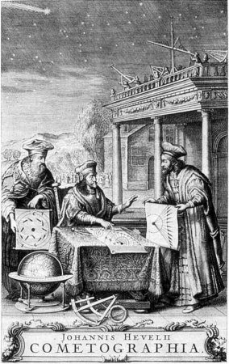
La cubierta de la Cometographia de Hevelio muestra tres sabios del siglo XVII debatiendo los méritos de varias hipótesis sobre el movimiento cometario, indicadas por los diagramas que exhiben. Mientras los sabios discuten, aparece sobre ellos en el cielo un cometa real. Al parecer ellos no se dan cuenta, pero sus ayudantes lo observan desde la azotea del observatorio. Cedido por Ruth S. Freitag, Biblioteca del Congreso.
Pero Halley sabía que Júpiter y Saturno se perturbaban mutuamente, y creyó probable que si un cometa de masa muy inferior se acercaba a uno de estos planetas gigantes, aunque no se aproximara mucho sufriría una perturbación mayor que si se acercaba más a otro cometa. Hizo un cálculo aproximado de los efectos de la gravedad de Júpiter y de Saturno sobre el movimiento del cometa, y vio que se correspondían bien con las discrepancias medidas. Halley dedujo que las ligeras diferencias en los elementos orbitales de los cometas de 1531, 1607 y 1682 tenían una explicación inmediata. Eran, pues, visitas del mismo cometa, vulnerable como todos los viajeros a desvíos, aplazamientos y a la situación de las carreteras.
La investigación de los cometas por Halley constituyó una empresa enorme, que exigió el cálculo laborioso de las órbitas de veinticuatro cometas que habían pasado por el perihelio entre 1337 y 1698. Le sorprendió como a Aristóteles y a Séneca el carácter arbitrario de sus inclinaciones:
Sus órbitas están dispuestas sin seguir un orden cierto... No están confinadas al zodiaco como las de los planetas, sino... que se mueven indiferentemente, tanto de modo retrógrado como directo. [7]
La distancia al Sol de los cometas estudiados en su paso por el perihelio iba desde una unidad astronómica hasta menos de 0,01 u. a.: el gran cometa de 1680, que casi rozó el Sol. Y en el afelio algunos de los cometas, incluyendo el de 1682, llegaban hasta más allá de la órbita de Saturno, el planeta más distante conocido entonces. [8]
Halley publicó en 1705 los resultados de su «inmensa labor» en un libro titulado Sinopsis de la astronomía de los cometas. Era la primera vez que un científico distinto de Newton aplicaba las leyes del universo reveladas por éste a la resolución de un misterio astronómico. Esto hubiese bastado para que Halley ocupara un lugar en la historia de la ciencia. Pero Halley fue mucho más lejos, dando un valiente salto que le mereció un lugar en la historia más amplia de la civilización. Durante milenios los cometas habían sido propiedad casi exclusiva de los místicos, de gente que consideraba los cometas como presagios, símbolos, fantasmas, y no como cosas. Halley quebró su monopolio ganándoles la partida en su propio terreno, un terreno que ningún científico había hallado todavía: la profecía. Predijo que el cometa de 1531, 1607 y 1683 regresaría pasados más de cincuenta años. Y no rebajó su apuesta. Afirmó rotundamente que regresaría en la Navidad de 1758, procedente de una parte concreta del cielo, con unos elementos orbitales concretos. Ninguna profecía de místico había intentado alcanzar una precisión de este tipo. Halley era una persona de muy pocos prejuicios, si se tiene en cuenta su época, pero en esta ocasión se permitió un poco de chauvinismo nacional:
Por tanto, si regresa de acuerdo con nuestra predicción en el año 1758, la posteridad imparcial no dejará de reconocer que esto fue descubierto por primera vez por un inglés.
En la primavera de 1696 Newton fue nombrado director de la real Casa de la Moneda, lo que le obligó a vivir en la Torre de Londres. Su tarea era impedir que se recortaran o limaran las monedas del reino. Meses después, Newton nombró a Halley -que había empezado su estudio de los cometas— subinterventor de la Casa de la Moneda de Chester. Por debajo del presidente y director en la Torre había presidentes, directores e interventores, etcétera, en las sedes provinciales de la Casa de la Moneda. Halley pasó dos tristes años en Chester supervisando la producción mecanizada de monedas acuñadas a partir de las antiguas monedas hechas a mano. Cuando él y el director local descubrieron que dos secretarios estaban sisando metales preciosos en beneficio personal, dieron el hecho a conocer, sin saber que su propio superior, el presidente de la Casa de la Moneda de Chester, se quedaba con una parte de lo que los secretarios sustraían. Estalló una terrible disputa y hubo amenazas de duelo; pero las casas de la Moneda se clausuraron en 1698, y Halley pudo volver libre a Londres.
* * * *
Elementos orbitales de los cometas conocidos por Halley
Elementos astronómicos de los movimientos, en una órbita parabólica, de todos los cometas obtenidos hasta ahora
En esta tabla, tomada de la obra de Halley, se basa su conclusión de que las tres apariciones impresas aquí en azul se refieren al mismo cometa. Nosotros mismos podemos ver lo que Halley descubrió cuando comparó los «elementos» orbitales o características de los cometas de 1531, 1607 y 1682. Las fechas se dan en días, horas y minutos; los ángulos celestes, en grados y minutos de arco, y la distancia del perihelio, en unidades astronómicas (la Tierra está a 1 u. a. del Sol). Ase, significa ascendente, y el nodo ascendente es uno de los dos puntos de intersección de una órbita cometaria con el plano zodiacal o eclíptico.
* * * *
Cubierta de la obra de Edmond Halley publicada en 1705 en la que se calculan las órbitas de los cometas y se postula el retorno periódico del cometa que la posteridad ha llamado de Halley. Cedido por la Royal Society de Londres.
Retrato de Edmond Halley, de media edad, por Richard Phillips. Fecha desconocida. Galería Nacional de Retratos, Londres.
La aparición espectacular del cometa Morehouse (1908 III), fotografiado por Max Wolf en el Observatorio de Heidelberg.
Mapa del océano Atlántico, por Halley, con las líneas que indican variación magnética, hacia 1701. Cedido por la Sociedad Astronómica Real.
* * * *
Halley, con la aparición de estos mapas magnéticos y con su obra ya publicada sobre la física del viento, los monzones y la evaporación del agua marina, puede calificarse en verdad como fundador de la moderna geofísica, hecho que reconoció la Royal Society en 1957 durante el Año Geofísico Internacional al dar el nombre de Bahía Halley a su base permanente científica en la Antártida.
Colin Ronan, Edmond Halley: Genius in Eclipse, 1969
* * * *
Llegó justo a tiempo para una colocación más agradable. El zar de Rusia, de veintiséis años de edad, que más tarde sería conocido por Pedro el Grande, había llegado a Inglaterra para aprender la manera de occidentalizar su país. Estaba cómodamente instalado en una gran casa solariega cerca de los astilleros de Deptford, donde realizaba trabajos manuales para tener una experiencia de primera mano sobre el genio de la construcción naval británica. (Nuestra imaginación protestaría si le pidiéramos que nos ofreciera un equivalente moderno: un presidente norteamericano trabajando en las instalaciones de montaje de naves espaciales de Tyuratam, por ejemplo, o el secretario general del Partido Comunista soviético instalado durante meses con un casco de trabajo en Cabo Cañaveral.) El zar había confiado conversar con Newton, pero éste envió a Halley en lugar suyo. Según se cuenta, el astrónomo inglés y el zar ruso se hicieron amigos rápidamente, pues compartían idéntica pasión por el saber y el coñac. Halley durante toda la estancia de Pedro en Inglaterra se convirtió en su consejero científico y en su compañero de juergas. Una noticia discutida, pero contemporánea, nos presenta a Halley empujando al zar de todas las Rusias dentro de una carretilla a altas horas de la noche por las calles de Deptford. Se dijo que los dos sufrieron una colisión y que la escapada causó graves daños en los setos.
Aquel mismo año, Mary dio a luz un hijo llamado Edmond, y su marido inició una carrera más, de la que habla una relación contemporánea llena de letras bastardillas:
En 1698, el rey [Guillermo III], que había sido informado de la ingeniosa teoría del señor Halley sobre la aguja magnética, deseó que se observara cuidadosamente la variación en beneficio de la navegación, en diversas partes del océano Atlántico; para cuyo fin su majestad, el 19 de agosto de 1698, nombró al señor Halley comandante de su nave Paramour Pink, para que buscara mediante observaciones la reala de la variación de la brújula, y al mismo tiempo visitara los asentamientos de su majestad en América haciendo allí algunas observaciones para determinar mejor las longitudes y latitudes de aquellos lugares y para que procurara descubrir qué tierras están situadas al sur del océano Occidental.
Setenta años antes de que Cook zarpara (persiguiendo un objetivo halleyiano), Halley mandaba la primera expedición marítima encargada por un monarca británico. El Paramour partió para España, las islas Canarias, África, Brasil y las Indias Occidentales, pero una incipiente rebelión por parte del segundo de a bordo obligó a regresar anticipadamente a Inglaterra. En el curso del consiguiente consejo de guerra se reveló que el malhumorado lugarteniente era una especie de teórico casero del magnetismo, cuyos escritos sobre el tema no habían sido aceptados por la Royal Society. El lugarteniente alimentó en silencio su indignación, y cuando nombraron capitán suyo a Halley, un marinero de agua dulce, perdió los estribos. Halley asumió la tarea de piloto y se sintió muy orgulloso de poder devolver la nave a puerto sin perder ni una sola vida humana.
Halley capitaneó dos expediciones más del Paramour, una, cargada de peligros, subiendo por la costa de América del Sur hasta Trinidad y luego hacia el cabo Cod. A la altura de Nantucket encontraron el mar demasiado movido y se vieron obligados a seguir hasta Terranova. Allí el Paramour recibió salvas amistosas de una flotilla inglesa de pesca que lo confundió con un buque pirata. El capitán devolvió de nuevo la nave sana y salva a Inglaterra, pero en esta ocasión no tuvo la satisfacción de volver con todos los miembros de su tripulación. Durante una fuerte tempestad ante las islas Canarias las olas arrastraron al grumete. Durante el resto de su vida, Halley no podía hablar de la muerte del niño sin lágrimas en los ojos.
Halley cumplió el mandato real publicando Nuevo y correcto MAPA mostrando las VARIACIONES de la BRÚJULA en los OCÉANOS OCCIDENTAL Y AUSTRAL observadas en el AÑO 1700 por orden de su majestad.
El mapa contenía una convención de líneas de puntos inventada por Halley para indicar los puntos de variación igual del campo magnético terrestre, método que continúa usándose hoy día en los mapas magnéticos. Halley amplió su carta del Atlántico y la convirtió en una carta del mundo, que se reimprimió y pasó por muchas ediciones durante un siglo.
El tercer y último viaje de Halley al mando del Paramour no le alejó tanto de casa. Su objetivo era estudiar las mareas del canal de la Mancha, aunque se ha indicado que la agenda oculta de Halley incluía un reconocimiento de la costa francesa en vísperas de la guerra de Sucesión española. En 1702, la reina Ana despacho a Halley como emisario diplomático a varios monarcas europeos.
Cuando Halley volvió a Inglaterra se encontró, quizá sorprendido, con que le ofrecían la cátedra saviliana de Oxford, pero de geometría, no de astronomía. Ahora Flamsteed, trece años después de su vitriólica campaña contra el nombramiento de Halley para otra cátedra saviliana, escribió una letra mordaz a un amigo común negando tanto la capacidad de Halley como sus perspectivas de conseguir la cátedra y quejándose de que «Ahora habla, maldice y bebe brandy como un capitán de mar...». Pero ya Halley gozaba de tanto respeto que el veneno de Flamsteed no podía afectarle, y recibió la cátedra en 1704.
Su discurso inaugural fue un delicado tributo a las hazañas geométricas de sus colegas. Como es lógico, destacó a Newton con las mejores alabanzas. Halley dedicó gran parte de su trabajo en la cátedra al redescubrimiento de los antiguos fundadores de la geometría, entre ellos Apolonio de Pérgamo, matemático y astrónomo que floreció en la segunda mitad del siglo III. Apolonio hizo en la gran ciudad de Alejandría con las secciones cónicas lo que Euclides había hecho con la geometría: fue el primero en describir la parábola, la hipérbola y la elipse (véase página 50). Halley, que utilizaba las propiedades de estas curvas para determinar las órbitas de los cometas, pagó su deuda con Apolonio infundiendo nueva vida a la obra del antiguo matemático. No se había conservado ningún ejemplar de la obra de Apolonio en su original griego, debido principalmente a la quema de la Biblioteca de Alejandría. Los únicos ejemplares estaban en árabe. Y así Halley, a sus cuarenta y nueve años, aprendió árabe. Trabajó inicialmente en colaboración con David Gregory, la persona a quien habían concedido la cátedra saviliana de astronomía cuando se la negaron a él. Pero Gregory falleció poco después de iniciarse el proyecto de Apolonio y Halley continuó solo con una tarea que había superado la capacidad de varios orientalistas de dedicación única. Pero Halley triunfó donde otros habían fracasado y asombró al primer orientalista de la época con su precisión e ideas. Su conocimiento de la geometría probablemente le ayudó.
Durante este mismo período reeditó los artículos más interesantes de las Philosophical Transactions en una obra de tres volúmenes destinada a un público popular. Halley estaba convencido de que las personas no científicas sentirían también curiosidad por el mundo físico y biológico.
Mientras tanto, el desgraciado Flamsteed continuaba en el Observatorio Real de Greenwich en su calidad de astrónomo real, suponiéndose que compartiría sus observaciones con la comunidad astronómica. Pero él se negaba tenazmente a hacerlo. Durante años se toleró esta clara negligencia, pero en 1704 la situación ya era inadmisible, y Newton, presidente ahora de la Royal Society, le visitó en Greenwich intentando descubrir el estado de sus observaciones. Flamsteed, después de treinta años en el cargo de astrónomo real, apenas había publicado nada. Flamsteed hizo creer a Newton que la obra de toda su vida. La historia británica de los cielos, estaba a punto de finalizar, y Newton volvió a Londres para preparar su publicación. Pero Flamsteed le había mentido; le faltaban años para acabarla.
Los retardos y la arrogancia de Flamsteed despertaron los peores instintos de Newton. La correspondencia entre ambos está llena de pruebas que demuestran el odio que se tenían. Tampoco eran los únicos enemigos entre sí. Está claro que cada parte tenía legítimos motivos de queja, pero Newton jugaba con ventaja y la utilizó desvergonzadamente. Durante los diez años siguientes, parece como si Newton disfrutara cruelmente torturando a Flamsteed, que en aquella época estaba enfermo y desesperado.
Halley disponía ahora de la oportunidad perfecta para vengarse del hombre que con una malevolencia irracional había montado campañas en perjuicio suyo. Pero la venganza era uno de los pocos temas que no conseguían despertar el interés de Halley. De hecho, trabajó a petición de Newton sobre el manuscrito de La historia británica de los cielos, corrigiendo errores, llevando a cabo muchos cálculos necesarios y ayudando a la publicación del libro, y todo esto contra los deseos explícitos de Flamsteed. Halley le escribió en junio de 1711:
Gobernad, por favor, vuestra pasión, y cuando hayáis visto y considerado lo que he hecho por vos, quizá penséis que merezco de vuestras manos un trato mucho mejor que el que durante largo tiempo os plugo darme.
Vuestro antiguo amigo, y todavía no enemigo disoluto (tal como me llamáis). Edm. Halley
El libro, publicado póstumamente, ampliaba el mapa de los cielos boreales de mil a tres mil estrellas, incluyendo muchas estrellas débiles que deben observarse con telescopio, y los astrónomos lo han alabado durante siglos. Sin embargo, Flamsteed se enfureció al ver la versión de la Historia Coelestis que había dado Halley, aparecida en 1712. Hacia 1714 Flamsteed había conseguido quemar casi todos los ejemplares en existencia. La versión oficial, con la palabra Britannicae completando el título, no se publicó hasta 1725, en una edición póstuma.
A pesar de la opinión en contra de Flamsteed, un estudio de la correspondencia demuestra que Halley se mantuvo circunspecto con él hasta su muerte en 1719. Entonces intervino el destino volcando sobre Halley la satisfacción que él mismo había rechazado, fue nombrado sucesor de Flamsteed como astrónomo real. Pero, cuando llegó al Observatorio Real de Greenwich para hacerse cargo de él, lo encontró despojado de instrumentos astronómicos; todos eran propiedad personal de Flamsteed, dijo su viuda. Era cierto: Flamsteed había comprado de su propio bolsillo hasta el último sextante y cuadrante.
Halley tenía ahora sesenta y tres años y continuaba tan curioso y apasionado por la ciencia como siempre. Leer su artículo Relación del extraordinario METEORO visto sobre toda Inglaterra el 19 de marzo de 1719 es descubrir una especie de desnudo entusiasmo que ha quedado eliminado de modo efectivo de la literatura científica actual. Empieza anunciando «Este maravilloso Meteoro luminoso» que, según lamenta, «no tuve la fortuna de ver». Pero otros lo vieron y él reproduce sus historias. Sir Hans Sloan, vicepresidente de la Royal Society, fue uno de los afortunados. Sloan, sin previo aviso, ve aparecer en el cielo nocturno algo mucho más brillante que la Luna, primero cerca de las Pléyades, y luego debajo del cinturón de Orion. Era tan brillante que sir Hans se vio obligado a apartar la mirada. Calculó que el meteoro se desplazó a través de 20 grados de cielo en medio minuto o quizá menos. En definitiva, un testimonio bastante completo de parte de una persona que sin duda no estaba preparada para la observación astronómica. Pero Halley se muestra insatisfecho: «Hubiera sido deseable —comenta críticamente— que sir Hans hubiese considerado de modo más especial la situación de la trayectoria de ese meteoro entre las estrellas fijas, y que nos hubiera explicado si pasó muy por encima de las Pléyades o muy por debajo del cinturón de Orion...» Halley no puede evitarlo, le desespera saber y su deseo de saber es mayor que su conocida bondad. Quiere saberlo todo sobre el meteoro: su altitud, su velocidad, el sonido que emitió, su tamaño, su composición. Nosotros no podemos evitar sentirnos privilegiados, porque conocemos las respuestas a esas preguntas (capítulo XIII); desearíamos de algún modo compartirlas con él.
Halley, a la edad de sesenta y cinco años y en un acto de consumado optimismo, emprendió un estudio ambicioso del ciclo de los eclipses limares, que dura dieciocho años. Halley, inventor de la tabla aduanal, no podía ignorar la improbabilidad de que su vida se prolongara tanto que le permitiera completar el proyecto. Pero él superó todas las probabilidades en contra y acabó el trabajo cuando tenía ochenta y cuatro años.
Su productividad y su longevidad fueron extraordinarias en otro aspecto. Se dice a veces que los físicos son como las efímeras, con sólo un breve período creativo; de hecho, una fracción sorprendentemente elevada de los descubrimientos importantes se realiza antes de los treinta y cinco años de edad. Esto es más cierto en la física teórica que en la experimental y más cierto en física que en astronomía. Quizá después de los treinta años la mente pierde parte de su capacidad para conceptualizar a gran escala. Pero en las últimas décadas de su vida, Halley consiguió importantes avances teóricos en nuestra comprensión de la naturaleza en su mayor escala: el universo. Descubrió que en realidad las llamadas estrellas «fijas» se mueven unas en relación a otras. Quizá estimuló este descubrimiento su labor con el libro de Flamsteed, aunque tuvieron que pasar cien años más de desarrollo instrumental de la astronomía para que pudiera confirmarse el movimiento propio de las estrellas. En otro artículo de sus últimos años, Halley anticipó los descubrimientos de una época muy posterior al defender la idea de un universo ilimitado sin centro. Halley fue culpable al final de creer en el infinito.
Mary, la esposa de Halley, murió cuando él tenía ochenta años de edad. Poco después Halley sufrió un ataque de apoplejía y la pérdida de su hijo. A pesar de esos golpes, continuó haciendo observaciones astronómicas y asistiendo a reuniones hasta unas semanas antes de su muerte, el 14 de enero de 1742, a la edad de ochenta y seis años. Sus últimas palabras fueron pedir una copa de vino. La bebió sentado en una butaca. Cuando hubo vaciado la copa murió sin un suspiro.
Había deseado yacer para siempre al lado de Mary. Sus hijas grabaron este tributo (traducido aquí del original latino) en la tumba de sus padres:
Bajo este mármol descansa en paz, con su amada esposa, Edmond Halley, Ll. D., sin duda el mayor astrónomo de su época. Pero el lector, para concebir un conocimiento adecuado de la excelencia de este gran hombre, ha de recurrir a sus escritos, donde casi todas las ciencias aparecen ilustradas y mejoradas de la manera más bella y perspicaz. Sus compatriotas lo estimaron tanto en vida que la gratitud exige el respeto de su memoria por parte de la posteridad. A la memoria del mejor de los padres, sus afectuosas hijas han erigido este monumento en el año 1742.
Edmond Halley no fue únicamente el hombre que descubrió un cometa. De hecho, descubrir cometas fue una de las pocas actividades científicas a las que no se dedicó. Pero la posteridad no ha honrado mucho el deseo de las hijas de Halley.
Una opinión muy extendida asegura que el precio de comprender profundamente las complejidades de la naturaleza se paga con la moneda de la alienación. Dicen que existe una ley del cuadro inverso entre el genio científico y la capacidad de amar. Si se presenta la vida de Isaac Newton como el ejemplo más espectacular de este teorema, la vida de su amigo Edmond Halley, que hizo manifiesto más que nadie el genio de Newton, puede presentarse como su excepción más sugestiva.
* * * *
Parece no el epítome de una persona, sino de toda la humanidad.
Herbert Dingle, conferencia Halley, Universidad de Oxford, 1956
Retrato de Edmond Halley a los ochenta años, poco antes de la muerte de su esposa, Mary. Pintura de Michael Dahl. Cedido por la Royal Society de Londres.
Dibujo del núcleo, la coma y la cola del gran cometa de 1680, y los núcleos de cinco cometas más. De la obra de Thomas Wright de Durham Teoría original o nueva hipótesis del universo, editada por Michael A. Hoskin (Londres, 1750, y Nueva York, 1971). Cedido por Michael A. Hoskin.
Capítulo IV
La época del retorno
Guardiana y amiga de la Luna, ¡oh Tierra!, que los cometas no olvidan mientras giran alrededor tuyo en la inconmensurable distancia y te contemplan una y otra vez.
Samuel Taylor Coleridge, Himno a la Tierra, 1834
China invadió el Tíbet y el Turkestán; tropas francesas se apoderaron del valle del Ohio; Gran Bretaña declaró la guerra a Francia; Prusia derrotó a Austria y a continuación Austria derrotó a Prusia; un ejército ruso ocupó Alemania; y se reprimió despiadadamente una revolución india contra el ejército británico de ocupación. La década en tales aspectos fue casi indistinguible de muchas otras. Pero fue también una época de ilustración. Se publicó en Francia la Enciclopedia de Diderot y el Diccionario de Samuel Johnson en Inglaterra; Hume, Rousseau y Voltaire escribieron obras fundamentales; Bach murió y Mozart nació. Lomonósov fundó la Universidad de Moscú. Abrieron sus puertas la Academia Prusiana de Ciencias y el primer manicomio de Londres; se estaba escribiendo Tristram Shandy; Hokusai nacía en Tokio, y un agrimensor de Virginia llamado George Washington se casó con una viuda llamada Martha Custis.
Thomas Wright de Durham representado en un grabado del Gentlemen’s Magazine, enero de 1973. El retrato está rodeado por una serpiente con la cola en la boca, que simboliza la eternidad. Biblioteca Gráfica Ann Ronan.
Y dentro de la ciencia, ésta era la década en la que el señor Halley había predicho que retornaría un cometa. En la primera mitad de la década de 1750 se publicaron dos obras científicas extraordinarias, ambas sobre la naturaleza de los cometas, y cada una presentando una visión del universo con un avance asombroso sobre su época.
Thomas Wright de Durham era astrónomo por naturaleza e inclinación, pero totalmente autodidacto. Nacido en 1711, en el norte de Inglaterra, hijo de un carpintero, no pudo continuar sus primeros estudios «por un gran impedimento del habla». Al parecer también le expulsaron de la escuela. Según dijo, era en aquel entonces «muy salvaje y muy aficionado al deporte». Siguiendo la costumbre de la época, a los trece años entró de aprendiz de un relojero, y se pasó tanto tiempo en la relojería enfrascado en la literatura astronómica que su padre pensó que estaba loco. El padre de Wright, al contrario que el de Edmond Halley, intentó al parecer influir en la dirección de sus estudios quemando sus libros. Poco después, el joven fue expulsado de su puesto de aprendiz, culminando así un escándalo considerable: se enamoró de la hija de un clérigo, pero sus planes de matrimonio secreto se descubrieron, «se impidieron y la señorita quedó encerrada bajo llave»; Wright, angustiado, buscó pasaje para las Indias Occidentales, pero su indignado padre le impidió embarcarse.
Wright, después de este inicio prometedor, aprendió por sí solo agrimensura y navegación, se convirtió en tutor de los hijos de la aristocracia, rechazó una cátedra en la Academia Imperial Rusa de San Petersburgo y empezó a escribir libros de astronomía. El más extraordinario de ellos, llamado Teoría original del universo, fue precisamente esto. Publicado en 1750, contiene la primera definición conocida de la naturaleza y geometría auténticas de la Vía Láctea: no un camino de los dioses, no leche divina esparcida por los cielos, no un apoyo arquitectónico para sostener el cielo, sino un disco plano de estrellas como el Sol, todas suspendidas en el océano del espacio. Desde la época de Demócrito, unas pocas personas habían imaginado que la Vía Láctea estaba compuesta de estrellas individuales, demasiado débiles y distantes para poderse observar una por una; esta idea fue refrendada por Galileo con el primer y pequeño telescopio. En la época de Milton, un poeta ya podía describir la Vía Láctea como una galaxia «salpicada de estrellas». Pero quien propuso por primera vez la idea de que la Vía Láctea era una concentración aplanada de estrellas con el Sol entre ellas fue Wright. Imaginó incluso que las estrellas giraban alrededor del centro galáctico, «como hacen los planetas alrededor del Sol».
Es cierto que hay elementos místicos en las obras de Wright y que no todo lo propuesto en su Teoría original ha superado la prueba del tiempo, pero su concepción de la Vía Láctea marcaría un hito en la historia de la astronomía, aunque no hubieran expulsado nunca a su autor de la escuela primaria y no hubiera adquirido una educación formal. Como veremos más adelante, esta visión de una galaxia llena de estrellas en movimiento ha resultado un elemento básico para comprender la naturaleza y origen de los cometas.
Pero la Teoría original discutió los cometas por derecho propio. Wright explotó su talento de dibujante y agrimensor confeccionando elegantes diagramas para ilustrar la escala del sistema solar, con los cometas ejerciendo un papel prominente. Le encantó presentar las órbitas cometarias tabuladas por Halley con sus dimensiones y orientaciones correctas (véase página 84), proporcionando de paso a muchos una primera e impresionante perspectiva de las pequeñas escalas de las órbitas planetarias. Wright intentó mostrar las dimensiones relativas de los mundos entonces conocidos (véase página 83). Los planetas grandes, Júpiter y Saturno, dominan el dibujo. Las nueve lunas, las únicas conocidas entonces, y los planetas interiores, Mercurio, Venus, la Tierra y Marte, junto con la Luna terrestre, aparecen como mundos insignificantes. Se había observado ya que Júpiter estaba cubierto de nubes, pero Wright no pudo resistir la tentación de ofrecer algo de tierra y de océanos asomando entre las nubes. Aquellos mundos nos llamaban.
Después de estos inicios prometedores, Wright intentó dibujar también a escala los cometas, a partir de las observaciones cometarias disponibles en su época. El resultado aparece en la portada de este capítulo. A escala, A representa la Tierra; C, D, E y L, los núcleos respectivamente de los cometas de 1682, 1665, 1742 y 1744. En realidad lo que se medía en la época de Wright, y lo que todavía suele medirse en nuestro tiempo, no era el núcleo del cometa, sino la coma. El núcleo, término utilizado por Wright, es el centro brillante del cometa, la fuente supuesta de las finas partículas de gas que forman la cola del cometa. Pero la coma, la concentración de gases alrededor del núcleo, la oculta a nuestra vista. La ausencia casi total de detalles en los dibujos que Wright confeccionó de los «núcleos» cometarios podría haberle sugerido la situación real. A pesar de tales observaciones visuales, el núcleo podría ser mucho más pequeño que la coma; podría ser tan pequeño que resultara invisible aunque no estuviera envuelto en un manto de materia. Como indica la figura, las comas de los cometas en las proximidades de la Tierra a menudo tienen el mismo tamaño aproximado que la Tierra.
Retratos de Júpiter (arriba) con cuatro de sus lunas, de Saturno (abajo) con cinco de sus lunas, y de los planetas Mercurio, Venus, la Tierra y Marte, con la Luna de la Tierra situada en el centro para su comparación. Aparece la división de Cassini en los anillos de Saturno, pero los detalles de las superficies de Júpiter y de Saturno son totalmente fantásticos. De la obra de Thomas Wright de Durham, Teoría original o nueva hipótesis del universo, ed. por Michael A. Hoskin (Londres, 1750, y Nueva York, 1971). Cedido por Michael A. Hoskin.

La órbita de un cometa atraviesa un sistema solar circunscrito, fuera de la órbita de Saturno, por una serpiente. De la obra de Thomas Wright de Durham Teoría original o nueva hipótesis del universo, ed. por Michael A. Hoskin (Londres, 1750, y Nueva York, 1971). Cedido por Michael A. Hoskin.
La elegante descripción que Thomas Wright hizo del sistema solar conocido en su época. En el centro están los planetas Mercurio, Venus, la Tierra y Marte, representados por su símbolo astronómico, y fuera de los rayos del Sol, las órbitas de Júpiter y Saturno. De los tres cometas representados aquí, el de 1680 es el cometa cuya órbita calculó por primera vez Newton, y el cometa de 1682 es el cometa cuyo retorno predijo Halley: para menos de una década después de la publicación de esta figura. De Thomas Wright de Durham, cedido por Michael A. Hoskin, ibíd.
La escala del sistema solar según Thomas Wright. Comparar con las páginas 17 y 18. De Teoría original o nueva hipótesis del universo de Thomas Wright de Durham, ed. por Michael A. Hoskin (Londres, 1750, y Nueva York, 1971). (En la figura 3, la roseta cometaria recuerda el átomo de Bohr.) Cedido por Michael A. Hoskin.
Ocupa un lugar prominente en la portada la representación pictórica de Wright del gran cometa de 1680, el mismo cometa que Newton en los Principia había demostrado brillantemente que recorría una sección cónica alrededor del Sol obedeciendo la ley de la gravitación universal, el mismo cometa que había despertado el interés de Halley por estos astros. No sabemos si Wright se limitó a dibujar lo que otros habían descrito con palabras o si tuvo acceso a dibujos hechos con telescopio, pero lo que vemos representado se acerca mucho al aspecto que ofrecen muchos cometas (véanse capítulos VII, IX y X).
Wright llamó a la región aa «la atmósfera natural del cometa», y las líneas centrales convergentes representan «materia más densa»; XX es una representación de la «atmósfera inflamada y de la dilatada cola cerca del Sol». El «núcleo» del cometa de 1680, como ya hemos dicho, es simplemente su coma interior. Encima de él hay tres capas concéntricas de materia que, según sabemos por las observaciones de otros cometas posteriores, fueron expulsadas sucesivamente por el núcleo. Y las tracerías de finas líneas de esta coma exterior tienen un aspecto curioso como si fueran surtidores de material proyectándose al espacio desde la cara del núcleo cometario iluminada por el Sol.
Wright resumió la escala del sistema solar ofreciendo a sus lectores, sorprendidos y encantados, un diagrama en tres partes (véanse página 85). En su figura 1 aparece a escala el tamaño del Sol con la órbita de Mercurio. Los arcos de la figura 2, con la órbita de Mercurio a escala, representan sucesivamente las órbitas de los restantes planetas conocidos en la época de Wright: Mercurio, Venus, la Tierra, Marte, Júpiter y Saturno. Y en la figura 3, el entero sistema planetario está representado por un punto central, con un rosetón de órbitas planetarias que constituyen la sola indicación de dónde podrían estar situados los planetas.
Retrato de Immanuel Kant por J. F. Bause, según un retrato de V. H. Schnorr, 1789.
Wright consideró que el límite exterior del sistema solar estaba situado algo más lejos de las porciones más lejanas de las órbitas de los cometas más distantes conocidos entonces; y luego dibujó la «distancia menor posible» entre el Sol y la estrella que entonces se tenía por más próxima, Sirio. (Actualmente sabemos que tanto los límites exteriores del sistema solar como la distancia del Sol a Sirio son mucho mayores que los propuestos en la época de Wright.) Wright conjuró la imagen de «una mente acabada de crear o de un ser pensante en un profundo estado de ignorancia» que observara Sirio y el Sol desde una remota perspectiva, y luego llegara al sistema solar y observara la disposición de los cometas y los planetas. ¿Qué imaginaría este ser aparcado en órbita alrededor de Sirio? Wright responde alegremente: «Claro, planetas como los nuestros.» Y cometas.
* * * *
La obra de Wright probablemente influyó sobre la perspectiva de los astrónomos y el futuro de la astronomía de un modo que hoy no podemos apreciar; pero la influencia más significativa se produjo gracias a una crítica aparecida el año siguiente (1751) en una revista alemana llamada Opinión e información libres para el progreso de la ciencia y de la historia en general Uno de sus lectores que vivía en la ciudad universitaria de Königsberg era un doctorando de veintisiete años enamorado de la envergadura y elegancia de la obra de Isaac Newton, más tarde se convertiría en un gigante de la filosofía, pero a principios de la década de 1750 estaba interesado principalmente por las ciencias.
En 1755, Kant, emocionado por la visión que Wright ofrecía del universo, pero habiendo leído únicamente una crítica de su obra, publicó la Historia natural general y teoría de los cielos. En ella deja clara su deuda con Wright. El libro se publicó cuatro años antes del esperado retorno del cometa Halley.
Kant y Wright eran afines en su vida intelectual. Pero en sus vidas personales hay por lo menos tantas diferencias como semejanzas. Kant, aparte de su inteligencia innata, tenía pocas ventajas naturales. Una de ellas, al contrario de Wright, era el apoyo de sus padres. Kant, que toda su vida estuvo delicado de salud, que tenía el tórax deformado y medía apenas metro y medio de estatura, se sometió a un régimen estricto de ejercicios regulares, principalmente caminatas. Su padre fabricaba sillas de montar. Sabemos que Wright planeó por lo menos fugarse con la hija del vicario; en cambio, parece que Kant no tuvo relaciones íntimas con ninguna mujer, aparte su madre. Wright quería buscar fortuna en la lejana América; en cambio, en toda su vida Kant no se aventuró nunca a más de cien kilómetros de Königsberg. Wright desencadenaba escándalos; en cambio, la conducta de Kant era decente, incluso austera. A Wright le expulsaron de la escuela; en cambio, Kant fue un estudiante muy aventajado, admirado por sus maestros. Wright y Kant eran hombres diferentes, moldeados por culturas diferentes, pero los dos se dejaron arrastrar por la gran visión newtoniana de innumerables estrellas y de mundos innumerables moviéndose todos en obediencia solemne a una gran ley universal de la gravitación, que podía reconstruir sus posiciones en el pasado lejano y predecir sus posiciones en el futuro remoto.
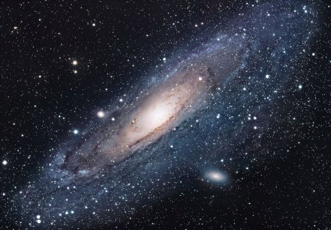
La gran galaxia M-31 «en» (es decir, más allá de) la constelación de Andrómeda, que proporciona las estrellas de primer plano en esta imagen. Situada a una distancia de dos millones de años luz, es la galaxia espiral más próxima, del mismo tipo que nuestra Vía Láctea. La imagen no resuelve ninguna estrella individual en M-31, a pesar de que contiene centenares de miles de millones de estrellas. Si esto fuera una fotografía de nuestra Vía Láctea, obtenida desde algún punto lejano del espacio, la posición del Sol quedaría tan alejada del centro que se saldría de la figura. M-31 aparece acompañada por sus dos galaxias satélites más pequeñas. Cedida por los observatorios Hale, Institución Carnegie de Washington e Instituto de Tecnología de California.
La Teoría de los cielos de Kant [9] abrió muchos caminos. Kant aceptó la idea que Wright tenía de la Vía Láctea: un volumen de espacio limitado por dos planos paralelos y lleno de estrellas. Kant fue el primero en plantearse el origen y evolución de la galaxia; un tema central de la moderna astrofísica. Dio además otro atrevido salto: supuso que la Vía Láctea era una galaxia más de un conjunto innumerable de otras galaxias, cada una llena de estrellas, quizá incluso de planetas y de vida, una perspectiva cósmica que no quedó demostrada plenamente hasta los años 1920. Wright había buscado una concepción de este tipo, pero sin alcanzarla. Kant propuso correctamente que las nebulosas espirales, como M31 en la constelación de Andrómeda (arriba), eran Vías Lácteas distantes. La revelación básica de la astronomía moderna quizá sea precisamente ésta: que nosotros vivimos en un universo de galaxias compuesta cada cual de una multitud de soles.
Las páginas de la Teoría de los cielos pueden ofrecernos muchos placeres más, incluyendo la primera formulación de que el sistema solar se formó a partir de una nube de materia difusa interestelar. La idea se llama actualmente hipótesis Kant-Laplace; la nube de materia se llama ahora nebulosa solar. Y Kant discute los cometas, como era natural en una persona que escribía sobre astronomía poco antes del retorno predicho del cometa Halley:
La característica más distintiva de los cometas es su excentricidad... Sus atmósferas y colas, que al aproximarse mucho al Sol se extienden por acción del calor... [fueron], en las edades de la ignorancia, objetos insólitos que inspiraban el terror..., y el pueblo llano creía que auguraban destinos imaginarios... No es posible considerar los cometas como especies peculiares de cuerpos celestiales totalmente distintos de la raza de los planetas.
Kant describió a los cometas condensándose a partir de «materia primitiva en regiones del espacio muy alejadas del centro y que la atracción [gravitatoria] mueve débilmente». Imaginó que los cometas, al contrario de los planetas, se formaban con sus órbitas en todas las inclinaciones, situación que calificó de «libertad sin ley». «Por tanto —dijo—, los cometas se nos acercarán sin restricciones desde todas las regiones.»
Cuando Kant discute la densidad y de hecho la química de los cometas, su punto de partida es asombrosamente acertado:
La densidad específica de la materia con que se formaron los cometas es más notable que la magnitud de sus masas. Los cometas se formaron en la región más alejada del universo; por tanto es probable que sus partículas componentes sean del tipo más ligero; y no puede ponerse en duda que ésta es la causa principal de las cabezas y colas de vapor que los distinguen de los demás cuerpos celestiales.
Pero luego Kant da un viraje equivocado:
Esta dispersión de la materia de los cometas en forma de vapor no puede atribuirse principalmente a la acción del calor del Sol; porque algunos cometas apenas alcanzan una distancia del Sol igual a la de la órbita terrestre; y muchos se detienen entre las órbitas de la Tierra y de Venus, para luego volver hacia atrás. Si un grado de calor tan moderado resuelve y atenúa la materia de la superficie de estos cuerpos con tanta fuerza, ¿no consistirán los cometas de la materia más ligera, capaz de sufrir por la acción del calor una atenuación mayor que la de cualquier otra materia en toda la naturaleza?
El problema de Kant es encontrar un material que pase de sólido a vapor a la distancia que separa la Tierra del Sol. Le bastaba con echar una ojeada desde su ventana, quizá mientras escribía estas mismas líneas. Hubiese visto una nube de vapor elevándose del helado río Pregel, que le habría dado la respuesta: el hielo. Hielo corriente de agua. No una sustancia exótica, al menos para la Tierra. No una sustancia celeste especial, desconocida en la Tierra. Simple hielo.
Desde luego no es justo criticar con nuestros conocimientos actuales a Kant, cuya concepción de estos temas era notable en una época notable.
Fotografía tomada desde nuestra posición, incrustada dentro de la Vía Láctea, del centro de la galaxia, más allá de la cercana constelación de Sagitario que proporciona las estrellas de primer plano. Vemos las grandes nubes de gas y de polvo que cortan diagonalmente la imagen y señalan el plano de la galaxia. Foto de David Talen. Cedida por los Observatorios Nacionales de Astronomía Óptica.
Nosotros nos beneficiamos del número enorme de científicos competentes que han vivido entre sus días y los nuestros. Pero imaginémosle con la pluma de ave en la mano preguntándose cuál podría ser esta extraordinaria «materia más ligera», tratando de concebir una quintaesencia, mientras por la ventana veía vaporizarse el hielo del río Pregel. A uno le apetecería saltarse los siglos y animarle un poco. Es posible, desde luego, que haya una explicación más sencilla del error. Quizá su estudio carecía de ventanas. Quizá escribió el tercer capítulo de la segunda parte de la Teoría de los cielos en verano.
Kant, en otros lugares de su obra, casi llega a la respuesta correcta por un camino totalmente inesperado. Se imagina a la misma Tierra adornada en alguna época pasada por un anillo como los anillos de Saturno, que él creía compuesto de pequeños mundos en órbitas individuales, mundos tal vez de hielo. Kant se entusiasma pensando en la belleza de aquel cielo:
¡Un anillo alrededor de la Tierra! ¡Qué bello espectáculo para quienes fueron creados con el fin de que habitaran la Tierra como un paraíso! ¡Qué cosa tan conveniente para seres a quienes la naturaleza tenía que sonreír desde todos los lados!
Se le acude de repente que un anillo así podría explicar una extraña frase del libro del Génesis: «...el agua sobre el firmamento», aguas que en cierto modo eran intrínsecas del cielo. Kant señala que esta idea «ha causado no pocos problemas a los comentaristas»; es decir, a quienes intentaban reconciliar la física y la Biblia. De hecho, Tomás de Aquino había dedicado su tiempo a esta misma cuestión en la Suma Teológica. Kant tenía algo que sugerir a los exegetas bíblicos:
¿No podría este anillo ayudarlos a resolver esa dificultad? El anillo está compuesto indudablemente por vapores acuosos y, además de las ventajas que podía proporcionar a los primeros habitantes de la Tierra, tenía la propiedad de fragmentarse en ocasiones, cuando había que castigar el mundo, inmerecedor ya de tanta belleza, con un diluvio.
Se nos ofrece así la imagen de un sistema anular circunterrestre formado como su primo saturnino por satélites en órbitas individuales y compuesto de agua. Kant, en la Teoría de los cielos, propone la existencia en el espacio cercano a la Tierra de cuerpos compuestos de agua sólida, líquida o gaseosa. Pero nunca considera que los cometas pudieran estar compuestos de hielo, aunque se acerca pasmosamente a ello.
Kant afirma que los cometas se condensan más allá de Saturno, en una nube de cuerpos de elevada excentricidad y todas las inclinaciones posibles; que cuando se encuentran en el sistema solar interior, aproximándose a la órbita de la Tierra, el calor del Sol los calienta y vaporiza sus superficies; que las colas, compuestas por este vapor, son proyectadas hacia atrás por alguna influencia eléctrica del Sol. Esta descripción es casi insuperable para 1755, incluso prescindiendo de que Kant estuvo a punto de deducir que los cometas están compuestos de hielo.
El libro de Kant se imprimió cuando tenía treinta y un años de edad, y está dedicado a Federico el Grande. Pero no se distribuyeron nunca ejemplares al emperador prusiano ni a nadie; el editor quebró antes de que el libro saliera de la imprenta. La dedicatoria, cobarde por su sumisión a la autoridad secular, era típica de la época. Está reproducida en el recuadro de esta página. De hecho, Kant no era un partidario entusiasta de Federico y, más avanzado el siglo, expresaría fuertes simpatías por las revoluciones antimonárquicas americana y francesa. Se quejó más de una vez de que el Estado gastaba demasiado dinero en la guerra y demasiado poco en educación.
Kant también era muy cauteloso en cuestiones religiosas. Le preocupaba que una explicación natural de la evolución del sistema solar basada únicamente en la física newtoniana resultara ofensiva para las creencias dominantes. Predijo correctamente que los fieles de las religiones oficiales alegarían lo siguiente:
Si la estructura del mundo con todo su orden y belleza es sólo un efecto de la materia abandonada a sus propias leyes universales de movimiento, y si la mecánica ciega de las fuerzas naturales puede dar por evolución un producto tan maravilloso a partir del caos, y éste puede alcanzar por sí mismo una tal perfección, la prueba del divino Autor basada en el espectáculo de la belleza del universo pierde toda su fuerza. La naturaleza es autosuficiente y el gobierno divino resulta innecesario....
Es decir, que la verdad sobre el funcionamiento del universo podía resultar peligrosa si conseguía anular las enseñanzas de las sectas. El argumento continúa todavía en pie. Ante esto, Kant dice: «No me lancé a esta empresa sin antes verme en seguridad ante los deberes de la religión.» Si no hubiese podido reconciliar sus ideas científicas con la doctrina religiosa convencional, dice Kant, habría suprimido las primeras.
* * * *
El filósofo y el rey
Dedicatoria de la obra de Immanuel Kant Historia natural y teoría de los cielos a Federico el Grande
AL
SERENÍSIMO,
AL MÁS PODEROSO REY Y SEÑOR
FEDERICO
REY DE PRUSIA, MARGRAVE DE BRANDEBURGO, GRAN
CANCILLER Y ELECTOR DEL SACRO IMPERIO ROMANO, SOBERANO Y ARCHIDUQUE DE
SILESIA, ETC.
¡MI MUY GRACIOSO REY Y SEÑOR, SERENÍSIMO Y PODEROSÍSIMO REY, EL REY Y SEÑOR MÁS GRACIOSO!
El sentimiento de indignidad personal y el esplendor del trono no pueden hacerme más tímido y medroso, pero el favor que el más gracioso de los monarcas extiende con igual magnanimidad a todos sus súbditos me inspira la esperanza de que el atrevimiento que demuestro no será considerado con ojos descorteses. Con el respeto más sumiso entrego aquí, a los pies de vuestra majestad real, una prueba muy ligera del celo con que se ven estimuladas las academias de vuestra alteza por los ánimos y la protección que les presta su ilustrado soberano a fin de que emulen a las demás naciones en las ciencias. ¡Qué feliz sería si el actual ensayo lograra la suprema aprobación de nuestro monarca por los esfuerzos incesantemente con que el más humilde y respetuoso de sus súbditos intenta ser útil de algún modo al bien de su país! Con la más profunda devoción hasta la muerte, soy, el más humilde sirviente de vuestra real majestad, Königsberg, 14 de marzo de 1755.El autor
* * * *
Kant, a pesar de estas actitudes precavidas, en 1788, y por primera vez en su vida, se vio inmerso en una controversia que era al mismo tiempo política y religiosa: el sucesor de Federico, Federico Guillermo II, inició una campaña para arrancar de raíz las perniciosas enseñanzas de la Ilustración que habían llevado la ciencia y el racionalismo a la cultura europea. Kant recibió una orden ministerial de 1794 que deploraba el «abuso» que él hacía de la filosofía, pues se había comprobado que sus enseñanzas no demostraban la debida deferencia hacia la sabiduría teológica dominante. La orden le advertía explícitamente: «Si continuáis oponiéndoos a esta orden, podéis esperar ciertamente consecuencias desagradables.» Kant pronto se sometió e intentó justificar su sumisión: «La retracción y la negación de las propias convicciones interiores es vil, pero el deber de un súbdito en un caso como el actual es el silencio. Y si todo lo que uno dice ha de ser auténtico, no se deduce de ello que el deber de cada cual consista en decir públicamente todo lo cierto.» En este tema concreto Kant no fue un gigante.
El biógrafo de Kant, Friedrich Paulsen, que escribía en 1899, valora su carácter de un modo interesante, vista la trágica historia de Alemania en la primera mitad del siglo XX:
Quizá podemos decir que hay una relación interna entre la ética de Kant y la naturaleza prusiana. El concepto de la vida como servicio, una inclinación a ordenarlo todo según reglas, cierta desconfianza en la naturaleza humana, cierta falta de la plenitud natural de la vida, son rasgos comunes a ambas. Lo que vemos aquí es un tipo de carácter humano muy estimable, pero no digno de amor. Tiene un elemento frío y severo que puede degenerar en el cumplimiento externo del deber y en una moralidad dura y doctrinaria.
La famosa carrera filosófica de Kant se inició con un intento de elaborar las implicaciones generales de la concepción newtoniana del universo. Gran parte de la filosofía de Kant fue una batalla continua con la filosofía muy influyente de Gottfried Wilhelm Leibniz, una visión del mundo afectada, formalista y antropocéntrica, con ilusiones de completitud. (Leibniz fue una de las muchas personas con quienes Newton mantuvo prolongadas peleas.) Kant, en su Crítica de la razón pura, anunció que había impuesto una revolución copernicana a la filosofía. Copérnico había demostrado que el movimiento aparente del Sol, la Luna y las estrellas se debía en realidad al movimiento del observador. Leibniz había afirmado que algunos temas, entre ellos la inmortalidad, la libertad y Dios, eran cognoscibles; en cambio, Kant aseguró que, por su misma naturaleza, estos temas no podían ser experimentados de modo pleno, y de hecho no se conocían. Leibniz había presentado, pues, la ilusión y no la realidad del conocer. Era una materia embriagadora, y las autoridades, como es lógico, la consideraron subversiva.
Se considera generalmente que el papel de Kant en la historia de la filosofía es magistral, pero nos preguntamos si hubiese sido más efectivo a largo plazo haber continuado dedicándose a la notable labor científica de su juventud y haber dejado la metafísica para los demás. (Esta opinión, desde luego, es una herejía.) En su tumba están inscritas estas palabras: «Los cielos estrellados sobre mí y la ley moral dentro de mí llenan la mente de admiración y temor continuamente renovados y crecientes...»
* * * *
Edmond Halley había predicho que el cometa de 1682 volvería en 1758. Es explicable que su profecía causara poca emoción en su época; 1758 quedaba a más de medio siglo de distancia.
Nicole-Reine Étable de la Briére Lepaute. Retrato por Guillaume Voiriot. Cedido por Michel-Henri Lepaute.
Cuando Halley murió en 1742, sus obituarios no mencionaron que hubiese predicho el retorno de un cometa. En cambio, se prestó gran atención a sus viajes de exploración y a la campana sumergible que había inventado.
Pero hacia 1757 había ya personas obsesionadas con la idea de utilizar la física gravitatoria de Newton para predecir el futuro. Entre ellos estaba Alexis Clairaut, un eminente matemático francés que había publicado su primer artículo científico a los trece años. Decidió en el último momento intentar mejorar las tablas de Halley, que daban la órbita del cometa de 1682 y la época prevista de su retorno. Era importante, desde luego, que la predicción revisada apareciera antes que el cometa, «para que nadie pudiera dudar del acuerdo entre la observación y los cálculos». Pero el cometa se estaba acercando rápidamente y la tarea era enorme, pues exigía cálculos meticulosos de las interacciones gravitatorias de Júpiter, Saturno, la Tierra y el cometa a lo largo de ciento cincuenta años. Clairaut aseguró que pidió la ayuda del astrónomo Joseph Jérôme de Lalande. Según la versión de Lalande, la cosa fue al revés. Pero Clairaut no hizo mención pública del tercer miembro del equipo, sin la cual —como admitiría después Lalande— no se hubiesen atrevido nunca a ganar la carrera al cometa; a ella correspondió gran parte del mérito.
Es difícil imaginar el aguante que tuvo que demostrar Nicole-Reine Étable de la Briére Lepaute para vivir su notable vida. Era una época en que las mujeres de clase alta se valoraban por su aspecto, por su capacidad para dirigir un hogar y por saber mantener una conversación animada. Madame Lepaute cumplió esos ideales, pero también fue una matemática de primera categoría. Planteó con ello un problema a sus colegas que queda demostrado en el tributo que le rindió Lalande en su Bibliografía astronómica. Lalande, escribiendo poco después del fallecimiento de ella en 1788, hace todo lo posible para alabarla y para minimizarla. Sí, la señora Lepaute fue vital para el trabajo de ellos sobre el cometa, pero no era muy bonita. Sí, sus tablas de ángulos paralácticos y su precisa predicción para toda Europa del eclipse anular de 1764 fueron importantes, pero no, su valor personal estaba principalmente en función de sus parientes masculinos. En algo por lo menos tuvo mérito: «Sus cálculos no le impidieron nunca cumplir sus deberes domésticos; los libros de mayor estaban al lado de las tablas astronómicas.» Por su parte, Clairaut había suprimido toda referencia a la contribución de la señora Lepaute «a fin de dar satisfacción a una mujer celosa del mérito de la señora Lepaute, una mujer que tenía pretensiones pero que carecía totalmente de conocimientos. Consiguió así que cometiera esta injusticia un científico prudente pero débil a quien ella había subyugado». Esto es por lo menos lo que Lalande opina sobre el tema. En aquella época las biografías científicas contenían más detalles picantes que ahora.
Pero, a pesar de sus reparos, la devoción de Lalande hacia su colaboradora es evidente:
La señora Lepaute fue la única mujer en Francia que consiguió una visión auténtica de la astronomía... Fue tan querida para mí que el día en que seguí su procesión funeral fue el más triste vivido desde que supe la muerte de mi padre... La época que pasé cerca de ella y en el corazón de su familia es la que más atesoro, y su recuerdo mezclado con amargura y pena da algo de alivio a los últimos años de mi vida... Su retrato, que tengo todavía delante de mis ojos, es mi consuelo.
Lepaute debió de estar muy ocupada en 1757. Trabajó día y noche con Clairaut y Lalande, a menudo incluso en horas de comer, en una desesperada carrera con el cometa que duró seis meses. La empresa fue tan agotadora, escribió más tarde Lalande, «que a consecuencia de estos trabajos forzados contraje una enfermedad que cambiaría mi temperamento para el resto de mi vida». Al final descubrieron que la gravedad de Saturno retrasaría el cometa 100 días. Júpiter introduciría un retraso por lo menos de 518 días. Descubrieron en el curso de sus cálculos que Halley había incurrido en un conjunto de errores compensatorios que se equilibraban, y llegaron a la conclusión de que la estimación de Halley sobre la época del retorno era esencialmente correcta.
En noviembre de 1758 predijeron que el cometa pasaría por el perihelio a mediados de abril de 1759, y que podría verse unos meses antes. En la Nochebuena de 1758, un campesino alemán —un tal Johann Palitzsch— fue la primera persona en saber que Edmond Halley, muerto hacía tanto tiempo, había utilizado con éxito las leyes de Newton para predecir el futuro.
Mapa de la trayectoria aparente en el cielo del famoso cometa de 1759. De Histoire de l’Académie Royale des Sciences, 1760 (París, Impr. Royale, 1766). Cedido por Ruth S. Freitag, Biblioteca del Congreso.
El cometa fue puntual, y llegó precisamente desde la región del cielo que Halley había predicho. Palitzsch, un ávido astrónomo aficionado, uno de los muchos aficionados que contribuyeron a la astronomía cometaria, se apresuró a comunicar el hecho al mundo. El cometa pródigo de Halley había vuelto. Alcanzó su perihelio el 13 de marzo de 1759, a un mes de la predicción de Clairaut-Lalande-Lepaute. La ciencia había triunfado donde habían fracasado generaciones de místicos. La profecía newtoniana se había cumplido.
Muchos reconocieron prontamente lo que Halley y sus sucesores franceses habían logrado. Habían fijado un programa, un objetivo, un ideal para el futuro de toda la ciencia: «La regularidad que la astronomía nos demuestra en los movimientos de los cometas —dijo Laplace— existe sin duda en todos los fenómenos.»
El cometa Halley en 1759 pintado por Samuel Scott. De Illustrated London News, vol. 235,31 de octubre de 1969. Cedido por Ruth S. Freitag, Biblioteca del Congreso.
Un núcleo cometario se fragmenta al pasar cerca del planeta Júpiter, que aparece aquí visto casi desde encima de su polo. Cada fragmento grande desarrollará su propia cola cuando este enjambre de piezas irregulares de hielo se acerque al sistema solar interior. Pintura de Michael Carroll.
Tú también, ¡oh cometa!, bello y violento, que atrajiste el corazón de este frágil universo hacia el tuyo; hasta que, naufragando convulso entre atracciones y repulsiones alternantes, tu corazón se extravió y se partió en dos; ¡oh, flota de nuevo en nuestro cielo azul!
Percy Shelley, Epipsychidion, 1821
El retorno triunfante del cometa Halley en 1758 apoyó fuertemente en la mente de personas de todo el mundo la concepción newtoniana de que vivimos en un universo de relojería. Muchas personas vieron la mano de Dios en el movimiento predecible de los planetas y en las apariciones periódicas del cometa Halley (y más tarde de sus hermanos). Buscar nuevos cometas y efectuar determinaciones preliminares de sus órbitas se convirtió en un pasatiempo de moda. En la época de las revoluciones norteamericana y francesa, proclamada optimistamente «era de la razón», los movimientos regulares de los cometas constituían un recordatorio constante de la emergencia gradual de la especie humana que se liberaba de la rancia superstición, mientras que cada órbita cometaria parecía evidenciar también la majestad y elegancia de un propósito Divino.
Pero al examinar muestras crecientes de cometas fueron descubriéndose algunas idiosincrasias raras, algunas desviaciones inquietantes de la regularidad newtoniana. Se descubrió una clase de cometas de período corto que dan la vuelta al Sol en unos pocos años, sin abandonar nunca la compañía de los planetas del sistema solar interior. Por ejemplo, el cometa Encke, descubierto en 1786, cuya órbita lo aproxima más al Sol que el planeta más interior, Mercurio. J. L. Encke estaba estudiando en 1819 los retornos repetidos del cometa que ahora lleva su nombre. El período era de sólo 3,3 años, y Encke disponía de varias órbitas para estudiar. Descubrió con sorpresa considerable que en cada nuevo paso por el perihelio el cometa llegaba con un par de horas de adelanto, incluso después de tomar en consideración las perturbaciones debidas a Júpiter y a los demás planetas. Encke se encontró con un misterio importante que el destino no iba a permitirle resolver. El misterio situaba a la nueva astronomía en una postura incómoda: los cometas eran la prueba proclamada de una ley de la gravitación precisa y universal, pero por lo menos un cometa decidía actuar por su cuenta. Ni el mismo Newton conseguía que los cometas llegaran puntuales. La frase «desafiando la ley de la gravedad» se remonta a esa época. La mayoría de científicos contemporáneos consideró que la gravitación newtoniana era válida, y que en aquel caso estaba interviniendo alguna fuerza más. Pero ¿cuál? [10]
El 27 de febrero de 1826 un comandante del ejército austríaco llamado Wilhelm von Biela se encontraba en Sudáfrica contemplando el cielo, cuando de pronto descubrió un nuevo cometa. Diez días más tarde lo descubrió independientemente en Marsella un astrónomo francés llamado Jean Félix Adolphe Gambart. Ambos calcularon la órbita y dedujeron un período de algo menos de siete años. Ambos reconocieron que los cometas observados en 1772, 1805 y 1826 eran el mismo astro. Se desató una controversia áspera y mezquina entre Biela y Gambart sobre la prioridad del descubrimiento. ¿Tenía que llamarse cometa Biela o cometa Gambart? Mientras tanto, Gambart (y otros) hicieron la lúgubre predicción que su cometa chocaría contra la Tierra en la siguiente pasada hacia el 29 de octubre de 1832. El cometa apareció como estaba previsto, pero no chocó contra la Tierra. Podemos imaginarnos que en el observatorio de Marsella en otoño de 1832 reinó bastante nerviosismo, y por más de un motivo.
La posición del cometa durante su siguiente paso previsto por el perihelio en 1839, en su punto de máxima aproximación a la Tierra, fue muy próxima al Sol, y el cometa se perdió en su brillo. Pero en 1846 la aparición fue más favorable, y cuando los astrónomos apuntaron sus telescopios hacia el cometa descubrieron asombrados que ahora tenían no uno, sino dos cometas en trayectorias casi idénticas, cada cual con su propia cola.
Dibujo de la coma del cometa Encke observado el 30 de noviembre de 1828. Cedido por R. A. Lyttleton, de su obra The Coméis and Their Origin, Cambridge University Press, 1953.
Durante las semanas siguientes, el brillo relativo de los dos cometas varió, brillando con más fuerza primero uno y luego el otro. Durante un tiempo se observó incluso una coma común envolviendo ambos cuerpos. El descubrimiento era tan estrafalario que el primer astrónomo que observó esos mellizos atribuyó el hecho a alguna reflexión interna de su telescopio. La posible reproducción de un cometa era un misterio merecedor de estudio, aunque por lo menos proporcionaba una solución salomónica a la batalla desencadenada por la prioridad entre Biela y Gambart. En la aparición de 1852 se vieron todavía dos cometas, pero separados dos millones de kilómetros, que continuaban desplazándose aproximadamente en la misma órbita. Los dos cometas no se vieron ya nunca más. Cometas que llegan demasiado temprano o demasiado tarde, cometas que se escinden o que se reproducen, cometas que desaparecen: todos estos hechos no concuerdan mucho con el modelo de los cometas obedeciendo plenamente el reloj newtoniano. Era evidente que algunos cometas se comportaban mal.
Aunque los cometas Biela/Gambart no retornaron nunca, proporcionaron otro motivo de asombro a los astrónomos terrestres. Sólo unas revoluciones alrededor del Sol después de la pérdida definitiva del cometa, empezaron en la Tierra las maravillosas lluvias de meteoros de noviembre llamadas andromédidas: miles de brillantes «estrellas fugaces» que iluminaban las noches de otoño. Cuando se estudiaron las órbitas de los meteoros andromédidas se descubrió que seguían precisamente la trayectoria del cometa Biela/Gambart. Los cometas se habían desintegrado dejando en su lugar una multitud de finos restos que entraban en la atmósfera de la Tierra cuando las órbitas del cometa y de nuestro planeta se entrecruzaban. Más tarde se ha podido relacionar la mayor parte de las lluvias de meteoros importantes con órbitas cometarias. Era evidente, pues, que los cometas sufrían una especie de desintegración espontánea. Los meteoros, llamados en todo el mundo estrellas fugaces o caídas, corren de modo visible por el cielo, y sus rastros se disipan en unos momentos. En cambio, los cometas no corren por el cielo y normalmente persisten durante meses. A pesar de estas diferencias, empezaba a apuntar una relación entre los meteoros y los cometas. Nació la idea de que los cometas eran en realidad enjambres de partículas finas unidas por la común gravedad: cuando estaban juntas y se desplazaban formando un enjambre aparecían como cometas; cuando entraban individualmente en la atmósfera de la Tierra se veían como meteoros. Un modelo que comparaba el núcleo cometario a un espacio de banco de grava en órbita se apoderó de la mente de los astrónomos.
En 1744, el cometa Chesaux hizo una aparición espectacular. La cola estaba dividida en seis «rayos» iguales y durante un tiempo los europeos pudieron ver la cola del cometa sobre el horizonte, mientras que la cabeza (y el Sol) permanecía debajo de él. El cometa se conmemoró en acuarelas, diagramas científicos e incluso monedas. Se estaba consolidando la idea de que los cometas se acercaban a la Tierra a intervalos de unas cuantas décadas.
Dibujo del aspecto a través del telescopio del cometa descubierto por Biela y Gambart durante su aparición de 1846. El cometa se había partido en dos después de su primera aparición en 1832. De Astronomie Populaire, de Camille Flammarion, París, 1880.
El primer cometa registrado de período corto se llama Helfrenzrieder 1766 II. Después de hacer una incursión cerca de la Tierra se perdió para siempre. El segundo cometa de período corto descubierto es el cometa Lexell, que se acercó mucho a la Tierra en el año 1770.
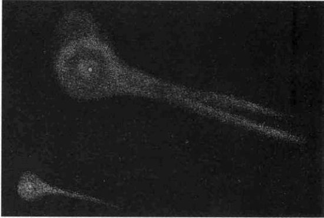
Otra vista telescópica de la partición del cometa Biela. Dibujo de Struve en Los cielos de Amédée Guillemin, París, 1868.
Lexell calculó la órbita y derivó un período de algo más de cinco años. El cometa pasó tan cerca de la Tierra que el tirón gravitatorio pasajero de nuestro planeta causó una disminución de casi tres días en su periodo, aunque el de la Tierra, un cuerpo mucho mayor, no cambió en más de un segundo por año.
Dibujo del cometa de Cheseaux de 1744, con el horizonte indicado por la línea horizontal. De la obra Sobre la naturaleza de los cometas de S. V. Orlov (Academia Soviética de Ciencias, Moscú, 1960).
En 1776 no se observó, pero el hecho se atribuyó a que pasaba a una distancia de la Tierra superior a la de la aparición anterior. «Esperad hasta 1781», dijeron los astrónomos al público. Pero el año 1781 llegó y pasó sin cometa, y no se vio ninguna corriente de meteoros en la órbita del cometa Lexell. ¿Qué había sucedido?
El mismo Lexell y Laplace respondieron a la pregunta. Construyeron una especie de reloj matemático gigante [11] y reprodujeron hacia delante y hacia atrás los movimientos del cometa Lexell (y de los planetas) desde su solitaria aparición en 1770. Los cálculos, especialmente en la era anterior a los ordenadores, no eran sencillos. Los dos astrónomos descubrieron que el cometa no reapareció en 1781 porque en 1779 había pasado muy cerca de Júpiter, posiblemente entre las cuatro grandes lunas del planeta gigante. Halley había observado anteriormente que las propiedades orbitales de su cometa cambiaban un poco al pasar a mucha mayor distancia de Júpiter debido a la atracción de la gravedad de Júpiter. Pero en este caso el cometa Lexell había pasado tan cerca de Júpiter que su órbita debió de cambiar espectacularmente. El cometa se lanzó hacia una trayectoria alternativa que no le llevaría cerca de la Tierra y que podía incluso expulsarlo fuera del sistema solar. El cometa Lexell en sus aproximaciones a la Tierra y a Júpiter hubiese proporcionado un magnífico panorama a un hipotético observador que viajara sobre él. Laplace no pudo dejar de imaginar el posible choque ocasional de un cometa con un planeta, y esto le hizo pensar en las consecuencias que traería consigo la caída de un cometa sobre la Tierra.
Cola del cometa de Cheseaux de 1744 visto sobre el horizonte, mientras la cabeza está bajo el horizonte (véase arriba). De Los cielos de Amédée Guillemin, París, 1868.
En la época de Laplace, a fines del siglo XVIII, se conocían dos categorías de cometas. Los de período corto (como Lexell, Encke y más tarde Biela/Gambart) tenían períodos de unos cuantos años y vivían enteramente dentro del sistema solar interior. Los cometas de período largo (como el gran cometa de 1680), con períodos medidos por décadas o siglos, tenían órbitas que los llevaban más lejos del planeta conocido más remoto. [12] Pero la mayor parte de los cometas eran «nuevos», con períodos orbitales tan largos que no podían determinarse a partir de los datos disponibles. ¿Estaban fabricados estos dos reinos separados de cometas con diferentes materiales constructivos y tenían orígenes distintos? ¿O estaban relacionados, eran miembros de un único reino y una población de cometas procedía de la otra?
Reverso de una medalla alemana de 1744 acuñada probablemente en Breslau, que representa el cometa de Cheseaux con sus seis colas. El cometa aparece representado correctamente más brillante que la estrella más brillante; de hecho, en marzo de 1744 podía verse en pleno día. Cedido por la Sociedad Numismática Americana.
En todo el mundo occidental se mascaba la revolución, y la idea de transformar rápidamente las monarquías absolutas en algo parecido a una democracia real hacía que mucha gente se preguntara qué cambios, hasta entonces impensables, podían darse en otros reinos de la naturaleza.
Reverso de la medalla alemana que conmemoró el cometa de Cheseaux. Las palabras de Romanos 11:34 rezan: «¿Quién conoció el pensamiento del Señor?» Cedido por la Sociedad Numismática Americana.
Es característico del genio de Laplace que pudiera pensar en términos evolutivos mientras la mayoría de sus contemporáneos consideraban los rasgos principales del universo inmutables a lo largo de las eras por ser signos de la misma mano de Dios.
Si sólo podemos seguir un cometa cuando está cerca del Sol, quizá no podamos determinar su órbita. Aquí los círculos concéntricos muestran las órbitas de la Tierra, Marte y Júpiter. En este diagrama esquemático, un cometa en una órbita parabólica o hiperbólica que llega del espacio interestelar (línea amarilla de trazos) no puede distinguirse fácilmente de un cometa en órbita elíptica (curva roja cerrada).
Laplace propuso que la gravedad de Júpiter era una especie de red que capturaba los cometas de largo período que se acercaban al planeta y los transformaba en cometas de período corto y en habitantes del sistema solar interior.

Inclinaciones de las órbitas cometarias. El plano eclíptico o zodiacal, representado en azul oscuro, contiene las órbitas casi circulares de los planetas (aparecen las órbitas de la Tierra y de Júpiter). Las órbitas cometarias de período corto (representadas en rojo) tienden a estar situadas cerca del plano zodiacal. Las órbitas cometarias de largo período (en azul, no circulares) tienden a estar distribuidas aleatoriamente. Algunas órbitas de período corto están inclinadas formando grandes ángulos con el plano eclíptico, y algunas órbitas de largo período quedan situadas casualmente en el plano eclíptico.
La teoría expuesta en términos modernos es más o menos la siguiente: un elevado porcentaje de cometas de período corto tiene sus afelios de sus órbitas periódicas, los puntos más alejados del Sol, cerca de la órbita de Júpiter.
Un porcentaje todavía superior tiene un nodo de su órbita —el punto de intersección de la órbita cometaria con el plano donde se desplazan los planetas alrededor del Sol— cerca de Júpiter. En cambio, las órbitas de los cometas de largo período no presentan relación alguna con Júpiter.
Algunos cometas de período corto, por ejemplo los que están limitados totalmente al reino de los planetas terrestres, tampoco saben nada de Júpiter. Pero hay tantos cometas de período corto con características orbitales relacionadas con Júpiter que se los llama familia de planetas de Júpiter.
Conversión de un cometa de período largo en un cometa de período corto después de pasar cerca del planeta Júpiter. Éste es el punto anaranjado situado en una órbita circular alrededor del Sol. El cometa se acerca al Sol siguiendo la trayectoria de trazos desde la parte superior izquierda. Si no fuera por Júpiter, continuaría así hasta dar la vuelta al Sol y volver a las regiones exteriores del sistema solar siguiendo la órbita que sale por la parte inferior izquierda. Pero la atracción de Júpiter lo perturba y lo sitúa en una órbita elíptica indicada por una línea seguida. La cola del cometa está plenamente desarrollada cuando ha pasado por el perihelio. Diagramas de esta página debidos a Jon Lomberg/BPS.
¿Qué tiene que ver Júpiter con la familia de cometas asociada a él? Algunos astrónomos pensaron al principio que Júpiter era la fuente misma de los cometas, que de algún modo los cometas eran escupidos, vomitados del interior del planeta mayor.
El marqués Pierre Simón de Laplace, el famoso matemático, físico y astrónomo francés que desempeñó un papel importante en el desciframiento de la naturaleza y evolución de las órbitas cometarias. Las contribuciones de Laplace a la ciencia fueron fundamentales y variadas; como descubrimiento secundario demostró en 1780, junto con Lavoisier, que la respiración es una forma de combustión.
Lo más generoso que podemos decir en relación a esta idea es que no ha superado la prueba del tiempo. ¿Qué otras posibilidades quedan?
Un cometa se está precipitando hacia el Sol, se está acercando a la órbita de Júpiter, como quizá hizo una docena de veces más sin que le sucediera nada malo cuando Júpiter estaba al otro lado del Sol. Pero en esta ocasión, por accidente, cruza la órbita de Júpiter cuando el planeta está en sus proximidades. Júpiter es el planeta de mayor masa, y en comparación con él el cometa es un microbio, una bocanada de humo que envuelve una mota de materia. La gravedad de Júpiter atrae al cometa, no lo suficiente para precipitarlo contra su superficie, pues en definitiva el cometa se desplaza a unos veinte kilómetros por segundo, pero sí para desviarlo hacia Júpiter y así cambiar su órbita. El cometa continúa desplazándose en una elipse alrededor del Sol, pero el tirón gravitatorio de Júpiter ha cambiado espectacularmente su órbita.
Cuatro naves espaciales procedentes de la Tierra —los Pioneer 10 y 11 y los Voyager 1 y 2— ejecutaron con éxito precisamente la misma maniobra cuando en la década de los años 1970 fueron enviados a Júpiter en una trayectoria calculada con gran precisión: la aceleración gravitatoria de Júpiter proyectó cada nave como una honda hacia un punto preestablecido del cielo. El Voyager 2, por ejemplo, al pasar al lado de Júpiter, fue impulsado por la gravedad del planeta hacia un nuevo encuentro con Saturno dos años después. (El encuentro con Saturno estaba calculado también para proyectar la nave hacia Urano en 1986, y el encuentro con Urano para proyectarla hacia Neptuno en 1989.) Imaginemos ahora que invertimos el movimiento del Pioneer y del Voyager en sus órbitas. La nave se acerca a Júpiter procedente del sistema solar exterior; gira a gran velocidad alrededor de Júpiter y entra en una nueva órbita que le llevará a la Tierra.

Esta especie de billar gravitatorio explica la existencia de la familia de cometas de Júpiter. El sistema solar interior está sembrado de cometas, y unos cuantos de ellos se acercan accidentalmente a Júpiter. El encuentro proyecta inmediatamente algunos cometas fuera del sistema solar, otros se precipitan contra Júpiter o una de sus lunas, pero muchos cambian de órbita y se convierten en cometas de corto período y baja inclinación, con el afelio y el nodo cerca de la órbita de Júpiter. La mayor parte de los cometas de período corto pueden haber alcanzado sus órbitas después de múltiples encuentros gravitatorios con Júpiter, o incluso después de múltiples encuentros primero con planetas exteriores a Júpiter, y luego con el mismo Júpiter.
Unas cuantas órbitas cometarias conocidas, representadas en relación a la órbita de Júpiter (círculo blanco grande). Entre los cometas dibujados aparecen el de Encke (en rojo) y el de Halley. Obsérvese con qué frecuencia el afelio de la órbita de los cometas de período corto está situado cerca de la órbita de Júpiter, hecho que da la clave sobre el origen de esos cometas. Cedido por la Administración Nacional de Aeronáutica y del Espacio.
Un cometa que llega de las profundidades del espacio en una órbita directa, una órbita que da la vuelta al Sol en la misma dirección que los planetas (en el sentido de las agujas del reloj vista por encima del Polo Norte), es más probable que sufra una gran perturbación por un encuentro con Júpiter. Un cometa que llega en una órbita retrógrada, que gira alrededor del Sol en la dirección contraria, es más probable que experimente una pequeña perturbación. Pero sólo las perturbaciones grandes pueden llevar el cometa al sistema solar interior. Esto explica que el movimiento de los cometas de período corto sea directo. Cuando el cometa procede de las profundidades del espacio, hay igual probabilidad de que sea retrógrado o directo, pero sólo tienden a ser capturados los cometas en órbitas directas. La gravedad de Júpiter impone sus reglas.
Laplace demostró que los cometas nuevos y de período largo podían convertirse en cometas de período corto gracias a un mecanismo gravitatorio que funcionaba ante nuestros mismos ojos. Su obra también demostró al parecer que los cometas interestelares, los visitantes procedentes de más allá del sistema solar, podían convertirse igualmente en cometas de período corto alrededor del Sol.
Se ha observado que unos pocos cometas al pasar por el sistema solar interior tienen trayectorias muy ligeramente hiperbólicas, desligadas del sistema solar, con rumbo a las estrellas. Es natural considerarlos nómadas interestelares, quizá cometas procedentes de algún sistema estelar distinto que han estado mucho tiempo vagando por el espacio interestelar y que por un feliz accidente pasan ante nuestros ojos vigilantes. De hecho, Laplace creía que tanto los cometas de corto período como los de largo período y muchos cometas «nuevos» eran capturas del Sol efectuadas en una población de cometas libres interestelares que rodeaba el Sol. En tal caso, algunos cometas de período corto habrían evolucionado a través de una cascada orbital, una sucesión de trayectorias cambiantes determinadas por sucesivos encuentros planetarios. Esto significa, y Laplace lo entendió perfectamente, que los cometas son en último extremo habitantes del frío y la oscuridad interestelares, un hecho fundamental para la moderna teoría de los cometas.
Sin embargo, estos cometas hiperbólicos, a pesar de sus trayectorias sin restricciones, no proceden del espacio interestelar, por lo menos no procede de él ninguno de los observados. Podemos seguir en el pasado las órbitas de los cometas aparentemente hiperbólicos utilizando el mismo tipo de reloj matemático que introdujo Laplace. Es curioso que todos esos cometas hiperbólicos sólo sean ligeramente hiperbólicos; bastaría que se movieran con algo más de lentitud para que estuvieran ligados gravitatoriamente al Sol. Cuando seguimos las órbitas de estos cometas hiperbólicos descubrimos que en su pasado reciente se acercaron lo bastante a uno de los planetas mayores para que sus órbitas cometarias se perturbaran. Al parecer todos esos cometas recorrían órbitas elípticas alargadas alrededor del Sol, hasta que fueron proyectados fuera del sistema solar por un encuentro gravitatorio con Júpiter o con otro planeta. Nosotros los vemos en sus trayectorias de salida. No se ha observado nunca un cometa interestelar.
A mediados del siglo XIX, el estudio de los cometas era ya una parte respetable de la astronomía profesional. Sus movimientos fundamentales se comprendían bien. Algunos cometas nuevos y de tergo período podían convertirse eventualmente en cometas de período corto y, en el tumulto de los encuentros gravitatorios, los cometas podían chocar con los planetas o con el Sol o salir proyectados fuera del sistema solar. Había algo caótico, ligeramente inquietante en estos movimientos cometarios. Algunos cometas se fragmentaban inesperadamente, y por lo menos uno de ellos ejecutó pequeñas fintas y bandazos no newtonianos, interrumpiendo su majestuosa procesión circunsolar. Pero en general se consideraba que los cometas eran astros bien comprendidos. Podían ilustrarse ya las conferencias públicas con fotografías de cometas y algunas de ellas llegaron a emocionar a las multitudes. Un ejemplo de lo que podía decir al público general un astrónomo profesional, especializado en cometas y capaz de expresarse con lucidez, lo proporciona el siguiente resumen de la conferencia que dio William Huggins en 1882 dentro de la serie Discursos del Viernes por la Tarde, que entonces, igual que ahora, se ofrecían al público en la sala de la Royal Institution, Londres:
En la cabeza de la mayor parte de los cometas puede descubrirse, con ayuda de un telescopio, un diminuto y brillante punto de luz. Esta mancha aparentemente insignificante es el corazón y el núcleo real de todo el astro: es en potencia el cometa. Sólo esta parte obedece rigurosamente las leyes de la gravitación... Si pudiéramos observar un gran cometa durante sus lejanas excursiones, cuando ha renunciado a los brillantes atavíos del perihelio, veríamos un objeto muy poco espectacular formado por poco más de un núcleo... Bajo la influencia del Sol salen de la materia del núcleo en el lado expuesto al calor solar chorros luminosos. Estos chorros se detienen casi inmediatamente en su movimiento hacia el Sol, y forman un casquete luminoso; luego, la materia de este casquete fluye hacia la cola, como si la impulsara un viento violento. Según una hipótesis, este fenómeno muestra lo que sucede realmente en el cometa: una fuerza repulsiva de algún tipo, procedente del Sol, actúa sobre la materia gaseosa después de su emisión por el núcleo... La acción del Sol provoca grandes perturbaciones eléctricas relacionadas con la vaporización de parte de la materia del núcleo, y... la cola está formada por materia arrastrada hacia fuera, posiblemente por la acción de descargas eléctricas y la influencia repulsiva del Sol... Como es lógico, el cometa ha de perder una gran cantidad de materia cada vez que vuelve a su perihelio, porque el núcleo no puede recuperar la materia que se ha dispersado en la cola; y esta opinión concuerda con el hecho de que ningún cometa de período corto tiene una cola de magnitud considerable.
Casi todas las observaciones de Huggins en este texto concuerdan razonablemente con la moderna teoría de los cometas. Algunas se avanzan mucho a los conocimientos de su época. El tema se consideraba ya respetable y maduro. Sin embargo, lo más importante en relación a los cometas —su composición y la naturaleza de las variaciones espectaculares de su aspecto— apenas se vislumbra vagamente. Al repasar la literatura de la época sorprende lo raro que era reconocer estos temas como problemas importantes que el futuro explicaría.
El cometa Halley, como un conductor temerario, pasando a gran velocidad entre los planetas. Caricatura de Hermann Vogel en Fliegende Blátter, mayo de 1910.
El gran cometa de 1882, quizá la fotografía más antigua tomada con éxito de un cometa. Fotografía de David Gilí en Sudáfrica.
Dos manifestaciones de la arquitectura del hielo: un cometa sobre la Antártida. Pintura de Kim Poor.
El terrible hielo que cubre toda la superficie del país.
Hans Eggede, Descripción de Groenlandia, 1745
Uno de los problemas centrales de los cometas, y sin duda la clave de muchos misterios, es su composición. ¿De qué está hecho un cometa? ¿Están compuestos todos ellos de la misma materia? En los siglos XVI y XVII todavía se imaginaba que los cometas estaban formados, como creía Aristóteles, por gases, vapores y «exhalaciones» de la Tierra, o quizá también del Sol y de los planetas. Newton, lúcido como siempre, opinó de otro modo. Observó que el cometa de 1680 se acercó mucho al Sol; su perihelio estaba situado a 0,006 unidades astronómicas, es decir a algo menos de un millón de kilómetros. Newton calculó que el cometa debió de calentarse a la temperatura del hierro al rojo vivo, y dedujo que el astro no podía estar compuesto únicamente de vapores y exhalaciones, porque en tal caso su sustancia se habría disipado rápidamente al pasar por el perihelio. Newton llegó a la conclusión de que «los cuerpos de los cometas son sólidos, compactos, fijos y duraderos, como los de los planetas». Inmediatamente después del perihelio la cola de este cometa apareció con «mucho mayor esplendor» que antes. Y Newton dedujo de ello que la cola es un producto del calor solar: «La cola no es más que un vapor muy fino, que emite la cabeza o núcleo del cometa al calentarse.»
Muy bien. Pero ¿de qué está compuesto el núcleo? ¿Qué es exactamente este «vapor muy fino» que constituye la cola? Éste es el problema que quisieron resolver provisionalmente Kant y muchos otros. Cuando un cometa se acerca tanto al Sol como el gran cometa de 1680, casi cualquier material corriente empezará a vaporizarse. Pero muchos cometas empiezan a desarrollar comas y colas cuando están entre las órbitas de Marte y de Júpiter. Estos cometas, cuando empiezan a emitir vapor al espacio, calentados únicamente por la luz del Sol, alcanzan temperaturas de un centenar de grados bajo cero en la escala centígrada (-100 ºC). Los materiales como el hierro, que sólo se vaporizan a altas temperaturas, se denominan involátiles o refractarios. Los materiales como el hielo, que un calentamiento relativamente modesto vuelve gaseosos, se llaman volátiles. Los cometas han de estar compuestos de una materia muy volátil. Pero ¿cuál?
La propensión a fragmentarse de algunos cometas sugiere un núcleo no muy compacto. Las fuerzas que lo mantienen unido han de ser bastante débiles. Como ya hemos visto, de vez en cuando los cometas se desvían de sus tiempos de llegada previstos al sistema solar interior o incluso presentan un movimiento rápido muy pequeño, que desentona totalmente del lánguido y majestuoso desplazamiento newtoniano que los cometas suelen exhibir ante sus espectadores mientras caen hacia el Sol. Estos movimientos erráticos e impredecibles de los cometas, movimientos no gravitatorios, recuerdan la imagen de Kepler, que comparaba los cometas a peces moviéndose rápidamente por el océano cósmico. Encke dijo que su cometa se desviaba «furiosamente» [13] del movimiento predicho por la gravitación newtoniana, y atribuía estos movimientos anómalos e impredecibles a la resistencia de algún gas del espacio interplanetario que retrasaba su avance. Pero las aceleraciones son demasiado repentinas, y sabemos que entre los planetas no hay material suficiente para ejercer una influencia detectable sobre el movimiento de los cometas. La explicación ha de ser muy diferente.
Hasta hace muy poco, las modas cometarias dominantes estaban centradas en la relación conocida existente entre los cometas y las lluvias de meteoros como la desaparición del cometa Biela/Gambart, que dejó tras de sí en forma de estela la lluvia de meteoros andromédida. Incluso en 1945 el principal manual de astronomía de las universidades norteamericanas aceptaba sin discusión la idea de que los cometas son «enjambres sueltos de partículas separadas que se desplazan en órbitas paralelas a través del espacio interplanetario». Algunos científicos creían que este supuesto enjambre de pequeños meteoros que formaba el núcleo del cometa estaba unido gravitatoriamente; otros pensaban que el núcleo no tenía masa suficiente para mantenerse unido y que los cometas no eran más que un número enorme de pequeñas partículas que se desplazaban a través del espacio en una órbita muy apretada. Quienes defendían este modelo de un banco de grava volando por el espacio tendían a ofrecer representaciones puntillistas de la cabeza cometaria (los dibujos de esta página ofrecen algunos ejemplos representativos).
El cometa Pons-Winnecke, dibujado por Baldet. Cedido por R. A. Lyttleton de su libro The Coméis and Their Origin, Cambridge University Press, 1953.
Representación puntillista del aspecto del cometa Halley en 1835. Cedido por R. A. Lyttleton de su libro The Coméis and Their Origin, Cambridge University Press, 1953.
La hipótesis del banco de grava o de arena explicaba sin dificultad el hecho de que un cometa viejo pudiera desaparecer de repente dejando tras de sí una nube de partículas finas. El espectro de meteoros que se queman en la atmósfera terrestre demuestra la presencia de materiales como hierro, magnesio, aluminio y silicio, constituyentes típicos de las rocas terrestres. Si los meteoros estaban formados por material de roca y si los cometas a su vez estaban compuestos principalmente de meteoros, los cometas tenían que ser necesariamente un conjunto de rocas y piedras. En tal caso, ¿qué eran la coma y la cola? Para explicarlas se postulaba que las partículas de arena estaban recubiertas por un sólido más volátil que se evaporaba al acercarse el enjambre al Sol. O quizá el calor extraía gases del interior de las piedras. Pero no se entendía muy bien que después de un solo paso alrededor del Sol pudieran quedar restos suficientes de este material, de la composición que fuera, si sólo formaba un delgado recubrimiento sobre un grano de arena, o si era un gas absorbido en la roca.
Fred L. Whipple, principal proponente del modelo de hielo sucio para el núcleo cometario. Foto cedida por Fred L. Whipple.
Había también otras dificultades; por ejemplo, los chorros de gas, que no podían explicarse fácilmente con un enjambre de grava poco compacto.
* * * *
Un resumen describe brevemente el éxito observacional del modelo cometario [basado en un conglomerado helado] tanto cuantitativa como cualitativamente. Lo sorprendente del modelo es su utilidad en contraste con su vaguedad...
Fred L. Whipple,
«Situación actual del modelo de conglomerado helado», Harvard/Smithsonian Center for Astrophysics, preimpresión, 1966 (1984)
* * * *
El problema ha quedado definitivamente resuelto, por lo menos en el caso del cometa Encke: el cometa, estudiado con radar por un gran radiotelescopio desde la superficie de la Tierra, muestra un núcleo sólido y único, no un enjambre de partículas. La dimensión del núcleo detectado con radar, de un kilómetro o dos de radio, concuerda con otras estimaciones. También se han estudiado con el radar los núcleos de unos cuantos cometas más y el resultado parece dar la puntilla a la hipótesis del banco orbitante de grava como explicación del núcleo cometario [14]. Pero antes de 1950 la idea de un núcleo cometario compacto era escandalosa, y la naturaleza de los elementos volátiles del cometa sólo podía vislumbrarse vagamente.
Fred Whipple dice de sí mismo que es un pequeño agricultor de Iowa convertido en astrónomo. Fue presidente del Departamento de Astronomía de la Universidad de Harvard, y durante muchos años director del Observatorio Astrofísico de la Smithsonian Institution en Cambridge, Massachusetts. Durante años se ocupó de teorizar sobre objetos pequeños del sistema solar, incluyendo la física de los meteoros que entran en la atmósfera terrestre y la naturaleza de los cometas (de los cuales descubrió media docena). Whipple, a fines de la década de 1940, estaba convencido de que los cometas emiten cerca del perihelio grandes cantidades de materia, una cantidad superior a la que puede explicarse imaginando recubrimientos de hielo sobre granos de arena o la expulsión de pequeñas porciones de vapor atrapado dentro de la arena. Era evidente además que el espacio interplanetario es un vacío muy bueno y que los cometas no pueden reaprovisionarse en él de materias volátiles cuando sus órbitas los alejan del Sol (como habían señalado Huggins y muchos otros). El problema es especialmente difícil con cometas como Encke, que se calientan mucho cuando pasan cerca del Sol y que, al parecer, han pasado muchas veces por el perihelio.
Newton había dado a entender indirectamente que los cometas estaban formados en su mayor parte por agua (véase capítulo XVII) y Laplace dijo sin profundizar que los cometas podrían estar compuestos de hielo. Ninguno de los dos formuló detalladamente sus argumentos, y las hipótesis quedaron relegadas al olvido. Pero a mediados del siglo XX las ideas estaban de nuevo en el aire. Por ejemplo, en los Anuales d'Astrophysique, de 1948, se incluye un artículo del astrónomo belga Pol Swings que dice (traducción aproximada): «A grandes distancias del Sol, todos los sólidos de un cometa están a temperaturas muy bajas, y todo el “gas” que contienen, excepto el hidrógeno y el helio, ha de encontrarse en estado sólido.» Sin embargo, una nota a pie de página indica que esta idea apareció anteriormente en un artículo del astrónomo alemán K. Würm, publicado en Mitteilungen der Hamburger Sternwarte Bergedoif, en 1943. Pero el artículo de Würm atribuye el comentario a una observación informal hecha a Würm por Harteck, un Químico checo-alemán. En los años 1942 y 1943, Harteck estaba ocupado intentando fabricar una bomba atómica para los nazis. Sus comentarios sobre los hielos cometarios fueron una distracción de otros deberes más urgentes.
Whipple utilizó como cómodas abreviaturas las palabras «polvo» para los materiales refractarios y «hielo» para los materiales volátiles, y decidió que el problema se resolvía suponiendo que hay mucho más hielo de lo que permite el modelo del núcleo cometario como banco de arena. Whipple califica de «obvia» esta idea, aunque hay que decir que nadie la había expresado anteriormente con tanta claridad.
Tres moléculas de vapor de agua, cada una conteniendo un átomo de oxígeno y dos átomos más pequeños de hidrógeno. Las moléculas no están enlazadas con sus compañeras y se mueven en forma de gas. Podrían ser moléculas que se han soltado de una tetera o que se han vaporizado y escapado de un campo nevado en un día cálido de invierno. Pintura de Jon Lomberg.
Lumbreras como Newton, Kant y Laplace habían jugado con ideas similares, pero fue Whipple quien formuló por primera vez la idea de modo lúcido y coherente.
Estructura molecular del hielo ordinario. Los círculos representan las nubes electrónicas de los átomos individuales, con el diminuto núcleo atómico en su interior. Los círculos grandes anaranjados representan átomos de oxígeno, los círculos más pequeños amarillos representan átomos de hidrógeno. Las fuerzas moleculares entre estos átomos los reúnen formando una red cristalina hexagonal. Vemos dos de los múltiples planos sucesivos paralelos de moléculas de agua enlazadas que forman un fragmento microscópico de hielo. Pintura de Jon Lomberg.
Whipple demostró luego que unos cuantos misterios más, como la división de los cometas, su disipación formando lluvias de meteoros, y las molestas fuerzas no gravitatorias que actúan sobre el movimiento cometario, pueden explicarse revisando nuestros conceptos e imaginando el núcleo cometario como una esfera de hielo sucio, con granos minerales y quizá otros materiales dispersos por su interior.

Vista lateral de los átomos de una red cristalina de hielo. Si viéramos la red de lado, se repetiría la estructura hexagonal de la página anterior. Pintura de Jon Lomberg.
Hielo en evaporación. Debajo tenemos una porción de la estructura cristalina del hielo, pero en la superficie superior que se está calentando (centro del diagrama) los fragmentos más pequeños de hielo —simples moléculas de agua— están escapando al espacio adyacente. El proceso se llama evaporación o sublimación. Pintura de Jon Lomberg.
Si los cometas están formados realmente de hielo sucio, para comprender los cometas debemos comprender primero su hielo. Supongamos para empezar que un cometa está formado por hielo ordinario de agua. En la naturaleza existen de modo natural 92 tipos de átomos, y los más abundantes son el hidrógeno, el helio, el oxígeno, el carbono y el nitrógeno. Estos átomos se combinan entre sí de acuerdo con leyes específicas que reciben el nombre colectivo de química. Lo que más abunda en el universo es el hidrógeno, y cualquier fragmento típico de materia cósmica fría tiende a ser rico en hidrógeno. Los átomos restantes, como el oxígeno, el carbono y el nitrógeno, están a menudo enlazados con todos los átomos de hidrógeno que pueden aceptar. El oxígeno, por ejemplo, tiende a combinarse con dos átomos de hidrógeno y a formar una molécula simbolizada por la fórmula H2O. Como es lógico, la H representa el hidrógeno, y la O el oxígeno, y la molécula de marras, merecidamente famosa, se llama agua. Un átomo de nitrógeno suele combinarse con tres átomos de hidrógeno y forma NH3, llamado amoníaco; y el carbón prefiere combinarse con cuatro átomos de hidrógeno y formar CH4, molécula llamada también metano. Estas abreviaturas son una especie de dibujo esquemático de las combinaciones adoptadas por los átomos para formar una molécula. Hay muchas más combinaciones sencillas: CO, monóxido de carbono; CO2, dióxido de carbono; HCN, cianuro de hidrógeno... y una variedad enorme de moléculas más complicadas, [15] como HCOOCH3, CH3CCCN y HC10CH.
Los átomos cuya presencia en el universo es algo más rara también forman combinaciones químicas. Si simbolizamos el átomo de silicio por Si, la arena ordinaria de cuarzo está constituida por SiO2, dióxido de silicio. El oxígeno molecular del aire es O2 (distinto, pues, del átomo sólo de oxígeno, O). Los componentes del mundo natural pueden explicarse, por tanto, en función de sus átomos constituyentes. Nosotros los humanos somos también un conjunto de átomos, montados de modo intrincado y maravilloso.
Ahora bien, en una molécula como el agua, los átomos no se pegan unos con otros en posiciones o ángulos cualesquiera. Una molécula aislada de agua tiene siempre los dos pequeños átomos de hidrógeno pegados al átomo mayor de oxígeno según un ángulo preciso, y la molécula se parece un poco a una cara con grandes orejas, una especie de Mickey Mouse. Los enlaces químicos que unen a los átomos entre sí siguen reglas precisas e invariables que forman la base de la belleza y el orden de la naturaleza. Estas reglas están determinadas por la nube de electrones que rodea todo átomo, pero de momento trataremos los átomos como pequeñas esferas impenetrables. Si acercamos dos átomos, tenderán a combinarse según unas reglas definidas, pero, si los acercamos demasiado, se repelerán mutuamente. Una molécula aislada de agua, por ejemplo, exhalada de nuestra boca en un día de invierno, se desplaza por el aire dando tumbos y sacudidas, chocando y rebotando sin esfuerzo con las demás moléculas que encuentra en su camino, pero sin combinarse fácilmente con ellas, porque sus átomos constituyentes están ya ensimismados en sus apasionados abrazos químicos.
La temperatura no es más que una medida del movimiento de las moléculas. Cuando la temperatura es alta, las moléculas se desbocan, corren por todas partes, dan tumbos, chocan, rebotan con una actividad frenética. Cuando la temperatura baja, las moléculas se reprimen más, casi se calman. A una temperatura suficientemente baja, las moléculas de agua se enlazan unas con otras, pues su movimiento relativo es tan lento que empiezan a actuar las fuerzas moleculares de corto alcance, y las moléculas de agua adyacentes se unen débilmente entre sí. Cuando esto sucede, por ejemplo en un día lluvioso, decimos que el gas se ha condensado formando agua líquida. Si las temperaturas bajan todavía más (por debajo del punto de congelación), las moléculas no se condensan siguiendo un orden anárquico, sino formando una estructura elegante y repetida llamada red cristalina. Esta es la estructura oculta del hielo (véanse páginas 118-119). En esta red cada molécula de agua ocupa un lugar concreto y está unida a sus vecinas.
Esta estructura en dos dimensiones es hexagonal, como las baldosas de algunos cuartos de baño. Cada hexágono está formado por seis átomos de oxígeno con sus pequeños átomos acompañantes de hidrógeno. Si dispusiéramos de un microscopio extraordinario, podríamos observar esta estructura a lo largo de la superficie del hielo y especialmente dentro de ella. Podríamos desplazarnos un millón de átomos de oxígeno a derecha o a izquierda y encontrar exactamente la misma estructura. La red cristalina en tres dimensiones es una especie de jaula hexagonal. Detrás del hexágono de oxígenos que tenemos delante hay otro hexágono de oxígenos enlazado con el primero por pequeños átomos de hidrógeno. Detrás de aquél hay otro, y así sucesivamente. Podríamos girar la cabeza casi 120 grados y no observar ninguna diferencia en la estructura. Esta simetría hexagonal a nivel molecular se extiende hasta el mismo nivel microscópico y explica la exquisita simetría, con seis lados, de los copos de nieve, hecho que, extrañamente, vislumbró por primera vez el astrónomo Johannes Kepler.
Si estudiáramos de cerca una de estas redes, observaríamos que sus átomos constituyentes no están inmóviles, sino que vibran y palpitan en sus posiciones. Al disminuir la temperatura, estas palpitaciones se van calmando; al aumentar la temperatura las palpitaciones se hacen más violentas. Los enlaces químicos que mantienen unida la red cristalina tienen una fuerza característica. A una temperatura determinada los átomos constituyentes palpitan con tanta violencia que algunos de los enlaces se rompen y un pequeño fragmento de red cristalina, una molécula aislada de agua, se separa de sus compañeras y sale dando tumbos. Esto ocurre estadísticamente incluso a bajas temperaturas, pero a medida que la temperatura aumenta sucede con mayor frecuencia. A temperaturas suficientemente altas el movimiento de palpitación es tan violento que las capas superiores del hielo se desprenden y brotan del cristal de hielo grandes cantidades de moléculas sueltas. Si este proceso tiene lugar sobre un núcleo cometario, las moléculas de agua se encuentran sin más en el cercano espacio interplanetario. El proceso recibe distintos nombres: evaporación, vaporización, volatilización o sublimación. Consiste fundamentalmente en que el agua pasa en directo del estado sólido, llamado hielo, al estado gaseoso, llamado vapor, sin experimentar el estado líquido intermedio.
Si ponemos un trozo de hielo en un recipiente cerrado y lo calentamos, las moléculas de agua a la temperatura característica empezarán a salir disparadas hacia fuera. Pero no podrán escapar al espacio: rebotarán en las paredes del recipiente y algunas caerán de nuevo sobre la superficie del hielo y tenderán a pegarse a ella. Se establecerá así un equilibrio entre las moléculas de agua que salen del hielo y las que vuelven a él. En estas circunstancias, la velocidad de transformación del hielo en vapor de agua será baja, y éstas son precisamente las condiciones que conocemos en la Tierra. Un cubito de hielo en una jarra tapada desaparece más lentamente que al aire libre.
Pero en un cometa el hielo no está rodeado de aire, sino de un vacío casi perfecto. Cuando el hielo del cometa se ha calentado lo bastante, empieza a perder moléculas de agua al espacio, rápidamente y para siempre.
Una molécula de metano está atrapada en una de las jaulas hexagonales de una red cristalina de hielo. El átomo de carbono aparece con perfiles blancos, unido a cuatro átomos más pequeños de hidrógeno, y dando una molécula de metano, CH4. Los hielos que contienen estas moléculas atrapadas en su interior se llaman clatratos. Pintura de Jon Lomberg.
El hielo de agua no es el único hielo existente. Si cogemos gas amoníaco o gas metano y los enfriamos a temperatura suficientemente baja, también formarán un sólido frío, blanco y cristalino. Las temperaturas a las cuales estos gases forman hielos se llaman puntos de congelación, y varían con cada material. [16]
La tabla adyacente da los puntos de congelación de algunos gases corrientes. Las moléculas de agua cristalizan a una temperatura relativamente elevada gracias a la fuerza de sus enlaces químicos; el hielo de metano y el hielo de amoníaco se desintegran a temperaturas a las que el hielo de agua se mantiene estable, contento y feliz.
Imaginemos ahora una mezcla de metano, amoníaco, agua y otras moléculas gaseosas, pero con un exceso de agua, de acuerdo con lo que sugieren las abundancias cósmicas de los elementos. Hay que estar tan cerca de una estrella como lo está la Tierra del Sol para que el agua esté en estado líquido. La mayor parte del universo está alejado de las estrellas, y por tanto, su temperatura está muy por debajo del punto de congelación del agua. Las temperaturas de algunos diminutos granos de polvo situados más allá de Saturno o entre las estrellas son muy bajas; por consiguiente, si una molécula de agua choca con el grano se quedará pegada a él. A lo largo de millones de años el grano se moverá a través de un gas enrarecido, irá creciendo y la red cristalina hexagonal se irá ampliando poco a poco en todas direcciones. Durante este proceso, otros tipos de moléculas pueden quedar atrapados en la jaula hexagonal: una molécula de metano, quizá, o una de amoníaco, o de otro tipo (véase página anterior). Esta estructura de hielo de agua con moléculas forasteras atrapadas en el interior de su jaula se llama clatrato. [17] La molécula atrapada no está combinada químicamente con el hielo, sino sólo aprisionada físicamente. Vemos que sólo hay espacio para un átomo grande en la jaula; por tanto, los clatratos de metano tienden a tener a su alrededor seis moléculas de agua por cada molécula de metano. Cuando un clatrato de agua se vaporiza, las moléculas aprisionadas en su interior se liberan al espacio al mismo tiempo que se desgaja la red cristalina.
Si este grano ha ido creciendo durante millones de años, puede estar compuesto principalmente de hielo de agua, porque el agua es la molécula con mucho más capacidad de condensar sobre el grano. Pero ha de haber igualmente otros materiales atrapados en forma de clatratos, y deberían formarse otros hielos sobre su superficie: pequeñas extensiones de hielo de CH4 o de hielo de NH3 o de hielo de CO2, además de moléculas mucho más complejas. Si los granos continúan creciendo y chocando entre sí para formar estructuras de tamaño creciente, al final puede desarrollarse una especie de pequeño núcleo cometario. No será un núcleo puramente de hielo; hay disponibles en el espacio muchos materiales más, algunos de los cuales citaremos después. Pero imaginemos de momento que el núcleo cometario está compuesto únicamente de hielos y supongamos que cae a gran velocidad hacia el sistema solar interior. La temperatura de su superficie aumenta lentamente. El hielo no es buen conductor del calor y, en consecuencia, el interior del núcleo cometario conserva durante mucho tiempo la temperatura del frío interestelar. Pero el exterior se va calentando cada vez más. Al final la temperatura es tan alta que los enlaces químicos que mantienen entero el hielo empiezan a quebrarse, y las capas exteriores de hielo saltan del cometa al espacio.
Tipos diferentes de hielo experimentan esta vaporización violenta a temperaturas distintas, y, por tanto, a distancias distintas del Sol. Cuando el cometa cruza la órbita de Neptuno, el Sol, cada vez más próximo, calienta débilmente una mancha de metano puro; los enlaces químicos se rompen y se pierde en el espacio una bocanada de metano. Una mancha de hielo de amoníaco se perderá cuando el cometa cruce la órbita de Saturno. El hielo de dióxido de carbono empezará a vaporizarse seriamente en algún lugar entre las órbitas de Saturno y de Júpiter. El hielo corriente de agua sólo empezará a vaporizarse en cantidades significativas cuando el cometa se aproxime al cinturón de asteroides, entre las órbitas de Júpiter y de Marte.
Estados de la materia en el actual sistema solar a varias distancias del Sol. Aparecen las órbitas concéntricas, contando a partir del Sol, de los planetas Mercurio, Venus, la Tierra, Marte, Júpiter y Saturno. Se muestran las regiones del sistema solar en las que tres tipos de material —silicatos, agua y metano— son gaseosos (nube), líquidos (gotitas) y sólidos (cubo). Los silicatos se vaporizan en el interior de la órbita de Mercurio. El agua es líquida en las proximidades de la Tierra y helada a distancias del Sol mayores que Marte. El metano puede ser líquido incluso hasta la órbita de Saturno, pero es sólido a distancias del Sol superiores. Por tanto, una mezcla de metano, agua y silicatos en forma de cometa que entre en el sistema solar desde lejos ve que su metano se evapora primero en la órbita de Saturno, que el agua empieza a evaporarse en serio cerca de la órbita de Marte y los silicatos dentro de la órbita de Mercurio. Diagrama de Jon Lomberg/BPS.
Es precisamente en las proximidades del cinturón de asteroides donde se observa que empiezan a formarse la mayor parte de las colas de cometas. Esto es por sí solo un dato convincente en favor de la idea de que el hielo de agua es el principal constituyente volátil de los cometas, y de que el vapor de agua y sus productos de degradación son los componentes principales de las comas cometarias. Hay, como veremos, pruebas más directas de la existencia de agua cometaria.
En ocasiones observamos que los cometas emiten gas, antes de llegar al cinturón de asteroides, y forman por lo menos comas temporales pasajeras e incluso colas. Es tentador atribuir esta actividad a la vaporización de otros tipos de hielo, los llamados hielos exóticos como CH4 y CO 2. Pero cuanto más lejos del Sol ocurren esas explosiones, menos probable es que las observen el puñado de astrónomos de la Tierra. Imaginemos un cometa con una superficie compuesta por manchas de distintos tipos de hielo —hielo de agua, hielo de metano, hielo de amoníaco, hielo de dióxido de carbono— y recorriendo una órbita que al principio le lleva únicamente hasta las proximidades, por ejemplo, de Urano o de Neptuno. En cada paso por el perihelio emitirá hielo de metano en forma gaseosa (y también si los tiene, hielo de nitrógeno y hielo de monóxido de carbono). Pero estas bocanadas de gas, aunque sean de considerable magnitud, no se observarán ni se registrarán en la Tierra. Después de muchos pasos por el perihelio el metano habrá escapado totalmente al espacio, por lo menos el de las capas exteriores del núcleo cometario: el cometa se habrá desvolatilizado en metano. Cada vez que el cometa pierde metano se enriquece en agua, relativamente hablando. Si luego este cometa sufre una perturbación, por ejemplo al acercarse mucho al planeta Neptuno, y se dirige al sistema solar interior, perderá amoníaco, si lo tenía, al pasar cerca de Saturno. Pero el momento mejor para descubrirlo será cuando llegue al interior de la órbita de Marte y se caliente lo suficiente para que se desmorone la fuerte estructura reticular del hielo y el núcleo emita al espacio una enorme nube de abundante agua volátil. Por tanto, la prominencia del hielo acuoso en los cometas se debe a tres factores: 1, la elevada abundancia cósmica del agua; 2, la posibilidad de haber perdido otros materiales volátiles en anteriores encarnaciones de la órbita del cometa, y 3, el hecho de que el cometa sólo emite agua cuando está en el sistema solar interior, cerca de los observadores terrestres y al alcance de su vista.
Whipple y otros demostraron que si un cometa está compuesto de hielos dispondrá de grandes cantidades de moléculas y de pequeñas partículas para formar la coma y la cola. Un núcleo cometario puede perder un metro o más de material en cada paso por el perihelio. Si su radio inicial era de un kilómetro, después de mil pasos por el perihelio, habrá gastado toda su sustancia. Sólo le quedarán granos minerales no volátiles, algunos de los cuales puede recoger la Tierra más tarde o más temprano produciendo una lluvia de meteoros. Imaginemos dos cometas, ambos con perihelios cercanos a la órbita de la Tierra, pero con diferentes afelios y diferentes períodos de revolución alrededor del Sol. Supongamos que uno de ellos es un cometa de período corto y que necesita cinco años para recorrer su órbita. En tal caso, pasarán cinco mil años desde su llegada al sistema solar interior hasta el momento en que quede enteramente vaporizado y convertido en meteoros. En cambio, un cometa de período largo, por ejemplo de cien años, tarda cien mil años en perder sus componentes volátiles. Éstas son las duraciones típicas esperadas de la vida de los cometas, suponiendo que en cada paso por el perihelio quede expuesta directamente a la luz solar una superficie de hielo fresco. Las capas de la cebolla planetaria se van pelando en cada perihelio hasta que al final no queda nada. Por tanto, un almacén más distante de cometas ha de ir reaprovisionando la población de cometas de período corto, como ya habían calculado Laplace y otros (véase capítulo V).
Whipple comprendió también que su modelo de hielo sucio podía explicar del modo más natural el extraño movimiento no gravitatorio de algunos cometas. Cojamos un globo normal de juguete lleno de aire, atemos bien la boquilla y dejémoslo caer. Su trayectoria descendente es lenta y continua. Pero cojamos el mismo globo y aguantémoslo cerrado sobre la cabeza apretando la boquilla entre el índice y el pulgar; cuando lo soltemos, volará brevemente por la habitación dando vueltas y acelerones repentinos y emitiendo a veces ruidos inconvenientes. Éste es el efecto cohete. Cuando el aire sale proyectado por la boquilla, el globo se dispara en dirección opuesta. El motivo del fenómeno se llama tercera ley del movimiento de Newton: para cada acción hay una reacción igual y opuesta. Un cohete funciona siguiendo exactamente el mismo principio. Los gases de escape chocan contra la plataforma de lanzamiento y el cohete se eleva hacia el cielo. No es preciso que los gases de escape hagan presión sobre el suelo; los cohetes funcionan igualmente bien, incluso mejor, en el vacío del espacio. Otro ejemplo familiar es el retroceso de una escopeta: la bala sale hacia delante y la culata se nos clava en el hombro.
Estructura molecular del agua líquida. Las moléculas de agua no están dispuestas formando una red cristalina rígida, sino que están orientadas al azar y pueden moverse libremente. Pintura de Jon Lomberg.
El hielo del cometa actúa como el aire del globo, el combustible del cohete o la bala de la escopeta. Imaginemos un iceberg dando tumbos hacia el Sol, con su superficie cubierta de manchas de material rocoso u orgánico y entreverado de hielos más volátiles. La superficie del cometa se calienta cuando se acerca al Sol. Parte del hielo se calienta y se vaporiza.
Podemos imaginar un pequeño chorro de gas metano o amoníaco escapando al espacio y dejando quizá al descubierto una vena más profunda del material o algún material de la matriz rocosa.
Un surtidor de materia cometaria brotando del núcleo del cometa Halley en 1910. Dibujo realizado con el telescopio del Observatorio de Helwan, Egipto, el 25 de mayo de 1910. Cedido por la Administración Nacional de Aeronáutica y del Espacio.
Pero estos chorros de gas no escapan uniformemente y a la vez de toda la superficie del núcleo cometario. Cuando una mancha de hielo de metano se vaporiza (acción) a la distancia orbital de Neptuno, la órbita del cometa se estremece ligeramente (reacción). Cuando el cometa está más cerca del Sol, manchas de amoníaco o de dióxido de carbono pueden producir efectos de reacción parecidos. Estudios detallados demuestran que los diminutos movimientos no gravitatorios de los cometas de período corto pueden explicarse fácilmente por el efecto cohete gracias a la sublimación de vetas de hielo de agua en la superficie del cometa.
El agua líquida
El tipo de hielo de agua que hemos descrito es el más corriente: estas redes cristalinas hexagonales caracterizan los copos de nieve y los icebergs, los glaciares y la nieve fangosa de las calles de la Tierra. Su estructura es realmente muy notable. El hielo tiene una densidad inferior al agua líquida a causa de los grandes volúmenes vacíos o agujeros presentes en su estructura. Por ese motivo, el hielo flota sobre el agua líquida, y también por ese motivo el hielo se expande al fundirse. Las moléculas de agua en estado líquido (véase página anterior) se mueven con tanta energía que no pueden asentarse y formar la estructura regular del hielo. En vez de esto se dedican a dar tumbos y a chocar unas con otras sin dejar apenas vacíos interiores. Pero cuando la temperatura baja mucho, los movimientos son menos enérgicos y empiezan a imponerse los enlaces Químicos entre las moléculas adyacentes de agua. Se forma una red hexagonal y con ella un material bastante menos denso. La densidad del agua líquida es de 1,0 g/cm3, pero la densidad del hielo ordinario es de 0,92 g/cm 3, fenómeno que apenas tiene par en la naturaleza. En las demás sustancias casi siempre el sólido es más denso que el líquido y se hunde rápidamente. Es imposible imaginar icebergs flotando o ríos cubiertos de hielo en planetas donde los líquidos dominantes son, por ejemplo, el amoníaco o hidrocarburos como el metano.
Se necesita una atmósfera para detener el hielo en una fase líquida intermedia e impedir que se evapore directamente y pase a vapor. Las colisiones con las moléculas gaseosas situadas encima del líquido inhiben la evaporación. Cuando no hay atmósferas, no se producen colisiones, desaparece esa inhibición y, por tanto, no existen líquidos. Ni Marte, cuya presión atmosférica es miles de veces superior a la de la superficie de un cometa, puede mantener cuerpos expuestos de agua líquida. No puede haber agua líquida sobre un núcleo cometario, porque incluso cuando la coma es más visible el núcleo cometario continúa rodeado por un intenso vacío, si lo comparamos con los niveles terrestres. Podemos imaginar una bolsa interior de un cometa donde se formaría fácilmente agua líquida si las temperaturas fueran lo bastante altas. Pero si la única fuente de calor es la de la luz solar exterior, las temperaturas serán más bajas cuanto más hondo penetremos en el cometa. Las modernas especulaciones sobre la vida en los cometas, que discutiremos después, están estrechamente relacionadas con la posibilidad de que haya agua líquida en lo hondo del núcleo cometario, Quizá incluso océanos de agua subterránea.
En la Tierra, las horas más cálidas son las primeras de la tarde y no cuando el Sol está exactamente en su punto más alto, al mediodía, porque el suelo necesita algo de tiempo para calentarse. Lo mismo es válido para el cometa y, por tanto, será su cara vespertina la que se caliente más y arroje mayor cantidad de hielo vaporizado al espacio. Según sea la dirección en que gire el cometa, este hecho acelerará o decelerará su movimiento orbital.
A veces un cometa se debilita estructuralmente a consecuencia de un choque o de una rotación rápida que se contrapone a las fuerzas de cohesión, y acaba fragmentándose en dos o más piezas. Los componentes volátiles que han quedado ahora expuestos a la luz solar producen nuevos chorros de gas y de polvo, provocando tumbos y movimientos erráticos adicionales de los fragmentos del cometa.
Casos similares pueden darse incluso en cometas que nunca se acercan mucho al Sol. El caso más famoso es el cometa Schwassmann-Wachmann 1. Este cometa vive entre las órbitas de Júpiter y de Saturno y sufre explosiones esporádicas que pueden aumentar mil veces su brillo en unos pocos días. Cuando no sufre explosiones, el cometa parece un objeto oscuro y rojizo, muy semejante a los asteroides ricos en materia orgánica. Según una teoría, las explosiones de Schwassmann-Wachmann 1 se deben a depósitos de hielos exóticos enterrados a gran profundidad que el Sol calienta gradualmente. La luz solar acaba volatilizando una bolsa de hielo, y de la superficie escapa un chorro de vapor de agua. Los diminutos granos de hielo y de polvo crean una nube temporal alrededor del objeto, una coma distante, que nosotros observamos como un aumento momentáneo de brillo. La órbita circular de este cometa demuestra que reside desde hace mucho tiempo en esta parte del sistema solar. ¿Cómo pueden quedar todavía hielos exóticos cerca de la superficie? Quizá los culpables no sean los hielos exóticos, sino otra cosa: por ejemplo, la colisión del cometa con objetos del tamaño de rocas encontrados en su órbita o colisiones entre los componentes de un núcleo múltiple todavía no detectado directamente. La explicación real de las explosiones de Schwassmann-Wachmann 1 continúa siendo un misterio. Este cometa nos hace pensar en otros objetos del sistema solar exterior, por ejemplo Quirón, un pequeño mundo que vive entre Saturno y Urano, o las lunas heladas de los planetas gigantes. ¿Podría algún día uno de esos cuerpos envolverse de repente en nubes y ponerse a brillar espectacularmente?
El matemático alemán F. W. Bessel, al presenciar en 1835 la erupción de chorros en el núcleo del cometa Halley, especuló sobre la posibilidad de un pequeño movimiento no gravitatorio del cometa. La idea quedó en conserva durante ciento quince años, hasta que Whipple le dio nueva vida en un contexto moderno. Hoy día podemos observar chorros de materia proyectados por el núcleo de un cometa caliente, que se encienden y se apagan regularmente como los chorros de control de actitud de una nave interplanetaria. Cada vez que uno de estos grandes surtidores se dispara hacia el espacio la órbita cometaria da un pequeño giro. Es incluso posible, como se hizo con el cometa Swift-Tuttle, cartografiar las posiciones de los chorros en el núcleo cometario. [18]
Por tanto, el modelo de hielo sucio explica simultáneamente el momento y el alcance de la formación de las comas y colas cometarias, el movimiento no gravitatorio y los chorros explosivos proyectados por el núcleo cometario, y observados por lo menos desde la época de Thomas Wright. Como veremos, actualmente se dispone además de datos directos que demuestran que el hielo de agua es el constituyente principal de los cometas observados. La explicación «obvia» de Fred Whipple proporciona, dentro de la mejor tradición científica, una ganancia inesperada de predicciones precisas a partir de una inversión modesta en hipótesis.
Parece, pues, muy probable que los cometas son realmente bolas gigantescas de hielo que giran a gran velocidad alrededor del Sol. ¿Cuánto hielo contienen? Supongamos que tenemos quitanieves estacionados por toda la Tierra destinados a recoger hasta el último copo de nieve que cae en un año. Y supongamos que damos a toda esta nieve una forma más o menos esférica, la enviamos al espacio y la dejamos en conserva. Tendríamos entonces un núcleo cometario de diez kilómetros de diámetro. Con toda esta nieve podríamos fabricar un centenar de núcleos corrientes. Dicho de otro modo, un núcleo cometario típico contiene la misma cantidad de nieve que cae cada año sobre la Europa oriental o sobre el norte de Estados Unidos. No parece que sea mucha nieve.
Posición de los surtidores en el núcleo del cometa Swift-Tuttle. El cometa se imagina aquí con forma esférica y las regiones brillantes y blancas indican las situaciones de los surtidores cerca del perihelio en 1862 fueran determinadas por Zdenek Sekanina, del Laboratorio de Propulsión a Chorro. Diagrama de Jon Lomberg/BPS.
Hielo sucio formando un núcleo cometario. Pintura de Michael Carroll.
En cierto modo, la hipótesis de la bola de nieve formulada por Whipple es decepcionante. Newton y Halley convirtieron los cometas de un presagio terrorífico en un fenómeno corriente de la naturaleza, que obedecía a un mandato divino invisible pero manifiesto. Ahora, transformados los cometas en simples bolas de nieve orbitando el Sol, ¿queda todavía algún misterio? ¿Han perdido los cometas su rango y se han convertido en algo prosaico y hasta aburrido? Es notable a este respecto que la nueva concepción de los cometas los haya elevado a la categoría de claves capaces de explicar el origen del sistema solar y las características de las superficies de la mayor parte de los mundos que conocemos.
Un astrónomo terrestre se maravilla ante la anatomía de un cometa. Portada de una edición musical, 1910. Cedido por Ruth Freitag, Biblioteca del Congreso.
Capítulo VII
La anatomía de los cometas: resumen actual
Apareció en el cielo otra señal y vi un gran dragón de color de fuego... y con su cola arrastró la tercera parte de los astros del cielo.
Apocalipsis de San Juan, 12: 3-4
Cuando intentamos comprender lo que son los cometas, de dónde proceden y qué importancia podrían tener para nosotros, aprovechamos miles de años de pacientes observaciones y anotaciones realizadas por pueblos de todo el planeta. Un escriba oficial de la dinastía Han en China o de la Babilonia selyúcida que anota sobriamente las propiedades de un cometa nos ayuda milenios después a comprobar la teoría gravitatoria de Newton o la constancia del ritmo de aparición de nuevos cometas.
A lo largo de toda la historia humana se ha registrado la aparición de menos de mil cometas distintos, y sólo unos cuantos centenares se han observado pasando más de una vez cerca del Sol o de la Tierra. Plinio escribió que los cometas visibles a simple vista podían verse entre una semana y seis meses, lo cual en general continúa siendo cierto. En la mayor parte de los casos, el cometa es una mancha de luz débil y apenas visible en el cielo, como un pequeño fragmento de la Vía Láctea que se ha soltado de ella y sigue solo su camino. La visibilidad de estos cometas mejora mucho con un pequeño telescopio o incluso con un par de prismáticos.
Los cometas no corren por el cielo, sino que salen y se ponen con las estrellas. La idea de que corren por el cielo se debe en parte a una confusión con los meteoros y en parte a la impresión que dan de entrada los dibujos y las fotografías: en nuestra experiencia cotidiana, los objetos que tienen esta forma siempre se mueven. El perfil de un cometa nos recuerda inmediatamente a algunos de nosotros una mujer de pelo largo y recto levantado hacia atrás por el viento, y esto explica, como ya hemos dicho, el nombre de cometa, derivado de una palabra griega que significa cabellera. Pero el cometa no vive entre nosotros, donde el aire puede levantar las cosas con su soplo. El cometa vive en un vacío casi perfecto del espacio interplanetario. Y la cola no siempre está dirigida hacia atrás; cuando el cometa ha pasado por el perihelio y se aleja del Sol, la cola precede al núcleo. Algo distinto está pasando allí.
Cuando un cometa se acerca a la Tierra suelen aumentar su brillo y la longitud de su cola. El cometa puede desaparecer en el resplandor solar mientras efectúa su paso por el perihelio, pero luego vuelve a aparecer, más brillante o más oscuro, según sea la geometría relativa del Sol, la Tierra y el cometa. Las colas de algunos cometas visibles a simple vista llegaban desde el horizonte hasta el cénit.
Cuando un cometa brillante alcanza un lugar determinado entre las órbitas de Júpiter y de Marte aparece por primera vez ante los observadores sin instrumentos de la Tierra como un punto de luz: una estrella de cuarta o quinta magnitud rodeada por una neblina perceptible. Pero esas apariciones son raras. El brillo de los cometas varía mucho, desde luego; la mayoría sólo pueden verse con grandes telescopios, algunos pueden verse a simple vista, y en ocasiones, a intervalos de años, aparece uno tan destacado que provoca una conmoción general. Una vez en el transcurso de una vida humana, en promedio, aparece un cometa que puede verse en el cielo diurno, incluso muy cerca del Sol. El gran cometa de 1910(1910 1), que en la memoria de la gente se confunde a veces con el cometa Halley que llegó después aquel mismo año, era uno de ellos y lo llamaron el Gran Cometa Diurno.
Son los astrónomos, profesionales o aficionados, quienes descubren la mayor parte de los cometas. A veces, durante un eclipse total se descubre un cometa cerca del Sol, bañado en la luz de la corona solar: era un cometa hasta entonces desconocido, invisible, borrado por el resplandor solar. Después del eclipse el cometa se vuelve de nuevo invisible. Pero esos casos no son frecuentes. [19] Es más corriente descubrir los cometas en las proximidades del Sol, cuando se están alejando de su resplandor, pero también se han descubierto cometas a gran distancia del Sol; una larga exposición nocturna de un campo celeste muestra un objeto débil y nebuloso que no está registrado en los mapas normales. Los aficionados, que pueden apasionarse buscando nuevos cometas, exploran a veces sistemáticamente el cielo recorriéndolo por tiras con telescopios especiales que permiten observar grandes porciones a la vez. Un cometa reciente fue descubierto por un astrónomo aficionado en su sala de estar cuando observaba por la ventana con prismáticos el cielo británico, normalmente tan poco prometedor. Algunos aficionados han descubierto más de doce cometas distintos en una vida dedicada a la búsqueda seria.
El gran cometa diurno de 1910. De The Origin of the Solar System, de Henry Norris Russell (Princeton University Press, 1935).
La contaminación atmosférica y las luces urbanas lo han hecho más difícil, pero antes había muchas personas que conocían el mapa del cielo como la palma de su mano y que echando un vistazo al firmamento durante el paseo obligado de después de cenar podían descubrir inmediatamente un nuevo punto o borrón de luz en un lugar donde antes no había ninguna estrella.
A veces se descubren de este modo estrellas en explosión, las novas. A veces se descubren cometas. En ocasiones, observadores que no son astrónomos descubren un cometa brillante a simple vista. El caso clásico es el del gran cometa diurno de enero de 1910, que fue descubierto por tres trabajadores de los ferrocarriles sudafricanos. En aquella época, como en la de Halley, pocos astrónomos exploraban los cielos del hemisferio austral.
En promedio cada noche hay en algún lugar de la Tierra por lo menos un astrónomo estudiando un cometa con un telescopio. Normalmente, el astrónomo no está intentando descubrir un nuevo cometa, sino que participa en un programa de investigación mucho más complicado que pretende comprender la naturaleza de los cometas. El astrónomo está quizá fotografiando el cometa, o pasando su luz por un espectrómetro a fin de descubrir elementos de su composición y movimientos, o está midiendo el calor emitido por la coma. Casi siempre el descubrimiento del cometa no corrió a cargo de un ser humano mirando por el ocular de un telescopio, sino que se hizo a partir de una fotografía del cielo tomada con telescopio y destinada a otros fines.
¿Qué buscamos cuando creemos que hemos descubierto un cometa a gran distancia del Sol? Vemos una mancha borrosa de luz. ¿Es un defecto de la emulsión fotográfica? Tomemos otra fotografía. ¿Podría ser otra especie de mancha luminosa, una nebulosa o una galaxia distante no registrada en nuestro mapa del cielo? Tomemos otra fotografía. Si se mueve en relación a las estrellas con una velocidad razonable, hemos descubierto probablemente un cometa. Si no es borroso, podría ser un asteroide.
Los nombres de los cometas
A menudo se da a los cometas los nombres de sus descubridores, como cometa Ikeya-Seki, o cometa West. Existe incluso un cometa Observatorio de la Montaña Púrpura, descubierto en una época en que los logros individuales no eran bien vistos en la República Popular de China.
A veces, los cometas no reciben los nombres de sus descubridores sino de Quienes supieron ver primero que los cometas observados en dos o más apariciones eran en realidad el retorno del mismo cometa. El cometa Halley es uno de estos casos, al igual que el cometa Encke.
Los cometas se designan también con un número romano que indica la secuencia del paso por el perihelio de los cometas de un año determinado: por ejemplo, 1858 VI o 1988 I .
El descubrimiento de cometas por parte de los astrónomos profesionales suele producirse cuando el cometa está lejos del Sol, acercándose al perihelio o más raramente alejándose de él. Casi siempre (excepto cuando se está «recuperando» un cometa), estos descubrimientos son un subproducto incidental de un estudio muy diferente. En cambio, los descubrimientos de astrónomos aficionados suelen tener lugar cuando el cometa está cerca del Sol, unas horas después de la puesta o antes del amanecer. Los cometas pueden aumentar irregularmente de brillo, y a veces un cometa que no pudo observarse con un gran telescopio astronómico cuando estaba lejos del Sol, se descubre con un instrumento modesto, o incluso a simple vista, cuando está cerca del Sol, como sucedió con el Gran Cometa Diurno de 1910.
Los componentes de un cometa. Un núcleo cometario típico de unos cuantos kilómetros de diámetro aparece a escala cerca del borde difuso exterior de una coma cometaria típica.
Una cola cometaria bien desarrollada se extiende desde la órbita de la Tierra hasta la órbita de Marte. Diagramas de Jon Lomberg/BPS.
Una coma en el sistema solar interior aparece cerca de una imagen de la Tierra. La coma está compuesta de gas difuso y partículas finas, mientras el núcleo es un punto insignificante y, en este caso invisible, situado en el centro
Una fracción importante de los cometas con órbitas bien comprobadas son cometas «recuperados», vistos en alguna futura aproximación a la Tierra. Pero ¿cómo podemos estar seguros de que vemos el mismo cometa que alguien observó años atrás? En general, el cometa carece de características distintivas que lo identifiquen; no lleva ni insignias de regimiento, ni tartán. Sin embargo, hay maneras de identificarlo. Se sigue el método pionero de Edmond Halley y se comparan las características orbitales del anterior cometa y del actual: su período, excentricidad, distancia al Sol en el perihelio e inclinación de la órbita, por ejemplo.
Núcleo del cometa de 1618, dibujado al telescopio en tres fechas diferentes por Cisato (arriba); y el cometa de 1652 (27 de diciembre) dibujado por Hevelio. Lo que veían estos primeros observadores telescópicos era la coma, no el núcleo de los cometas en cuestión; los detalles del interior de la coma son probablemente espurios, debidos a imperfecciones de las lentes del siglo XVII. De El mundo de los cometas, de Amédée Guillemin, París, 1877.
En relación al retorno del cometa Halley en 1986, los astrónomos habían calculado con precisión su situación futura en cada punto de la órbita. El cometa se recuperó con un gran telescopio el 16 de octubre de 1982, más de tres años antes de llegar al perihelio, cuando estaba detrás de la órbita de Saturno. El cometa se había desviado de su posición predicha menos de un uno por ciento del tamaño aparente de la Luna.
A veces se llevan a cabo descubrimientos de cometas que no acaban de confirmarse, generalmente porque los períodos orbitales no están determinados o son demasiado largos. En ocasiones, cometas de período corto y de órbita bien determinada no reaparecen en su siguiente aproximación. Muchos de estos casos no se deben probablemente a un error del astrónomo, sino a que el cometa, que era demasiado débil para ser observado, está sufriendo ahora una fase explosiva de gas y polvo. Cuando finaliza la actividad, el cometa vuelve a la oscuridad. Estos cometas no recuperados nos recuerdan que existe una gran población de cometas no descubiertos.
El peso acumulado de las observaciones astronómicas ha permitido elaborar una imagen general de la anatomía de los cometas y obtener incluso unos cuantos datos sobre su fisiología. Hemos mencionado ya varios componentes de esta imagen; hagamos inventario.
Los cometas son con mucho los objetos mayores y más variables visibles en el sistema solar. [20] Un núcleo diminuto produce una coma importante y una cola enorme, a menudo mucho mayor que el Sol. Pero si dos cometas están situados a igual distancia del Sol, uno de ellos puede exhibir una cola inmensa, y el otro carecer de ella. Mostramos en las páginas 135 y 136 las escalas relativas de un núcleo cometario, su coma y su cola, siguiendo el espíritu y el precedente de Thomas Wright (véase capítulo IV). El núcleo de un cometa, cuando puede verse, aparece en el telescopio como un punto estelar de luz. Generalmente tiene unos pocos kilómetros de diámetro, y, sin embargo, esta diminuta bola de hielo puede generar una cola visible más larga que la distancia entre órbitas planetarias adyacentes en el sistema solar interior. Un objeto de un kilómetro con una cola de cien millones de kilómetros equivale a una mota solitaria de polvo bailando a la luz del Sol en Washington D. C. y una cola que llegaría hasta Baltimore.
En la antigua literatura científica sobre el tema se habla de observaciones de núcleos cometarios (véase página anterior) que tenían según estimaciones generales centenares o miles de kilómetros de diámetro. Es casi seguro que estas mediciones, realizadas cerca de la aproximación máxima del cometa a la Tierra, se referían a la parte más brillante de la coma; el núcleo, mucho más pequeño, debió de quedar oculto en su interior. Unos cuantos observadores han afirmado que pudieron ver una estrella del fondo estelar apagándose y encendiéndose cuando el núcleo pasó delante suyo.
A veces un cometa atraviesa casualmente la visual de la Tierra al Sol. Si el núcleo fuera muy grande, por ejemplo de mil kilómetros de diámetro, aparecería como un pequeño punto negro recortado sobre el disco solar. Pero siempre que se ha intentado llevar a cabo la observación —por ejemplo, cuando el gran cometa de 1882 o el cometa Halley de 1910 transitaron el Sol—, el núcleo resultó ser tan pequeño que no se vio ni rastro de él.
A veces un cometa se acerca a la Tierra sin una coma espesa y puede verse dentro de ella un punto pequeño y brillante. Este punto puede ser el núcleo cometario, pero también puede ser una coma interior de polvo más densa.
Cuando los cometas se acercan a la Tierra se tapan con un velo para ocultar su cuerpo a los inquisitivos astrónomos del planeta. En general sólo se desnudan en las tinieblas, más allá de la órbita de Júpiter. Si podemos descubrir el cometa cuando está lejos del Sol, antes de haber generado una coma, quizá vislumbremos el núcleo desnudo. Pero los cometas son tan pequeños que cuando están a gran distancia del Sol, por brillantes que sean, sólo podemos distinguirlos como puntos de luz, y no podemos discernir ningún detalle de su superficie. Los telescopios instalados sobre la Tierra tienen un límite intrínseco de resolución, y también lo tiene nuestra capacidad de distinguir detalles finos. ¿Cómo podemos conocer, a pesar de todo, el tamaño de un núcleo desnudo? Los astrónomos han descubierto otro sistema.
La emisión violenta de chorros provoca la fragmentación de un cometa. La vaporización del hielo destruye el cometa. Pintura de William K. Hartmann.

Tamaño de un núcleo cometario (por ejemplo, con las dimensiones aproximadas del cometa Halley) comparado con la profundidad del océano. Diagrama de Jon Lomberg/BPS.
Se mide la cantidad de luz solar que el núcleo refleja a la Tierra; si supiéramos entonces la oscuridad intrínseca del núcleo, podríamos calcular el tamaño que ha de tener para enviarnos la cantidad de luz solar que medimos. Los cuerpos mayores reflejan más luz. Cuanto más reflectora es la superficie, más pequeño ha de ser el núcleo para enviarnos la cantidad de luz que medimos; y a la inversa, cuanto más oscuro es, mayor ha de ser su tamaño. Los tamaños calculados de núcleos cometarios oscuros y sucios, sobre los cuales tenemos otros datos, son de varios kilómetros de diámetro o menos.
La manera más directa de determinar el tamaño de un núcleo cometario consiste en enviar una ráfaga de ondas de radio desde la Tierra, que el cometa interceptará y reflejará hacia nosotros. Incluso una atmósfera planetaria densa, como la de Venus, es transparente a las sondas de radar; estas ondas de radio atraviesan la coma sin ninguna dificultad. Los pocos cometas que se han acercado lo suficiente a la Tierra desde que se creó la astronomía avanzada de radar tienen núcleos de doscientos metros a unos cuantos kilómetros de diámetro, lo cual concuerda bien con las mejores estimaciones debidas a otras técnicas.
Un núcleo cometario así no parece muy impresionante, aunque tenga cinco kilómetros de diámetro, casi el tamaño que se atribuye actualmente al cometa Halley; pero si lo depositáramos suavemente en un lugar típico de las profundidades oceánicas de la Tierra sobresaldría elegantemente por encima de la superficie del mar formando, por lo menos hasta que se fundiera, una especie de isla tropical bastante insólita.
El número de cometas medidos representa menos de un uno por ciento de los cometas conocidos. ¿Qué probabilidad hay de que existan cometas mucho más pequeños o mucho más grandes? Un cometa de unos cuantos kilómetros de diámetro tiene el tamaño de una ciudad. ¿Existen cometas pequeños como una casa o tan grandes como Luxemburgo, por ejemplo, o como Brunei? Los cometas muy pequeños serían imposibles de descubrir en el sistema solar interior; su vida también sería muy breve al evaporarse sus hielos y disiparse el cometa. Cuando los cometas se dividen y se rompen, sin duda sueltan fragmentos del tamaño de una casa, o más pequeños, pero no sobreviven mucho tiempo. Aunque parezca extraño, los astrónomos no descubren cometas cada vez más pequeños observando objetos cada vez más débiles. Algunos creen que esto se debe simplemente a que los cometas más pequeños son más difíciles de descubrir, pero otros sospechan que hay una escasez real de cometas de tamaño inferior al de un campo de fútbol (cometas de menos de cien metros de diámetro). Nadie sabe por qué. [21]
Hay pruebas indirectas de que los cometas ocasionales de largo período tienen un tamaño bastante mayor, quizá un centenar de kilómetros de diámetro o incluso más. El ejemplo más famoso es el gran cometa de 1729. Fue visible a simple vista, a pesar de que su perihelio estaba situado al exterior del cinturón de asteroides, casi en la órbita de Júpiter. Si se hubiera acercado hasta las proximidades de la Tierra, hubiese sido tan brillante que con su luz se hubiese podido leer un periódico a medianoche.
Si este cometa era tan brillante a tal distancia, debía de ser muy grande y estar emitiendo grandes cantidades de hielos exóticos. La temperatura en las proximidades de Júpiter es tan baja que allí no se vaporizan cantidades importantes de hielo ordinario de agua. Como hemos visto, un iceberg de nitrógeno o de monóxido de carbono o de metano congelados empieza a evaporarse enérgicamente cerca de la órbita de Plutón o incluso antes. Los cometas compuestos de estos materiales habrán agotado gran parte de su sustancia antes de acercarse más a la Tierra y hacerse visibles. Los cometas compuestos de amoníaco o de dióxido de carbono se evaporarán enérgicamente entre las órbitas de Júpiter y de Saturno. Pero las emisiones de gas y los chorros de estos cometas no pueden verse desde la Tierra a no ser que el cometa tenga una gran masa.
Retrato de familia de algunas lunas pequeñas e irregulares del sistema solar. Sus gravedades son tan pequeñas que no han quedado comprimidos en forma esférica, (a) Deimos, la luna más exterior de Marte, (b) Tres vistas desde diferentes direcciones de Hiperión, la luna de Saturno, (c) Algunas de las pequeñas lunas de Saturno, (d) Fobos, la luna más interior de Marte. Se supone que las formas de los núcleos cometarios se parecen a las representadas aquí. Fotografías obtenidas por las naves espaciales Viking y Voyager durante sus históricas misiones de exploración. Cedidas por la Administración Nacional de Aeronáutica y del Espacio.
El cometa Kohoutek era excepcionalmente brillante a gran distancia del Sol, y la conclusión ampliamente difundida de este hecho fue que brillaría mucho cuando pasara cerca de la Tierra, en diciembre de 1973. Pero la aparición no fue en absoluto espectacular; el cometa Kohoutek se vio a simple vista desde la Tierra, aunque lo pudieron observar con mucha mayor claridad los astronautas del Skylab en órbita terrestre. Al parecer el brillo del Kohoutek a tanta distancia del Sol se debía a la vaporización de hielos exóticos, proceso que había finalizado del todo cuando el cometa se acercó a la Tierra.
Negativo fotográfico del cometa Ikeya (1963 I). El cometa se movía ligeramente sobre el fondo de estrellas más distantes, que aparecen como líneas cortas y oscuras en esta fotografía de exposición prolongada. La transparencia de la cola se evidencia por las estrellas que pueden verse a través suyo. Fotografía tomada por E. H. Geyer, Observatorio Boyden, Sudáfrica, 24 de febrero de 1963, y cedida por K. Jockers.
El aspecto periódico de los chorros permite calcular el período de rotación del núcleo cometario, aunque éste permanezca secuestrado dentro de la coma. Éste y otros métodos han servido para medir la velocidad de rotación de docenas de cometas. Un cometa típico da una vuelta cada quince horas, un valor no muy diferente de la longitud del día en la Tierra. La dirección del eje de giro en el cielo es al parecer totalmente arbitraria: los ejes de giro cometarios no suelen apuntar por ejemplo hacia la Estrella Polar. Observaciones de algunos cometas que se remontan en el tiempo a un siglo o más pueden servir para determinar la velocidad de rotación. El período de rotación del cometa Encke, por ejemplo, no ha cambiado mucho en ciento cuarenta años, aunque su período de revolución es irregular debido al efecto cohete en el hielo (véase capítulo VI).
Un cometa típico es tan pequeño que su atracción gravitatoria es diminuta. Si estuviéramos de pie sobre la superficie de un núcleo cometario, pesaríamos como un haba en la Tierra. Podríamos dar con facilidad saltos de decenas de kilómetros cielo arriba, y lanzar sin problemas una bola de nieve a la velocidad de escape, como imaginamos en el capítulo I. La Tierra y los demás planetas tienden a ser esferas casi perfectas, porque la gravedad, tal como demostró Newton, es una fuerza central que atrae todos los objetos de modo igual hacia el centro del mundo, el cual mantiene su cohesión gracias a la fuerza de la gravedad. Las montañas que se elevan por encima de la superficie esférica de la Tierra constituyen una desviación en relación a una esfera perfecta inferior a la de la capa de pintura o esmalte que hay sobre la superficie de un globo terráqueo corriente. Si pusiéramos una montaña de dimensiones considerables encima del Everest, no se quedaría allí penetrando en la estratosfera con solitaria magnificencia. El peso adicional de la montaña aplastaría la base del Everest, y la nueva montaña doble se hundiría hasta alcanzar una altura no muy superior a la del Everest actual.
El cometa West, 1976 VI. A la izquierda la coma y la cola fotografiadas en luz visible ordinaria con un telescopio en el suelo. A la derecha, fotografiado por la luz ultravioleta emitida por el hidrógeno atómico, durante el breve paso por encima de la atmósfera de un cohete de gran altura. Ambas imágenes están a la misma escala. Esta comparación revela la inmensa nube de gas de hidrógeno, normalmente invisible, que acompaña a los cometas en el sistema solar interior. Cedidas por Paul D. Feldman.
La gravedad de la Tierra limita estrictamente la desviación con respecto a una esfera perfecta que puede permitirse nuestro planeta.
Sucesión de envolturas concéntricas arrojadas al espacio desde el hemisferio diurno del cometa Donati, 1858, VI, dibujado el 4 de octubre de 1858 por G. P. Bond con el telescopio del Observatorio de Harvard College.
En cambio, la gravedad de un cometa es tan pequeña que las formas raras y protuberantes como patatas no acaban comprimidas y reducidas a una esfera. Se han visto formas así en pequeñas lunas de Marte, Júpiter y Saturno. En un cometa típico podríamos construir una torre que alcanzara un millón de kilómetros en el espacio y que no se hundiría por la gravedad del cometa, aunque sin duda la rotación del cometa la proyectaría al espacio. Las lunas pequeñas y los núcleos cometarios conservan sus protuberancias porque sus gravedades son bajas. Pero esas protuberancias se deben a motivos diferentes: las lunas los tienen porque sufrieron colisiones con otros cuerpos y los cometas por un proceso de acreción irregular o porque han vaporizado irregularmente sus hielos superficiales. ¿Cuál es la presión en el centro de un núcleo cometario? Cojamos uno de un kilómetro de diámetro. Todos sabemos que la presión que ejerce dentro de la superficie de la Tierra el peso de una capa de rocas de un kilómetro es considerable. Conocemos casos de galerías de minas de carbón que se han hundido aplastando a los mineros. Pero si la gravedad fuera treinta mil veces menor, las rocas de encima pesarían treinta mil veces menos. Dicho de otro modo, la presión en el centro de un cometa de este tipo equivale a 1/30 000 de la presión a una profundidad comparable en la Tierra. Pero 1/30 000 de un kilómetro son 3 cm. Por tanto, la presión en el centro de un cometa equivale más o menos a la de un edredón, o a la de una manta delgada. En el núcleo de un cometa pueden sobrevivir incluso estructuras frágiles.
Supongamos que algunos cometas tuvieran una estructura interior; por ejemplo, un núcleo rocoso interno o un lago subterráneo. ¿Cómo lo sabríamos? Cuando un cometa pasa muy cerca del Sol y se divide, su interior queda expuesto repentinamente al espacio. ¿Se observa entonces la evaporación de un tipo diferente de hielo? ¿Aparecen moléculas no descubiertas anteriormente en el espectro de los cometas después de su fragmentación? ¿Quizá una relación diferente entre gas y pequeñas partículas de polvo? La respuesta a todas estas preguntas es al parecer negativa. El interior de esos cometas parece compuesto por lo menos del mismo material que la parte exterior, aunque sea difícil excluir los núcleos no volátiles. Es cierto que sólo se han examinado unos cuantos cometas en el momento de fragmentarse, y que es posible imaginar una población muy distinta de cometas con regiones interiores muy diferentes de sus partes exteriores; población que en los últimos siglos no se ha acercado al Sol y que, por consiguiente, no se ha visto sometida a esta prueba de fragmentación. Podría existir una población razonablemente abundante de cometas mayores cuya estructura total no fuera uniforme ni mucho menos. Lo cierto es que todavía no la hemos visto.
La atmósfera de la Tierra vista desde el espacio no es más que una delgada banda azul que abraza el horizonte, comprimida por la gravedad. En cambio, en un cometa la gravedad, patéticamente baja, permite que la atmósfera se extienda a distancias muy superiores a las dimensiones del mismo núcleo, produciendo comas de decenas de kilómetros de diámetro. En realidad, gran parte de la atmósfera cometaria está ya desligada del núcleo; la velocidad en los espectaculares surtidores llega al kilómetro por segundo, muy superior a la velocidad de escape. En la superficie de un núcleo cometario la atmósfera es tan enrarecida como en el negro cielo a 75 km por encima de la superficie de la Tierra.
Los gases que rodean un núcleo cometario no forman una atmósfera permanente como en Júpiter o en la Tierra. Estos gases están en transición entre las fases de producción por los hielos que se subliman y de escape hacia el espacio interplanetario. La gravedad es demasiado baja y no puede retener sobre el cometa ni los gases más pesados. Las circunstancias de un cometa son muy distintas a las de la Tierra, donde la vaporización de las nieves invernales o la emisión de gases de un volcán o de una fumarola producen cambios despreciables en la composición general o en la presión de la gran atmósfera terrestre. Sin embargo, en un cometa la sensibilidad de la enrarecida atmósfera cometaria a cambios en los gases que llegan del núcleo debería producir al cabo de un tiempo cambios espectaculares en la coma y en las colas. Esto es exactamente lo que se observa.
La coma es a menudo un capuchón asimétrico que se desarrolla a partir del hemisferio solar del núcleo cometario. A menudo tiene un límite bien definido y las emisiones sucesivas de gas eyectan regularmente capas sucesivas. William Huggins dijo que la coma era «una niebla luminosa que envuelve el núcleo».
Emisión explosiva de chorros en la superficie de un núcleo cometario. La evaporación del suelo durante pasos sucesivos por el perihelio deja sobre el suelo un depósito de recubrimiento de material rocoso. Pintura de William K. Hartmann.
En el sistema solar interior hay también un halo extenso de hidrógeno atómico y de OH, procedente de la descomposición del vapor de agua por la luz solar, que envuelve todos los cometas y que brilla intensamente en el ultravioleta; en general, el halo es más grande que el Sol. Hasta el lanzamiento de telescopios en órbita a principios de la década de 1970 nadie había visto esta corona de hidrógeno. En luz visible, la cabeza de un cometa —es decir, el núcleo y la coma sin la cola— puede ser incluso mayor que el Sol; el gran cometa de 1811 es un ejemplo al respecto. A medida que el cometa se acerca a la órbita de la Tierra el tamaño de la coma disminuye, aunque la actividad del cometa aumenta.
Los cometas nuevos y de largo período tienden a ser más brillantes y mayores que sus compañeros de corto período, porque llegan frescos del sistema solar exterior, cargados con hielos volátiles que no han experimentado todavía el calor solar. Los cometas, cuando han vaporizado gran parte de su hielo después de sucesivos pasos por el perihelio, se hacen más pequeños y menos activos.
El gas que escapa del núcleo es una especie de viento que sopla hacia el vacío interplanetario y que arrastra consigo polvo cometario. Algunos cometas son muy polvorientos, otros relativamente limpios. Incluso en un núcleo cometario envejecido existen chorros localizados de gas y fuentes de polvo fino. Existe la tendencia a que los chorros y las fuerzas no gravitatorias aumenten cuanto más cerca esté el cometa del Sol, aunque el hecho es impredecible, y esto concuerda con el proceso de vaporización de hielos y el efecto cohete.
Se han observado planetas polvorientos que cada segundo vierten toneladas de partículas finas al espacio interplanetario, y la mayor parte de los cometas pierde varias veces más agua que partículas sólidas. Los chorros no sólo arrastran al espacio diminutas partículas sueltas de polvo, sino también grupos frágiles de partículas. Se ha descubierto por radar una nube de partículas de por lo menos varios centímetros de diámetro rodeando un núcleo cometario. La cantidad relativa de polvo y de hielo cerca de la superficie de un núcleo cometario varía probablemente de un cometa a otro.
El cometa Schwassmann-Wachmann 1, que siempre gira alrededor del Sol más allá de Júpiter, ha experimentado más de cien explosiones conocidas, un promedio de dos por año. Parece que algunos cometas pierden en sucesivos pasos por el perihelio aproximadamente un metro de hielos cada vez que pasan por él durante unas cuantas órbitas, y que luego cierran el negocio. Quizá ahora domina el material refractario y rocoso que no ha escapado al espacio con los hielos, impidiendo que la luz solar penetre hasta el frío interior y evitando además que los hielos enterrados, aunque se calienten, consigan salir hasta la superficie. La superficie de algunos cometas después de sucesivas evaporaciones puede parecerse al depósito de recubrimiento de un glaciar, donde el material rocoso no volátil cubre una capa profunda de hielo todavía congelado. Pero gran parte de cometas pierde en cada paso por el perihelio capa tras capa de hielo. El cometa no vuelve a capturar nunca el material de la coma y de la cola; por tanto, su tamaño disminuye paulatinamente, las capas sucesivas se sueltan y se pierden en el espacio y las partes interiores quedan expuestas a la vista. De un modo u otro, todos los cometas que vemos están muriendo.
Cuando vemos aparecer un cometa, pensamos que somos desventurados, pero la desgracia es del cometa.
Bernard de Fontenelle. La pluralidad de mundos.
París, 1686
La Tierra y la Luna pasan a través de la cola de un cometa, con la Vía Láctea al fondo. Pintura de Rick Sternbach.
Capitulo VIII
Gas venenoso y materia orgánica
¿Has visto alguna vez el vuelo llameante del cometa?
Al pasar el ilustre extranjero vierte el terror sobre las naciones que contemplan su ardiente cola de enorme longitud; él recorre su amplio camino por las profundidades del espacio deslizándose por mundos innumerables de gloria más que solar; atraviesa la ancha y poderosa capa del cielo y luego visita de nuevo la Tierra, volviendo de un largo viaje de mil años...
Edward Young, Pensamientos nocturnos, 1741
William Huggins asustó al mundo. Fue totalmente sin querer. Nadie podía haberlo previsto. Él se estaba ocupando únicamente de sus cosas, en este caso la astronomía. Pero por culpa de Huggins, en el año 1910, se desencadenó en Japón y en Rusia un pánico nacional que duró semanas; cien mil personas con sus camisones y pijamas llenaron los tejados de Constantinopla; los habitantes de los pisos de Chicago taparon con trapos las rendijas de sus puertas; y el papa Pío X condenó el acaparamiento de botellas de oxígeno en Roma. Una noticia procedente de Lexington, Kentucky, representativa de las que iban llegando de todo el mundo, anunciaba que «hoy noche la gente, excitada, ha asistido a servicios religiosos y ha rezado y cantado preparándose... para su destino». Personas de muchos países se quitaron la vida por miedo a la inminente catástrofe. Pero no nos adelantemos a la historia.
La luz emitida por un cometa entra en un telescopio y pasa por un prisma (detrás) donde se desenredan sus frecuencias constituyentes y se obtiene un espectro de la luz visible como el de un arco iris. Los cinco colores que aparecen aquí esquemáticamente corresponden a cinco prominentes bandas de emisión del C2, la molécula compuesta de dos átomos de carbono y simbolizada debajo. Además, los espectros cometarios muestran bandas de emisión de otras moléculas y los rasgos de absorción característicos de la luz solar que reflejan. Diagrama de Jon Lomberg/BPS.
Huggins fue uno de los primeros espectroscopistas astronómicos; esos científicos que descomponen la luz en sus colores, o frecuencias, constituyentes y que pueden deducir así el movimiento y composición de un objeto lejano. La espectroscopia deriva de otra extraordinaria realización de Isaac Newton. Éste hizo pasar la luz solar que entraba por una rendija en una habitación a oscuras a través de un prisma de cristal y demostró que la luz blanca ordinaria es en realidad una mezcla de luces de muchos colores. Los diferentes colores de la luz se desvían con ángulos diferentes cuando pasan por el prisma, y de este modo pueden dispersarse y proyectarse sobre una superficie al otro lado del prisma. Al principio esta superficie era un cartón blanco o algo parecido. Mucho más tarde se convirtió en una emulsión fotográfica. La máquina construida alrededor del prisma se llama espectrómetro, y la figura con los colores del arco iris, espectro.
Cuando se utilizó un espectrómetro de mayor dispersión se descubrió que la luz solar tenía, además del continuo de colores del arco iris, un conjunto de líneas oscuras distribuidas irregularmente que representaba frecuencias ausentes. Pronto se determinó que esas líneas aparecen cuando la luz procedente de capas más calientes y profundas del Sol es absorbida por una atmósfera más alta y fría de gas que rodea el Sol. Cada elemento químico absorbe un conjunto diferente de frecuencias y produce un conjunto diferente de líneas negras. Cuando se obtiene en el laboratorio un espectro de una mezcla de elementos químicos —y moléculas simples— pueden observarse las líneas oscuras de todos los átomos constituyentes. Pronto se pudieron identificar así algunas de las líneas espectrales de la luz solar comparándolas con los espectros de absorción de materiales corrientes de la Tierra obtenidos en experimentos de laboratorio.
Cada elemento químico deja una firma única en el espectro. Pudo elaborarse así un catálogo con todas estas firmas y reconocer en el espectro del Sol datos sobre sus átomos constituyentes. Los científicos descubrieron asombrados que podían medir la constitución del Sol y de las estrellas. La espectroscopia revolucionó la ciencia de la época, sobre todo la astronomía.
Huggins se benefició de una tecnología espectroscópica que estaba alcanzando la madurez. Instaló su espectrómetro en el foco de los grandes telescopios y se dispuso a observar todo lo que pudo. Huggins fue el primero en demostrar que las estrellas estaban formadas con los mismos elementos químicos que la Tierra y el Sol, y confirmó la hipótesis de Edmond Halley según la cual algunas nebulosas interestelares eran grandes nubes de gas brillante. Cuando el cometa Winnecke pasó cerca de la Tierra en 1868, era lógico que Huggins examinara el espectro de su coma. Confirmó entonces el descubrimiento de Donati en 1864 sobre la existencia en otro cometa de tres bandas brillantes en la porción azul del espectro cometario. Huggins descubrió también que los espectros de los cometas tienen dos componentes: un continuo de color con líneas oscuras de absorción que él interpretó correctamente como simple luz solar reflejada y las tres bandas brillantes que había visto Donati. Si una línea oscura significaba que un átomo o molécula estaba absorbiendo luz, una línea brillante, o un conjunto de ellas, significaba que algo estaba emitiendo luz. Pero ¿qué era ese algo?
La única manera de responder a la pregunta era estudiar los espectros de emisión de una gran variedad de materiales en el laboratorio. Huggins realizó en 1868 un descubrimiento sorprendente. Encendió etileno (C 2H4) —un gas parecido al gas natural de las cocinas domésticas—, lo examinó en el espectrómetro y descubrió exactamente las mismas tres bandas brillantes que había detectado en la emisión de los cometas. Huggins dedujo que «...ya no podía ponerse en duda la unidad de la naturaleza química del material cometario con el gas que estábamos usando; es decir, que en la materia cometaria existía carbono en un estado u otro de combinación.»
Hoy se sabe que las tres bandas brillantes se deben al fragmento molecular C2: dos átomos de carbono enlazados entre sí.
Espectro cometario debido a William Huggins que muestra líneas oscuras de absorción solar (llamadas K, H, h, G, etc.) superpuestas a tres cúmulos de líneas brillantes que representan emisiones del cometa. De Proceedings of the Royal Instituí ion, volumen 10.
Espectros de bandas de emisión del aceite de oliva (2), etileno (3) y un par de cometas (4), (5), obtenidos en el siglo XIX. Parece que el cometa Winnecke II tiene más puntos en común con el aceite de oliva que el cometa Brorsen I. La comparación sólo demuestra en realidad que tanto el aceite de oliva como el etileno y los núcleos cometarios, si se calientan o se irradian, emiten moléculas como C2. Diagrama de Astronomie Populaire de Camille Flammarion, París, 1880.
Cuando apareció el gran cometa de 1881, Huggins obtuvo de nuevo un espectro en el cual podemos reconocer actualmente no sólo la presencia de C2, sino también de C3, CH y CN: una rica cosecha del primer espectro cometario fotografiado. (El mismo Huggins identificó esencialmente C2, CN y defendió la presencia de hidrocarburos, cuyo ejemplo más simple es el fragmento molecular CH.) Hoy sabemos que lo difícil es encontrar un cometa que no presente en sus comas los rasgos espectrales de C2, C3 y CN. Huggins se sorprendió de que el material cometario fuera semejante a la materia orgánica compleja de indudable origen biológico en la
Tierra. Muchos científicos llegaron cautamente a la conclusión de que los compuestos de carbono descubiertos por Huggins en las comas de los cometas eran, como dijo un contemporáneo, «resultado de la descomposición de cuerpos orgánicos». Raramente llegó a plantearse la pregunta clave: ¿eran esos «cuerpos orgánicos» de origen biológico?
Estos descubrimientos de Huggins y de sus sucesores apenas interesaron a nadie hasta 1910, cuando parecía que la Tierra iba a rozar con la cola del cometa Halley. Se había detectado en las comas y las colas de muchos cometas el fragmento molecular CN, un átomo de carbono unido a un átomo de nitrógeno, cuya presencia también se había confirmado después en el cometa Halley. Se llamaba cianógeno. Pero este fragmento combinado químicamente en una sal tenía otro nombre: cianuro. Basta que toque la lengua un grano de cianuro potásico para que produzca la muerte instantánea; por tanto, la idea de que la Tierra iba a atravesar una nube de cianuro produjo una comprensible aprensión. La gente se imaginó asfixiándose, dando boqueadas y muriéndose, muriendo millones de personas por culpa del gas venenoso.
Un espectro cometario moderno. El cometa Kobayashi-BergerMilon muestra rasgos espectrales prominentes debidos a C2 y a CN; aparecen también las signaturas espectrales de otros fragmentos moleculares. Debajo hay una escala de longitudes de ondas que comprende el espectro visible. Observaciones de S. Wyckoff y P. A. Wehinger, Observatorio Wise. Cedida por la Administración Nacional de Aeronáutica y del Espacio.
Es triste decirlo, pero algunos astrónomos que debían habérselo pensado mejor alimentaron la alarma mundial sobre la presencia de gas venenoso en la cola de Halley. Camille Flammarion, un conocido divulgador de temas astronómicos, planteó la posibilidad de que el «gas cianógeno impregnara la atmósfera de la Tierra y pudiera borrar toda la vida del planeta». Si se recuerdan las vagas afirmaciones anteriores de Gambert y Laplace y el miedo tradicional a los cometas que se remonta a la época prehistórica, no es de extrañar que declaraciones como las de Flammarion ayudaran a crear un frenesí mundial de terror cometario.
El sosegado panorama que introduce la sección cometaria de la Astronomie Populaire de Camille Flammarion, París, 1880.
En realidad, ni siquiera estaba claro que la Tierra atravesara la cola del cometa Halley. En todo caso, las colas de los cometas estaban extraordinariamente enrarecidas; eran una ligera columna de humo en el vacío. A su vez, el cianógeno es un elemento constituyente menor de las colas de los cometas. Aunque la Tierra hubiera atravesado la cola de Halley en 1910 y las moléculas de la cola se hubieran mezclado perfectamente hasta llegar a la superficie de la Tierra, sólo se tendría una molécula de cianógeno por cada billón de moléculas de aire, un nivel bastante inferior a la contaminación existente lejos de las ciudades procedente de las emisiones industriales y automovilísticas (y muy inferior a la producida por el incendio de las ciudades en una posible guerra nuclear). Además, medio siglo antes la Tierra se había adentrado bastante en la cola del cometa de 1861 sin sufrir al parecer daño alguno.
Dos imágenes en noches sucesivas del cometa Halley, cuando la Tierra pudo haber rozado la cola del cometa. Cedido por la Guardia Internacional del Halley.
La comunidad astronómica mundial explicó todo esto o algo parecido, pero las seguridades dadas apenas surtieron efecto, como sucedió en 1979 cuando cundió el pánico porque el satélite Skylab podía caer sobre la cabeza de inocentes paseantes. ¿A qué se debía esta susceptibilidad de la población mundial? Era ciertamente una época de contaminación industrial en cierne con sus enfermedades respiratorias concomitantes. Pero quizá ese miedo no iba tan dirigido al gas venenoso de los cielos que traía el cometa como al guardado en los arsenales nacionales. En la obra de H. G. Wells La guerra de los mundos (1898), los marcianos invaden la Tierra utilizando el gas como arma. Fue una de las muchas novelas del período sobre el tema de una futura guerra que describían vívidamente ataques con gas venenoso. Estas obras no eran inventos de autores de ciencia ficción, sino que reflejaban una consternadora realidad. Los organismos militares europeos estuvieron estudiando activamente nuevos sistemas de guerra química por lo menos hasta unos pocos años antes de la aparición del cometa Halley en 1910.
En la Conferencia de La Haya en 1899 se presentaron propuestas para prohibir ciertas armas químicas, pero el secretario de Estado norteamericano, John Hay, se opuso con éxito a ellas. Se aprobó una resolución prohibiendo el empleo de obuses de artillería con gases asfixiantes, pero Estados Unidos no la firmó. Cuando estalló la primera guerra mundial, cuatro años después del paso del cometa, Alemania, Francia y algo menos Estados Unidos utilizaron 120.000 toneladas de gas venenoso, que produjeron un millón doscientas cincuenta mil bajas. Más de una cuarta parte de las bajas norteamericanas en la primera guerra mundial se debieron a los gases venenosos. Sólo una pequeña fracción de los venenos empleados eran cianuros.
El interés público por la aparición del cometa Halley de 1910 no se centraba exclusivamente en el gas venenoso. Cedida por Ruth S. Freitag, Biblioteca del Congreso.
Pero en 1910 el cometa pasó, no se asfixió nadie, y no parecía que la Tierra hubiera salido malparada de la experiencia. Las pruebas más sensibles no hallaron ni rastro de un aumento de cianógeno en el aire, lo cual dio un respiro a muchos, pero no alegró demasiado al descubridor del cianógeno cometario. Menos de una semana antes del momento de mayor aproximación del cometa Halley a la Tierra, falleció, a los ochenta y seis años de edad, sir William Huggins, el hombre que, ocupándose de lo suyo, había asustado a millones de personas.
Desde entonces se han reunido datos irrefutables sobre la presencia de agua helada y de minerales de silicio, además de moléculas orgánicas en los cometas.
«Esperando el fin del mundo» de R. Jerome Hill, en Harper’s Weekly, 14 de mayo de 1910.
La figura de la página 158 presenta una lista del conjunto de moléculas descubiertas hasta el momento. Pero gran parte de esas moléculas simples y fragmentos moleculares no están presentes en el núcleo cometario; se trata más bien de trozos y piezas arrancados del cometa y liberados al espacio por la radiación del Sol. Originalmente formaban parte de moléculas mayores, las llamadas moléculas madres, cuyas identidades se suponen, pero que permanecen en gran parte sin descubrir.
Los espectros de las comas tienden a estar dominados en la luz visible por la emisión azul de C2. Esta molécula no nos es familiar, porque se descompone o combina con otras moléculas cuando choca con ellas. Si tuviéramos algo de C2 en el aire delante nuestro, no duraría mucho. Pero en un cometa las densidades son tan bajas que pasa mucho tiempo antes de que el C2 choque con otra molécula. Imaginémonos una molécula de C2 situada en el espacio y expuesta a la radiación del Sol. Un fotón de luz azul choca con ella y la eleva a lo que llamamos un estado excitado. La molécula no puede desprenderse de esta energía adicional mediante colisiones, porque no hay colisiones. El C2, por su misma naturaleza, es incapaz de emitir de nuevo al espacio un fotón de luz ultravioleta. La única solución es quedarse en la coma, palpitando, hasta que escupe un fotón azul, pero en una dirección aleatoria. La molécula de C2 no recuerda dónde está el Sol. En consecuencia, luz de frecuencia azul procedente del Sol choca con la coma, y parte de ella que normalmente se perdería en el espacio es radiada hacia la Tierra. El proceso se llama fluorescencia.
Puesto que el polvo y el hielo del cometa reflejan o dispersan la luz solar, el cometa tiene a su disposición dos fuentes de luz, ambas previstas por Newton: luz dispersada y fluorescencia. Otras moléculas pueden tener una fluorescencia mucho más débil o pueden fluorescer en otras longitudes de onda que no son detectables tan fácilmente desde la superficie de la Tierra.
Sir William Huggins (1824-1910). Cedida por los Archivos Mary Lea Shane del Observatorio Lick, Universidad de California.
Por consiguiente, la prominencia de algunas moléculas como C2 en el espectro de los cometas no significa necesariamente que sean muy abundantes en el cometa. Pero su abundancia es lo bastante alta para indicar que sus moléculas madres —moléculas orgánicas— han de ser bastante corrientes en el núcleo cometario que ha creado la coma. Es mucho más corriente el fragmento molecular OH producido al descomponer el agua (HOH = H2O).
Los cometas no pudieron observarse en la porción ultravioleta del espectro hasta que se lanzaron por encima de la atmósfera a principios de la década de 1970 cohetes y más tarde observatorios orbitales. Estas primeras observaciones demostraron que los cometas tienen una envoltura de hidrógeno gaseoso que se extiende desde el núcleo cometario en dirección contraria al Sol a lo largo de millones de kilómetros. Acompaña al hidrógeno el radical OH, y es evidente que los dos proceden de la disociación del agua que forma el núcleo cometario. La identificación en los cometas de agua ionizada, H 2O+ (una molécula de agua que ha perdido un electrón de carga negativa), proporciona otro eslabón en la cadena de datos que señalan al agua como un constituyente importante del núcleo cometario.
Estos resultados, tanto cualitativos como cuantitativos, proporcionan poderosas razones adicionales que apoyan el modelo de hielo sucio propuesto por Whipple como explicación del núcleo cometario.
Posteriores observaciones ultravioletas llevadas a cabo por observatorios orbitales y por cohetes lanzados especialmente para este objetivo por encima de la atmósfera terrestre han revelado un conjunto de nuevas moléculas y fragmentos moleculares, incluyendo S y CS, siendo éste el primer descubrimiento de azufre y de sus productos químicos en los cometas. La molécula madre más probable de CS es CS2, la cual a su vez deriva probablemente de una molécula orgánica más compleja que contiene azufre. En la mayoría de los casos, los espectros cometarios, partiendo de simples especies moleculares que podemos identificar fácilmente, nos invitan a seguir el rastro hacia moléculas madres cada vez más complejas y más inciertas, que pueden incluir moléculas orgánicas complejas como las que se encuentran en los granos y el gas interestelares y que discutiremos después.
Los espectros infrarrojos, tanto de la coma como de la cola de los cometas (por ejemplo, del cometa Kohoutek), muestran rasgos de emisión espectroscópica debidos a silicatos, los principales constituyentes de las rocas. Desde las primeras observaciones del gran cometa de septiembre, 1882II, se ha descubierto la signatura de metales en los cometas que pasan muy cerca del Sol. Se han detectado átomos como el cromo, el níquel y el cobre, que no se habían observado nunca en otros cometas. La razón es clara: como señaló por primera vez Isaac Newton, esos cometas se acercan tanto al Sol que incluso el hierro se pondría al rojo vivo. Los granos individuales de mineral se evaporan y hierven, y este gas de átomos metálicos se difunde por la coma circundante y se ofrece a la observación de los astrónomos de la Tierra.
Los temores (de los laputanos] se deben a varios cambios terribles observados en los cuerpos celestiales. Por ejemplo... que la Tierra escapó por los pelos de rozarse con la cola del último cometa, lo cual la habría reducido infaliblemente a cenizas, y que el siguiente, cuya llegada se producirá según han calculado dentro de treinta y un años, probablemente nos destruirá.
JONATHAN SWIFT, Viajes de Gulliver, 1726
En las regiones frías y oscuras de donde procede el cometa los metales están combinados probablemente en forma química con los silicatos.
Composición de las moléculas y fragmentos moleculares identificados en los cometas (esta página) y en el gas interestelar (página siguiente), sorprendentes estos últimos por su variedad y complejidad. Existe una similitud considerable entre las moléculas cometarias y las moléculas interestelares, pero las moléculas identificadas hasta ahora en los cometas tienden a ser mucho más simples. Pinturas de Jon Lomberg.
Aunque los cometas no se acerquen mucho al Sol, cuando pasan por el perihelio, los granos de polvo y las moléculas orgánicas que los constituyen se encuentran metidos en una especie de alto homo, en comparación con el entorno estable y seguro de las regiones alejadas del Sol. Fotones solares de gran energía y partículas cargadas bombardean constantemente las moléculas cometarias, descomponiéndolas en fragmentos, arrancando pedazos de ellas, ionizándolas, disociándolas. Muchas de esas moléculas son tan frágiles que duran horas o incluso menos en el flujo de la radiación ultravioleta del Sol y acaban fragmentándose. Esto apoya de nuevo la idea de que las moléculas observadas en comas y colas no son necesariamente las más abundantes: las moléculas que vemos tienden a ser las más resistentes, las más impenetrables a la radiación que las bombardea.
Se supone que el hielo de metano (CH4) abunda en el sistema solar exterior; por tanto, es natural imaginar que el metano es la molécula madre de fragmentos como el CH2. Pero a temperaturas tan altas es improbable que haya CH4, a menos que quede al descubierto casualmente una nueva vena de hielo de metano cuando el núcleo cometario entra precisamente en el sistema solar interior; y por este motivo es atractivo considerar que el metano está atrapado en forma de clatrato en la red cristalina del hielo (véase capítulo VI). Sin embargo, no hay concentración imaginable de clatratos de metano que pueda explicar la presencia de moléculas como C2 y C3, las cuales tienen que derivar de cuerpos orgánicos más complejos. Por consiguiente, incluso las moléculas orgánicas cometarias más sencillas, como el CH, derivan probablemente de cuerpos orgánicos más complicados y no del metano.
Además de las mediciones en las porciones visibles, ultravioleta e infrarroja del espectro, existe también la espectroscopia de las frecuencias de radio. Aunque no se utilicen prismas, pueden distinguirse perfectamente líneas de absorción o de emisión debidas a átomos o moléculas concretos. Por lo que sabemos, el primer intento de observar por medio de la radioastronomía un cometa corrió a cargo de Lee de Forest (el inventor del tríodo, la válvula electrónica que permitió el desarrollo de la radio moderna), durante la máxima aproximación del cometa Halley a la Tierra el 18 de mayo de 1910. Provisto de una antena y de su nuevo receptor, efectuó una observación desde el tejado de un edificio de Seattle, Washington, y supuso, probablemente sin razón, que el cometa era la fuente de las interferencias estáticas crecientes que creía detectar. En nuestra época, los radioobservatorios han encontrado en los cometas abundancia de OH, fragmentos esperados de moléculas de agua. Además hay algunas pruebas de la existencia de HCN (cianuro de hidrógeno) y de CH3CN (acetonitrilo), cianuros orgánicos que pueden ser moléculas madres del cianógeno que asustó a millones de personas en 1910. En la página 158 aparecen las moléculas y los fragmentos moleculares que se han descubierto en los espectros cometarios.
En la década de 1970 la radioespectroscopía abrió un nuevo y sorprendente campo cuando se descubrió un conjunto de moléculas exóticas en el espacio interestelar. Al observar, por ejemplo, alguna lejana radiofuente, como el centro de la Galaxia, se advierte un conjunto de nuevas líneas espectrales producidas por el gas difuso existente entre la radiofuente y el radioespectrómetro. El gas que hay entre las estrellas está muy enrarecido, pero, si podemos sumar todas las moléculas situadas en una línea de mira de miles de años de luz de longitud, acabaremos encontrando moléculas bastante raras. La página 159 muestran esta gran cosecha de moléculas interestelares, la mayor parte de ellas orgánicas.
Los astrónomos suelen ponerse nerviosos con la palabra «orgánico», porque los preocupa que se interprete equivocadamente como indicación de que hay vida en otros mundos. Pero el adjetivo «orgánico» sólo significa que las moléculas están basadas en el carbono. Y en el universo las sustancias químicas orgánicas continuarían creándose y destruyéndose aunque no hubiera vida en ningún lugar. Se utilizan muchos circunloquios, como «carbonáceo», pero nosotros utilizaremos aquí el término químico correcto: orgánico. La química orgánica no implica en absoluto la biología, pero si en algún lugar del universo se han producido moléculas orgánicas complejas, el hecho puede muy bien tener repercusión sobre el problema de la vida en otros lugares, o incluso sobre el de la vida aquí en la Tierra. El origen de la vida en la Tierra probablemente se debió a la existencia previa de moléculas orgánicas que por definición no podían haber sido fabricadas por seres vivos.
Los cometas habitan principalmente el reino interestelar, lejos de los planetas; por tanto, no es desatinado suponer que están compuestos de materia interestelar.
Histogramas mostrando las abundancias relativas de elementos químicos importantes en los hielos cometarios (izquierda), en los hielos interestelares (centro), y en el universo en general (derecha). Los átomos son hidrógeno (amarillo claro), carbono (blanco), nitrógeno (azul), oxígeno (anaranjado), azufre (amarillo brillante) y silicio (marrón). La abundancia del hidrógeno en el universo es muy superior a la de este elemento en la escarcha interestelar o en los núcleos cometarios. La comparación demuestra que los hielos cometarios tienen una composición atómica muy semejante a la escarcha interestelar. Diagrama de Jon Lomberg/BPS.
Si suponemos que los cometas están compuestos simplemente de silicatos y de hielos —las moléculas heladas H2O, CH4, NH 3, CO2, etc — y si tenemos en cuenta que la radiación solar expulsa fragmentos moleculares, los cálculos demuestran que la cantidad de C3 y de CN producida en relación a las demás moléculas es insuficiente. Los silicatos y los hielos no pueden por sí solos explicar todos los fragmentos orgánicos descubiertos por William Huggins. Pero la presencia de las moléculas detectadas en las comas y en las colas de los cometas puede entenderse si se supone que los cometas derivan en último extremo de una materia estelar como la expuesta en las páginas anteriores.
Es probable que los silicatos cometarios estén íntimamente mezclados con complejos compuestos orgánicos, y quizá que estén recubiertos por ellos. Por lo que sabemos, la relativa abundancia de átomos en los cometas es muy parecida a la de los granos y el gas interestelares (véanse diagramas anteriores).
En los espectros de los cometas se ha detectado menos carbono, hablando de nuevo en términos de abundancia relativa, que en los espectros de los granos interestelares. Una posible explicación sería que en el núcleo cometario hubiera una gran proporción de moléculas orgánicas complejas (o sencillamente carbono simple) no volátiles o que no producen rasgos espectrales accesibles. Si esta interpretación es correcta, los cometas podrían tener una proporción orgánica de hasta el diez por ciento. Bastarían unos cuantos porcentajes de materia orgánica oscura para oscurecer y enrojecer las nieves cometarias de modo que concordaran con la observación. Pero la mejor prueba de la existencia de materia orgánica en los cometas se ha obtenido de pequeñas porciones recuperadas de materia cometaria, tema que tratamos en el capítulo XIII.
El cuadro que se forma gracias a la labor con el espectroscopio de Huggins y sus sucesores es el siguiente: un cometa es una bola de nieve llena de pequeños granos minerales y de materia orgánica compleja. Las moléculas orgánicas están distribuidas por todo el cometa, aunque pueden concentrarse en las capas superficiales. La cantidad de materia orgánica es por lo menos de unos cuantos porcentajes, quizá hasta de un diez por ciento, lo bastante para oscurecer espectacularmente las nieves y enrojecerlas algo. Esta química es parecida a la química conocida de las moléculas interestelares, y se explicaría difícilmente si el cometa no se hubiera formado a partir de materia interestelar. Por tanto, los cometas son los mejores emisarios de los espacios interestelares a los que podemos tener acceso.
Un cometa y su séquito se pasean entre las demás luminarias del cielo nocturno. De Un Autre Monde de Grandville, 1844. Cedida por Ruth S. Freitag, Biblioteca del Congreso.
Ceded el día a la noche, cometas, colgados entre la negrura del firmamento e imponiendo cambios de tiempo y de estados; blandid vuestras trenzas de cristal en el cielo...
William Shakespeare, Enrique V, parte I, I, i
Éste es un capítulo que trata de nada, o de algo más próximo a la nada que cualquier cosa de nuestra vida cotidiana. Un centímetro cúbico es el volumen de un terrón de azúcar. Si ponemos un centímetro cúbico de aire delante de nuestra nariz y lo miramos muy detenidamente, encontraremos en él treinta trillones de moléculas, muy pequeñas, chocando todas enérgicamente unas contra otras. En cambio, si hacemos el inventario de los átomos o de las moléculas presentes en un centímetro cúbico de la cola de un cometa sólo encontraremos un millar o incluso menos; es decir, casi nada. Una brillante cola cometaria se acerca más al vacío perfecto que los mejores vacíos de laboratorio que nuestra tecnología puede producir en la Tierra. Pero aunque el número de moléculas en un centímetro cúbico sea muy pequeño, hay en la cola muchísimos centímetros cúbicos. Se dice a veces que una cola de cometa extendida de un mundo a otro podría embotellarse en una lámpara de latón, como un genio de Las mil y una noches. Newton escribió: «Si un cometa gaseoso [es decir, sólo su cola], con un radio de mil millones de millas de longitud, se sometiera al mismo grado de condensación que la Tierra, podría caber fácilmente en un dedal de buen tamaño.» Sin embargo, aunque sólo tuviera una molécula por centímetro cúbico, la cola enorme que Newton imaginaba hubiera necesitado un dedal de tres kilómetros de diámetro, un «buen tamaño» desde luego.
Estrellas vistas a través de las regiones más distantes de las múltiples colas del cometa de Cheseaux, 1744. De Los cielos de Amédée Guillemin, París, 1868
La cola es casi perfectamente transparente: cuando pasa delante de una estrella siempre podemos ver la estrella a través suyo. Nos maravilla que el aire de una habitación sea transparente mientras que el vacío casi completo de la cola cometaria resulte visible a simple vista. El aire es un algo: es muy fácil notarlo cuando sopla una brisa sostenida. La cola de un cometa está muy próxima a la nada. ¿Cómo puede lo que es algo resultar invisible y verse claramente la nada? Para responder a esta pregunta debemos recordar que vemos el cometa sobre un cielo negro, mientras que el cielo diurno está iluminado casi uniformemente. Newton llevó a cabo un experimento muy difícil: recordar el brillo de un cometa y compararlo con el brillo observado en un experimento de laboratorio:
Tampoco el brillo de las colas de la mayor parte de los cometas suele ser superior al de nuestro aire, con un espesor de una pulgada o dos, reflejando en una habitación a oscuras la luz de los rayos solares proyectados por un agujero de la contraventana.
Una gran cantidad de partículas muy separadas refleja la luz tan bien como el mismo número de partículas comprimidas por el peso de la atmósfera. Sin embargo, queda todavía por saber qué vemos cuando miramos la cola de un cometa.
Si tenemos la fortuna de estar situados bajo un cielo claro con un cometa fácilmente visible encima nuestro, observemos la orientación de la cola del cometa con respecto al Sol. Cuando falta poco para la salida del Sol, la cola se extiende en dirección contraria a las primeras luces del alba en el horizonte oriental.
Estrellas vistas a través de la cola del cometa de 1843. De Les cometes, de Amédée Guillemin, París, 1875.
Si el Sol acaba de ponerse, la cola señala también en dirección contraria a la que él ocupa debajo mismo del horizonte occidental. Y si tenemos la gran suerte de observar un gran cometa diurno, estará perfectamente claro que la cola del cometa señala siempre en dirección contraria al Sol. No hay excepciones importantes a esta regla. El ángulo exacto que la cola del cometa forma con una línea recta trazada del cometa al Sol varía algo de un cometa a otro, pero esta regla es en general tan invariable como la observación de que los cuernos de la Luna creciente señalan siempre en dirección contraria al Sol.
Las colas cometarias señalan en dirección contraria al Sol tanto si el cometa se acerca a él como si se aleja de él, conclusión a la que al parecer llegaron por primera vez los astrónomos chinos durante la aparición del cometa Halley en el año 837. Después de pasar por el perihelio, el cometa se aleja del sistema solar con la cola por delante. Las colas de los cometas se parecen mucho más a los efluvios de una chimenea industrial arrastrados por el viento que a la cabellera de un ciclista ondeando detrás suyo cuando corre cuesta abajo en un día sin viento: no es el movimiento del cometa a través de un gas resistente lo que determina la orientación de las colas, sino más bien el movimiento del cometa combinado con una especie de viento que sopla del Sol.
* * * *
...el tapón salta hacia el techo y brota un chorro de vino de cometa.
Aleksandr Pushkin, Eugene Onegin
...vino de cometa/Viná Kométi: Fr: Fin de la comete, Champán del Año del Cometa, alusión al Gran Cometa de 1811, que fue también un año de excelentes cosechas vinícolas.
Vladimir Nabokov, comentario de Eugene Onegin, Nueva York, Bollingen Foundation.
Ilustración: Anuncio de Moet & Chandon de 1910, cedida por Ruth S. Freitag, Biblioteca del Congreso.
* * * *
Posición de la cola del gran cometa de 1843 mientras daba la vuelta velozmente al Sol. P marca la posición del perihelio. La cola (que aparece también en la figura de arriba) señala siempre en dirección contraria al Sol. De Astronomie Populaire, de Camille Flammarion, París, 1880.
Fotografías del cometa Halley cerca de su paso por el perihelio en 1910, localizado en posiciones orbitales reales y con orientaciones correctas. Diagrama de Jon Lomberg/BPS.
Hay dos tipos de colas cometarias: colas largas, rectas, ligeramente azules, que señalan en dirección contraria al Sol según una línea casi perfectamente recta; y colas normalmente más cortas, curvadas, ligeramente amarillas.
Se las llamó, antes de que se comprendiera su naturaleza, colas de tipo I y de tipo II, respectivamente. Estas designaciones todavía se usan. Las colas de tipo II son amarillas porque reflejan la luz del Sol hacia nosotros; en cambio, las colas de tipo I emiten una luz azul propia (véase página 164), aunque generalmente no destacan mucho en luz visible.
El cometa Tago-Sato-Kosaha, fotografiado el 1 de enero de 1970 en el Observatorio de la Universidad de Michigan por F. D. Miller. Cedida por la Administración Nacional de Aeronáutica y del Espacio.
Un cometa en una época determinada puede tener un tipo de cola, ninguno de los dos o los dos a la vez. Las colas de tipo I muestran a menudo un dibujo intrincado y cambiante de penachos radiales rectos más estrechos que el diámetro de la Luna, pero cuya longitud puede alcanzar diez millones de kilómetros.
Las colas de tipo I son variables no sólo de cometa a cometa, sino también en un mismo cometa de hora en hora, de día en día, de semana en semana. A un cometa le puede crecer una nueva cola, como a las salamandras. Los dibujos y fotografías de las páginas vecinas ofrecen ejemplos de esta tendencia a la regeneración. Los cometas son artistas del transformismo. Algunas de las fotografías están impresas en negativo, porque el negro sobre blanco tiende a destacar los detalles finos. Por ejemplo: en 1908 el cometa Morehouse asombró a los astrónomos reunidos en un congreso en Oxford, al informarse de que el núcleo perdía fragmentos considerables que se trasladaban a la cola, donde emitían sus propias colas accesorias:
La formación de la cola parece más intermitente que continua. Parece que en el núcleo se producen a intervalos convulsiones o explosiones que arrojan grandes racimos o trozos de cola, los cuales se separan y abandonan el cometa mostrando durante un tiempo una pequeña cola... Pueden reconocerse los síntomas de una convulsión inminente.
Un joven astrónomo británico llamado Arthur Eddington utilizó el recién perfeccionado proyector de transparencias en una charla sobre el cometa Morehouse:
He aquí el mismo cometa un día después. Todo ha cambiado completamente; es imposible señalar un rasgo en la cola de esta fotografía y decir que corresponde a otro rasgo de la fotografía anterior y que el primer rasgo se ha transformado en el segundo; no podemos decir que ésta sea la cola modificada del día anterior. Por lo que puede juzgarse, la cola es totalmente nueva...
Las colas de tipo I a veces muestran «nudos»: pequeñas condensaciones de materia más brillante que su entorno.
Las colas de tipo I y tipo II del cometa Bennett, fotografiado el 16 de marzo de 1970 en el Observatorio de la Universidad de Michigan por F. D. Miller. Cedida por la Administración Nacional de Aeronáutica y del Espacio.
Se han observado a veces nudos que caen aceleradamente por la cola en dirección contraria al Sol.
Las tenues colas de tipo I y las colas curvadas de tipo II del cometa Donati sobre París, 5 de octubre de 1858. De Les cometes te Amédée Guillemin, París, 1875.
Eddington, al hablar del cometa Morehouse, se mostraba muy intrigado por el hecho de que la aceleración actuara y dejara de actuar caprichosamente. Si se toma una serie rápida de fotografías, puede medirse la velocidad de los nudos. Este valor puede alcanzar hasta 250 km/seg, y su aceleración (la aceleración que notaríamos si nos moviéramos con el nudo) puede llegar a 1 g, la aceleración que la gravedad terrestre imparte a los objetos en caída libre. También puede haber nudos con muy poca velocidad o aceleración. El movimiento de los nudos en las colas de los cometas es tan imprevisible como el tiempo atmosférico.
La espectroscopia de las colas de tipo II demuestra que la luz del Sol se refleja hacia el observador sin que la cola le sume ni le reste rasgos espectrales propios. Esto es característico del polvo corriente de silicatos, y en el espectro de las colas cometarias hay la firma infrarroja de los silicatos, los principales componentes de las rocas normales terrestres. Por este motivo, las colas de tipo II se llaman colas de polvo, aunque suponemos que existe una asociación íntima de materia orgánica pegajosa y oscura con las partículas finas de polvo de silicato.
Al parecer las colas de los cometas están compuestas de moléculas muy volátiles que el calor del Sol arranca de su superficie y que destierra a una distancia indefinida con el impulso de sus rayos... La diferente volatilidad, tamaño y densidad de las moléculas ha de producir por necesidad considerables diferencias en las curvas que describen: a esto se debe la gran variedad de formas, longitudes y anchuras observadas en las colas de los cometas. Si suponemos que estos efectos se combinan con otras posibles consecuencias del movimiento de rotación del cometa..., podremos concebir parcialmente la causa de los fenómenos singulares que ofrecen las nebulosidades de las colas cometarias.
Pierre Simón, marqués de Laplace,
El sistema del mundo, París, 1799
El cometa de julio de 1819 y la señora Bietta
¡Oh, en Qué aprieto, en qué terrible aprieto
nos metimos, sin saberlo, mi marido y yo.
Hace ya dos semanas que no me llega la...,
de modo que...,ya podéis imaginaros, señora Bietta.
¿Y sabéis por qué? De todo tiene la culpa aquel cometa
que con su cola asombró al mundo entero.
Le pasó a Amelli lo mismo que a mí,
y a Gina y a Bina y a Babetta.
Y Nunziada lleva un mes de retraso,
ya sabéis lo tontita que es:
y cómo se aprovechó aquel cometa.
¿Lo recordáis vosotras?
Estuvimos riéndonos de aquella enorme cola
y jugando debajo suyo. ¿Es posible?
Poema anónimo italiano del siglo XIX
Es evidente que las colas de tipo II están formadas por innumerables partículas finas. Si sólo actuara la gravitación newtoniana, un conjunto de partículas finas no podría desplazarse por el espacio como si fuera un cuerpo sólido, sino que cada partícula recorrería una órbita separada alrededor del Sol, sería un microplaneta moviéndose en un vacío casi perfecto. Las velocidades iniciales de los granos de polvo que salen del cometa dependen de las propiedades de la bocanada de gas que los impulsó hacia fuera; por tanto, algunos se desplazan algo más de prisa y otros menos que el cometa. Marte se desplaza en su órbita más lentamente que la Tierra, y la Tierra más lentamente que Venus. Del mismo modo las partículas que se mueven más de prisa fijarán sus órbitas más cerca del Sol, y las que se desplacen más lentamente quedarán más lejos del Sol. Este lento gradiente de velocidad explica cualitativa y cuantitativamente la curvatura característica de la cola cometaria de tipo II. Las grandes colas amarillas y curvadas de los cometas presuponen por sus mismas formas la existencia de pequeñas partículas individuales en órbitas separadas alrededor del Sol.
El núcleo cometario expulsa a chorro diminutas partículas -racimos de partículas más pequeñas todavía compuestas de silicatos y sustancias orgánicas—, y éstas se orientan de nuevo en dirección contraria al Sol. La gravedad newtoniana creará luego la grácil y curvada cola. Muy bien, pero ¿qué misteriosa influencia empuja las partículas hacia atrás? El primero en imaginar la respuesta correcta fue Johannes Kepler, quien afirmó que la presión de la luz solar empuja hacia atrás la cola de los cometas. El resultado neto, según dijo, era que el cometa acabaría disipándose y dando gas interplanetario.
Representación esquemática de la presión de la luz solar llevándose hacia atrás los gases y partículas finas de la coma cometaria y generando así la cola. Diagrama de Jon Lomberg/BPS.
Es evidente que la presión de radiación no es un factor de nuestras vidas cotidianas. La luz solar no tira a nadie al suelo cuando sale de su casa, ni aunque uno sea muy diminuto. La fuerza que ejerce la presión de radiación equivale al peso de una capa de átomo de espesor sobre la superficie de la Tierra.
El cometa Morehouse (1908III) en negativo, con los rastros de estrellas, fotografiado en el Observatorio Real de Greenwich el 30 de septiembre de 1908. Cedida por la Administración Nacional de Aeronáutica y del Espacio.
La presión de radiación equivale casi a nada. Pero cuando uno de entrada ya está compuesto casi de nada la presión de radiación puede empujarlo y moverlo. La fuerza total de la luz solar sobre nosotros depende de la superficie que presentamos, pero la resistencia que ofrecemos a los esfuerzos de la luz solar por empujamos hacia adelante depende de nuestra masa. Cuanto más pequeña sea una partícula, más superficie presentará en relación a su masa. Al final, en el espacio libre, una partícula suficientemente pequeña experimentará una fuerza de presión de radiación dirigida hacia el exterior superior a la gravedad del Sol que la atrae hacia sí.
Tanto la fuerza de la presión de radiación como la fuerza gravitatoria varían en razón inversa al cuadrado de la distancia del Sol; por tanto, cuando la partícula es tan pequeña que la presión de radiación domina, se ve continuamente acelerada hacia fuera del sistema solar. Si la presión de radiación supera la gravedad en la órbita de Mercurio, continuará superando la gravedad cuando la partícula está a mitad de camino de la estrella más cercana. Pero las partículas de polvo han de ser muy pequeñas, de aproximadamente una cien milésima de centímetro de diámetro, tan pequeñas que no pueden verse ni con un microscopio corriente; sólo así la presión de radiación podrá eyectarlas fuera del sistema solar interior. Por consiguiente, únicamente las partículas de polvo más pequeñas expulsadas por los chorros de gas del núcleo cometario son impulsadas hacia el espacio de nuevo, hacia el espacio por la luz solar. Las partículas mayores, que han alcanzado la velocidad de escape en relación al cometa, pero no en relación al Sol, se instalan en órbitas individuales alrededor de este último.
Cuando las partículas son mucho más pequeñas, resultan incluso inferiores a la longitud de onda de la mayor parte de la luz solar, y las partículas se deslizan por las crestas y los valles de las ondas luminosas sin que éstas las empujen hacia fuera. Por tanto, la luz solar sólo acelera y empuja fuera del sistema solar un pequeño grupo de partículas de tamaños próximos a la longitud de onda de la luz amarilla. El espacio interplanetario debe haberse vaciado de partículas de este tamaño.
Si las colas de tipo II están formadas por polvo, ¿cuál es la composición de las colas de tipo I, más largas y más prominentes? Aristóteles había pensado que las colas cometarias tenían alguna semejanza con la aurora boreal, idea que Kant repitió:
La Tierra tiene algo que puede compararse con la expansión de los vapores de los cometas y sus colas; a saber, la luz del norte o aurora boreal... La misma fuerza de los rayos solares que produce la aurora boreal produciría una cabeza de vapor con su cola, si en la Tierra se encontraran las partículas más volátiles con la misma abundancia que en los cometas.
La aurora boreal no se explicaba en tiempos de Aristóteles o de Kant, pero ahora sabemos algo sobre esos dibujos de luz multicolores y variables, parecidos a veces a colgaduras en ligero movimiento, que aparecen principalmente en los cielos de las regiones árticas y antárticas de la Tierra.
Las auroras aparecen en las regiones polares porque es hacia allí donde el campo magnético de la Tierra guía las partículas cargadas, especialmente los protones procedentes del Sol. Los protones llueven sobre la atmósfera por encima de los polos, dividen ligeramente las moléculas de aire y las obligan a brillar.
Las colas rectas y azules de iones y las colas curvadas y más amarillas de polvo del cometa West (1976 VI). Fotografiado el 8 de marzo de 1976. Foto de Dennis di Cicco/Sky & Telescope Magazine. © 1976 by Dennis di Cicco.
La aurora boreal es variable porque el suministro de protones varía. No es nada clara la supuesta semejanza entre el aspecto de la aurora boreal y el de las colas cometarias de tipo I, pero lo cierto es que la electricidad y el magnetismo juegan en ambos casos un papel central.
El cometa Finsler (1937 V), fotografiado en el Observatorio Lowell el 9 de agosto de 1937. Cedida por la NASA.
Fotografía del cometa Kohoutek, tomada el 20 de enero de 1974 en el Observatorio Conjunto de Investigación Cometaria, Nuevo México. En este negativo las estrellas de fondo aparecen como puntos, no como rastros, porque el cometa Kohoutek era tan brillante que no precisó una exposición prolongada. Cedida por el Observatorio Conjunto de Investigaciones Cometarias, Laboratorio de Astronomía y Física Solar, Centro de Vuelo Espacial Goddard/NASA e Instituto de Minería y Tecnología de Nuevo México.
Turbulencia en la cola del cometa Brooks (1893 IV). Cedida por el Observatorio Lick, Universidad de California.
Como hemos dicho, los espectros de las comas muestran principalmente fragmentos moleculares del tipo C2, C3 y CN. Pero cuando el telescopio se aparta de la coma y apunta a la cola, se observa un espectro completamente distinto, donde dominan las líneas de COA El radical CO+ es una molécula de monóxido de carbono con un electrón menos. Estas moléculas cargadas eléctricamente se llaman iones.
El CO+, como el C2, absorbe preferentemente la luz azul del Sol y la vuelve a radiar por fluorescencia en todas direcciones como la misma luz azul. Por eso las colas de tipo I se llaman colas iónicas, y por eso mismo brillan con un tono azulado. Si pudiéramos apagar de algún modo la radiación ultravioleta del Sol, la cola de polvo tendría el mismo aspecto, pero la cola iónica desaparecería del todo. La cantidad de CO+ en las colas de los cometas es relativamente reducida, pero si elimináramos el CO+ la cola iónica azul sería sustituida por una cola cónica roja mucho más oscura, debida a H2O+.
La aurora boreal parpadeando en el cielo nocturno de Alaska y produciendo un dibujo luminoso que recuerda un cortinaje. Cedida por la Administración Nacional de Aeronáutica y del Espacio.
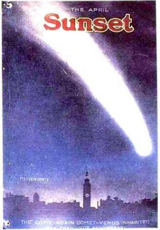
La cola del cometa Halley con un brillo y extensión exagerados, colgando sobre la ciudad de San Francisco, abril de 1910. Foto © Jerred Metz, Halley’s Comet, 1910: Fire in the Sky.
Una prominencia enorme entra en erupción en la superficie del Sol el 19 de diciembre de 1973. Obtuvo esta imagen con la luz de los átomos ionizados de helio el Skylab en órbita terrestre. El helio es, después del hidrógeno, el segundo átomo más abundante del Sol. Cedida por la Administración Nacional de Aeronáutica y del Espacio.
Otra prominencia de protones, electrones e iones de helio escapa del Sol produciendo una perturbación en la corona solar, que aparece en azul. Prominencias más enérgicas impulsan glóbulos de partículas cargadas que escapan totalmente del Sol y constituyen una erupción solar. Cedida por la Administración Nacional de Aeronáutica y del Espacio.
Cinco fotografías tomadas a intervalos aproximados de una hora del cometa Whipple-Fedtke-Tevzadze (1943 I) el 8/9 de marzo de 1943. Fotografiado en tiempo de guerra en la Alemania nazi por C. Floffmeister, Observatorio de Sonnenberg. De N. B. Richter, TheNature of Coméis, Methuen, 1963.
Formas de cometas dibujadas siguiendo la descripción escrita de Plinio. De El mundo de los cometas, de Amédée Guillemin, París, 1877.
Las moléculas son por lo general eléctricamente neutras; el número de electrones cargados negativamente en el exterior del átomo compensa con exactitud el número de protones cargados positivamente de su interior. Imaginemos una molécula de agua situada en el espacio interplanetario cerca de la Tierra. Choca con ella un fotón de luz ultravioleta procedente del Sol (o un protón), y uno de sus electrones salta al espacio. La molécula queda cargada positivamente: tiene más protones que electrones. La molécula cargada se llama ión, y el proceso de expulsión de su electrón se llama ionización. Si la molécula de agua se ha quedado sin un electrón, la simbolizaremos por H2CC, donde el signo + indica un exceso de carga eléctrica positiva, lo que equivale a un déficit de un electrón. Si ha perdido dos electrones, podremos escribir H2O++. Lo mismo es válido para CH+ o N2+ o CO +.
De acuerdo: una molécula, por ejemplo de CO, se escabulle del núcleo cometario y salta al espacio donde tiene una refriega con un rayo de luz y pierde un electrón. ¿Por qué se mueve ahora alejándose en línea recta del Sol? ¿Por qué se aceleran irregularmente los nudos de las colas iónicas? ¿Qué emanación solar capta un ión que un grano de polvo es incapaz de percibir?
La presión de radiación es demasiado débil para explicar la aceleración de los nudos en la cola iónica. Además, la aceleración de los nudos varía con el tiempo, mientras que la luz emitida por el Sol es muy estable. El Sol dispone sin duda de otros medios para afectar las comas de los cometas, aparte la luz que radia al espacio. Si estudiamos los nudos a lo largo de varios meses, observamos a veces una periodicidad en las aceleraciones que se corresponde de modo preciso con el período de rotación del Sol visto desde el cometa. La conclusión es inmediata: la influencia emana de una región determinada del Sol, no del Sol en su conjunto. La influencia, sea lo que sea, sólo alcanza el cometa cuando la región solar activa está orientada hacia él. A medida que el Sol gira (una vuelta cada veintisiete días, visto desde la Tierra), la región activa del Sol se va apartando del cometa y la aceleración de la cola iónica se calma, para reanimarse cuando la región da una vuelta completa.
Se ha sabido desde hace tiempo que el Sol emite en ocasiones partículas cargadas: cuando se observa con el telescopio una erupción en la superficie del Sol, tres días más tarde alcanza la Tierra una «tormenta magnética» que interfiere las comunicaciones de radio a gran distancia. El 29 de marzo de 1943, la cola iónica del cometa Whipple-Ledtke-Tevzadze mostró fortuitamente una pronunciada aceleración de sus nudos, y el mismo día llegó a la Tierra una importante tormenta magnética. El astrofísico alemán Ludwig Biermann, que trabajó en Alemania durante la segunda guerra mundial y después de ella, calculó a partir de esas observaciones las propiedades de las ráfagas de partículas cargadas procedentes del Sol. Biermann dedujo que existe un viento solar constante que sopla desde el Sol en todo momento y que empuja las colas iónicas de los cometas a sotavento, sea cual fuere la región del cielo donde esté en cada instante el cometa. Pero, además, las aceleraciones episódicas de las colas cometarias han de tener su origen en otra cosa, algo que, según sabemos ahora, son recrudecimientos del viento solar que brotan de agujeros en la corona del Sol y que comparten su rotación.
La nave espacial soviética Luna 3 detectó directamente por primera vez el viento solar en 1959, y más tarde hicieron lo propio la nave espacial norteamericana Explorer 10 y especialmente la nave interplanetaria Mariner 2, que llevó a cabo extensas mediciones del viento solar en su primer viaje histórico de la Tierra a Venus en 1962. Las mediciones demostraron que el viento solar está formado principalmente por protones y electrones. En las proximidades de la Tierra sólo hay unas cuantas partículas de éstas por centímetro cúbico, pero huyen radialmente del Sol con velocidades de varios centenares de kilómetros por segundo. También se midieron ráfagas más rápidas, de mayor densidad. Explosiones ocasionales y otros fenómenos violentos de la superficie solar impulsan también al espacio pequeños conglomerados de protones y electrones de alta energía. Este viento solar transporta consigo un campo magnético que barre los iones que encuentra en su camino. Cuando una molécula queda ioniza por la luz solar, es capturada inmediatamente por los campos magnéticos que el viento solar transporta. Sin embargo, las moléculas no ionizadas que se mantienen eléctricamente neutras no resultan afectadas por los campos magnéticos. Las colas iónicas de los cometas son, pues, auténticas veletas del viento solar que señalan siempre en dirección opuesta a él; pero en ocasiones una nube procedente del Sol irregularmente magnetizada alcanza la cola y sacude los iones.
La cola iónica tiene más variabilidad y a menudo más estructura que la cola de polvo. Los delgados y rectos rayos pueden cambiar, fundirse y disiparse en cuestión de horas. Los rasgos evanescentes adoptan formas complejas, incluyendo discontinuidades bien definidas en ángulo recto y formas en sacacorchos con un diámetro de millones de kilómetros. Algunos dibujos de la cola (véase página 175, abajo) casi hacen pensar que el cometa está derivando erráticamente como los petardos de humo de una verbena. Pero el cometa se desplaza en una órbita casi perfectamente elíptica; el causante de los dibujos es el viento solar. A veces, toda la cola se desconecta del núcleo y retrocede a la deriva, desvaneciéndose hasta desaparecer del todo. Normalmente, el núcleo forma una nueva cola después del fenómeno de desconexión, y las colas antigua y nueva pueden interaccionar o incluso entrelazarse brevemente. La complejidad y variabilidad de las colas de los cometas infunden una sensación casi biológica. La opinión general entre los astrónomos es que la interacción de las moléculas cargadas eléctricamente de la cola iónica con el tan variable viento solar explica en su mayor parte el extraño comportamiento de las colas de los cometas. Como es lógico, el cometa contribuye con rarezas propias: por ejemplo, fijando el momento y la magnitud de las explosiones de gas y polvo. Pero todavía nos falta mucho para comprender detalladamente las formas cambiantes de las colas iónicas de los cometas.
Desconexión de la cola del cometa Morehouse (1908 III). Estas tres fotografías se tomaron en tres días consecutivos, el 30 de septiembre, el 1 de octubre y el 2 de octubre de 1908. Una parte importante de la cola iónica se ha soltado y se ha perdido a sotavento del cometa. Las líneas a trazos son las estrellas de fondo que han dejado sus rastros en esta exposición prolongada. Cedida por el Observatorio Yerkes, Universidad de Chicago.
El cometa Morehouse (1908III) visto dos semanas después del fenómeno de desconexión de la cola que aparece en las fotos de arriba. Fotografía de la Universidad de Indiana. Cedida por la Administración Nacional de Aeronáutica y del Espacio.
El cometa Mrkos fotografiado el 3 de agosto de 1957 con el telescopio Schmidt de 1,2 m del Observatorio del Monte Palomar. Obsérvese la débil cola de polvo sin estructuras y la compleja morfología de la cola iónica.
El cometa Humason (1962 VIII). Obsérvese la estructura radiante. Fotografía del Observatorio del Monte Palomar. Cedida por la Administración Nacional de Aeronáutica y del Espacio.
El cometa Humason (1962 VIII). Dibujo de Elizabeth Roemer basado en fotografías. Cedida por la Administración Nacional de Aeronáutica y del Espacio.
Los astrónomos pasan largas horas preparando fotografías de una misma cola cometaria tomadas sucesivamente y examinando con ayuda de sus aparatos, desde una lupa hasta un sistema informático de intensificación de contraste, todos los meneos e hipos de la cola con la esperanza de descubrir los mecanismos físicos subyacentes. El tema es necesariamente arcano porque en nuestras vidas diarias no observamos con frecuencia el paso de una corriente de gases cargados y neutrales a través de un río de protones que transportan su propio campo magnético. Hay que llevar a cabo complicados cálculos magnetohidrodinámicos en tres dimensiones y simulaciones de laboratorio con plasma cargado eléctricamente que interacciona con un objeto sólido (por ejemplo, una bola de cera) representando el núcleo cometario.
El movimiento de los cometas en el campo gravitatorio del Sol sigue esencialmente las mismas leyes físicas que el lanzamiento al aire de una piedra y su caída posterior al suelo. La vida cotidiana ofrece un paralelismo fácil. La evaporación del hielo de un núcleo cometario no se diferencia mucho de la evaporación de la nieve en un día soleado. Comprendemos fácilmente este último fenómeno porque forma parte de nuestra vida diaria. Pero la física del plasma de las colas planetarias no tiene ninguna analogía rápida con fenómenos terrestres, aparte una relación lejana con la aurora boreal, y es natural que ofrezca aspectos misteriosos y que se resista a nuestros intentos de comprensión. Sin embargo, a consecuencia de esto los cometas se han convertido en laboratorios donde poner a prueba nuestras teorías de la física del plasma.
Nuestros conocimientos sobre las colas iónicas de los cometas son nuevos y en ciertos aspectos todavía provisionales, pero satisfacen plenamente las expectativas de los astrónomos de épocas anteriores. El astrónomo norteamericano E. E. Barnard escribió en 1909:
Cuando intentamos explicar algunos de estos rasgos del cometa nos vemos obligados a pisar un terreno muy peligroso, porque en las teorías cometarias adoptadas no hay nada que los explique, y tenemos que suponer incógnitas que quizá violan nuestras ideas sobre las condiciones existentes en el espacio cercano al Sol y a los planetas. Pero no habiendo al parecer otras explicaciones, el tener que acudir a los extremos en la búsqueda de una posible causa puede llevamos a un conocimiento de las condiciones interplanetarias que no alcanzaríamos nunca sin la ayuda de la ancha y majestuosa cola de un cometa.
Hoy sabemos que las colas iónicas son veletas solares, sondas de un clima interplanetario cuya existencia, sin ellas, habríamos ignorado totalmente.
Cuando un cometa ha empezado a emitir gas y a formar una coma, el viento solar y el campo magnético que transporta entra en colisión con la atmósfera cometaria. Las moléculas de las capas exteriores de la coma quedan ionizadas por la luz ultravioleta del Sol. El viento solar barre estos iones, fluye alrededor del segmento de coma que mira hacia el Sol y se lleva los iones muy a sotavento. Se crea una onda de choque, semejante a la que se crea delante de un avión potente cuando alcanza velocidades supersónicas. Esta onda de choque en forma de arco puede iniciarse a distancias de hasta un millón de kilómetros a barlovento del cometa. Los iones arrastrados por el viento solar pueden extenderse a sotavento hasta distancias de un centenar de millones de kilómetros del Sol, y brillar con un azul misterioso gracias a la energía de la luz solar ultravioleta. En ocasiones llega hasta la cola una ráfaga o más raramente un pequeño ciclón de viento solar y el desorden hace presa en una cola que antes se extendía en dirección perfectamente radial al Sol.
No se ha obtenido nunca una película lenta bien sincronizada de una cola de cometa, debido a su rápida e irregular variabilidad y a limitaciones de orden técnico y organizativo. Pero ahora hemos alcanzado el punto en que esto es posible tanto desde el suelo como desde una nave espacial. Se pueden realizar incluso películas estereoscópicas. Además, en el espacio interplanetario hay unas cuantas estaciones de seguimiento que controlan rutinariamente el viento solar y sus variaciones. Es evidente que ya estamos casi preparados para aplicar nuestros conocimientos del tiempo atmosférico interplanetario a una comprensión completa de las largas y gráciles colas de los cometas.
El cometa Morehouse (1908 III) fotografiado el 25 de noviembre de 1908 en el Observatorio Real de Greenwich. Cedida por la Administración Nacional de Aeronáutica y del Espacio.

Un cometa diurno representado en una portada musical de 1909. Cedida por Ruth S. Freitag, Biblioteca del Congreso.
Capítulo X
Un bestiario cometario
Cuando aparece un cometa raro y de forma insólita, todo el mundo quiere saber qué es, e ignorando los demás fenómenos celestiales pregunta sobre el recién llegado, incapaz de decidirse a admirarlo o a temerlo. Porque nunca faltan personas que crean el terror y predicen significados terribles.
SÉNECA, Cuestiones naturales, libro 7, «Cometas»
Los astrónomos... prestan más atención a las leyes de sus movimientos que a la extrañeza de su forma.
Immanuel Kant, sobre los cometas, Historia natural general y teoría de los cielos, 1755
Los cometas, como ballenas que rompen la superficie del mar para volver a sumergirse en sus profundidades, disfrutan brevemente de la luz solar y luego desaparecen. Los cometas bailan en el cielo nocturno cambiando caprichosamente de brillo, de trayectoria, de tamaño y de forma. A veces captamos una actividad extraordinaria cerca del núcleo. Aparecen halos, que son expulsados y se disipan. Pueden observarse surtidores múltiples proyectando al espacio gas y polvo. Los cometas suelen dar una vuelta en unas pocas horas, y por ello la curvatura de los penachos es pronunciada. La presión de radiación del Sol y el viento solar se llevan todo lo que el cometa pierde.
Algunos cometas tiran al espacio como sudarios una sucesión precisa de comas. El cometa Donati es un famoso ejemplo de ello. La explicación más inmediata es que un trozo de superficie helada queda expuesto a la luz solar y se evapora explosivamente; la rotación del cometa puede exponer consecutivamente esta superficie a la noche y al día y cada rotación genera nuevas comas en la cara dirigida al Sol.
Hemos acumulado en estas páginas una especie de bestiario cometario, como los bestiarios a secas creados por los autores medievales para sorprender, deleitar e incluso instruir. La mayoría de los animales descritos eran reales, muchos eran exóticos, unos cuantos, como el unicornio, se debían a errores de transmisión, a historias confusas, en este caso sobre el rinoceronte africano. Había también estafas conscientes. Nosotros repasamos los bestiarios con ternura, quizá con alegría, reconociendo que son los antecesores de los modernos textos de zoología.
Con un espíritu semejante, ofrecemos aquí una serie de imágenes, fotografiadas o dibujadas a través de telescopio, de las formas de los cometas; prestamos especial atención a los chorros de dentro de las comas. A veces, el cometa se nos presenta con su eje de rotación mirando hacia nosotros; en otras ocasiones lo vemos oblicuamente. En todos los casos es fácil saber dónde está el Sol. Algunas ilustraciones aparecen reproducidas en blanco y negro para aumentar el contraste.
Envolturas sucesivas de gas emitidas por el núcleo del cometa Donati (1858 II), dibujo por Schmidt al telescopio el 5 de octubre de aquel año. Cedida por la Administración Nacional de Aeronáutica y del Espacio.
Cinco (o quizá seis) surtidores proyectándose fuera del núcleo del cometa Tebbutt (1861 II) dibujados por Schmidt. Cedida por la Administración Nacional de Aeronáutica y del Espacio.
Surtidores múltiples brotando de la cara dirigida al Sol del núcleo del cometa de 1861. Dibujado por Warren de la Rué, 2 de julio de 1861. De Los cielos de Amédée Guillemin, París, 1868.
Representación esquemática de una vista oblicua (izquierda) y de una vista desde el eje de rotación (derecha) del mismo núcleo cometario con surtidores. Diagrama de Jon Lomberg/BPS.
Dos vistas de la coma interior del cometa Halley en dos momentos diferentes del día el 5 de mayo de 1910. Dibujado en Johannesburgo por R. T. A. Innes (izquierda) y por W. M. Worsell (derecha). La imagen de la derecha parece indicar una rotación a izquierda en relación a nuestra visual. Cedidas por la Administración Nacional de Aeronáutica y del Espacio.
El astrónomo observa desde su telescopio a través de un océano de aire turbulento y la imagen obtenida siempre está distorsionada. Un motivo para instalar los telescopios en cimas de montañas aisladas, por encima de gran parte de la atmósfera, es mejorar la visibilidad.
Se plantea así la posibilidad de que las curvas [de los penachos de la cola] sean curvas espirales debidas la rotación del núcleo del cometa mientras descarga los penachos.
Arthur Stanley Eddington
El ojo del astrónomo situado en el foco de un gran telescopio tiene una gran ventaja sobre la placa fotográfica: el astrónomo puede recordar el momento en que la atmósfera se calmó y él pudo observar detalles minuciosos. El astrónomo al recordar estos momentos y dibujar lo que vio, puede registrar a menudo detalles inaccesibles a una cámara conectada al mismo telescopio. Pero la desventaja de este método es que las personas son aparatos imperfectos de grabación, y los ojos en su límite de resolución pueden jugar malas pasadas. Sin embargo, después de comparar entre sí los dibujos de observadores independientes, de compararlos con fotografías y de recurrir a nuevas técnicas de tratamiento de la imagen, se comprueba que en general los antiguos observadores cometarios sabían lo que se hacían.
Cada una de estas formas cometarias representa una instantánea de la vida y de la muerte de un cometa, una visión fugaz de la luz solar violentando una gran masa de hielo. Cada una de estas manifestaciones ha sido producida, por lo menos en parte, por los penachos de gas y de polvo, la rotación, la presión de radiación y el estado local del viento solar. Los penachos y la coma tienen normalmente miles de kilómetros de anchura o más. Deducir los hechos ocultos a partir de los rastros dejados es precisamente la tarea de los detectives. Es también a lo que se dedican los geólogos que trabajan sobre el terreno. Pasemos los ojos por la variedad de formas cometarias presentadas aquí y veamos si podemos construir una explicación plausible de lo que está sucediendo en cada caso.
En la figura superior de la página 186 estamos observando oblicuamente un núcleo mientras el Sol lleva hacia atrás cinco o seis penachos. En la figura inferior de la misma página y en las demás figuras vemos que los surtidores están limitados al hemisferio calentado y encarado al Sol del núcleo cometario. La dirección de rotación puede deducirse a menudo por la curvatura de los penachos (véase página 187, figura inferior).
En el dibujo inferior de la página 186 estamos observando oblicuamente surtidores múltiples de polvo que brotan de la cara diurna del gran cometa de 1861. Pero imaginemos que el cometa se hubiera acercado a la Tierra desde detrás, con su polo señalando casualmente hacia nosotros: veríamos desde arriba el eje de rotación y el carrusel de surtidores iría girando ante nuestros ojos (véase página 187, arriba).
Por suerte para nosotros, la gravedad de la Tierra es insuficiente para atraer a ella a los cometas que pasan por sus proximidades. Pero de vez en cuando y de modo casual un cometa pasará rozando la Tierra. Sólo hay que esperar. Si esperamos lo bastante —por ejemplo, cien millones de años— es probable que veamos cometas muy raros. Por ejemplo, entre las órbitas de Saturno y de Urano está Quirón, un objeto muy insólito descubierto en 1977 por Charles Kowal de los Observatorios Hale en California. Quirón, bautizado con el nombre del centauro que enseñó a Jasón y a Aquiles, tiene un diámetro de trescientos o cuatrocientos kilómetros, superior al de cualquier cometa conocido, pero no superior al de los asteroides mayores. ¿Podría ser Quirón el miembro más visible de una población hasta ahora desconocida de cometas de gran masa que viven preferentemente más allá de Plutón? Quirón es muy oscuro y rojo. Otros objetos del sistema solar exterior están oscurecidos y enrojecidos por materia orgánica compleja, y es probable que lo propio le suceda a Quirón. Desde luego no puede haber en su superficie mucho hielo fresco y sin contaminar. Quizá Quirón sea un cometa cuyos hielos superficiales de metano y de otros compuestos exóticos volátiles se han evaporado dejando una matriz orgánica y oscura.
Quirón, a intervalos de unos miles de años, hace un número de pases distantes al lado de Saturno suficientes para que su órbita pueda considerarse inestable. Tal vez se esté abriendo camino lentamente hacia el Sol, y algún día se convierta en un cometa de período corto. Imaginemos que Quirón, después de tener encuentros repetidos con Saturno y Júpiter, entra un día en el sistema solar interior. Si el cometa Schwassmann-Wachmann 1 puede todavía sufrir erupciones desde su solitaria situación entre las órbitas de Júpiter y Saturno, y, si el gran cometa de 1729 pudo ser visible a simple vista cuando estaba casi a la distancia de Júpiter, ¿qué aspecto ofrecerá un objeto como Quirón al llegar por primera vez del sistema solar exterior y pasar rozando la Tierra? Sin duda Quirón contiene hielo de agua que se evaporará explosivamente cuando se acerque al Sol. Un cometa muy oscuro, quizá de un perceptible color rojo, de centenares de kilómetros de diámetro, con múltiples surtidores de polvo y una cola inmensa, sería un magnífico espectáculo visto desde la Tierra. No parece que ningún documento histórico describa una aparición así. Sin duda se trata de un acontecimiento raro.
El cometa Halley en 1835 dibujado por Schwabe. Cedida por la Administración Nacional de Aeronáutica y del Espacio.
Cuatro días después Schwabe dibujó el mismo cometa, pero ahora con una configuración de murciélago. Cedida por la Administración Nacional de Aeronáutica y del Espacio.
El cometa Halley de nuevo en 1910 por Ricco. Cedida por la Administración Nacional de Aeronáutica y del Espacio.
El cometa de 1823. Cedida por R. A. Lyttleton, obra citada.
Innes realizó este dibujo durante la misma aparición del cometa Halley en 1910. Cedida por la Administración Nacional de Aeronáutica y del Espacio.
Formulemos una pregunta más modesta: ¿existe documentación histórica sobre la aproximación a la Tierra de un núcleo cometario rotativo y con surtidores? En el caso del cometa Morehouse 1908 III, la coma interior con sus surtidores tenía un diámetro de unos cuatro mil kilómetros, tamaño más o menos típico que equivale aproximadamente al de la Luna. Si un núcleo cometario así se aproximara a la Tierra tanto como la Luna, aparecería como es lógico con el mismo tamaño que ella, medio grado de diámetro aproximadamente. El 11 de mayo de 1983, el cometa IRAS-Araki-Alcock (nombrado según una nave espacial y dos personas) pasó a cinco millones de kilómetros de la Tierra, doce veces la distancia de la Tierra a la Luna. La frecuencia observada de la llegada de nuevos cometas al sistema solar interior permite calcular lo que tardará en presentarse un cometa a la distancia de la Luna. La respuesta es de unos cuantos miles de años como máximo. Si estamos dispuestos a esperar cuatro o cinco mil años, pasará cerca de nosotros a una distancia considerablemente menor un núcleo cometario. Imaginemos el cielo dominado por un objeto sombrío, rojo e irregular, que escupe un dosel blanco y derrama al espacio sus surtidores brillantes y curvos, mientras todo este material acaba barrido hacia atrás y forma una vasta cola extendida de horizonte a horizonte. Será un acontecimiento memorable.
Todas las culturas del mundo contemplarán el cometa, suponiendo que no se acerque a la Tierra desde un sector improbable del cielo. Seguramente habrá un marco mitológico, llamado a veces concepción del mundo, donde encajar esta aparición. La gente pensará de modo natural que este espectáculo supone algún augurio o tiene algún sentido. Es probable, pues, que algunas formas cometarias hayan entrado en el arte de muchas culturas, quizá de modo central. A medida que pasó el tiempo, el recuerdo de lo realmente acaecido pudo desvanecerse, y las historias hacerse más vagas, pero la forma cometaria continuaría siendo un motivo dominante en el arte y en los documentos de generaciones anteriores. Si los hombres vimos una aparición de este tipo y creímos que era un mensaje para nosotros, sin duda no estuvimos dispuestos a ignorarla. Pasados miles de años, el símbolo cometario, sea cual sea, pudo quedar totalmente desconectado de sus orígenes extraños y terribles. En una sociedad precientífica y preliteraria, los relatos sobre un fenómeno sin precedentes basado en hechos físicos insólitos debió asumir al cabo de miles de años una vida propia.
La idea de que hayan chocado cometas con la Tierra provocando catástrofes históricas está desacreditada por las exageraciones formuladas al respecto a lo largo de siglos en libros y artículos populares sin disponer de pruebas convincentes. Pero está claro, por lo menos desde la época de Halley, que si esperamos un tiempo suficiente se producirán grandes aproximaciones e incluso impactos de cometas con la Tierra. Esta cuestión, como todas las de tipo científico, ha de basarse en la calidad de los datos. Somos conscientes de que debe procederse con precaución.
Es muy explicable la tentación que existe de especular sobre estas materias. Si en las últimas generaciones se han producido aproximaciones ocasionales de cometas, en tiempos históricos debió de acercarse a nosotros un cometa realmente grande, más espectacular que los demás cometas recordados. Basta entonces recorrer el arte y la literatura de los mitos, o el registro geológico, hasta encontrar algo que parece atribuible a un cometa y escribir el correspondiente libro. De este modo, Ignatius Donnelly —congresista, subgobernador de Minnesota, defensor apasionado de los derechos humanos y de la conservación de la naturaleza propuso en 1883 en una obra enormemente popular llamada Ragnarok que al pasar la Tierra por un cometa basado en el modelo del banco de arena orbital (véase capítulo VI) cayeron del cielo sobre todo el mundo gruesos depósitos de arcilla. Pero las arcillas pueden producirse fácilmente mediante procesos geológicos conocidos, y la composición atómica o molecular de la mayoría de ellas no presenta indicios de un origen extraterrestre. Además hoy se sabe que el modelo del banco de arena es incorrecto, aunque en época de Donnelly contaba con el consenso de los especialistas. Otro ejemplo es el de un psiquiatra ruso-norteamericano llamado Immanuel Velikovsky, quien propuso que las plagas de Egipto, el maná del cielo y otros retazos de mitos antiguos se debieron a un cometa que se acercó demasiado a la Tierra. Pero un cometa no es la única explicación concebible de estas historias, y otros elementos de sus hipótesis están sobrecargados de errores.
Sin embargo, hay motivos para suponer que los antiguos hicieron descripciones precisas de fenómenos cometarios tanto extraordinarios como ordinarios, por lo menos en ciertas ocasiones. Por ejemplo, el historiador Éforo, del siglo IV a. de J.C., habla de un cometa que se partió en dos en el año 371 a. de J.C. Los escritores posteriores continuaron citando a Éforo, pero con cierto escepticismo. En la época de Séneca y de Plinio no había más ejemplos de cometas fragmentándose; sin embargo, pudo transmitirse de modo seguro hasta nuestros días la historia de que en una ocasión un cometa se dividió en dos. Hoy día hemos comprobado con el cometa Biela, y con cometas que pasan rozando el Sol, que la fragmentación es un hecho real. Éforo ha sido reivindicado, y nosotros comprobamos que las historias sobre fenómenos cometarios insólitos pueden transmitirse a través de los milenios.
En nuestro siglo se han llevado a cabo extensos cálculos newtonianos de la órbita del cometa Halley, obteniéndose predicciones, o mejor posdicciones, de las fechas y posiciones de cada aparición del cometa en el cielo hasta el año 240 a. de J.C. Se han encontrado en las antiguas crónicas pruebas convincentes de que en cada una de estas apariciones calculadas apareció realmente en la región predicha del cielo un cometa brillante en la fecha calculada. Esta concordancia entre la teoría y la observación, además de mejorar nuestra gran confianza en la teoría gravitatoria newtoniana, renueva nuestro respeto por la precisión y atención de los antiguos cronicones chinos, coreanos, japoneses, babilonios y europeos. Este respeto no llega al punto de prestar un crédito total a las descripciones de los cometas que aparecen acompañados de dragones, espadas o rostros (véase página 29), pero indica que en las descripciones históricas de las formas de los cometas pueden haber persistido elementos de la historia natural de esos idiosincráticos visitantes procedentes de las profundidades del espacio.
El cometa de 1851. Cedida por R. A. Lyttleton, obra citada.
El cometa Arend-Roland (1957 II) el 25 de abril de 1957. Fotografía de H. Neckel. De The Nature of Coméis de N. B. Richter, Methuen, 1963.
El gran cometa de 1861 dibujado por Warren de la Rué, el 2 de julio de 1861. De El mundo de los cometas de Amédée Guillemin, París, 1877.

El cometa Tebbutt (1861 II) dibujado por Secchi. Cedida por la Administración Nacional de Aeronáutica y del Espacio.
El cometa Tebbutt (1861II) dibujado por Secchi un día después. Cedida por la Administración Nacional de Aeronáutica y del Espacio.
Formas complejas, casi biológicas, cerca del núcleo con surtidores del cometa Donati. Dibujado al telescopio del Observatorio de Harvard College el 5 de octubre de 1858 por Bond. Cedida por la Administración Nacional de Aeronáutica y del Espacio.
El gran cometa de 1861, dibujado por Warren de la Rué, un día después. De El mundo de los cometas de Amédée Guillemin, París, 1877.
Plinio habla de la aparición de un cometa «tan brillante que no podía mirarse directamente; era blanco con pelo plateado y parecía un dios en forma humana». ¿Cómo tenemos que interpretar esto? Para que un cometa fuera tan brillante tendría que estar envuelto en una coma y pasar cerca de la Tierra. El hecho no es imposible. La configuración de la coma puede ser complicada y sugerir una forma humana (véase, por ejemplo, el dibujo que Bond trazó del cometa Donati, en esta página, arriba, que parece un feto). Sin embargo, un dios cometario de pelo plateado no aparece con mucha frecuencia en los mitos y el arte de la Tierra.
Plinio describió otro tipo de cometa con estas palabras: «Como la crin de un caballo, tiene un movimiento muy rápido, como un círculo girando sobre sí mismo.» En ocasiones, el tema de la rotación aparece relacionado con los cometas en los documentos antiguos. Epígenes propuso que los cometas nacen en los torbellinos de viento, teoría que Séneca rechazó muy justificadamente, pero un núcleo cometario con chorros y en rotación puede parecerse mucho a un torbellino. Una de las objeciones de Séneca es que los torbellinos duran poco y que sus movimientos rotacionales se disiparían a consecuencia del rápido movimiento de los cielos alrededor de la Tierra. Séneca no sabía que la Tierra gira. Escribe luego: «La forma de un torbellino es redonda...; por tanto, el fuego guardado [en el interior del hipotético torbellino cometario] debería ser como un torbellino. Y, sin embargo, el fuego es alargado y disperso y no muestra en absoluto una forma redonda.» Podría ser que Séneca y Epígenes estuvieran describiendo aspectos diferentes de los cometas: Séneca la coma y la cola y Epígenes una observación más próxima de un núcleo en rápida rotación. (Antes de la invención del telescopio, el cometa tendría que haberse aproximado mucho a la Tierra para poder notar nosotros su rotación.) Nos preguntamos, pues, si existe algún símbolo antiguo muy difundido, relacionado con el cielo, que indique una rotación. Nosotros, de modo muy provisional, proponemos la existencia de un símbolo de este tipo: la esvástica.

El cometa Coggia (1874 III) dibujado por Chambers. Cedida por la Administración Nacional de Aeronáutica y del Espacio.
Este símbolo de cuatro brazos doblados que emanan de un centro común fue adoptado oficialmente y convertido en sinónimo de horror por el régimen nacionalsocialista de Alemania. Los crímenes nazis contra la humanidad están bien documentados, aunque no lo bastante meditados; los nazis continúan envenenando la amistad entre las naciones mucho tiempo después de su paso por el mundo. Pero hubo una época muy anterior a los nazis en la que las esvásticas abundaban y eran símbolos benignos conocidos por casi todas las culturas del planeta. Intentemos por un momento, si somos capaces de ello, ignorar la relación de los nazis con este símbolo y considerémoslo por sí mismo.
Dibujo del cometa Encke en 1871. Cedida por R. A. Lyttleton
Dos dibujos por Wolf del cometa Daniel (1907 IV). Cedidos por la Administración Nacional de Aeronáutica y del Espacio.
En 1979, con ocasión de nuestra serie televisiva Cosmos, estábamos en la India para filmar la antigua celebración del ciclo de las estaciones denominada Pongal.
Nos impresionó profundamente la generosidad y bondad de los aldeanos hindúes de Thanjavur, en el sur dravídico de la India, pero nos quedamos algo sorprendidos cuando empezaron a dibujar alegremente esvásticas con tiza en la entrada de sus casas. Nos explicaron que aquél era un antiguo símbolo de buena suerte. Y realmente así es.
En los dos niveles más profundos y, por tanto, más antiguos de Troya, que se remontan al 3000 a. de J.C., en la primitiva edad de bronce, no se encontraron indicios de la esvástica; pero Heinrich Schliemann, el descubridor de Troya, las encontró por todas partes a partir de lo que él llamó la ciudad tercera o quemada, que data de principios del segundo milenio antes de Cristo.
Huso adornado con una esvástica, uno de los centenares de piezas descubiertas por Schliemann en Troya. De Thomas Wilson, La esvástica: el símbolo conocido más antiguo y sus migraciones; con observaciones sobre la migración de ciertas industrias en épocas prehistóricas, Smithsonian Institution, Washington, D. C., 1896.
Centenares de objetos recuperados, especialmente husos manejados con un movimiento rotativo, estaban adornados con esvásticas. En la China de la dinastía Tang el abuso público de este símbolo importante había alcanzado un nivel tal que tuvo que proclamarse un decreto imperial prohibiendo estampar esvásticas sobre telas de seda. En el oeste de la India hay cavernas que sirven de capillas budistas; la mayor parte de las inscripciones rupestres van precedidas o seguidas de una esvástica. Los jainistas, una comunidad religiosa india que ocupa el polo opuesto a los nazis por su respeto por la santidad de todo tipo de vida, utilizan la esvástica «como signo de bendición», motivo por el cual también los japoneses ponían en una época esvásticas en sus ataúdes. Un artículo sobre el Tíbet publicado en el Times de Londres en 1904 describe «unas cuantas casuchas blancas y estrechas dispuestas en fila... Sobre la puerta de cada una de ellas hay una esvástica blanca y sobre la esvástica una mancha basta representando una bola y una media luna», símbolos astronómicos del Sol y de la Luna. En otros tiempos, la esvástica era un símbolo corriente casi típico de los pueblos indígenas de Norteamérica que aparecía en mantas, cuentas, cerámica y otros objetos. Thomas Wilson, conservador del Departamento de Antropología Prehistórica del Museo Nacional de Estados Unidos, escribió en 1896:
Ignoramos si la esvástica se concebía como un símbolo religioso, un conjuro de bendición o de buena suerte, o si era únicamente un adorno. Ignoramos si tenía algún significado oculto, misterioso o simbólico; pero aquí está, una esvástica prehistórica u oriental con toda su pureza y simplicidad, apareciendo en una de las ceremonias místicas de los t aborígenes del gran desierto americano, en el interior del continente norteamericano.
¿Cómo llegó a establecerse ese mismo símbolo curioso en las antiguas culturas de la India, China, el suroeste norteamericano, el México maya, Brasil, Gran Bretaña y Turquía, entre otros lugares? La esvástica tuvo un uso general en la edad de bronce europea desde el Ártico al Mediterráneo, difundiéndose luego en la edad de hierro a las civilizaciones etrusca, micénica, troyana e hitita. La palabra en sí procede del sánscrito:
La raíz svasti significa literalmente bienestar. El signo de la esvástica debió de existir mucho antes de recibir un nombre. Debió de existir mucho antes de la religión budista o del idioma sánscrito...
Si estudiamos todo el mundo prehistórico, encontramos la esvástica utilizada en objetos pequeños y relativamente insignificantes..., como vasos, cazuelas, medicinas, utensilios, herramientas, objetos y utensilios del hogar..., y con poca frecuencia en estatuas, altares y objetos semejantes.... [Se utilizó] en Italia en las urnas donde se enterraban las cenizas de los difuntos; se estampaba sobre cerámica de los lagos suizos; aparece en armas y espadas de Escandinavia, etc., y en Escocia e Irlanda, en broches y agujas; en América se dibujaba en los metates de moler maíz; las mujeres brasileñas las llevaban en sus hojas de parra de cerámica; los indios pueblo la pintaban en sus sonajeros de danza, mientras que los indios norteamericanos de la época de la construcción de túmulos en Arkansas y Missouri la pintaban en forma espiral en su cerámica; en Tennessee, la grababan sobre la concha, y en Ohio, la recortaban sobre láminas de cobre en su forma más sencilla y normal... No la encontramos representada en América sobre monumentos religiosos aborígenes, ni sobre dioses antiguos, ídolos u otros objetos sagrados o santos; por tanto, estamos justificados cuando afirmamos que en esta parte del mundo no se utilizó como un símbolo religioso... Ante la preponderancia de esas aplicaciones corrientes parece justificado negar el carácter sagrado de la esvástica, con la excepción de su uso entre los budistas y los primitivos cristianos y en las ceremonias más o menos sagradas de los indios norteamericanos.
Esta cita es de la obra clásica sobre la etnografía de la esvástica escrita por Wilson. Éste acogió con escepticismo la idea de que la esvástica pasara de una cultura a otra por difusión:
Si el signo tuviera entre los aborígenes de América el mismo nombre que tiene en la India, esvástica, sería una prueba importante en favor del contacto y la comunicación. Si se descubriera en América la religión que la esvástica representaba en la India, la cadena confirmadora estaría completa....
Pero no es así. Wilson afirma, por otra parte, que la esvástica no tiene ni mucho menos un dibujo tan simple que pueda haberse originado espontáneamente en todo el mundo:
Como prueba de esto cito el hecho de que su uso no es corriente, de que es casi desconocida entre los pueblos cristianos, de que no se incluye ni se menciona en ninguna de las obras modernas euro-
peas o americanas sobre decoración, ni la conocen ni la practican artistas o decoradores de otros países....
La línea recta, el círculo, la cruz y el triángulo son formas simples, fáciles de hacer, y podrían haberse inventado y reinventado en todas las edades del hombre primitivo y en todas las regiones del globo. Cada una de ellas sería una invención independiente, con mucho o poco significado, dando a entender cosas diferentes para pueblos diferentes o en épocas diferentes dentro del mismo pueblo; o estas formas pueden no haber tenido un significado estable o definido. Pero probablemente la esvástica fue el primer signo realizado con una intención definida y un significado continuo o consecutivo, cuyo conocimiento pasó de una persona a otra...
Símbolo de la esvástica en una «bulla» de oro etrusca. De Wilson.
Botón de madera micénico, mostrando una esvástica curvada flanqueada por dos cruces de cuatro brazos. De Wilson.
Una esvástica curvada y prolongada en un vaso de cerámica de tres pies de la Arkansas precolombina. De Wilson.
Cerámica de la antigua Samarra. El trozo recuperado cuyas figuras están en negro ha servido para reconstruir el dibujo completo. Según La migración de los símbolos del conde Eugéne Felicien Albert Goblet d’Aleiella, París, 1891.
Una lanza de la Edad de Hierro, recuperada cerca de Brandeburgo, Alemania, entre cuyos símbolos hay una esvástica de ángulos rectos con cuatro brazos (izquierda) y una esvástica curvada de tres brazos (derecha). De Wilson.
La esvástica es un auténtico enigma: un símbolo de miles de años de antigüedad que ni nace espontáneamente en la mente del artista ni se transmite primariamente de cultura en cultura. También confundió a Schliemann, quien dijo: «El problema es insoluble.» Y quizá lo sea. Sin embargo, si la esvástica tuvo su origen en algo aparecido en el cielo, algo que pudieron presenciar independientemente culturas muy separadas, se resolvería el misterio. El símbolo habría llegado del exterior y, sin embargo, no se habría transmitido por difusión cultural.
A menudo, en las representaciones más antiguas de la esvástica se ven los brazos no torcidos en ángulo, sino curvados. Schliemann, al ponderar el significado de las esvásticas que había descubierto en la antigua Troya, creyó ver en ellas un intento para representar el giro; según dijo, la dirección del movimiento estaba indicada por la dirección de los brazos que la rotación dejaba siempre a remolque. Pero el arqueólogo no pudo ofrecer ninguna hipótesis sobre el objeto que giraba.
Otro dilema presente en los textos de los especialistas sobre la esvástica es que, por un lado, parece estar relacionada con algo brillante en el cielo y, por otro, es algo claramente separado del Sol. Podemos dar una idea de la turgencia que alcanza a veces la discusión erudita sobre este aspecto de la esvástica reproduciendo la opinión que dio en 1891 el conde Goblet d’Aleiella: los brazos de la esvástica «son rayos en movimiento». Las imágenes más estrechamente relacionadas con ella representan el Sol o los dioses solares. A veces, la esvástica alterna con representaciones del Sol. El conde D’Aleiella deduce de esto que la esvástica significa el Sol. Una pieza crítica en apoyo de esta teoría es una moneda tracia donde la palabra que significa día está sustituida por el símbolo de la esvástica. En su opinión esto constituye una identificación completa entre la esvástica y «la idea de luz o de día». Pero los críticos señalan que no hay necesidad de un símbolo adicional para el Sol, y que la esvástica no se parece en absoluto al Sol. En algunas acuñaciones indias la esvástica aparece separada de la gran rueda del Sol, pero con igual prominencia. ¡Un callejón sin salida!....
Todas esas dificultades parece que se resuelven si en algún momento una esvástica brillante estuvo girando en los cielos de la Tierra, presenciada por los pueblos de todo el mundo. De entrada la idea parece tan alejada de la realidad astronómica que si bien debieron ponderarla brevemente quienes se han interrogado sobre el origen de la esvástica, nadie continuó por ese camino, por la sencilla razón de que hoy día no hay en el cielo nada que se parezca ni remotamente a una esvástica ardiente. Pero basta examinar los dibujos y fotografías de los surtidores que proyecta un núcleo cometario, registrados por generaciones de astrónomos, para damos cuenta de que allí tenemos material potencial para crear un prodigio de este tipo.
Estamos imaginando algo del siguiente tenor: nos encontramos a principios del segundo milenio antes de Cristo. Quizá Hammurabi es rey de Babilonia, Sesostris III gobierna en Egipto o Minos en Creta. Es más probable que se trate de una época que hoy no relacionamos con ningún personaje famoso. Mientras todas las personas de la Tierra están ocupadas en sus tareas cotidianas, aparece un cometa de giro rápido con cuatro penachos activos. Cuando la gente mira el cometa, la visual está alineada con el eje de rotación. Los cuatro chorros situados simétricamente alrededor del ecuador en la cara diurna generan penachos curvados debido a la rápida rotación del cometa, como podemos ver fácilmente en el dibujo que forma una rociadera giratoria de jardín. De acuerdo con la representación usual de la esvástica, los observadores habrían visto el carrusel girando en dirección contraria a las agujas del reloj, con los brazos a la zaga. Mientras los cuatro chorros funcionaran a la vez, los habitantes de la Tierra verían una esvástica brillante, quizá algo escorzada, en el cielo diurno.
Cuatro surtidores situados simétricamente en el hemisferio iluminado (derecha) de un núcleo cometario sin rotación (izquierda). Si el núcleo girara rápidamente (a izquierdas en esta representación esquemática), los brazos se retrasarían y se obtendría algo parecido a una esvástica. Diagrama de Jon Lomberg/BPS.
La esvástica tiene cierta calidad antropomórfica. La leemos como unos brazos y unas piernas en movimiento. Es uno de los pocos símbolos, ausente normalmente de la naturaleza, que es a la vez simple y convincente.
Si algo parecido a ella se materializara lentamente en nuestro cielo nocturno entre mantos y surtidores de polvo, algo con impulso propio, animado, casi decidido, seguramente la experiencia nos impresionaría.
Los siete últimos cometas que aparecen en la seda de Mawangdui del siglo III o IV a. de J.C. en China. Nada indica en el pie de figura que la última forma, de esvástica, se considerara fundamentalmente diferente de las demás formas cometarias mostradas. Wen wu. «Ma Wang Dui bo shu ’Tian wen qi xiang za zhan’nei rong jian shu» y «Ma Wang Dui Han cao bo shu zhong dúo hui xing tu». Beijing: Wen wu chu ban she. 1978, volumen 2, pp. 1-9.
Especularíamos sobre su significado, su importancia religiosa, su presagio. La gente copiaría el símbolo para que otros pudieran conocerlo, para que esta maravilla no cayera en el olvido. Nadie tiene que explicarnos que la cosa es importante, tanto si la consideramos un signo feliz como un anuncio de desastres.
En todo caso, así imaginamos el posible origen de la distribución mundial del símbolo de la esvástica. Es sólo una especulación, desde luego. La forma de la esvástica no es muy diferente de las estructuras en carrusel observadas en muchos cometas y registradas en fotografías de exposición corta tomadas con un gran telescopio. Un ejemplo reciente es el cometa Bennett 1970 II. En el caso por lo menos del cometa Bennett, el color del carrusel era amarillo, lo cual indica que la estructura está en el polvo. Si estudiamos estas formas, quizá aceptaremos por lo menos la posibilidad de que, si pasa cerca de la Tierra un número suficiente de cometas giratorios provistos de surtidores, tarde o temprano llegará alguno que ofrezca una imagen parecida a una esvástica. Pero este argumento por sí solo es insuficiente para convencemos del origen cometario del símbolo. En un tema tan especulativo falta por lo menos un elemento de prueba directa.
Es impresionante en estas circunstancias encontrar en la cultura que posee la tradición más prolongada de observaciones cuidadosas de los cometas una descripción directa y al parecer sin ambigüedades de una esvástica como un cometa más. Es el caso del cometa número veintinueve y final del antiguo atlas de seda de formas cometarias excavado en una tumba de la dinastía Han en Mawangdui, China (véase capítulo II). Data del siglo III o IV a. de J.C., pero es una antología de observaciones cuya antigüedad ha de ser mucho mayor. El cometa veintiocho se llama «dixing», «la estrella faisán de cola larga». El pie dedicado al cometa «esvástica» es el más largo de los veintinueve, porque el cometa esvástica es el único que admite interpretaciones diferentes. Este cometa se relaciona con el cambio. «Si aparece en primavera, significa buena cosecha; en verano, significa sequía; en otoño, inundaciones; en invierno, pequeñas batallas.» Como es natural, estos auspicios son caprichosos, pero ahora nos parece una posibilidad real que el origen de la esvástica resida en una aparición cometaria. Nos preguntamos si esta relación aparece dibujada en otros objetos poco estudiados de antiguas culturas.
La esvástica alcanzó una distribución mundial, y casi en todas partes se consideró un signo benigno, al contrario de los atributos cometarios usuales. Miles de años después surgió la variedad nazi de racismo y pillaje y buscó un símbolo para representar a los pueblos supuestamente superiores y de supuesta homogeneidad racial del norte de Europa. Estos pueblos se aplican ya el nombre de arios, como los persas de piel blanca que invadieron la India y sus pobladores de piel oscura a mediados del segundo milenio antes de Cristo. La esvástica engalanó uniformes, armas, documentos, aviones y otras insignias. Los niños de todo el mundo practican dibujando el símbolo. Los nazis, bajo la bandera de la esvástica, asesinan a decenas de millones de personas y marcan el comienzo de una era en la que los hombres se hacen capaces de destruir su civilización global y quizá la misma especie humana. Un carrusel de hielo en evaporación aparece con una solitaria magnificencia en los cielos de la Tierra y 3 500 a 4 000 años después su forma, recordada a lo largo de todas las generaciones intermedias de seres humanos, se utiliza todavía para simbolizar tanto el bien como el mal. Cuando dirigimos nuestra vista al espacio vemos reflejadas en él las múltiples variedades de nuestra naturaleza.
Tanto la forma de esta eyección luminosa como la dirección en que salía del núcleo experimentaron alteraciones singulares y caprichosas, sucediéndose las distintas fases una a otra con tal rapidez que el aspecto no era semejante ni en dos noches sucesivas. En ocasiones, el chorro emitido era único, confinado a unos límites estrechos de divergencia del núcleo. En otras ocasiones, el chorro presentaba una forma de abanico o de cola de golondrina, análoga a la de una llama de gas emergiendo de un orificio aplanado: mientras en otros momentos saltaban en direcciones diferentes dos tres o incluso más chorros.
John Herschel
«Sobre la aparición en 1835 del cometa de Halley», Perfiles de la astronomía, Londres, 1858
Parte II
Orígenes y destinos de los cometas
Representación esquemática de la Nube cometaria de Oort rodeando el Sol. Sólo está representada una minúscula fracción del billón de cometas de la Nube exterior de Oort. La mayoría de ellos están situados a una tercera parte aproximadamente de la distancia entre el Sol y la estrella más cercana. Mucho más cerca del Sol hay la población cometaria, probablemente más numerosa todavía, de la Nube interior de Oort. Pintura de Jon Lomberg.
Capítulo XI
En el corazón de un billón de mundos
Aparte estos cometas, ¡cuántos astros hay que se mueven en secreto, sin elevarse nunca ante los ojos de los hombres! Pues Dios no ha hecho todas las cosas para el hombre.
SÉNECA, Cuestiones naturales, libro 7, «Cometas»
Tenemos motivos para sospechar la existencia de muchos más cometas que, situados a distancias remotas del Sol, y siendo oscuros y sin cola, pueden escapar por este motivo a nuestras observaciones.
Edmond Halley Actas de la Royal Society de Londres, vol. 24, p. 882,1706
Los antiguos suponían que los planetas estaban unidos a una maquinaria invisible: esferas transparentes de cristal acopladas y engranadas elegantemente. Ahora sabemos que los antiguos estaban equivocados. No existen esferas de cristal. Los planetas giran alrededor del Sol guiados únicamente por la mano invisible de la gravitación newtoniana. Algunos mundos son de roca, otros de gas, otros de hielo y en ninguna parte, desde Mercurio hasta Plutón, hay nada que se parezca a una esfera de cristal. Pero imaginemos que abandonamos el sistema solar a una velocidad imposible, y que al cabo de un tiempo, incluso las órbitas de los planetas más exteriores se han hecho tan pequeñas que no podemos verlas, y el mismo Sol se ha convertido en un simple punto de luz no más brillante que las estrellas más brillantes que vemos desde la Tierra. Nos encontraremos entonces con una especie de esfera de cristal, pero una esfera fragmentada: una nube de un billón de trozos y fragmentos de hielo, de pequeños mundos del tamaño de una ciudad, débilmente iluminados en las grandes tinieblas interestelares.
Vivimos en el corazón de un billón de mundos, todos ellos invisibles. Esto parece la enseñanza de una secta de la Nueva Era. Pero no estamos hablando de mundos metafóricos, sino de un billón de lugares cada uno tan distinto como lo es nuestro mundo, cada uno ligado gravitatoriamente al Sol, cada uno con una superficie y un interior y en ocasiones incluso con una atmósfera.
Si estamos bajo techado, salgamos fuera. Levantemos los ojos. Concentrémonos en el trozo más pequeño de cielo que podamos distinguir. Imaginemos que se extiende formando una cuña creciente hasta las profundidades del espacio, hasta las estrellas. En este trocito de cielo hay centenares de miles de mundos o más, mundos no vistos, sin nombre, pero en cierto sentido, conocidos. Estos primos lejanos de la Tierra son los núcleos cometarios: fríos, silenciosos, inactivos, dando tumbos lentamente por la negrura interestelar. Pero cuando algo los obliga a caer hacia nuestra región del sistema solar, estos astros crujen y retumban, empiezan a evaporarse y a lanzar chorros para crear al final las colas tan admiradas por los habitantes de la Tierra. El camino que condujo al descubrimiento de esa multitud invisible de mundos helados es otra historia de detección científica que empezó con Halley.
Cuando Edmond Halley hubo elaborado el primer inventario de las órbitas planetarias, vio que muchos cometas regresaban con poca frecuencia a intervalos de siglos o incluso más (véase capítulo IV, página 84, abajo). Halley comprendió que en un momento dado ha de haber muchos cometas invisibles de largo período que no han visitado últimamente el Sol. Y si por casualidad observamos cometas cuyos períodos van de años a siglos, quizá haya otros con períodos de milenios o más. Como demuestra uno de los epígrafes de este capítulo, Halley está dispuesto a creer en la existencia de una gran población de cometas no descubiertos de períodos muy largos y grandes excentricidades. Pero no imaginó cantidades realmente inmensas de cometas. Cuando Thomas Wright dibujó un rosetón de órbitas alrededor del Sol, sólo pensó incluir los pocos cometas conocidos (página 71, abajo), aunque acabó diciendo: «en mi opinión..., los cometas son con mucho la parte más numerosa de la creación».
La clave del descubrimiento de la nube de cometas son las órbitas de los cometas que vemos. Debemos recordar que estas órbitas constituyen sólo una pequeña muestra de las órbitas cometarias existentes. Por lo que sabemos, es posible que esta muestra ni siquiera sea representativa de una población mayor. Pero constituye nuestro único punto de partida.
De todos modos, no parece agradar a la uniformidad del universo que [los cometas], después de una breve visión del Sol, continúen volando y alejándose hacia el amplio vacío situado más allá de los límites planetarios, para arrastrarse por esta región oscura y fría durante millones de años..., sino más bien que continúen girando alrededor del Sol, en períodos ciertos aunque prolongados.
Thomas Barrer, Sobre los descubrimientos relativos a los cometas, Londres, 1757
Una órbita cometaria elíptica tiene cierto tamaño. Su punto más próximo al Sol se llama perihelio y el punto más alejado afelio, términos que hemos utilizado constantemente en esta obra. La distancia del perihelio al afelio pasando por el Sol es el eje mayor de la elipse, y la mitad del eje mayor se llama semieje mayor. El semieje mayor de la órbita de la Tierra es evidentemente una unidad astronómica (u. a.). Los cometas con semiejes mayores pequeños no abandonan nunca la región planetaria del sistema solar y forman el reino de los cometas de período corto. Estos cometas están firmemente unidos a la gravedad del Sol; se necesitaría una influencia muy grande para perturbar de modo significativo su movimiento. Pero los cometas de semiejes mayores grandes pasan la mayor parte de su tiempo mucho más allá de la región de los planetas, y realizan una breve incursión en el sistema solar interior con una frecuencia inferior a la de una vez en la vida de una persona. Esos cometas de período largo están ligados al Sol mucho más débilmente y se pueden perturbar con más facilidad. Por convención se llama cometa de período corto al cometa cuyo periodo es inferior a doscientos años, y cometa de periodo largo al que tiene un período superior a los doscientos años. No hay nada mágico en esta cifra de doscientos años; se ha escogido porque corresponde más o menos aproximadamente (ahora algo menos) al período de los modernos estudios astronómicos de los cometas. Por tanto, un cometa como el de Encke o (según esta definición) el de Halley es un cometa de período corto, mientras que el cometa Kohoutek que pasó cerca de la Tierra en 1973 y que no regresará hasta dentro de diez millones de años es un cometa de período largo.
Laplace imaginó en su época el Sol estacionario en el espacio, pero rodeado por una vasta población de cometas interestelares moviéndose al azar. Algunos se moverían por casualidad muy lentamente en relación al Sol, su gravedad los atraería y se precipitarían hacia el sistema solar interior. Laplace demostró (véase capítulo V) que el resultado neto sería la existencia de muchos cometas en órbitas muy excéntricas, pero sujetas al Sol, y la existencia más rara de un cometa en una órbita hiperbólica, que se sumergiría una sola vez en el sistema solar interior para no volver nunca más. Esto es precisamente lo que nos parece ver. Puesto que el cálculo está de acuerdo con las observaciones reales de los cometas, Laplace lo considera una confirmación de la existencia de una gran nube de cometas interestelares dentro de la cual están incrustados el Sol y los planetas.
Una fotografía del cometa Kohoutek tomada el 11 de enero de 1974. Obsérvese la extraordinaria estructura de la cola, especialmente en el ángulo inferior derecho. Este cometa acababa de llegar de la Nube de Oort. Cedida por el Observatorio Conjunto de Investigaciones Cometarias, Laboratorio de Astronomía y Física Solar, Centro de Vuelo Espacial Goddard/NASA e Instituto de Minería y Tecnología de Nuevo México.
Pero investigadores posteriores señalaron que el Sol tiene un movimiento propio y que actualmente se está desplazando con una buena velocidad de crucero hacia un punto de la constelación de Hércules. [22] El cálculo con el Sol en movimiento de la caída de cometas interestelares de movimiento aleatorio predice un gran número de cometas hiperbólicos, lo cual contradice la observación. A fines del siglo XIX se rechazó la idea de Laplace que postulaba una nube de cometas interestelares. La resolución de esta dificultad —es decir, imaginar a los cometas unidos débilmente al Sol de modo que éste no se mueva con respecto a ellos— parece que no se imaginó hasta el segundo tercio del siglo XX.
Jan Hendrik Oort, de la Universidad de Leiden, nacido en 1900 en los Países Bajos. Oort, entre sus muchas realizaciones no cometarias, cartografió la estructura espiral de la galaxia Vía Láctea e investigó la peculiar luz polarizada procedente de la Nebulosa Cangrejo. Cedida por el Observatorio Yerkes.
* * * *
[Este] artículo indica que tres hechos relacionados con los cometas de largo período que hasta ahora no se habían entendido bien —a saber, la distribución aleatoria de los planos orbitales y de los perihelios y la preponderancia de órbitas casi parabólicas— pueden considerarse consecuencias necesarias de perturbaciones [estelares] actuando sobre los cometas.
J. H. Oort, «La estructura de la Nube de cometas que rodea el sistema solar, y una hipótesis relativa a sus orígenes», Boletín del Instituto Astronómico de los Países Bajos, vol. II, p. 91, 1950
* * * *
Laplace había calculado también que los cometas de período corto se iban destruyendo: por eyección gravitatoria del sistema solar, por choques ocasionales con planetas o —podemos nosotros añadir ahora— simplemente disipándose en el espacio interplanetario después de un número suficiente de pasos por el perihelio. Si existiera una vasta nube de cometas interestelares, la población de cometas de período corto se reabastecería con la cascada que transforma los cometas interestelares en cometas de largo período y luego en cometas de período corto; es decir, con el billar planetario que ya hemos explicado (véase capítulo V, página 106, abajo). Pero si el Sol no está barriendo nuevos cometas en el espacio interestelar, ¿cómo se reabastece el sistema solar interior de los cometas que se van destruyendo?
Sólo quedan dos posibilidades: o bien en algún lugar del sistema solar se están fabricando continuamente nuevos cometas, o bien existe un gran depósito de cometas ocultos que proporciona un goteo continuo de muestras cometarias. Todas las propuestas sobre la posible fabricación reciente de cometas, en cantidades mínimas suficientes, han fracasado. Sólo queda la posibilidad del secuestro de cometas. Si estuvieran almacenados en nuestras cercanías tendríamos algún indicio de ellos. Se deduce que han de estar guardados a gran distancia de la Tierra (y del Sol). Pero ¿dónde? ¿Y cuántos son?
Si nosotros podemos ver unos cuantos cometas de largo período en órbitas muy excéntricas que se precipitan hacia el sistema solar interior, ¿no podría haber cantidades mucho mayores de ellos en órbitas lentas y circulares, cometas situados mucho más lejos de Plutón que desdeñan el sistema solar interior? Eso podría explicar la inclinación orbital casi aleatoria de los cometas de largo período; podemos imaginarlos desacoplados de todas las influencias que confinan al plano eclíptico los planetas y los cometas de período corto. La nube de cometas se movería como Newton imaginaba que los planetas deberían haberse movido si Dios no hubiese intervenido en el principio. Estos cometas estarían demasiado lejos del Sol para poder desarrollar comas o colas. Serían invisibles desde la Tierra.
* * * *
Jan Oort ha sido durante muchas décadas el decano de la notable escuela moderna de astrónomos holandeses. Entre sus muchas contribuciones está la primera estimación correcta de la distancia del Sol al centro de la Vía Láctea, la primera aplicación de la radioastronomía para cartografiar la estructura espiral de la Vía Láctea y el descubrimiento de explosiones episódicas de gran potencia en el corazón de esta Vía, que pueden indicar la presencia de un enorme agujero negro en el centro exacto de nuestra galaxia. Lúe también Oort quien, poco después de finalizar la segunda guerra mundial, propuso la existencia de una nube distante de cometas, débilmente unida al Sol. El astrónomo estoniano-irlandés Ernst Opik anticipó algunos aspectos de la teoría, pero Oort captó y desarrolló por primera vez toda la belleza de la idea.
Del mismo modo que Halley había examinado las características orbitales del puñado de cometas que tenía a su disposición, Oort estudió veintiún cometas de largo período y de órbitas bien determinadas. Encontró un número considerable de cometas de largo período con semiejes mayores de miles de u. a., e incluso de decenas de miles de u. a. Éstas son ya distancias inmensas al Sol, cientos de veces superiores a las de Plutón. Pero la gran masa de los cometas parecían arracimarse en las cercanías de las 20000 u. a. Diecinueve cometas no constituyen una muestra grande, pero sí lo suficiente. Desde los estudios pioneros de Oort en 1950, las estadísticas han mejorado, pero la conclusión continúa siendo la misma: la mayor parte de cometas de período largo llegan procedentes de una región situada a unas 50.000 u. a. del Sol.
Oort propuso que una vasta nube de cometas invisibles rodea el Sol a distancias inmensas, y que todos los cometas que nosotros vemos son filtraciones de este conjunto lejano. Gran parte de esos cometas recorren órbitas casi circulares de excentricidad despreciable.
El astrónomo Ernst Julius Opik. Éste (1893-1985) realizó contribuciones importantes a nuestra comprensión de los cometas, asteroides, meteoros y meteoritos durante un período de medio siglo que se inició en los años 20. Su trabajo sobre la ablación de los meteoros al entrar en la atmósfera terrestre tuvo aplicaciones posteriores inesperadas en el diseño de los escudos térmicos y los conos de entrada de los misiles balísticos y los vehículos espaciales. Reproducida del Irish Astronomical Journal, vol. 10 (número especial), lámina I, con permiso de los editores.
No entran nunca en la región planetaria del sistema solar y no los vemos nunca.
Pero en ocasiones un núcleo cometario abandona a sus compañeros y se precipita hacia el sistema solar interior, donde puede acercarse lo suficiente al Sol para que nosotros lo diagnostiquemos como cometa de período largo; o bien puede aproximarse mucho a uno o a más de uno de los planetas mayores, ver progresivamente alterada su órbita y acabar convertido para nosotros en un cometa de período corto.
Pero ¿qué obliga a este cometa ocasional, sujeto débilmente por la gravedad solar, a entrar en el sistema solar interior? Oort calculó que el Sol, en su movimiento alrededor del centro de la galaxia Vía Láctea, se aproxima en ocasiones a otras estrellas y provoca una especie de agitación gravitatoria en la nube de cometas, dispersando muchos de ellos en todas direcciones, incluyendo las proximidades del Sol. Un cometa típico de la Nube de Oort de la vuelta al Sol a la tranquila velocidad de unos centenares de metros por segundo. El cambio de velocidad provocado por la estrella intrusa es sólo de unas decenas de centímetros por segundo, más o menos la velocidad máxima de dos dedos andando sobre una mesa. Constituye un cambio muy pequeño en la velocidad total del cometa, pero basta para enviar unos cuantos directamente hacia los planetas y el Sol. Los cometas no se agitan por el impulso gravitatorio de una sola estrella transeúnte, sino que deben acumularse unas cuantas docenas de aproximaciones estelares para poder crear una población inquieta de cometas rápidos, y el último encuentro estelar proporciona el pequeño incremento necesario para impulsar algunos de ellos hacia el Sol o hacia el medio interestelar. Es la pajita que quiebra el espinazo del camello.
* * * *
Opik había investigado antes las perturbaciones estelares de órbitas cometarias distantes. Sus conclusiones se han descrito del modo siguiente:
«También las inclinaciones orbitales están sometidas a cambios provocados por perturbaciones estelares. El efecto a largo plazo consiste en mezclarlas al azar, y puede ser que la distribución indiscriminada de las inclinaciones cometarias que se observa se explique de este modo.»
Henry Norris Russell, El sistema solar y sus orígenes; Nueva York, 1935
* * * *
Por tanto, podemos tomar aproximadamente cien mil veces la distancia de la Tierra al Sol como límite del eje mayor medio de una órbita cometaria, lo cual da un período de unos diez millones de años. Puesto que vemos unos tres cometas de largo período por año y que quizá nos pasen varios por alto, podría haber, por ejemplo, cincuenta millones de cometas.
Herbert Hall Turner, profesor de la cátedra saviliana de astronomía de la Universidad de Oxford, en un discurso del Viernes por la Tarde, Royal Institution, Londres, Viernes, 18 de febrero de 1910
El cálculo ignora los cometas que no entran en el sistema solar interior. Pero indica que muchas de las ideas en que se basa la hipótesis de la Nube de Oort habían flotado en el ambiente durante décadas, en realidad durante siglos. Halley, en su obra de 1705, había indicado que «el espacio entre el Sol y las estrellas fijas es tan inmenso que hay espacio suficiente» para muchos cometas de largo período.
* * * *
Aunque una estrella llegara a pasar por dentro mismo de la nube cometaria, las consecuencias no serían espectaculares. Opik comparó la posibilidad a una bala atravesando un enjambre de mosquitos: sólo se dispersarían o morirían unos cuantos mosquitos; el enjambre continuaría impertérrito. [23] Y los cometas situados en lo hondo de la Nube de Oort no se dejan eyectar por ninguna perturbación estelar; al estar más cerca del Sol, la fuerza gravitatoria que los une a él es mayor, y el paso de una estrella no conseguiría romper este vínculo.
Hoy sabemos que, aparte las estrellas próximas, hay en las cercanías del Sol grandes nubes de moléculas interestelares, y que el sistema solar debería atravesar lentamente unas cuantas cada mil millones de años. Cuando esto sucede se produce una conmoción gravitatoria adicional dentro del halo cometario circunsolar, y un nuevo grupo de inquietos cometas son arrojados al sistema solar interior. Oort dedujo la existencia de un inmenso depósito de cometas congelados y en perfecto estado. ¿De qué magnitud es este depósito? El astrónomo alemán del siglo XVIII Johann Heinrich Lambert afirmó que el espacio que rodea al Sol está ocupado probablemente por todos los cometas que puedan caber en él sin producirse colisiones frecuentes, y dedujo de ello que había «por lo menos quinientos millones de cometas» en el sistema solar. Los astrónomos, a partir del tamaño actual de la Nube de Oort y del ritmo actual de las perturbaciones gravitatorias producidas por el paso de estrellas vecinas, deducen que hay por lo menos un billón de núcleos cometarios. Por consiguiente, el número de cometas en la Nube de Oort es mayor que el de estrellas en la galaxia. Sin embargo, es casi seguro que la anterior estimación es demasiado modesta. Parece probable que exista un número todavía mayor de cometas. Datos recientes apoyan la idea de que la Nube de Oort se extiende continuamente hacia dentro desde su periferia, situada a casi 100000 u. a. de distancia del Sol, alcanzando casi la órbita de Plutón.
Estos cometas están tan lejos que sus órbitas no pueden cambiar por aproximaciones con planetas, y están demasiado cerca para que puedan perturbarlos estrellas de paso o nubes interestelares. Pero a intervalos de eras geológicas, una estrella se acercará mucho al Sol pasando literalmente por dentro de las fronteras de la Nube de Oort. Si existe una Nube de Oort interior, un encuentro con una estrella puede provocar una gran perturbación, dispersando de golpe mil millones de cometas, y enviando hacia el sistema solar interior una lluvia de cometas a un ritmo de uno por hora durante un millón de años. Si incluimos la Nube de Oort interior, el número total de cometas en órbita alrededor del Sol puede ser de cien billones. Este número es aproximadamente equivalente al de estrellas en cien mil galaxias como la nuestra. Los cometas constituyen un pequeño universo.
Estas cifras, incluso el simple billón de cometas en la nube exterior, son tan asombrosas que pueden provocar escepticismo. «La principal dificultad con esta hipótesis —escribió un astrónomo norteamericano muy respetado y conocido por su apertura ante nuevas ideas— es que implica la existencia de un número enorme de cometas de gran distancia perihélica.» Pues sí, exactamente eso.
¿Cuál es la escala de la Nube clásica de Oort? Cien mil unidades astronómicas es algo menos que dos años luz, aproximadamente la mitad de la distancia entre el Sol y la estrella más próxima. Si estuviéramos situados sobre un cometa, estaríamos tan lejos del Sol que lo veríamos como era hace casi dos años. El período típico de un cometa de la Nube de Oort para dar la vuelta al Sol es de unos cuantos millones de años. Puesto que la edad del sistema solar es de unos 4600 millones de años, uno de estos cometas típicos ha dado mil revoluciones alrededor del Sol. Un año en el cometa es un millón de veces más largo que un año en la Tierra, y allí las palabras del salmista son literalmente correctas: «Porque ante tus ojos mil años no son más que el día de ayer cuando ha pasado, y que una guardia de la noche.» [24]
Si hay un billón o más de cometas en la Nube de Oort, podríamos imaginar que los cometas están allí más apretados que en cualquier otro lugar del sistema solar, quizá agazapados unos contra otros en las tinieblas sin Sol, como una de las ilustraciones de Doré de las almas de los difuntos. Pero este número de cometas queda más que compensado por la inmensidad del espacio que ocupan, y la distancia típica de un cometa a otro es allí de unas 20 u. a., más o menos la misma distancia de la Tierra al planeta Urano. Parece que la mayor concentración de cometas del sistema solar se da en sus partes más internas, donde por una feliz casualidad estamos viviendo nosotros. Los tres o cuatro cometas de período largo que cada año pasan por allí Junto con todos los cometas de período corto, constituyen por lo que sabemos la máxima densidad de cometas existentes entre el Sol y el sistema estelar más próximo, Alpha Centauri.
La nave espacial Voyager 2 fue lanzada en 1977 en una trayectoria insólita de alta energía para que alcanzara el planeta Urano en 1986 y Neptuno en 1989. Si nuestra actual nave espacial pudiera alcanzar la Nube de Oort, tardaría una década o más para volar de un cometa al siguiente. Pero es imposible llegar rápidamente a la Nube de Oort. La nave Voyager, la más rápida lanzada por la especie humana, tardó nueve años en ir de la Tierra a Urano; tardará después diez mil años para alcanzar el depósito principal de cometas. Los mismos cometas tardan un millón de años o más para caer desde la frontera del sistema solar a las proximidades de la Tierra. La Nube de Oort está muy lejos de nosotros.
¿Cuánto pesa en conjunto un billón de cometas? Si cada uno de ellos tiene un kilómetro de diámetro, la masa total de todos los cometas de la Nube de Oort equivale aproximadamente a la masa actual de la Tierra. Dicho de otro modo: si cogiéramos la Tierra y la dividiéramos en trocitos de un kilómetro, tendríamos un conjunto de objetos cuyo número y tamaño (pero no su composición) se aproximaría al de la población actual de la Nube exterior de Oort. Si el cometa típico es algo mayor, o si incluimos la Nube interior de Oort, la masa total de la nube será mucho mayor.
Los cometas de período corto tienden a orbitar el Sol en el mismo plano que los planetas, en el plano eclíptico o zodiacal. También tienden a girar alrededor del Sol en la misma dirección que los demás planetas.
Las almas de los perezosos se aprietan unas con otras lejos del Sol, como los cometas de lentos movimientos y débilmente iluminados de la Nube de Oort. (De «La multitud de los perezosos» de Gustav Doré, según Dante.)
En cambio, los cometas de período largo presentan una mezcla caótica de todas las inclinaciones orbitales posibles, y pueden girar alrededor del Sol con idéntica probabilidad, tanto según las agujas del reloj como en dirección contraria. Newton pensaba que en un mismo universo donde sólo imperaba la gravedad era de esperar el caos constatado en los cometas de período largo, mientras que la regularidad ordenada de los cometas de período corto era un signo de la intervención divina en el principio. Pero Laplace demostró que las características orbitales de los cometas de largo período podían transformarse en las de los cometas de corto período mediante la captura gravitatoria por Júpiter, y la opinión religiosa cambió. Incluso en 1835 un conferenciante de la Royal Institution pudo llegar a la conclusión de que la inclinación orbital y la excentricidad de los cometas «no depende de leyes físicas, sino de la voluntad del Creador». Sin embargo, quizá los simples humanos tengan dificultades en reconocer la voluntad del Creador.
Oort demostró matemáticamente que sea cual fuese la inclinación original de las órbitas cometarias de la Nube de Oort, las perturbaciones estelares son más que suficientes para redistribuir los planos orbitales. Aunque todos los cometas de la Nube de Oort hubieran ocupado el mismo plano que los planetas, el paso de otras estrellas habría hecho aleatorias las inclinaciones actuales, produciendo además un número igual de cometas de largo período en revoluciones retrógradas que en revoluciones prógradas. Cualquier información sobre la distribución original de las órbitas cometarias se ha perdido ya debido a los múltiples encuentros estelares. A partir del orden, caos.
Las órbitas cometarias inicialmente ordenadas se orientan de modo aleatorio por la influencia de estrellas transeúntes. La luminosidad central corresponde desde luego al Sol. El plano azul es el plano eclíptico o zodiacal donde están situadas las órbitas de los planetas y de los cometas de período corto. Imaginemos (arriba a la izquierda) que los cometas de la Nube de Oort y los cometas de período largo estuvieran limitados originalmente a este plano. El paso de estrellas cerca del sistema solar en el transcurso de las eras (arriba a la derecha, abajo a la izquierda) levanta las órbitas cometarias fuera del plano hasta que presentan inclinaciones arbitrarias (abajo a la derecha) y que la probabilidad de estar fuera del plano es superior a la de permanecer en él. La influencia gravitatoria de estas estrellas transeúntes sirve también para impulsar un cometa original fuera de la Nube de Oort y enviarlo hacia el sistema solar interior. Diagrama de Jon Lomberg/BPS.
Un cometa típico de la Nube de Oort se ha mantenido desde hace miles de millones de años a una temperatura de unos pocos grados por encima del cero absoluto.
Sello de correos de las Naciones Unidas relacionando un cometa y una galaxia.
En la Nube de Oort no hay colisiones, ni calentamientos, ni emisión de gases: sólo un gran silencio. Un flujo de rayos cósmicos galácticos penetra lentamente en la capa superior del cometa, hasta uno o dos metros de profundidad. Cada rayo cósmico deja detrás suyo un rastro de enlaces químicos rotos. A medida que los fragmentos se reorganizan lentamente en la frígida y sólida superficie, se generan nuevas moléculas. Si al principio había hielos de metano o de monóxido de carbono, el resultado neto en el tiempo transcurrido desde la formación del sistema solar será la generación de un número considerable de moléculas orgánicas complejas, pero sólo en la capa exterior del cometa. Si filmáramos con una cámara extraordinariamente lenta la superficie cometaria (un fotograma a cada millón de años, por ejemplo), los hielos se irían oscureciendo y enrojeciendo lentamente debido a las complejas moléculas orgánicas que allí se sintetizan. Supongamos que el cometa sufre una perturbación y se dirige al sistema solar interior. Durante un único paso por el perihelio, todos los hielos procesados se evaporarán al espacio, y en un mes se habrá destruido la obra de mil millones de años. Los hielos subyacentes que quedan al descubierto después de la erupción de un metro de capa superficial estarán muy próximos a su forma prístina: puro hielo blanco, si el cometa se formó así, o presentarán un tinte rojizo primordial debido a las moléculas orgánicas del medio interestelar con las cuales se formó el cometa. En cualquier caso, debajo de la delgada capa superficial trabajada por los rayos cósmicos hay un material prácticamente virgen de los inicios del sistema solar.
¿Por qué está situada la frontera exterior de la Nube de Oort a 100000 u. a. de distancia? ¿Disminuye lentamente más allá la población de cometas de la Nube de Oort, y topa quizá con la Nube de Oort de otra estrella? Podríamos imaginarnos los halos cometarios interdigitándose, interpenetrándose, y los cometas mezclándose a gran distancia, pero manteniéndose leales a las estrellas alrededor de las cuales nacieron. Al final los halos pasan de largo. Pero hoy día sabemos que la Nube de Oort no puede extenderse mucho más allá de 100.000 u. a. El astrofísico soviético G. A. Chebotarev ha demostrado que la gran masa que ocupa el centro de la galaxia Vía Láctea, a treinta mil años luz de la Tierra y del Sol, tiene fuerza suficiente para liberar de la débil atracción gravitatoria del Sol a cualquier cometa situado a distancias superiores a unas 200.000 u. a. Es probable que una pequeña parte de la masa situada en el centro de la galaxia resida en un agujero negro. Sin este agujero negro la Nube de Oort sería algo mayor.
Por tanto, la Nube de Oort conecta fenómenos familiares de este remanso del sistema solar interior no sólo con las estrellas cercanas, sino también con el centro de la galaxia, tan lejano que al observarlo con el telescopio lo vemos como era hace treinta mil años. Los cometas que se precipitan hacia nuestra región del sistema solar forman parte de una población asustadiza que se puso nerviosa por el paso de estrellas o de nebulosas. Si el sistema solar estuviera aislado del resto de la galaxia, no llegaríamos nunca a conocer la existencia de los cometas, porque no dispondríamos de estrellas transeúntes ni de nubes interestelares capaces de sacudir de modo ocasional la Nube de Oort y de enviar algunos cometas a pasearse por el sistema solar interior.
Y el número de cometas que llegan hasta nuestras profundidades (así como las fronteras exteriores de la Nube de Oort) puede estar determinado en pequeña medida por un agujero negro situado en el centro galáctico, objeto con el que nadie habría soñado hace sólo unas décadas. Los cometas se relacionan así, de modo inesperado y profundo, con la Vía Láctea, conclusión muy adecuada para Jan Oort, quien ha revolucionado nuestros conocimientos de la galaxia quizá más que cualquier otra persona del siglo XX.
Es notable la amplitud de la concepción de Oort. Para explicar la aparición cada año de un puñado de nuevos cometas en nuestros cielos se postula una multitud inmensa, casi inconcebible, de cometas invisibles que viven mucho más lejos de la órbita de Plutón. Esta idea explica lo que hoy sabemos de los cometas con una elegancia a la que no puede aspirar ninguna otra teoría. Los astrónomos de todo el mundo aceptan actualmente la existencia de billones de cometas y los llaman, apropiadamente. Nube de Oort. Cada año se escriben muchos artículos científicos sobre la Nube de Oort, sus propiedades, su origen, su evolución. Sin embargo, no hay ni una sola prueba observacional directa de su existencia. Todavía no podemos hurgar por entre la Nube de Oort. Ninguna nave espacial ha llegado hasta allí para contar los cometas que la Nube contiene. Pasará algún tiempo antes de que esto se haga. Una medición reciente podría tener importancia al respecto: el descubrimiento de lejanas y sutiles acumulaciones de materia realizado por el Satélite de Astronomía Infrarroja; no obstante, la idea de que corresponden a la estructura de la Nube de Oort ha desatado grandes controversias.
Una imagen temprana de la relación entre los cometas y la galaxia Vía Láctea. Esta caricatura de Olaf Gulbransson muestra al jefe de policía de Berlín —que últimamente había reprimido manifestaciones públicas con excesiva dureza— censurando el cometa Halley por desplazarse a través de la Vía Láctea. La Vía Láctea («calle de la Leche» en alemán) no es un lugar para manifestarse, dice. De Simplicissimus, 4 de abril de 1910. Cedida por Ruth S. Freitag, Biblioteca del Congreso.
Pero gracias al refinamiento de nuestros instrumentos científicos y al desarrollo de misiones espaciales dirigidas más allá de Plutón mejorarán nuestras perspectivas de observar cometas de la Nube de Oort.
Instantánea del origen del sistema solar hace casi cinco mil millones de años. El disco aplanado que rodea el joven Sol es la nebulosa solar, donde se están condensando cantidades enormes de objetos de nieve y roca de dimensiones kilométricas. Algunos (sólo aparecen aquí unos cuantos) desarrollan colas y pueden calificarse ciertamente de cometas. Se cree actualmente que todos los planetas, lunas, asteroides y cometas del sistema solar derivan de esta nebulosa solar. Pintura de Jon Lomberg.
Algún día del futuro de nuestra especie, suponiendo que por estupidez no nos destruyamos antes, mediremos directamente la población de la Nube de Oort, nombraremos y caracterizaremos cada uno de sus miembros mayores, calcularemos sus órbitas en el futuro, y quizá haremos planes para su aprovechamiento. No sabemos cuánto tiempo pasará hasta que acumule a partir de datos reales una representación de la Nube de Oort como la que figura en la portada de este capítulo. Deseamos éxito a los astrónomos de esa época lejana y con los ojos de la mente compartimos la alegría que sentirán seguramente ante estos grandes descubrimientos futuros.
Capitulo XII
Recuerdos de la creación
¿De qué seno sale el hielo?
Job, 38 : 29
Sucede a menudo que aparecen cometas. Esos cometas... no son ninguna de las estrellas creadas en el principio, sino que se forman al mismo tiempo por orden divina y se disuelven de nuevo.
Juan Damasceno, Exposición exacta de la fe ortodoxa, s. VIII.
Los seres humanos se despertaron un día, miraron a su alrededor y descubrieron que nuestra estrella, el Sol, tiene una corte de otros mundos, ninguno de ellos exactamente igual a la Tierra. Los planetas interiores y próximos, llamados planetas terrestres (Mercurio, Venus, la Tierra y Marte), giran alrededor del Sol en órbitas casi circulares en la misma dirección que la propia rotación solar. [25] Tienen atmósferas enrarecidas, y sus mantos de silicatos ocultan núcleos metálicos.
Más allá están los asteroides, millares de pequeños objetos irregulares, algunos rocosos, otros metálicos y algunos ricos en materia orgánica oscura y compleja. Los mayores miden centenares de kilómetros de diámetro, pero hay muchos más de un kilómetro o menos. También se desplazan con un movimiento prógrado alrededor del Sol, confinados por estrecho margen al plano en el cual llevan a cabo sus circunnavegaciones todos los demás planetas. La mayor parte de los asteroides tienen órbitas casi circulares situadas entre las de Marte y Júpiter. Unos cuantos tienen órbitas más elípticas que los llevan hasta el interior de las órbitas de Marte, la Tierra, Venus o incluso Mercurio.
Más lejos están los planetas gaseosos gigantes, Júpiter, Saturno, Urano y Neptuno, formados principalmente por hidrógeno y helio, pero con cantidades menores de agua, amoníaco y metano. Su masa varía desde 15 a 300 Tierras, y al parecer poseen pequeños núcleos interiores de roca y metal. En órbita alrededor de estos planetas llamados jovianos hay docenas de lunas, cada una construida con una proporción distinta de roca, hielo y compuestos orgánicos.
En este reino y hasta mucho más allá, hay billones de cometas helados; gran parte de ellos recorren órbitas circulares enormemente distantes de los planetas; la mitad tienen revoluciones prógradas, la mitad retrógradas, y sus órbitas presentan inclinaciones aleatorias. Un número mucho más pequeño de cometas tienen órbitas muy excéntricas que los llevan cerca de los planetas interiores terrestres, donde puede observarse un número más reducido todavía de cometas de período corto. Todos orbitan en dirección prógrada y dentro del plano eclíptico. ¿De dónde procede esa profusión de mundos? ¿A qué se deben las regularidades de sus movimientos?
Rotación y traslación en el sistema solar. Una de las regularidades del movimiento planetario es que los planetas tienden a girar sobre sus ejes y alrededor del Sol en la misma dirección en que gira el Sol (centro), lo cual indica que tanto éste como los planetas se condensaron a parir de la misma nube aplanada y giratoria de gas y de polvo. La rotación de Venus de Urano no sigue esta regularidad, y lene que deberse a otros fenómenos posteriores, quizá catastróficos. Diagrama de Jon Lomberg/BPS.
Los anillos de Saturno tal como los observó la nave espacial Voyager 1. Saturno queda fuera de la imagen en el ángulo superior derecho. Las pequeñas diferencias de color entre esta multitud de anillos planos han sido muy realzadas por ordenador. El gran intervalo oscuro en los anillos situado aproximadamente a tres cuartas partes de la distancia aparente de la periferia en esta imagen es la división de Cassini. Kant y Laplace utilizaron los anillos de Saturno como modelo para la estructura de la nebulosa solar que rodeó el Sol en la época de formación de los planetas. Cedida por la Administración Nacional de Aeronáutica y del Espacio.
Por rara que parezca de entrada la historia, existe un consenso razonable entre las personas enteradas, y al final la experiencia directa convierte incluso a los escépticos más recalcitrantes. En el estudio de los orígenes cometarios o planetarios se echa mano rutinariamente de procesos exóticos que tienen lugar a distancias inmensas y en épocas remotas. Si cierta teoría astronómica de nuestros orígenes provoca nuestro escepticismo, no podemos pedir la opinión de astrónomos de confianza residentes en mundos próximos. Nadie nos contará la versión cósmica de la historia de los pájaros y las abejas. Tendremos que inventarla nosotros mismos. Sin embargo, los astrónomos tienen una ventaja potencial: si las estrellas despiertan su curiosidad, pueden examinar miles de millones de estrellas. Al examinar un número suficiente de casos pueden presenciar procesos muy improbables. Cuando esto falla, los astrónomos se ven reducidos a lo fundamental: a las teorías ya conocidas sobre el universo y a los principios de la física.
Dos extraordinarios pensadores que ya hemos conocido en estas páginas, Immanuel Kant y Pierre Simón, marqués de Laplace, propusieron por primera vez algo parecido a la teoría moderna del origen del sistema solar. Ambos tenían una ventaja clara sobre sus predecesores: la astronomía de observación estaba llevando a cabo en el siglo XIII notables descubrimientos. Kant y Laplace estaban intrigados por la estructura de los anillos de Saturno que habían revelado los descubrimientos de Galileo, Huygens y sus sucesores. He ahí un planeta con un disco plano de partículas finas rodeándolo en su plano ecuatorial. ¿Pudo tener en otra época el Sol un sistema de anillos mucho mayor, a partir del cual se condensaron de algún modo los planetas?
Kant había aceptado y desarrollado la idea de Thomas Wright de que la Vía Láctea es una placa delgada de estrellas, una de las cuales es el Sol. Los astrónomos estaban descubriendo extrañas formas luminosas aplanadas en el cielo nocturno, nebulosas espirales como se llamaron después (véase página 90). Al parecer, la naturaleza tenía propensión a aplanar los sistemas extensos, tanto si estaban formados de polvo como de estrellas.
La hipótesis Kant-Laplace sobre el origen del sistema solar hace entrar en juego la rotación y la gravitación. Imaginemos una nube irregular de materia interestelar formada por gas y polvo y destinada a generar el sistema solar. Todas las nubes del mismo tipo conocidas actualmente presentan una lenta rotación. Si la nube posee una masa suficiente, los movimientos moleculares aleatorios acaban dominados por la gravedad propia, por la atracción mutua de los átomos y granos de la nube. La nube empieza a contraerse y las provincias distantes caen hacia el interior; la densidad de la nube disminuye a medida que una cantidad fija de materia se comprime y se aloja en volúmenes cada vez más pequeños. La nube, al contraerse gira más de prisa, por el mismo motivo que una patinadora sobre hielo gira más al cruzar los brazos. (Puede también llevar a cabo el experimento una persona pequeña sentada en un taburete de piano en rotación que sostenga con los brazos extendidos un ladrillo en cada mano, y luego levante rápidamente los brazos. Esta demostración ha de efectuarse con cuidado.) El principio de la física en que se basa el fenómeno es la conservación del momento cinético o angular, que se deduce de las leyes del movimiento de Newton.
Por arbitrario que pueda ser el sistema de los planetas, existen entre ellos algunas relaciones muy notables que pueden esclarecer su origen; si las consideramos atentamente, nos asombra comprobar que todos los planetas se desplazan alrededor del Sol de oeste a este, y casi en el mismo plano, que todos los satélites giran alrededor de sus respectivos planetas en la misma dirección y casi en el mismo plano que ellos. Finalmente, el Sol, los planetas y los satélites en quienes se ha observado un movimiento de rotación giran sobre su eje en la misma dirección y casi en el mismo plano que su movimiento de desplazamiento... Un fenómeno tan extraordinario no es consecuencia del azar, sino que indica una causa universal....
Laplace, «Sobre la regularidad del sistema solar», El sistema del mundo, parte I, cap. 1799.
Laplace añadió a las anteriores dos regularidades más, la casi circularidad de las órbitas de los planetas y la gran excentricidad e inclinaciones aleatorias de las órbitas de los cometas (de largo período).

Anillos de otros planetas. Saturno posee un elegante sistema de anillos compuesto por cantidades enormes de partículas heladas finas que giran alrededor del planeta en su plano ecuatorial (véase la página 220). Los anillos de Saturno se conocen desde el siglo XVIII, pero recientemente se ha descubierto que otros planetas gigantes también tienen sistemas anulares ecuatoriales. Esta página muestra dos imágenes en colores falsos de los anillos de Júpiter tomadas por la nave espacial Voyager 2 y cuyo contraste realzó Mark Showalter, de la Universidad de Cornell. En la página opuesta aparece la primera imagen indiscutible (aunque de resolución muy pobre) de los anillos del planeta Urano tomada en el infrarrojo; en ella los anillos son relativamente brillantes y el planeta relativamente oscuro. Tomaron la imagen en el telescopio Hale, de 5 m, del Observatorio de Palomar el 26 de mayo de 1983, Philip Nicholson, de la Universidad de Cornell, y Keith Matthews, del Instituto de Tecnología de California. Cedida por Philip Nicholson.
Cuando nos cuentan por primera vez de dónde vienen los niños, muchos de nosotros expresamos cierto escepticismo. A menudo lo que se cuenta no concuerda con las observaciones personales de quien escucha. La maquinaria, comparada con cigüeñas, ángeles y hojas de col, nos parece pesada e improbable.
Pero a medida que el gas, el polvo y las condensaciones ocasionales de la nube giran más aprisa, su tendencia a continuar cayendo hacia dentro disminuye, fenómeno llamado fuerza centrífuga (fuerza que tiende a alejar del centro). Si hacemos girar por encima de nuestra cabeza a suficiente velocidad un cubo de agua colgado de una cuerda, el agua no se derramará, por lo menos mientras no detengamos el giro. La fuerza centrífuga equilibra la gravedad.
En los parques de atracciones hay un aparato divertido consistente en un cilindro hueco que gira rápidamente y donde suele haber un grupo de personas riendo y gritando, precariamente suspendidas entre el miedo y la hilaridad, pegadas por la fuerza centrífuga a la superficie interior giratoria. Si el cilindro dejara de girar, las personas se desprenderían y caerían de las paredes.
La nube en contracción también sentirá la fuerza centrífuga que la va frenando y que al final detendrá la contracción, pero sólo en el plano de rotación. Si nos situáramos sobre un terrón de materia que cae hacia el centro de la nube, no en el plano ecuatorial, sino a lo largo del eje de rotación, no sentiríamos fuerza centrífuga alguna. En consecuencia la materia del plano ecuatorial deja de contraerse mientras que la materia situada a lo largo del eje continúa cayendo. Una nube inicialmente irregular se convierte así con el tiempo en un disco aplanado. Cuanto más se aplana el disco, más rápido gira, y más denso se hace en su mismo centro. El colapso se detiene, o por lo menos disminuye su velocidad, cuando el disco gira tan aprisa que escupe materia por su periferia.
Según la hipótesis Kant-Laplace, una nube interestelar, irregular y en rotación, sufrió hace mucho tiempo este proceso de colapso y la condensación central formó el Sol. No hay duda actualmente de que la materia interestelar, una vez comprimida hasta alcanzar la densidad y la temperatura del Sol, iniciará reacciones termonucleares y empezará a brillar como una estrella. Pero para el siglo XVIII la hipótesis Kant-Laplace era una idea atrevida. Sus autores propusieron además que otras condensaciones cercanas más pequeñas formaron los planetas, barriendo cada uno de ellos a medida que aumentaba su tamaño una ancha faja de escombros adyacentes. El resultado fue un espaciamiento regular de los planetas recién formados, algo parecido a la disposición actual del sistema solar. La idea en que se basa la hipótesis Kant-Laplace es más importante que los detalles concretos; los autores propusieron que el sistema solar evolucionó a partir de un estado primordial muy diferente, y sin intervención exterior, ni natural ni sobrenatural.
La nube en contracción que formó el Sol y los planetas se ha llamado tradicionalmente nebulosa solar, por analogía con las nebulosas espirales (que desde luego tienen dimensiones galácticas, mucho mayores). Actualmente conocemos una variedad mucho mayor de discos planos y en rotación alrededor de las estrellas cercanas. Todos ellos se llaman discos de acreción.
Laplace propuso que durante la formación del sistema solar, la atmósfera del Sol llegó a extenderse a gran distancia por el espacio quizá a consecuencia de una enorme explosión dentro del Sol, como la supernova de 1572, debida a una estrella de la constelación de Casiopea. O quizá esta atmósfera era el residuo de la nebulosa solar original. Laplace imaginó que los cometas interestelares iban cayendo hacia el Sol.
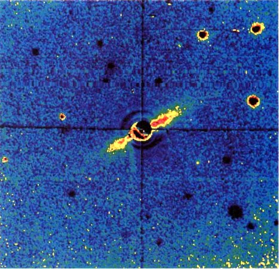
Esta imagen de la estrella Beta Pictoris muestra lo que puede ser otro sistema solar en sus últimas fases de formación. La estrella está tapada en el telescopio (y en el centro de la fotografía) para que destaque el disco más débil de escombros (el rasgo diagonal de color amarillo y rosado). Este disco débil, visto casi de canto, quizá no tenga más que unos centenares de millones de años de edad. Tomaron la imagen Bradford A. Smith (Universidad de Arizona) y Richard J. Terrile (Laboratorio de Propulsión a Chorro) con el telescopio de 2,5 m del Observatorio de Las Campanas, Chile. Cedida por Bradford A. Smith y Richard J. Terrile.
El material de la nebulosa solar frenaba los cometas en el sistema solar interior, alteraba sus órbitas y los obligaba a chocar contra el Sol.
La resistencia al avance ofrecida por la nebulosa solar limpió el sistema solar interior de cometas de órbitas casi circulares, pero no afectó a los cometas situados a distancias mucho mayores. De vez en cuando algún cometa, perturbado gravitatoriamente por los planetas jovianos, se ve obligado a visitar el sistema solar interior. La idea es notable por muchas razones: señala una especie de selección natural en el mundo físico mucho antes de Darwin, propone que en otra época hubo en el sistema solar muchos más objetos que ahora y plantea la existencia hipotética de un gran depósito de cometas situado más allá del planeta conocido más distante.
¿Cómo es posible que los planetas no sufrieran perturbaciones similares y acabaran chocando contra el Sol? Laplace propuso que los planetas se crearon por sucesivas condensaciones de la primitiva nebulosa solar. Se formó un tubo de espacio vacío centrado en la órbita de cada nuevo planeta a medida que éste crecía a costa del material adyacente y barría los escombros nebulares de su entorno. Quizá Laplace jugó con la idea de que debería haber intervalos oscuros en los anillos de Saturno si entre los anillos había lunas. Sin embargo Laplace pidió que su hipótesis no se aceptara precipitadamente, pues las presentaba «con la desconfianza que debería inspirar todo lo que no es consecuencia de la observación ni del cálculo». Probablemente Laplace, enamorado de un posible origen interestelar de los cometas, no pensó que también ellos podían condensarse a partir de la nebulosa solar, al igual que los planetas.
La rotación y la revolución de los satélites siguen la misma dirección que la rotación de los planetas, los planetas giran sobre su eje en el mismo sentido en que giran alrededor del Sol, y las órbitas de los planetas son muy circulares, mientras que los cometas tienen órbitas muy excéntricas: todos estos fenómenos se deducen de modo natural si los respectivos astros — incluyendo o excluyendo los cometas— se condensaron a partir de la misma nube rotatoria y en colapso.
Se considera que la hipótesis de Kant y Laplace es una de las ideas más felices de la ciencia, que primero nos asombra y luego nos conecta en todas direcciones con otros descubrimientos....
«Sobre el origen del sistema planetario», conferencia pronunciada por H. Helmholtz en Heidelberg y Colonia, 1871, publicada en Conferencias populares sobre temas científicos por H. Helmholtz, Nueva York, 1881
Según Kant y Laplace la hipótesis de la nebulosa explicaba las regularidades del sistema solar como el resultado final de una evolución de los mundos. Ambos creían que muchas otras estrellas estaban rodeadas por sistemas planetarios desarrollados a partir de sus propios discos de acreción. En los últimos años, observaciones desde la Tierra y desde el espacio han confirmado que muchas estrellas próximas están rodeadas por discos de acreción. Un observatorio espacial llamado IRAS, Satélite de Astronomía Infrarroja, llevó a cabo el descubrimiento inicial, una iniciativa conjunta anglo-holandesa-norteamericana. Vega, una de las estrellas más brillantes del cielo nocturno, está situada a sólo veintiséis años luz de distancia, y constituyó una auténtica sorpresa descubrir que esta estrella tan estudiada está rodeada por un disco de escombros. El disco aparecía como una fuente de radiación infrarroja alargada y centrada en Vega. Ahora bien, Vega es una estrella bastante más joven que el Sol. Encontrar un disco de acreción alrededor de Vega apoya mucho la idea de que la mayor parte de las estrellas corrientes, o quizá todas las estrellas, están rodeadas por un disco así durante la época de su formación e inmediatamente después. Al final hay algo que limpia el disco: quizá una combinación de presión de radiación, viento estelar y formación planetaria. Pero se necesita tiempo. Y durante este tiempo otros cuerpos pueden condensarse a partir de la nebulosa.
IRAS proporcionó también pruebas de la existencia de un disco de acreción alrededor de una estrella llamada Beta Pictoris, entre otras muchas estrellas. Poco después, Bradford Smith, de la Universidad de Arizona, y Richard Terrile, del Laboratorio de Propulsión a Chorro, instalaron en un telescopio terrestre una cámara especial muy sensible desarrollada para un futuro telescopio espacial y pudieron fotografiar el disco de acreción de Beta Pictoris en luz visible ordinaria. El disco se extiende al menos a 400 u. a. de la estrella central (que aparece tapada para que su radiación no avasalle y desvanezca la luz mucho más débil reflejada por el disco). Si ésta fuera una fotografía del Sol en su primitiva historia, el disco de acreción se extendería mucho más lejos del Sol que la órbita del planeta conocido más lejano (de 30 a 40 u. a.). Smith y Terrile deducen una ausencia relativa de escombros en el interior del disco y sugieren que esta región ha quedado ya barrida por la condensación de los planetas; los cuales, sin embargo, son demasiado pequeños y no pueden verse directamente. Se han encontrado también discos de acreción alrededor de estrellas niñas formadas hace sólo un millón de años.
Parece, pues, que la hipótesis Kant-Laplace se ha confirmado en sus rasgos esenciales, y gracias a una tecnología que habría encantado a sus autores. El Sol, los planetas y sus lunas se condensaron todos a partir de un mismo disco giratorio de gas y polvo en proceso de colapso. Esto explica que todos los planetas giren en el mismo plano en el cual gira el Sol. La opinión de Newton según la cual la regularidad de los movimientos planetarios es una prueba directa de la intervención divina ha quedado superada por otra concepción más evolutiva; esta concepción continúa desde luego determinada por unas leyes de la naturaleza que si queremos podemos atribuir a un dios o a unos dioses. Pero cuando un personaje como el gran Napoleón preguntó a Laplace por qué al explicar el origen e historia del sistema solar no mencionaba en ningún momento a Dios, Laplace contestó: «Señor, no tuve necesidad de tal hipótesis.»
Sigamos ahora una versión moderna de la hipótesis Kant-Laplace en la que prestaremos una atención especial al origen y evolución de los cometas. Por datos espectroscópicos directos sabemos que el gas interestelar está compuesto principalmente de hidrógeno y de helio, aunque es rico en otros materiales, como moléculas orgánicas complejas (véase capítulo VIII). Aparte el gas, el otro constituyente principal del espacio interestelar es una enorme cantidad de motas de polvo. Si dejáramos una de ellas sobre nuestra mesa, sería completamente invisible. Su diámetro típico es de una décima de micrón. Pero si concentramos cantidades enormes de ellas a lo largo de centenares o de miles de años luz, la masa de polvo resultante podrá incluso apagar la luz de las estrellas que tenga detrás. También puede deducirse la composición química de estos granos. Parece que la mayor parte son hielos, silicatos y compuestos orgánicos, en proporción más o menos igual. Esta mezcla de gas y de granos es el material constituyente de todas las nubes interestelares de la Vía Láctea; por tanto, debió de ser también el material de la primitiva nebulosa solar en colapso. El espacio interestelar contiene normalmente mucho más gas que granos de polvo, y lo mismo debió de suceder a la nebulosa solar.
A medida que la nebulosa se contrae y su densidad aumenta, las colisiones mutuas de los granos se hacen más frecuentes. Estos granos, cuando chocan entre sí, tienden a pegarse, debido en parte a su contenido orgánico y de hielos. Los granos grandes se anexionan otros más pequeños. Pero todo este proceso ya no sigue su curso en las tinieblas: el sol primitivo ha empezado a brillar intensamente. En las regiones exteriores del disco la temperatura es todavía tan baja que los hielos exóticos, como el metano o el monóxido de carbono, se mantienen perfectamente estables dentro de las crecientes condensaciones de materia. Pero en el sistema solar muy interior la temperatura es demasiado alta para el hielo de agua. Los hielos que hay sobre los granos se evaporan y se disipan, y la porción que sobrevive está formada principalmente por silicatos. Para que una roca se ponga a hervir hay que acercarla mucho al Sol, a sólo unos millones de kilómetros de distancia. A consecuencia de todo esto, la química del sistema solar interior debió de ser muy distinta de la química del sistema solar exterior: los silicatos predominaron en el interior mientras predominaron los hielos con unos cuantos por ciento de materia orgánica en el exterior.
Grandes acumulaciones de gas y polvo interestelares: la Nebulosa del Águila y la Nebulosa de Eta Carinae, detrás de la constelación del hemisferio austral Carina, a 4 200 años luz de distancia. Detrás de las estrellas brillantes de primer plano vemos una gran concentración de materia interestelar tan opaca que oculta las estrellas de detrás. En estas nubes oscuras, esféricas y filamentosas se forman nebulosas solares y nuevos sistemas planetarios, como sucedió en nuestro sistema hace casi cinco mil millones de años. El color rojo se debe principalmente al gas de hidrógeno de estas nubes interestelares. Cedida por los Observatorios Nacionales de Astronomía Óptica.
Según distintos cálculos, debió de acumularse en toda la nebulosa un gran número de objetos de un kilómetro de diámetro, objetos con el interior rico en silicatos y el exterior rico en hielos. Estos objetos no debieron de generarse primariamente por colisiones entre granos, sino por una inestabilidad gravitatoria fundamental en la nebulosa solar, que formó de modo rápido y preferente objetos de unos kilómetros de diámetro.
Tanto el polvo como el gas entraron en colapso gravitatorio y formaron el disco. Pero se necesita mucha gravedad para retener una molécula tan ligera y de movimientos tan rápidos como el hidrógeno.
Ilustración esquemática de las condensaciones de la primitiva nebulosa solar. Estamos mirando la nebulosa desde arriba y su interior caliente y brillante aparece a la izquierda. Cuanto mayor es la distancia al Sol naciente, menor es la temperatura. Aparecen tres materiales diferentes: metano (CH4) en verde, agua (H2O) en azul y silicatos (SiO2) en anaranjado. Los cubos indican sólidos, las nubes vapores. En las regiones más exteriores de la nebulosa solar, el metano se condensó en forma sólida; más hacia dentro estaba presente sólo como gas. El agua es sólida en forma de hielo muy al interior del sistema solar, y los silicatos sobrevivieron como sólidos casi hasta la superficie del Sol. Es decir que se formaron planetas rocosos en el interior del sistema solar y cuerpos de hielo a mayor distancia. Diagrama de Jon Lomberg/BPS.
En la parte media de la nebulosa, las masas con un tamaño de un kilómetro chocaron entre sí y formaron objetos todavía mayores, hasta que unos cuantos agregados de materia pudieron retener a su alrededor el gas frío. Esta fue la línea evolutiva de los planetas jovianos, cuyo núcleo original de acreción quedó aplastado bajo una vasta esfera de gas. En el sistema solar interior, los granos despojados de su hielo crecieron más lentamente y estuvieron sometidos a temperaturas más altas, y ambos efectos dificultaron la captura del gas por la esferas crecientes de roca. Ésta fue la línea evolutiva de los planetas terrestres.
Los objetos grandes barrieron a los más pequeños situados en órbitas adyacentes. Las velocidades relativas eran bajas; por tanto, en cada caso los dos cuerpos tendían a chocar suavemente y a fusionarse. Al final acabaron produciéndose unos cuantos objetos grandes, en órbitas que ya no se cortaban nunca. Estos objetos se convirtieron en los planetas.
Actuó aquí una especie de selección natural por choque. Al principio tenemos un gran número de objetos de masa creciente en órbitas caóticas, pero el sistema solar se regula y se simplifica mediante un proceso de colisión y crecimiento con sólo ocasionales destrucciones de mundos.

La Nube de Oort se formó durante la primitiva historia solar en parte mediante la eyección de cometas de las proximidades de los planetas gigantes. (La nebulosa solar y los planetas gigantes son excesivamente pequeños y están demasiado lejos para que sean visibles.) Los cuerpos cometarios de las proximidades de Urano y de Neptuno fueron eyectados gravitatoriamente y ayudaron a formar la Nube de Oort, que aquí aparece en azul. Los cuerpos cometarios situados en las proximidades de Júpiter y de Saturno fueron eyectados totalmente fuera del sistema solar (flecha). Diagrama de Jon Lomberg/BPS.
El número de mundos disminuye gradualmente, pasando de los billones a los miles y a las docenas. Si observamos hoy día los planetas, los vemos espaciados decorosamente, con órbitas que en la mayoría de los casos son casi perfectamente circulares; los planetas, excepto Plutón, [26] se mantienen muy separados unos de otros. En cambio, los cuerpos primitivos situados en órbitas muy excéntricas corrían peligro, y muy pronto chocaban con un mundo o eran eyectados del sistema solar. Al final sólo quedaron los planetas desarrollados casualmente en órbitas que los dejaban en cuarentena, lejos de sus vecinos. Nosotros se lo agradecemos; probablemente las colisiones frecuentes y catastróficas entre mundos no son beneficiosas para el desarrollo de la vida.
Los planetas formados de este modo giraban alrededor del Sol en las órbitas que consideramos propias de los planetas actuales. Nadie ha podido demostrar que tuvieran que formarse exactamente nueve planetas, y no, por ejemplo, seis o cuarenta y tres, pues el problema del número definitivo de planetas depende de la estadística de las colisiones, pero el cuadro general es muy adecuado y explica no sólo las órbitas, sino también las diferencias químicas generales entre los planetas terrestres y jovianos que observamos actualmente.
Parece razonable suponer que durante la fase de formación de los planetas mayores hubo, aparte los planetas, muchas condensaciones pequeñas que pueden haber poseído estructuras de tipo cometario... Muchos de estos cuerpos extraviados debieron de acabar absorbidos por los planetas (o por los protoplanetas), pero durante ese período de conglomeración un número determinado de pequeñas condensaciones sufrió inevitablemente grandes perturbaciones que situó estos cuerpos en órbitas de considerable excentricidad. Las perturbaciones en los sucesivos pasos por el perihelio iniciaron entonces un proceso de difusión... en dirección al exterior... Las diminutas perturbaciones estelares necesarias para situar el perihelio fuera de la región de los planetas mayores, no contribuye de modo apreciable al escape de los cometas. El efecto principal es... dejarlos «sujetos» de modo semipermanente en la gran nube que rodea el sistema solar.... Cuando las perturbaciones estelares han desviado la órbita de modo que ésta ya no atraviesa la parte interior del sistema solar, la evaporación cesa prácticamente y los cometas pueden retener fácilmente sus componentes volátiles hasta el momento actual.
J. H. Oort, «Datos empíricos sobre el origen de los cometas», cap. 20, en The Solar System, vol. 4, a cargo de G. P. Kuiper y B.M. Middlehurst, University of Chicago Press, 1965
Si nos representamos mentalmente el disco de gas y de polvo en proceso de colapso aplanándose y girando más aprisa, con las colisiones de los granos generando objetos cada vez mayores y la formación eventual de objetos de un kilómetro que continúan chocando y creciendo, podemos planteamos una pregunta: ¿qué sucedió con todos esos objetos de un kilómetro de diámetro? ¿Ha quedado alguno de ellos? ¿Fueron barridos todos a medida que los planetas crecientes chocaban contra ellos, o es posible que existan en algún lugar, inalterados desde la época de la formación del sistema solar?
Cuando calculamos el destino de esa población original de pequeños mundos, descubrimos que las interacciones gravitatorias con los planetas jovianos acabados de crear eyectaron multitudes de mundos de un kilómetro de diámetro hacia la frontera gravitatoria exterior del sistema solar, como si un lanzador automático de béisbol se hubiera dedicado a lanzar pelotas a las gradas una vez por minuto durante centenares de millones de años. Así nació la nube de Oort. Hay una población de cuerpos primitivos que hace cuatro mil quinientos millones de años quedaron secuestrados tan lejos del Sol que ya no pudo transformarlos nada, ni la vaporización, ni las colisiones. Ellos son la materia con la cual se formó el sistema solar, y nos están esperando en la Nube de Oort. Un único cometa recién llegado de las fronteras del sistema solar constituye por sí solo la respuesta al sueño de un astrónomo.
En la década de 1960, V. S. Safronov, un especialista soviético en la primitiva historia del sistema solar, y en 1981, J. A. Fernández, un joven astrónomo uruguayo, y W.-H. Ip, en Alemania, demostraron que si se formaban en las proximidades de Júpiter y de Saturno cuerpos cometarios primitivos (los objetos que ya conocemos de un kilómetro de diámetro), las perturbaciones gravitatorias de los planetas de gran masa los eyectarían totalmente fuera del sistema solar. Pero si estos protocometas nadan en las proximidades de planetas de menor masa, como Urano y Neptuno, su influencia gravitatoria tendería a eyectar los cuerpos cometarios hacia la Nube de Oort, y no fuera del sistema solar. Por tanto, si esos mundos primitivos, helados y rocosos, se condensaron en todo el sistema solar, la mayor parte sirvieron para formar planetas o acabaron eyectados al espacio interestelar. Pero por lo menos billones de ellos fueron trasladados a la Nube de Oort.
Si los protocometas se hubieran formado en las proximidades de Júpiter, no habrían sobrevivido hielos exóticos, y si se formaron más cerca todavía del Sol, no habrían retenido ni siquiera el hielo corriente de agua. Por consiguiente, dos consideraciones independientes — componer los cometas primitivos con el material adecuado y eyectarlos en órbitas correctas— apuntan hacia un origen que corresponde más o menos a las proximidades de Urano y de Neptuno.
Parece, pues, que los cometas se formaron dentro de la nebulosa solar a partir de granos interestelares, poco antes de que se formaran las lunas y los planetas, hace unos 4600 millones de años. Muchos cometas chocaron entre sí formando cuerpos mayores y sacrificándose para que pudieran nacer los planetas.
También nuestro planeta parece que se formó a partir de estos objetos, pobres en hielo y ricos en rocas. Muchos otros cometas fueron eyectados gravitatoriamente fuera del sistema solar cuando tarde o temprano pasaron cerca de los planetas jovianos, y especialmente de Júpiter. Pero los cálculos demuestran muy claramente que una población importante de los cometas originales fue eyectada a los límites extremos del sistema solar, donde el efecto de mezcla gravitatoria aleatoria producido por el paso de otras estrellas obligó a los cometas a situarse en órbitas más circulares y de inclinaciones aleatorias. No todos los cometas fueron proyectados a la misma periferia del sistema solar, y los cálculos predicen una población importante de cometas en órbitas casi circulares de centenares a decenas de miles de unidades astronómicas. Esta población es bastante inmune a las perturbaciones gravitatorias provocadas por el paso de estrellas. También pueden haberse formado cometas a esas distancias en el disco de acreción de la nebulosa solar. Por tanto, es posible que los astrónomos de la Tierra no hayan observado nunca un habitante típico de la Nube interior de Oort. Es perfectamente posible que fueran eyectados hacia la Nube de Oort cometas de tamaño muy superior a unos cuantos kilómetros de diámetro. Pero su número es menor y también es mucho más raro que veamos a uno de ellos cambiando de dirección y acercándose a nuestro pequeño volumen espacial, pequeño pero bien iluminado.
Si este cuadro que ahora goza de popularidad es correcto, un cometa típico de período corto es un conjunto de materia interestelar condensada durante el origen del sistema solar, hace casi cinco mil millones de años, y eyectada por los planetas recién formados, Urano o Neptuno, hacia las fronteras del sistema solar, donde su órbita acabó circularizada por encuentros gravitatorios con estrellas transeúntes. Unos miles de millones de años después, la influencia gravitatoria acumulativa de otras estrellas y de las nubes interestelares empujó de nuevo al cometa a la región planetaria del sistema solar, donde las aproximaciones a los planetas — ahora especialmente a Júpiter— redujeron la gran órbita elíptica, transformándola en una de dimensiones más modestas propia de un cometa de período corto. El cometa ha tardado mucho en volver a casa y, mientras tanto, el sistema solar ha cambiado de forma considerablemente.
Los cometas, como todo aquello de lo que tenemos datos, nacen, viven durante un tiempo y luego mueren, o por lo menos desaparecen. ¿Qué sucede cuando un cometa de período corto ha recorrido ya su largo trayecto de Urano a la Nube de Oort y de allí a Júpiter? Cada vez que ese cometa atraviesa el sistema solar interior se enfrenta con muchos peligros, y al final los riesgos resultan excesivos. Algunos cometas cada vez que pasan por el perihelio se encogen un metro, hasta que prácticamente no queda nada de ellos. Otros cometas chocan contra algo que se interpone en su camino, se metamorfosean en un mundo diferente o se encaminan hacia el vacío interestelar. Todos estos distintos destinos tienen profundas consecuencias para la vida actual de los planetas y probablemente para nosotros mismos. En los capítulos siguientes estudiamos estas relaciones. En las páginas 233-234 ofrecemos un resumen gráfico de la evolución del sistema solar y del nacimiento y muerte de los cometas.
Con tantas maneras de morir, al cabo de un tiempo ya no quedarían cometas de corto período, si la gravedad de Júpiter no continuara reclutando nuevos cometas y enviándolos hacia el sistema solar interior. Como sucede en la Tierra, una generación nueva, exuberante, pero relativamente inexperta, ocupa los lugares de quienes se van.
Los cometas son estaciones de paso en la evolución de los planetas; son astros que han podido ver mucho y que nos pueden informar de muchas cosas, pues son restos de la formación del sistema solar. Tanto los cometas como los planetas están formados por materiales interestelares. Las dos clases difieren en que los planetas han sufrido enormes reelaboraciones, físicas y químicas, desde los inicios del sistema solar, mientras que los cometas de la Nube de Oort han sido poco afectados por los estragos del tiempo. Esta es la motivación principal de la naciente era de exploración de los cometas con naves espaciales. Cuando estudiamos los cometas, estudiamos nuestros propios orígenes.
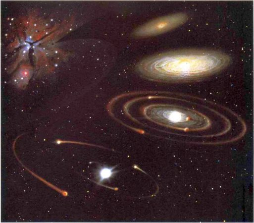
Evolución de los cometas y del sistema solar. En esta imagen se forma y evoluciona una nebulosa solar (arriba a la derecha) dentro de una nube interestelar de gas y polvo (arriba a la izquierda). La colisión de condensaciones de tamaño kilométrico y las consiguientes colisiones y eyecciones acaban creando un sistema solar con un número pequeño de planetas (abajo) y un gran número de cometas (no representados). Pintura de Kazuaki Iwasaki.
Representación esquemática de la evolución de los escombros residuales de pequeño tamaño: objetos de 100 km o menos. Un núcleo cometario (a) transportado al sistema solar interior se convierte en un cometa con una cola desarrollada (d). Algunos cometas chocan con lunas y planetas, produciendo cráteres (0, que también son producidos por objetos rocosos asteroidales que han sobrevivido su propia historia de colisiones (c). Entre otros destinos de los cometas está: la eyección, que los devuelve a la Nube de Oort o al espacio interestelar (b); la vaporización de las capas superiores de hielos, que convierte el núcleo cometario en un asteroide aparentemente rocoso (e); y una vaporización casi completa de los hielos de modo que el cometa se fragmenta y se convierte en una lluvia de meteoros (g). Los escombros planetarios que cayeron sobre la Tierra pudieron contribuir de algún modo al origen de la vida (h). Página siguiente, (a) Michael Carroll; (b) Jon Lomberg; (c) Don Dixon; (d) Dennis di Cicco y Guardia Internacional del Halley; (e) Don Dixon; (0 fotografía de Michael Collins, cedida por la Administración Nacional de Aeronáutica y del Espacio; (g) Don Dixon; (h) Jon Lomberg.
Japeto, una de las lunas exteriores de Saturno fotografiada por el Voyager 2. Si dejamos aparte la Tierra, a medida que nos alejamos del Sol parecen aumentar los datos sobre la presencia de materia orgánica en el sistema solar. Se sabe que el material brillante de la superficie de Japeto está compuesto principalmente de hielo de agua; se cree que el material oscuro es una mancha de materia orgánica compleja, cuyo origen todavía se discute. Cedida por la Administración Nacional de Aeronáutica y del Espacio.
Radiante meteórico en Leo. La mayoría de los meteoros de una lluvia meteórica (representados aquí por flechas que indican la dirección de cada uno a través de la atmósfera terrestre) parecen originarse en un punto determinado del cielo: aquí dentro de la constelación de Leo, cuyas estrellas están representadas en azul. La lluvia se produce cuando la Tierra, que en este punto de su órbita alrededor del Sol apunta en la dirección de la constelación de Leo, se abre paso a través de una nube de escombros meteóricos. Otras lluvias de meteoros tienen sus radiantes en partes diferentes del cielo y tienen lugar en días diferentes del año. Diagrama de Jon I.omberg/BPS.
Capítulo XIII
Los fantasmas de antiguos cometas
A menudo, cuando se acerca el viento, verás las estrellas salir disparadas del cielo y dejar a través de la noche una larga estela de mares ardientes y blanquecinos.
Virgilio, Geórgicas, libro I
Oímos hablar de ellas antes de poder siquiera verlas. «¿Viste anoche las estrellas fugaces?», se preguntan los adultos, y nosotros ignoramos cuánto tiempo pasará hasta que nos dejen quedamos de noche y podamos verlas con nuestros propios ojos. Estrellas fugaces. Las palabras conjuran una visión algo trágica, una estrella que se mantuvo durante años en lo alto, arrogante, y que por alguna secreta transgresión desaparece ante nuestros ojos. Una justicia cósmica.
Cuando ya somos mayores, y tenemos por ejemplo diez años, y nos dejan por fin ver nuestra primera estrella fugaz, el espectáculo nos gusta; son como fuegos artificiales. Quizá se escape de nuestros labios algún «¡Oh!» o algún «¡Ah!». Intentamos recordar si falta alguna de las estrellas que había antes en el cielo. Pero esto cuesta más. Hay tantas estrellas débiles... Sin embargo, caen tantas estrellas fugaces del cielo cada noche que uno se pregunta cómo pueden quedar todavía tantas estrellas en lo alto.
La expresión «estrella fugaz» presupone un modelo del universo: las estrellas pueden soltarse de su unión con el firmamento y convertirse en astros fugaces. Por tanto, las estrellas han de ser cosas pequeñas. Vemos el punto de luz precipitarse desde el horizonte hacia el cénit, brillar cada vez más y luego desvanecerse. ¿A dónde se ha ido? Parece más natural cuando la caída se produce al revés, del cénit hacia el horizonte. Nos sentimos tentados entonces de buscar la estrella fugaz caída, caminando rápidamente hacia el lugar donde parecía terminar el rastro luminoso. Quizá en la comarca vecina. ¿Qué se imagina que encontrará un niño de diez años? ¿Algo de cinco puntas, envuelto en papel de plata, brillando en la nieve? Quizá sí.
«Estrella fugaz» no es, evidentemente, un término científico. La palabra adecuada es meteoro. Un meteoro es un objeto que al caer por la atmósfera terrestre crea un rastro de luz. Esta luz se parece a la de un flash de magnesio. Los meteoros atraviesan realmente el cielo, al revés de los cometas, con los cuales a veces se confunden. Los meteoros son muy diminutos. Si vemos caer uno en solitario esplendor, lo llamamos meteoro esporádico. Si forma parte de un grupo de meteoros que caen todos en la misma noche desde la misma parte del cielo, es un miembro de una lluvia de meteoros. Los meteoros más brillantes se llaman bólidos, y los bólidos más brillantes pueden brillar más que la Luna o incluso que el Sol. Su cabeza brillante tiene forma de lágrima y va acompañada por un rastro de luz y de chispas dispersas. A veces, después de la caída de un bólido en pleno día, puede observarse un rastro de humo oscuro. Un meteoro por definición no llega al suelo. Si seguimos apresuradamente su rastro hacia el horizonte, llegamos a la comarca vecina y conseguimos recuperar una roca recién caída del cielo, tendremos un meteorito, no un meteoro. El sufijo sugiere que los meteoritos provienen de los meteoros y que, por tanto, son más pequeños que ellos, lo cual en general es falso. El gran agujero practicado en Arizona se llama Cráter del Meteoro, pero el objeto que excavó el cráter era demasiado grande para un meteoro. Era un meteorito. Sin embargo, los meteoritos son piezas de otros mundos, y lo lógico es suponer que los meteoros también lo son.
«Los meteoros cuchichean verdes encima nuestro», así reza un bello y evocativo verso del escritor norteamericano Loren Eiseley. De hecho, los meteoros sólo cuchichean consigo mismos. Atraviesan tan silenciosamente las capas superiores del aire que nosotros no podemos oírlos. Como los cometas, y como los niños de los dramas Victorianos, aparecen, pero no se oyen nunca. En cambio, los meteoritos —fragmentos arrancados de los asteroides, o de la Luna, o de Marte o de cometas extinguidos sí pueden oírse; ellos y los bólidos producen ocasionalmente un estallido sónico o un rugido grave, los únicos sonidos procedentes de otro cuerpo celestial que hayan captado nunca, sin más ayuda, los oídos terrestres.
Las culturas precientíficas creían que los meteoros, como los cometas, presagiaban algo, normalmente desgracias inminentes. Se dan también otras explicaciones, pero son más raras. En el África occidental, algunas tradiciones afirman que los meteoros y los meteoritos son algún tipo de excremento solar. Esta idea del pueblo atakpame, como la de que un meteoro es una estrella que cae sobre la tierra, contiene un elemento no despreciable de verdad, como veremos. Los hereros los llaman «piedras zumbantes», lo cual sin duda refleja alguna experiencia directa de una caída meteorítica. En otras tradiciones, los meteoros son las almas de los difuntos que regresan a la Tierra para renacer; o una hacha de trueno; o los heraldos de Mbombei, el ser supremo. Los jukun creen que un meteoro es un regalo de comida transportado de una estrella a otra, un servicio extraterrestre de cocina rápida. Según los kamba, un meteoro es una especie de enseña real, anunciando que los seres que viven en las estrellas están visitando ese día la Tierra. En el África islámica, una estrella fugaz era una daga lanzada por los ángeles para detener a los genios que aspiran a escalar el cielo. Pero en general, en África como en todo el mundo, los meteoros, como los cometas, se han considerado presagios de pestes, desgracias, brujerías y muerte. Los males atribuidos a los meteoros tienden a ser más vulgares que los atribuidos a los cometas, quizá porque los meteoros son mucho más corrientes que los cometas (si somos pacientes, podemos verlos caer en cualquier noche clara).
* * * *
...A través de los cielos vespertinos, tranquilos y puros, de vez en cuando pasa disparado un fuego repentino que arrastra tras de sí los ojos que antes estaban quietos, un fuego parecido a una estrella cambiando de lugar, aunque en la región donde se ha encendido no se pierde nada y dura un tiempo breve.
Dante Alighieri, Paraíso, canto XV
* * * *
Daimaco, en su Tratado de la religión..., dice que.... durante setenta y cinco días sin interrupción pudo verse en los cielos un astro extenso y ardiente, como una nube inflamada, que no se mantenía en reposo, sino que era transportada mediante varios movimientos intrincados e interrumpidos, de modo que los fragmentos encendidos, separados por esta conmoción y dando vueltas se proyectaron en todas direcciones, brillando como las estrellas fugaces. Pero cuando el cuerpo cayó al suelo en este distrito y la gente del lugar, después de recuperarse de su miedo y de su asombro, acudió allí no vio ningún fuego, ni ninguna señal del astro; sólo encontraron una piedra en el suelo, grande, desde luego, pero que no guardaba ninguna proporción, por decirlo así, con aquella vastedad ardiente. Está claro que Daimaco necesita oyentes indulgentes para su historia.
Plutarco, (aprox. de 46 a 120 d. de J.C.)
Lisandro
* * * *
Era una buena noche, sin luna. Los meteoros se distinguían no sólo por su enorme cantidad, sino por su magnificencia intrínseca. No olvidaré nunca aquella noche... Durante las dos o tres horas siguientes presenciamos un espectáculo que no se borrará nunca de mi memoria. El número de estrellas fugaces aumentó de modo paulatino hasta que en ocasiones pudimos ver varias simultáneamente. A veces pasaban sobre nuestra cabeza, a veces a la derecha, a veces a la izquierda, pero todas divergían del este. A medida que la noche avanzaba, la constelación de Leo fue ascendiendo sobre el horizonte, y entonces se hizo evidente el notable carácter de la lluvia. Todos los rastros de los meteoros radiaban desde Leo. A veces parecía que un meteoro viniera casi directamente hacia nosotros y luego su trayectoria quedaba tan recortada que apenas mostraba una longitud apreciable, y parecía una estrella fija corriente cuyo brillo aumentara un momento para desvanecerse rápidamente. En ocasiones, los rastros luminosos se mantenían durante varios minutos después del paso brillante del meteoro, pero gran parte de los rastros de esta lluvia eran evanescentes. Sería imposible decir cuántos miles de meteoros pudieron verse, cada uno con brillo suficiente para provocar una nota de admiración en una noche corriente.
Informe sobre la lluvia de meteoros del 13 y 14 de noviembre de 1866.
Robert Ball, La historia de los Cielos, Londres, 1900
* * * *
Un meteoro cayendo a la Tierra. De Los cielos de Amédée Guillemin, París, 1868.
Los chinos (claro), desde tiempos remotos, conservaron notas meticulosas de lluvias de meteoros, prestando especial atención al color. La descripción más antigua conocida, «Las estrellas cayeron como un chaparrón», está en Chun Qiu, los Anales de primavera y otoño, y se refiere a un hecho acaecido el 23 de marzo de 687 a. de J.C. En la Europa antigua y medieval no hubo prácticamente ningún seguimiento cuidadoso de los meteoros, pero un bólido brillante merecía ya más atención. Por ejemplo, en el año 1000 —año que para muchos era el del fin del mundo—, un testigo contemporáneo relata:
Se abrieron los cielos, y cayó sobre la tierra una especie de antorcha encendida que dejó tras de sí un largo rastro de luz, como el camino que sigue un relámpago. Su brillo fue tan grande que asustó no sólo a quienes estaban en el campo, sino a los que estaban en casa. Mientras que se cerraba lentamente esta abertura en el cielo, los hombres vieron con horror la figura de un dragón, de pies azules, cuya cabeza parecía crecer cada vez más.
El moderno interés científico por los meteoros aumentó gracias a la siguiente relación del científico alemán Alexander von Humboldt, en Camana, Venezuela, correspondiente a la noche del 11 de noviembre de 1799:
Pasadas las dos y media de la madrugada se observaron meteoros de luminosidad extraordinaria en la dirección oriental. M. Bonpland, que se había levantado para disfrutar de la frescura del aire, fue el primero en observarlos. Miles de bólidos y de estrellas fugaces se sucedieron durante un espacio de cuatro horas.... Desde la primera aparición del fenómeno no quedó en el cielo un espacio de extensión igual a tres diámetros de la Luna que no se llenara continuamente de bólidos y estrellas fugaces... Todos estos meteoros dejaban rastros luminosos de cinco a diez grados de longitud...; la fosforescencia de estos rastros o bandas luminosas duraba siete u ocho segundos. Muchas de las estrellas fugaces tenían un núcleo muy claro, tan grande como el disco de Júpiter, del cual saltaban chispas de luz viva... La luz de estos meteoros era blanca, no rojiza... El fenómeno empezó a cesar gradualmente después de las cuatro, y los bólidos y las estrellas fugaces se hicieron menos frecuentes; pero todavía distinguíamos algunas hacia nordeste por su luz blanquecina y la rapidez de sus movimientos un cuarto de hora después de salir el sol.
Humboldt comprobó que muchos observadores, incluyendo algunos en Europa, habían visto la misma maravilla aquella noche, y llegó a la conclusión de que una lluvia de meteoros era un fenómeno que tenía lugar sobre una gran extensión de la superficie terrestre y a gran altitud en la atmósfera. Pero esta conclusión inmediata planteaba numerosos problemas:
Sea cual fuere el origen de estos meteoros luminosos, es difícil imaginar una inflamación instantánea en una región donde hay menos aire que en el vacío de nuestras bombas neumáticas... ¿Depende del estado de la atmósfera la repetición periódica de este gran fenómeno [la lluvia de meteoros]? ¿O de algo que la atmósfera recibe de fuera, mientras la tierra avanza por la eclíptica? Somos tan ignorantes de todo esto como lo era la humanidad en la época de Anaxágoras.
Es desde luego un hecho notable que las lluvias de meteoros se repitan casi en la misma fecha del año —por ejemplo, el 11 de agosto, o el 14 de diciembre—, aunque puedan tardar un día o dos en alcanzar la intensidad máxima y un día o dos en desvanecerse. Podemos salir en una noche clara y contar el número de meteoros brillantes. Si la lluvia es intensa, contaremos docenas de meteoros por segundo. Si la lluvia es más pedestre, tendremos que esperar un minuto entre cada meteoro brillante. Observemos la dirección en la cual parece que lleguen los meteoros. Los meteoros no están distribuidos al azar por el cielo, sino que se concentran hacia un lugar concreto de una constelación determinada (véase la portada de este capítulo). El foco del cual parecen radiar los meteoros se llama radiante. A medida que la constelación sale y se pone, el radiante se desplaza con ella. Por tanto, una lluvia de meteoros está caracterizada por la constelación de la cual parece emerger. La lluvia de Leónidas, hacia el 17 de noviembre, brota de la constelación de Leo; las perseidas, hacia el 11 de agosto, de la constelación de Perseo, y así sucesivamente. ¿Cómo es posible, se preguntaron los astrónomos del siglo XIX, que las lluvias de meteoros sepan en qué día del año están, y cómo ejecutan el ejercicio de prestidigitación consistente en brotar de un diminuto punto del cielo que sale y se pone con las estrellas?
En una lluvia de meteoros los rastros divergen siempre del mismo punto del espacio. Quienes han conducido de noche por una tempestad de nieve ya conocen este fenómeno. Mientras el coche avanza rápidamente a través de los copos de nieve que caen, éstos se precipitan por todos los lados como si divergieran de un punto fijo situado exactamente delante, [27] o a un lado si sopla un viento constante.

Descripción por un testigo presencial de la gran lluvia de meteoros Leónidas del 13 de noviembre de 1833. Según Fletcher Watson, Between the Planets, Harvard University Press, 1956.
Se produce de modo semejante una lluvia de meteoros cuando la Tierra en su rápido movimiento anual alrededor del Sol atraviesa un enjambre de finas partículas.
El astrónomo británico Robert Ball describió vívidamente a fines del siglo pasado el correspondiente proceso:
Imaginemos un enjambre de pequeños objetos vagando por el espacio. Pensemos en un banco de arenques extendido por muchos kilómetros cuadrados del océano y conteniendo incontables miríadas de individuos... El banco de estrellas fugaces es quizá mucho más numeroso que los arenques... Sin embargo, las estrellas fugaces no están muy juntas; probablemente están en promedio a unos cuantos kilómetros de distancia una de otras. El volumen del banco es, por tanto, prodigioso y sus dimensiones se miden por centenares de miles de kilómetros. [28]
Una lluvia de meteoros según la representó Camille Flammarion en Astronomie Populaire, París, 1880. La fecha dada es el 27 de noviembre de 1872; si por un error de imprenta el 27 es el 17, se trataría de una lluvia de Leónidas.
Se tuvo una respuesta al problema del origen de estos bancos de meteoros que pasan cerca de la Tierra, cuando se descubrió que las lluvias de meteoros están relacionadas con los cometas, especialmente con cometas difuntos como el cometa Biela/Gambart (véase capítulo V). Hay actualmente buenas pruebas de que en las colas de polvo de los cometas abundan partículas finas, al igual que en la coma. Las partículas de tamaño tan grande que la presión de radiación y el viento solar no consiguen eliminarlas continúan desplazándose alrededor del Sol como microplanetas separados, compartiendo esencialmente la misma órbita que el cometa padre. Los surtidores y los sucesivos crecimientos de las comas imprimen a algunas partículas una velocidad algo mayor que la del núcleo cometario y a otras partículas una velocidad algo menor. En consecuencia, los períodos de las partículas alrededor del Sol son algo diferentes. Una partícula algo más lenta que el resto se retrasará un poco después de un paso por el perihelio, algo más después de dos, y así sucesivamente. Al final, las partículas se habrán dispersado por toda la longitud de la órbita, extendiéndose también un poco en las dimensiones laterales. Además, las partículas pequeñas experimentan unas fuerzas de radiación que dejan indiferentes a las mayores, y la gravedad de los planetas cercanos también contribuye a dispersar la corriente de partículas. Los pequeños meteoros de un enjambre pueden girar alrededor del Sol, hombro con hombro en la misma órbita, sin que prácticamente se produzcan colisiones, como paracaidistas de apertura retardada cayendo en grupo desde un avión. A medida que un cometa se disipa lentamente, llena su órbita de escombros.
En la mayor parte de los casos los bancos de meteoros de una órbita cometaria son totalmente invisibles para los astrónomos de la Tierra. Pero en ocasiones la órbita del cometa corta casualmente la órbita de la Tierra. La Tierra está en un sector concreto de su órbita en cada día del calendario; por tanto, la consiguiente lluvia de meteoros ha de producirse en un día concreto del calendario anual (véase página 230, abajo). Las principales corrientes meteóricas son actualmente las perseidas, las Leónidas, las Oriónidas y las Gemínidas. También las Táuridas, relacionadas con el cometa periódico Encke. Hay dos corrientes meteóricas relacionadas con el cometa Halley (véase Apéndice 3).

Un cometa todavía activo después de varios pasos sucesivos por el perihelio ha empezado a fragmentarse, y toda su órbita se llena de escombros cometarios finos. Las partículas ocupan ahora un volumen más ancho que la órbita cometaria original. El cometa pasa muy por detrás de la órbita de la Tierra en este diagrama, pero los escombros interceptan la órbita de la Tierra, y en una fecha concreta del año, la Tierra interceptará los escombros cometarios produciendo una lluvia de meteoros.
Todos los cometas, cuando mueren, dejan escombros a su paso. Algunas órbitas cruzan la de la Tierra. Las lluvias de meteoros son los fantasmas de los cometas que han pasado y que están pasando.
La Tierra no atraviesa la mayoría de corrientes meteóricas creadas por los cometas en desintegración. Se producen lluvias de meteoros en los pocos casos en los que la órbita cometaria corta la órbita terrestre. Aparecen aquí representados pequeños fragmentos de las órbitas de varios cometas, llenas de meteoros, en las regiones en que interceptan la órbita de la Tierra. Cada intersección con los escombros de un cometa diferente corresponde a una fecha distinta del año. La Tierra está representada en azul. Diagramas de Jon Lomberg/BPS.
Ball continuó diciendo:
Los meteoros no pueden escoger su propio camino, como el banco de arenques, porque han de seguir la ruta que el Sol les prescribe. Cada uno avanza por su propia elipse con completa independencia de sus vecinos... No los vemos nunca, excepto cuando la Tierra los atrapa. Cada treinta y tres años la Tierra recoge una muestra de estos meteoros con casi tanta eficacia como los pescadores pescan arenques, y de modo muy parecido, puesto que mientras el pescador extiende la red que acabará con la vida de los peces, la Tierra tiene una atmósfera donde perecen los meteoros. Se dice que no hay peligro de agotar el suministro de arenques porque la cantidad que cogen los pescadores no es nada comparada con la profusión con que abundan en el océano. Lo mismo podemos decir en relación a los meteoros.
Del mismo modo que Tycho Brahe pudo determinar que los cometas pasaban muy lejos de la Luna observando su paralaje (véase capítulo II), las observaciones fotográficas de un mismo meteoro realizadas por dos cámaras separadas en la Tierra permiten determinar la altura del rastro del meteoro. El valor típico se sitúa hacia los cien kilómetros. A esta altura, la presión atmosférica es un 0,00003 por ciento de la de la superficie de la Tierra; Humboldt tenía toda la razón al preguntarse cómo podía dejar un rastro tan brillante el paso de un cuerpo por un aire tan enrarecido.
Imaginemos que tenemos en la mano un trocito de cometa (quizá únicamente un grano de polvo), muy por encima de la Tierra, y que después lo soltamos. Como es lógico, a medida que cae su velocidad aumenta. Cuando llega a la atmósfera superior de la Tierra estará moviéndose a la velocidad de escape, unos 11 kilómetros por segundo. Normalmente, un fragmento de cometa se desplaza a velocidad muy alta en relación a la Tierra antes de ser atraído por la gravedad terrestre y, por tanto, chocará con ella a velocidad mayor. Una partícula situada en una órbita muy excéntrica que se desplaza en dirección retrógrada y que choca con el hemisferio matutino puede estar moviéndose hasta a 72 kilómetros por segundo. En cambio, la velocidad típica de salida de una bala de escopeta por la boca del arma es de 1 kilómetro por segundo. Cuando un meteoro entra en la atmósfera terrestre, la fricción con el aire enrarecido presente a unos 100 kilómetros de altura lo calienta hasta la incandescencia. La espectroscopia de los meteoros muestra líneas espectrales de hierro, de magnesio, de silicio y de una serie de elementos que constituyen las rocas corrientes. Antes de entrar en la atmósfera terrestre, el meteoro podía contener compuestos orgánicos e incluso algunos hielos, pero por lo menos continúa presente el componente rocoso, mientras los meteoros se queman y mueren.
Las partículas grandes, del tamaño de un puño o mayores, cuando pasan a través de la atmósfera terrestre se calientan por la fricción con el aire y chamuscan, funden o queman una delgada corteza. Este proceso protege el interior del meteorito, del mismo modo que el escudo de ablación de una nave espacial protege a los astronautas durante su reentrada. El resto del objeto sobrevive después de pasar por la atmósfera terrestre y alcanza el suelo, donde, una vez recuperado, se denomina meteorito.
Las partículas muy pequeñas pueden radiar su calor rápidamente, porque su superficie es grande comparada con su masa y, por tanto, no se funden nunca. Se limitan a reducir su velocidad hacia los 100 kilómetros de altitud, donde contribuyen a las raras nubes «noctilucientes» que reflejan la luz del Sol hacia la cara nocturna de la Tierra. Luego van cayendo lentamente durante años a través de una barrera de moléculas de aire que las bombardean y tienden a mantenerlas en suspensión. Al final entran en la circulación de la atmósfera inferior y son transportadas a la superficie de la Tierra. Se denominan micrometeoritos.
Las partículas de tamaño intermedio son demasiado pequeñas para sobrevivir el chamuscado de una capa exterior, por delgada que sea, y demasiado grandes para radiar al exterior todo el calor de fricción y caer flotando suavemente. Estas partículas se queman del todo durante su entrada en la atmósfera. Son los meteoros.
Con técnicas de radar y una red de cámaras rápidas puede medirse la deceleración que experimentan los meteoros cuando entran en la atmósfera terrestre, y su deflagración. De estos datos se deriva información sobre la masa y la densidad. Los meteoros visuales típicos tienen un tamaño de un milímetro, o son mayores que un guisante pequeño. Un bólido tan brillante como la estrella más brillante pesa generalmente menos de cien gramos. Un objeto poroso presenta más superficie que un objeto denso de igual masa, y, por tanto, se decelera de modo distinto. Pueden determinarse así las densidades de los meteoros de lluvias distintas. Por ejemplo, los Gemínidas son meteoros de densidad igual a la de los materiales corrientes de la Tierra, un gramo aproximadamente por centímetro cúbico. Sin embargo, la mayor parte de los meteoros tienen densidades mucho más bajas. El cometa Giacobini-Zinner es la fuente supuesta de la lluvia de meteoros Dracónidas (o Giacobínidas), que llegó a ser formidable, aunque ahora no sea muy impresionante, y que tiene lugar aproximadamente en la tarde de cada 9 de octubre. La densidad de los Dracónidas es muy baja, posiblemente de sólo 0,01 g por centímetro cúbico. Es imposible que estos meteoroides fueran eyectados violentamente de su cuerpo padre, porque no habrían mantenido estructuras tan frágiles. Parece, pues, que en la atmósfera terrestre entran por lo menos dos poblaciones de objetos: una muy parecida a los meteoritos que se recuperan y la otra formada por estructuras porosas muy frágiles que son distintas de los objetos macroscópicos hechos en la Tierra. Hay probablemente una gama continua de cuerpos de densidad intermedia entre estos dos extremos.
Un enjambre de escombros cometarios cae en la atmósfera terrestre. Las partículas muy pequeñas descienden flotando como una niebla fina, los fragmentos grandes sobreviven a la entrada y llegan ligeramente chamuscados a la superficie terrestre, y las partículas de tamaño intermedio se queman en forma de meteoros. Pintura de Don Dixon.
Las modernas técnicas fotográficas y de radar permiten calcular la velocidad y dirección de donde llega un meteoro, y luego extraer de estos datos la órbita del meteoro. Los meteoros esporádicos —los que no tienen relación con lluvias de meteoros tienden a estar situados en el plano de la eclíptica y a girar alrededor del Sol en la misma dirección que los planetas y los cometas de período corto.
Meteoros fundiéndose y quemándose al entrar en la atmósfera superior de la Tierra. De Diversiones astronómicas de H. W. Warren, 1879.
En cambio, los meteoros de las lluvias tienen excentricidades e inclinaciones orbitales mucho mayores, aunque sin duda algunos están situados en el plano eclíptico. También aquí se ha producido una especie de selección natural.
Litografía de Honoré Daumier titulada El cometa de 1847. Sin embargo, la excitación de la mujer indica que el visitante cae a gran velocidad por el cielo, en cuyo caso no sería un cometa sino un meteoro. Puesto que no conocemos con anticipación la posición precisa de cada meteoro, es más razonable utilizar un telescopio de gran campo en lugar de un catalejo como el representado aquí. De la colección de D. K. Yeomans.
Los cometas de período corto con pequeñas inclinaciones producen corrientes de meteoros que tienden a ser perturbadas por la gravedad de Júpiter, y algunos de los fragmentos, distribuidos en una gama de órbitas, se convierten en meteoros esporádicos. Pero los cometas con grandes inclinaciones orbitales tienden a evitar Júpiter, y las corrientes de meteoros que producen tienden a mantenerse intactas durante mucho tiempo. Ni uno solo de los más de cuarenta mil rastros de meteoros estudiados presenta una órbita originada más allá del sistema solar.
Sólo se han recuperado tres meteoritos que son restos de bólidos: Lost City, Pribram e Innisfree, cada uno de los cuales recibe el nombre de la localidad cerca de la cual se recuperó. Estos objetos tienden a ser meteoritos pétreos corrientes que derivan del cinturón de asteroides interior a la órbita de Júpiter.
Los meteoros brillantes que llegan de más allá de Júpiter han recibido el nombre inspirador de bólidos transjovianos. Son tan frágiles como los meteoros más delicados conocidos, como puede deducirse de sus características de entrada. Si pusiéramos con cuidado una pieza de este material sobre una mesa, se hundiría bajo su propio peso. Es posible que originalmente, en el cometa padre, los espacios dentro de estas bolas de polvo de silicatos estuvieran llenos de hielos y de compuestos orgánicos.
* * * *
El día 5 de mayo de 1960, el primer ministro soviético Nikita Jruschov anunció escuetamente que un avión norteamericano había violado cuatro días antes el espacio aéreo soviético y había sido derribado. Unas horas después, el mismo 5 de mayo, la recién formada Administración Nacional de Aeronáutica y del Espacio de Estados Unidos', NASA, publicó una declaración relacionada con la anterior que revelaba, por primera vez para muchos, la existencia de un nuevo tipo de avión llamado U-2. Este avión podía volar a mucha altura. Un avión de investigación de este tipo se había perdido sobre la región «montañosa y agreste» del lago Van, en Turquía, mientras estudiaba «el estado meteorológico a gran altura», dijo la NASA. Se había perdido, quizá accidentalmente, y había atravesado la frontera de la URSS. El avión recibía en el comunicado nombres como «banco volante de pruebas» y «laboratorio meteorológico volante». La NASA lo había utilizado entre otras cosas para determinar «la concentración de ciertos elementos en la atmósfera». Lincoln White, portavoz del Departamento de Estado, dijo que «no existía en absoluto la intención de violar deliberadamente el espacio aéreo soviético, ni nunca se había intentado hacerlo». Tres días después, el señor Jruschov anunció que el avión U-2 había sido derribado cerca de Sverdlovsk, a más de dos mil kilómetros de distancia del lago Van. Se había recuperado ileso al piloto Francis Gary Powers y parte de su equipo fotográfico. Powers admitió que trabajaba para la Agencia Central de Inteligencia de Estados Unidos, la CIA, y que estaba realizando uno de los atrevidos vuelos de espionaje de la CIA sobre la Unión Soviética. Resultó que el avión carecía de equipo para analizar la atmósfera, pero Jruschov mostró parte del equipo que Powers reconoció haber traído consigo, como una pistola con silenciador, una cápsula de veneno que debía tragar en caso de captura, siete mil quinientos rublos en moneda soviética, moneda francesa, de Alemania occidental e italiana, tres relojes, y «siete anillos de oro para señora». Jruschov preguntó:
¿Qué necesidad tenía de todo esto en las capas superiores de la atmósfera? Quizá el piloto debía volar más arriba, hasta Marte, y pretendía llevar por el mal camino a las marcianas. Vean lo bien equipados que van los pilotos norteamericanos cuando se disponen a emprender un vuelo para tomar muestras de aire en las capas superiores de la atmósfera.
La respuesta norteamericana, que ya no repitió la tapadera inventada por la NASA unos cuantos días antes, y mucho menos las afirmaciones del señor White, hablaba de la importancia de obtener datos sobre la preparación militar soviética, debido a la naturaleza cerrada de la sociedad soviética. El incidente es históricamente importante por unos cuantos motivos, entre ellos porque dio al traste con la conferencia en la cumbre prevista entre Jruschov y el presidente norteamericano Dwight Eisenhower. También puso en peligro la integridad de la Administración Nacional de Aeronáutica y del Espacio, un organismo nuevo y en rápido crecimiento, que según intención explícita de Eisenhower tenía que haberse dedicado a la investigación pacífica en ciencia y tecnología.
El U-2 estaba diseñado para efectuar reconocimientos fotográficos desde una altitud tal que no fuera fácil derribarlo. Pero cuando los misiles tierra-aire de los soviéticos mejoraron, los satélites de reconocimiento suplantaron básicamente a los U-2 en el trabajo de inteligencia.
El avión U-2, diseñado para realizar vuelos de vigilancia para la Agencia Central de Inteligencia, y dedicado actualmente a investigaciones científicas por la Administración Nacional de Aeronáutica y del Espacio, vuela por la estratosfera para capturar restos cometarios. Cedida por el Centro de Investigaciones Ames, Administración Nacional de Aeronáutica y del Espacio.
Cuando los U-2 quedaron anticuados para el espionaje, empezaron a aprovecharse en serio para la ciencia. Constituye, pues, una nota ligeramente irónica de la historia que muchos años después el U-2 se convirtiera en la clave de descubrimientos fundamentales, algunos de grandes consecuencias, en lo que podría llamarse de modo adecuado investigación de la alta atmósfera, pero que fue más exactamente la investigación que por primera vez en la historia humana permitió capturar piezas de un cometa y llevarlas a casa para examinarlas. El personaje que impulsó este programa fue Donald Brownlee, de la Universidad de Washington, en Seattle.
Un U-2 despega del centro de Investigación Ames de la NASA en la estación aeronaval de Moffett Field, cerca de Mountain View, California. El avión tiene unas alas inmensas en comparación con su tamaño; parece algo desgarbado, como si fuera un cruce entre un planeador y un avión a reacción. Sobre un poste montado en un ala hay unas superficies tapadas de recogida, formadas por grasa pegajosa de silicona. Las superficies se abren a la corriente de aire cuando el U-2 ha alcanzado una altitud de unos veinte mil metros. El avión vuela más o menos al azar, porque no puede saber en qué lugar de la estratosfera hay posibles concentraciones de polvo fino cometario o meteorítico. El avión, en cada hora de vuelo que pasa exponiendo la placa pegajosa contra el aire que le llega, recoge aproximadamente una partícula grande (más de diez micrones de diámetro y, por tanto, todavía invisible al ojo) y muchas partículas más pequeñas. Luego la placa se tapa automáticamente, el avión baja alejándose del cielo casi negro y el botín de polvo estratosférico se examina al microscopio en la Tierra.
Sucede raramente que una partícula levantada a poca altura de la superficie de la Tierra acabe algún día volando en la estratosfera. La lluvia o el viento tiende a eliminar esas partículas antes de que alcancen grandes altitudes.
Superficie pegajosa de captación sujeta al ala de un avión U-2 que recoge restos cometarios a alturas estratosféricas. Cedida por el Centro de Investigaciones Ames, Administración Nacional de Aeronáutica y del Espacio.
Hay una barrera natural que se opone a la circulación entre la atmósfera inferior y la superior. (Esta restricción desaparece en una guerra nuclear, pero esto constituye otra historia.) Mientras los hombres se muestren algo prudentes al contaminar la atmósfera con partículas finas, y si no escogemos los días que siguen a una explosión volcánica importante, la atmósfera debería ser una región útil para recoger de modo natural las partículas extraterrestres que caen a la Tierra.
Sacamos la placa pegajosa del ala del U-2 y la ponemos bajo el microscopio. Contamos el número de partículas de varios tamaños, las fotografiamos, intentamos someterlas a algún análisis químico, lo cual es difícil por la falta de partículas grandes. Por el mismo motivo, procuramos evitar las pruebas destructivas. Hay muchos científicos más que hacen cola esperando examinar el material después de nosotros. Las partículas entre examen y examen se guardan en la vieja instalación de conservación lunar del Centro de Vuelo Espacial Johnson de la NASA, en Houston, donde se guardan también las rocas que los astronautas del proyecto Apollo trajeron de la Luna. En esta institución trabaja la única persona en el mundo cuyo título oficial es «conservador de polvo cósmico».
Un tipo de polvo que encontramos es muy sencillo: partículas aproximadamente esféricas de óxido puro de aluminio, recogidas a veinte mil metros de altitud. ¿Cómo llegaron hasta allí? Los cohetes de carburante sólido, fabricados principalmente por americanos, soviéticos y franceses, generan estas partículas a medida que aceleran por la estratosfera de camino hacia lugares más distantes. Las placas pegajosas han capturado partículas mucho más extrañas.
Cuando se examina con un aumento muy grande el tipo más abundante de partículas de polvo atmosférico, resulta ser un agregado irregular de partículas todavía más diminutas, cada una de una décima de micrón de diámetro aproximadamente; cien mil de ellas puestas una a continuación de otra tendrían igual longitud que la uña de nuestro dedo meñique. No hay ningún proceso industrial o biológico conocido que produzca partículas así. Aunque existiera, no hay manera de transportar tales partículas a la estratosfera en tal cantidad. Toda una serie de pruebas físicas y químicas, rastros de rayos cósmicos, por ejemplo, o proporciones níquel/hierro, señalan unánimemente en la misma dirección: estas partículas proceden de otro mundo. Puesto que la fuente principal de partículas finas en nuestra región del espacio son los cometas, parece probable que estemos contemplando la materia original de los cometas.
No estamos seguros de la causa que mantiene adheridas entre sí estas partículas. Quizá sobre sus superficies hubo (o todavía hay) algún material adhesivo. Basta una ojeada para comprender que se trata de estructuras frágiles. Si les ponemos mucho peso encima, se hunden. Si estos agregados hubiesen vivido alguna vez a gran profundidad en el interior de algún pequeño mundo, hubiesen quedado aplastadas, a no ser que otro material, más volátil, hoy desaparecido, hubiera llenado los espacios. Este es otro motivo que sitúa el origen de las partículas de polvo estratosférico en las colas de los cometas. El hielo se ha evaporado ya en su totalidad, y probablemente también se han perdido algunos de los compuestos orgánicos.
Probables restos cometarios recogidos a alturas estratosféricas y examinados con un microscopio electrónico de barrido. Izquierda', vemos muchas partículas finas pegadas con una morfología semejante a un racimo de uva. El aumento es de 5 400 y la pequeña barra horizontal mide un micrón (diezmilésima de centímetro). Derecha', tenemos un primer plano de una partícula submicrónica que podría ser un grano interestelar no transformado. Cedidas por Don Brownlee y Maya Wheelock, Universidad de Washington y Administración Nacional de Aeronáutica y del Espacio.
Miremos de nuevo estos diminutos granos. Probablemente estaban en la superficie de un núcleo cometario. Si pudiéramos ver de cerca un fragmento no cambiado del interior de un núcleo cometario, es seguro que encontraríamos estos racimos de partículas pequeñas y oscuras, pero con todos los huecos y alrededores llenos de hielo.
Diagrama esquemático de la evolución de una superficie cometaria, vista muy de cerca. La superficie lejos del Sol es una mezcla íntima de hielo (pintado aquí en azul) y material rocoso y orgánico (pintado aquí en marrón). A medida que el cometa se acerca al Sol las temperaturas aumentan hasta que los hielos empiezan a vaporizarse (arriba a la izquierda). Pronto (arriba a la derecha), la mayor parte de los hielos superficiales se han perdido al espacio y sólo quedan materiales rocosos y orgánicos (abajo a la izquierda). Fragmentos de esta composición se desprenden del cometa; cuando uno de ellos entra en la atmósfera de la Tierra (abajo a la derecha) se convierte en un meteoro, o si es muy grande en un bólido. Pinturas de Kim Poor.
A medida que el tiempo transcurre en el sistema solar interior, el hielo se evapora, las partículas son arrastradas al espacio y algunas de ellas entran al final por puro accidente en la atmósfera de la Tierra.
El 90 por ciento de las partículas esponjosas de probable origen cometario recogidas de este modo son agregados, como vemos en la figura superior, de diminutos granos oscuros submicroscópicos, una mezcla íntima de silicatos y de otros minerales con complejas moléculas orgánicas. Estos granos individuales tienen aproximadamente el mismo tamaño que el polvo que llena los espacios interestelares. Existe, pues, cierta posibilidad de que tengamos delante nuestro una muestra del material original con el cual se formó el sistema solar. Todavía no disponemos de una cantidad suficiente de granos para estar seguros. El U-2 y sus sucesores han de llevar a cabo programas de recogida a una escala mucho mayor, tanto para acumular suficiente material como para efectuar toda una batería de pruebas físicas y químicas, y para buscar partículas más raras que puedan deparamos algunas sorpresas. En último extremo, desearemos comparar estas partículas con otras recogidas en el núcleo mismo o en la coma de un cometa. Pero de momento parece por lo menos posible que estemos observando por primera vez los materiales constructivos que formaron los planetas.
Un cometa choca con la superficie luminosa del Sol. Los rasgos oscuros son manchas solares con campos magnéticos intensificados localmente. En ningún lugar del Sol hay sólidos o líquidos; todo el Sol es gaseoso. Pintura de Anne Norcia.
Capítulo XIV
Fuegos dispersos y mundos despedazados
A menudo, cuando el Sol se ha puesto, pueden observarse fuegos dispersos no lejos de él.
SÉNECA, Cuestiones naturales, libro 7, «Cometas»
Todos los ángeles cantaban con voz desafinada y ronca porque no tenían en qué ocuparse, excepto dar cuerda al Sol y a la Luna o doblegar una o dos estrellas jóvenes y rebeldes, o un cometa que, como un potro salvaje, se soltaba muy pronto de sus ataduras y corría por el azul etéreo partiendo algún planeta con su bella cola, como a veces juguetea con un bote una ballena.
Lord Byron, Visión del juicio, 1822
George-Louis Leclerc, conde de Buffon, fue uno de los primeros científicos que, a partir del registro de las rocas, intentó reconstruir la historia de la Tierra como una sucesión de épocas geológicas. También propuso que en épocas antiguas un cuerpo de gran masa, al que llamó cometa, chocó con el Sol, proyectando al espacio grandes porciones de materia ardiente, que se enfrió, se condensó y formó los planetas y sus lunas. Laplace pronto demostró que esta reconstrucción de los hechos no podía explicar las regularidades orbitales del sistema solar; pero la mención de Buffon es la primera en la historia de la ciencia de un choque de materia cometaria con el Sol, y el primer intento moderno de explicar cómo mueren por lo menos algunos cometas. Vamos a describir en este capítulo cuatro de los múltiples destinos de los cometas: chocar directamente contra el Sol, desintegrarse y caer sus restos en espiral hacia el Sol, caer sobre las lunas y los planetas y transformarse en otro mundo.
En el siglo XIX, cuando todo el mundo ignoraba que existiera algo llamado núcleo atómico, y no existía desde luego la ciencia de la física nuclear, estuvo muy extendida la idea de que el Sol brillaba gracias a los meteoros. Según esta teoría, los meteoros se precipitaban hacia el Sol y le entregaban su energía cinética, calentando todavía más su ardiente superficie, la cual, en compensación, radiaba sumisamente luz y calor a los menesterosos habitantes de la Tierra. Pero los meteoros son los escombros y a veces las mortajas de cometas muertos y moribundos; por tanto, si la anterior opinión fuera correcta, los meteoros serían los mantenedores de la vida en la Tierra. En realidad, los meteoros proporcionan una parte tristemente reducida de la luz solar, y el Sol brilla gracias a la fusión del hidrógeno, aunque es cierto que los cometas y sus restos chocan regularmente con el Sol, la Luna y los planetas, y pueden ser responsables, en varios sentidos, de la vida en la Tierra.
* * * *
El gran cometa de septiembre (1882 II) estuvo muy a punto de chocar contra el Sol, y puede decirse que lo pasó rozando. Antes de pasar por el perihelio presentaba un único núcleo. Después, cuando pasó de nuevo entre los planetas dirigiéndose hacia el exterior, apareció fragmentado en cuatro núcleos separados, que se fueron disgregando gradualmente uno de otro. El Sol tira de la cara cercana de un cometa con algo más de fuerza que de la cara opuesta; además, la cara dirigida hacia el Sol siente más calor que la cara nocturna. Si la estructura es muy frágil y el cometa pasa muy cerca del Sol, estas dos tensiones desiguales pueden bastar para romper el cometa en dos o más piezas. Los períodos calculados del regreso de estos componentes están situados todos entre quinientos y novecientos años en el futuro, pero separados por intervalos de casi un siglo. Se ha predicho que los cuatro fragmentos, cada uno de tamaño considerable, volverán con una incerteza considerable en los años 2546, 2651, 2757 y 2841. Las generaciones de observadores de estas épocas remotas verán cuatro cometas, separados aproximadamente por un siglo de distancia, saliendo de una misma y pequeña región del espacio y dirigiéndose hacia el Sol.
Por su parte, el cometa de 1882 es un miembro de la llamada familia Kreutz de cometas de corto perihelio que llegan episódicamente del mismo lugar del cielo. Los grandes cometas de corto perihelio de 1668, 1843, 1880 y 1887 (este último carecía al parecer de cabeza, como el jinete fantasmal visto por Ichabod Crane) forman parte de esta familia, como otros visitantes mucho más recientes: 1963 V y 1970 VI. Es natural plantearse la posibilidad de que todos ellos sean fragmentos de un cometa ancestral de tamaño todavía mayor que en otra época se acercó demasiado al Sol y fue despedazado por las mareas solares.
Cuanto más se acerca un cometa al Sol, más intensa es esta fuerza disruptiva de marea. El cometa Ikeya-Seki (1965 VIII) era también un miembro diurno de la familia Kreutz de perihelio corto y se rompió en dos partes poco después de pasar por el perihelio. El gran cometa de diciembre de 1680, estudiado por Newton y Halley, pasó a menos de 100.000 km de la superficie del Sol, a una distancia bastante inferior a la que separa la Luna de la Tierra [29]; y no se fragmentó al pasar por el perihelio. En cambio, el cometa West (1976 VI), que no se acercó a menos de 30.000.000 de km del Sol, se rompió en cuatro fragmentos que están separándose lentamente uno de otro a una velocidad superior a su velocidad mutua de escape. Por tanto, las mareas gravitatorias del Sol o el calentamiento desigual no pueden ser las únicas causas de la fragmentación de los cometas. Todavía ignoramos por qué se fragmentan los cometas.
Se descubre un cometa cerca del Sol durante un eclipse solar total. Las deformaciones de marea están fragmentando el núcleo cometario. Pintura de Anne Norcia.
El cometa West Serie de cuatro exposiciones diferentes tomadas en tres noches distintas de 1976. En las exposiciones prolongadas la coma exterior se destaca, pero se pierden los detalles de la coma interior. En las exposiciones más cortas se observa la fragmentación del núcleo cometario. A medida que el núcleo se fragmentó sus componentes se fueron separando. Cada componente mostró un brillo variable de una noche a la siguiente y desarrolló una cola separada. Fotografías tomadas con el instrumento de 154 cm. Observatorio del Monte Lemmon, por Stephen M. Larson. Cedidas por el Laboratorio Lunar y Planetario, Universidad de Arizona.
La fragmentación y la emisión de chorros pueden estar relacionadas (véase capítulo VII). Cuando el cometa West se rompió, los fragmentos individuales aumentaron perceptiblemente de brillo y proyectaron grandes cantidades de polvo al espacio, siendo ésta la primera de una serie de unas doce explosiones. El 180 por ciento de los cometas que se fragmentan lo hacen cuando ya están lejos del Sol. El cometa Wirtanen se fragmentó en 1957 algo al interior de la órbita de Saturno. El cometa Biela/Gambart es un caso semejante. Estas fragmentaciones pueden deberse a la vaporización de hielos exóticos o a colisiones con rocas interplanetarias que no pueden detectarse. Todos estos cometas de perihelio corto pasan a menos de medio millón de kilómetros de la superficie solar y penetran dentro del gas enrarecido y caliente de la corona solar, donde la temperatura se sitúa hacia el millón de grados. Pero el cometa pasa poco tiempo en la corona solar y el gas terriblemente caliente que la forma está muy enrarecido, por lo que probablemente el responsable de la fragmentación de esos cometas es más la gravedad del Sol que su calor.
* * * *
Los artículos científicos tienden a expresarse con moderación, y la aparición de un signo de admiración es rara, excepto en los artículos matemáticos, donde representa algo muy distinto. Aquí tenemos una de las excepciones. Brian Marsden, del Centro de Astrofísica de Cambridge, Massachusetts, es el director de la oficina de la Unión Astronómica Internacional, que comunica a los astrónomos de todo el mundo el descubrimiento de un nuevo cometa y muchas cosas más. Marsden ha hecho personalmente varias contribuciones importantes a nuestra comprensión de los cometas. En un artículo científico(*) publicado en la década de 1960, Marsden discute los cometas de perihelio corto y descubre que dos miembros, 1882 II y 1965 II, parecen haberse separado cerca del afelio. Pero el afelio está situado mucho más allá de la órbita de Neptuno, a una distancia del Sol desconcertante:
¡La mayor parte de los cometas cuya división se ha observado lo han hecho sin motivos obvios, pero uno exige realmente una explicación cuando comprueba que la velocidad de separación es casi el 20 por ciento de la velocidad del mismo planeta! Apenas merece consideración la posibilidad de una colisión con algún objeto asteroidal a 200 u. a. del Sol y a 100 u. a. por encima del plano de la eclíptica, aunque el hecho sólo tendría que haber sucedido una vez.
Es difícil entender una explosión violenta a 200 u. a. del Sol, virtualmente en la noche interestelar. Las colisiones deberían ser allí muy raras. El problema ha quedado irresuelto.
(*) B. G. Marsden, «The Sungrazing Comet Group», Astronomical Journal, vol. 72, p. 1.170, 1967.
* * * *
Si algunos cometas están tan a punto de chocar contra el Sol, ¿podría ser que otros cometas se precipitaran directamente sobre él? En ocasiones, los cometas se acercan al Sol, se pierden en su resplandor y no vuelven a verse más; pero quizá ha sucedido que la gravedad del Sol los ha fragmentado por el efecto de marea en muchas piezas pequeñas. Sin embargo, un descubrimiento puramente casual nos permite hoy estar razonablemente seguros de que a veces los cometas chocan con el Sol, como había propuesto Buffon hace mucho tiempo a una escala mayor.
El Laboratorio Naval de Investigaciones de Estados Unidos tiene instalados a horcajadas de un satélite de la fuerza aérea una cámara de vídeo y un telescopio para seguir la actividad cambiante de la corona solar. Quizá se trata de un sistema de alarma que avisa sobre las erupciones solares y otras tempestades de partículas cargadas procedentes del Sol que puedan causar daños en los instrumentos y afectar a los astronautas en el espacio (véase capítulo IX). Un pequeño disco opaco situado ante el telescopio bloquea la luz del Sol y permite fotografiar la corona solar, más débil y muy caliente. A fines de agosto de 1979 este instrumento hizo un descubrimiento extraordinario, que, sin embargo, no fue comunicado hasta dos años y medio después «debido a retrasos en la entrega a los experimentadores de las cintas con los datos». La cámara tomó accidentalmente una película al ralentí de un cometa en una trayectoria de impacto con el Sol (véase fotograma, arriba). El cometa, el Howard-Koomin-Michels (1979 XI), resulta ser también un miembro probable de la familia Kreutz de cometas de perihelio corto. El cometa tenía que dar la vuelta al Sol, pero su distancia de perihelio resultó demasiado próxima. La cabeza, que ya no volvió a emerger por el otro lado del Sol, debió de vaporizarse y fragmentarse en sus granitos constituyentes. Pero la cola de este cometa ya decapitado se mantuvo intacta por lo menos durante un día, antes de disiparse empujada por la presión de la radiación solar. Imaginemos al cometa precipitándose a través de la corona solar, emitiendo furiosamente sus gases, dando tumbos erráticamente, fragmentándose, vaporizándose sus granos en un staccato de pequeños relámpagos hasta gastar toda su sustancia y quedarle únicamente en las proximidades del Sol una nube de átomos, principalmente H y O, agitados por el huracán al rojo blanco de las capas solares exteriores, más frías.
Fotogramas de una película filmada en el espacio: el cometa Howard-Koomin-Michels 1979 IX choca con el Sol el 30 de agosto de 1979. La «perturbación de la corona solar» puede ser, en realidad, de la cola cometaria que continuó intacta durante veinticuatro horas. Cedidas por el Laboratorio de Investigaciones Navales, Washington, D. C.
Fotografía de la luz zodiacal extendiéndose casi 50 grados por encima del horizonte. Es una foto de exposición prolongada (obsérvese que las estrellas no aparecen como puntos sino como rastros cortos) tomada aproximadamente una hora después de ponerse el Sol. Cedida por William K. Harmann, Instituto de Ciencias Planetarias, Tucson, Arizona.
Fotografía con exposición más larga de la luz zodiacal (obsérvense los rastros estelares más largos; el polo norte celestial alrededor del cual parece girar el Sol está situado fuera mismo del ángulo superior derecho de la imagen). Como es lógico, la luz zodiacal a simple vista es mucho más débil. Cedida por William K. Hartmann, Instituto Planetario, Tucson, Arizona.
* * * *
Y si varias corrientes de meteoros atraviesan esta pequeña línea del espacio constituida por la órbita de la Tierra, ¡Qué multitudes incontables de meteoros cabrán a lo largo y lo ancho del sistema solar! Podría ser incluso que la misteriosa luz zodiacal que acompaña al Sol se deba a hordas incontables de estos pequeños cuerpos volando en todas direcciones a través del espacio que encierra la órbita de la Tierra.
G. JOHNSTONE STONEY, «La historia de los meteoros de noviembre», discurso del Viernes por la Tarde, The Royal Institution, 14 de febrero de 1879
* * * *
Ignoramos cuántos cometas más de perihelio corto han sufrido un destino semejante al del cometa Howard-Koomin-Michels. La existencia de aquel cometa era desconocida hasta entonces. Parece improbable que choque con el Sol más de un cometa al año; pero incluso en este caso el hecho correspondería a una aportación anual al Sol de masa de cometas intactos diez veces superior a la aportación de polvo interplanetario. Esta cifra extendida a lo largo de la edad del sistema solar bastaría para que el Sol moribundo de dentro de miles de millones de años pudiera continuar brillando una década más.
* * * *
Si podemos, busquemos un lugar alejado de la ciudad, a distancia de la contaminación atmosférica, de la luz artificial. Escojamos una noche clara y sin luna, preferiblemente a primeras horas de una noche de primavera. Miremos hacia el lugar donde se ha puesto el Sol. La luz solar directa queda tapada ahora por el horizonte occidental, y podemos distinguir allí una luz más débil. Si vivimos en latitudes medias boreales, veremos una débil banda luminosa que se levanta hacia arriba y hacia la izquierda del lugar donde se ha puesto el Sol. No es la Vía Láctea, y no cuesta mucho descubrirla. Séneca la llamó «fuegos dispersos», y éste es el aspecto que tiene: llamas lejanas en el cielo, o más bien reflejadas por él.
Si observamos el cielo en un día muy claro, especialmente en latitudes trópicas, veremos que esta banda luminosa da una vuelta completa al cielo pasando por las constelaciones zodiacales entre las cuales se mueven los planetas; por este motivo se llama luz zodiacal. De noche y en exacta oposición al lugar que ocupa el Sol al otro lado de la Tierra, hay una mancha de luz, más brillante que su entorno, llamada gegenschein, en alemán contrabrillo. La geometría demuestra claramente que la Tierra, junto con los demás planetas, está sumergida en un anillo plano de material que envuelve el Sol y que refleja su luz a la Tierra.
Este ejemplo adicional dentro de la astronomía de una estructura en forma de disco no escapó a la atención de Immanuel Kant. Éste tenía más de una opinión sobre el tema, pero su descripción de la naturaleza y origen de la nube zodiacal es memorable:
El Sol está rodeado por un vapor sutil que lo rodea en el plano de su ecuador, extendiéndose con un espesor pequeño hacia ambos lados, pero alcanzando a gran distancia. No podemos estar seguros de si... entra en contacto con la superficie del Sol... o de si está en todas sus partes separado de él como el anillo de Saturno. Sea cual fuere la opinión correcta, quedan semejanzas suficientes para comparar este fenómeno con los anillos de Saturno... Este collar que rodea el Sol... pudo formarse a partir de la materia primitiva universal, cuyas partículas, cuando estaba flotando en las regiones más altas del mundo solar, cayeron hacia el Sol después de haber finalizado la formación completa del entero sistema.
Según parece, Kant afirma que la luz zodiacal se refleja sobre un disco aplanado de partículas pequeñas derivadas de la nebulosa solar que llegaron posteriormente al sistema solar interior. Si es correcta esta lectura, de nuevo Kant demuestra avanzarse un siglo o dos a su época.
Cuando observamos la luz zodiacal, estamos contemplando los restos de cometas (y en proporción menor escombros finos de las colisiones de asteroides entre las órbitas de Marte y de Júpiter). La cantidad en materia no es mucha. La masa total de todas las partículas que forman la nube zodiacal es de sólo unos centenares de miles de millones de toneladas; es decir, la masa de un único cometa de unos cuantos kilómetros de diámetro. Esta nube está formada por finos granos de polvo oscuro, mezclas de silicatos y de compuestos orgánicos con diámetros típicos de decenas de micrones, y al parecer muy parecidos a las partículas que los aviones recogen en la estratosfera (véase capítulo XIII). Si trituramos un pequeño cometa convirtiéndolo en fragmentos de diez micrones, e ignoramos el hielo, obtenemos un billón de billones de partículas. Si las extendemos por el sistema solar interior podrán reflejar una considerable cantidad de luz.
Pero no debemos imaginamos el espacio interplanetario lleno de pequeñas partículas zodiacales. Situemos el pulgar delante de nuestra nariz y desplacémoslo hacia el Sol. Si pudiéramos continuar este movimiento y el pulgar siguiera su camino hasta llegar al Sol, ¿con cuántas partículas zodiacales toparía? Al parecer la respuesta es de unas cuantas partículas solamente. En un solo paso por el perihelio, un solo cometa puede proporcionar una centésima parte de un uno por ciento de las partículas que constituyen la nube zodiacal.
Las naves espaciales interplanetarias miden ahora rutinariamente estas partículas. Por ejemplo, entre 1972 y 1974, el satélite terrestre HEOS-2 de la Agencia Espacial Europea buscó polvo entre 5.000 y 244.000 km de la Tierra, y se encontró volando a través de enjambres ocasionales de partículas finas, desconocidas hasta entonces. Los enjambres debieron de formarse recientemente a partir de un cuerpo padre mayor (que se cree es el cometa Kohoutek), porque, al parecer, la vida de una nube coherente de granos es muy breve. Posiblemente era un cuerpo grande y muy poco denso que se fragmentó cerca de la Tierra. Pero a grandes distancias la luz zodiacal es uniforme, homogénea, sin grumos, hilos ni agujeros, excepto cuando un planeta se abre camino a través suyo dejando detrás de sí una especie de túnel temporal. Las naves espaciales que se dirigen hacia algún lejano planeta encuentran con regularidad este material. Pero hay poca cantidad de él y las partículas individuales están tan separadas (la separación típica es de un kilómetro) que no impiden el vuelo interplanetario.
Sin embargo, la escasez de este material es sorprendente. Todas las partículas zodiacales existentes actualmente en el sistema solar interior tendrían que haber sido suministradas por las colas de polvo de los cometas de los últimos cien años, aproximadamente. El sistema solar tiene 4.500 años de edad. ¿Por qué no es mucho más abundante el polvo zodiacal? Podríamos esperar que hubiera 4.500.000.000/100.000 = 45.000 veces más polvo zodiacal que el existente, en cuyo caso la luz zodiacal sería más brillante que los planetas y las estrellas. Algunos fundamentalistas bíblicos han utilizado este enigma para afirmar que el sistema solar no tiene más de cien mil años de edad —confiando (desde su punto de vista) en que tenga menos de 10000 años—, y así intentan con atrevimiento pero sin éxito reconciliar una lectura literal del Libro del Génesis con los descubrimientos de la ciencia moderna.
La gran masa de partículas finas soltada por los cometas a lo largo de las edades ha desaparecido. ¿Dónde está? Resulta que el Sol la ha devorado. Las partículas pequeñas de unas decenas de micrones de diámetro se pierden totalmente, tanto de las colas de las cometas como del sistema solar interior, aceleradas y proyectadas a las profundidades del espacio por la presión de la luz solar. Parece que los Pioneer 8 y 9 y otras naves espaciales interplanetarias han detectado esas partículas. Las partículas mayores también experimentan la presión de radiación, pero en su caso no es suficiente para empujarlas muy lejos. Sin embargo, esta presión sirve para disminuir la gravedad solar, haciendo algo más ligera la partícula. Existe otra influencia contraria descrita por primera vez por el físico británico J. H. Poynting. [30] «La partícula está caliente —dijo Poynting— y, por tanto, emite radiación al espacio. Como es lógico también refleja la luz solar. Pero la partícula, debido a su movimiento, se aprieta contra las propias ondas emitidas por delante, y se separa de las que emite por detrás, produciéndose así un aumento de presión delante y una disminución detrás. Existe, pues, una fuerza que se opone al movimiento.
La partícula ya no se mueve con la velocidad suficiente para equilibrar la gravedad solar; por consiguiente, cae un poco hacia dentro, donde se calienta todavía más, refleja más luz solar, se mueve más de prisa y genera todavía más resistencia al movimiento. La partícula cae lentamente en espiral hacia el Sol. Poynting calculó que una diminuta partícula rocosa con un radio de diez micrones caerá al Sol en menos de cien mil años. Las partículas mucho mayores son tan grandes que ni la luz solar puede empujarlas hacia fuera, ni caen en espiral hacia dentro. El destino llameante de las partículas pequeñas que orbitan el Sol se llama actualmente efecto Poynting-Robertson. (El físico norteamericano H. P. Robertson hizo después la formulación más general del fenómeno.) Poynting describió luego la distribución final de partículas de varios tamaños en órbitas tan diferentes que parece que no pertenezcan al mismo sistema. Al cabo del tiempo todas las partículas acabarán en el Sol. Quizá la luz zodiacal se deba al polvo de cometas muertos hace tiempo.... Es posible incluso que los anillos de Saturno sean materia cometaria capturada por el planeta y sobre la cual estas acciones han actuado tanto tiempo que las órbitas se han convertido en circulares.
Por tanto, una partícula zodiacal típica vive unos cien mil años antes de que la devore el Sol, y todas las partículas de la nube zodiacal han llegado a ella básicamente dentro de este período. Así pues, gran parte de las partículas que vemos en la luz zodiacal abandonaron sus cometas de origen mucho antes de que empezara a escribirse la historia; pero casi ninguna lo hizo antes de que empezaran a evolucionar los seres humanos. En conjunto, unas diez toneladas de partículas interplanetarias caen en espiral hacia el Sol cada segundo, trescientos millones de toneladas por año.
En su viaje anual alrededor del Sol, la Tierra se encuentra con partículas de la nube zodiacal, principalmente en el hemisferio matutino; y más raramente escombros de movimiento más rápido alcanzan la Tierra en su hemisferio vespertino. El total que se acumula en todo el planeta es de un millar de toneladas de polvo por día. El número de partículas finas recogidas por los aviones estratosféricos, los U-2 y otros, corresponde más o menos al número esperado de partículas de la nube zodiacal capturadas por la Tierra en movimiento. Si el polvo cometario hubiera caído sobre la Tierra durante toda su historia al mismo ritmo que ahora, y si nada lo hubiera destruido después de su caída, habría sobre toda la Tierra una capa de polvo oscuro de un metro de espesor. (Si se pulverizara un único cometa de gran tamaño y todos sus restos se dispersaran homogéneamente sobre la Tierra, tendríamos una capa de un centímetro de espesor.)
La luz zodiacal observada en Japón por un tal Jones, de Los cielos de Amédée Guillemin, París, 1868.
La luz zodiacal vista en Europa por un tal M. Heis, de Los cielos de Amédée Guillemin, París, 1868.
Vista desde la pista de golf
Basta el impacto de un fragmento poco importante de un cometa (o de un asteroide) con la Tierra para que tenga efectos significativos a gran distancia. El día siguiente a la explosión de Tunguska, en Siberia — es decir, el 30 de junio de 1908—, se envió al Times de Londres la siguiente carta, que apareció dos días después:
Señor: el grupo de jugadores de golf que veranea aquí, sorprendido por el brillo insólito de los cielos, se acercó hacia el campo de golf ayer a las 11 de la noche para poder disfrutar de una visión sin obstáculos del fenómeno. Al mirar hacia el norte, encima del mar, los jugadores vieron que el cielo presentaba el aspecto de un crepúsculo vespertino de exquisita belleza. El espectáculo no sólo duro, sino que creció en extensión e intensidad hasta las 2.30 de la madrugada, cuando nubes procedentes del este borraron los brillantes colores. Me desperté de mi sueño a la 1. 15 y la luz en aquella hora era tan intensa que podía leer un libro en mi habitación con toda comodidad. A la 1.45, todo el cielo al norte y al nordeste tenía un delicado tono rosa salmón y los pájaros iniciaron sus cantos matutinos. Sin duda, otros habrán observado este fenómeno, pero Brancaster ocupa una posición casi única de cara al mar y hacia el norte, y quienes estamos aquí disfrutamos del mejor panorama posible.
Atentamente, Holcombe Ingleby Dormy House Club, Brancaster, 1 de julio.
Estos diminutos granos han vivido una historia épica. Estuvieron flotando durante eras en el gas interestelar entremezclados con manchas de hielo; luego se encontraron atrapados en un torbellino interestelar giratorio y cada vez más apretado que acabó formando el sistema solar; crecieron hasta formar núcleos cometarios que pronto fueron eyectados y puestos en conserva en las afueras del sistema solar; luego, al precipitarse el cometa hacia el Sol y evaporarse sus hielos, los granos salieron propulsados al exterior; estuvieron orbitando el Sol como microplanetas individuales, y finalmente algunos de ellos cayeron en espiral hacia el Sol y al pasar por la corona solar acabaron convertidos en bocanadas de gas.
Los átomos constituyentes de estos granos —silicio, oxígeno, hierro, aluminio, carbono, hidrógeno y otros— se difunden luego por la atmósfera superior del Sol y al final entran en su circulación interna, que los arrastra hacia las profundidades del interior. Algunos de estos átomos llegarán hasta el mismo núcleo del Sol, y participarán en la alquimia termonuclear que hace brillar nuestra estrella. Pero no son más que unos contribuyentes mínimos, aunque de vez en cuando un ocasional rayo de luz, un fotón suelto, que quizá nos ilumina un instante como un mosquito, tiene su origen último en el cinturón de cometas lejanos.
* * * *
Basta echar una rápida ojeada a la mayor parte de los mundos del sistema solar para descubrir que están llenos de agujeros. No se nos ocurren muchas analogías fáciles para este tipo de superficie torturada, lo cual sin duda indica algo sobre la Tierra. Se ha comparado la superficie llena de cráteres de la Luna a un queso suizo o de Emmenthal, pero la comparación no evoca el aspecto real: cráteres superponiéndose a cráteres superponiéndose a cráteres hasta llegar al cráter de menor tamaño visible. Algunos de estos mundos se parecen más bien a una playa bombardeada por la lluvia. Arrojemos al azar canicas de distintos tamaños sobre una masa de yeso mate y dejemos que la superficie se endurezca. Los cráteres tendrán una bonita forma circular con bordes y murallas y a veces con un pico montañoso en el centro. Algunos cráteres se superpondrán a otros, y el yeso mate acaba pareciéndose a la superficie de un mundo.
Algunos de estos cráteres de impacto —por ejemplo, en la Luna— son obra de asteroides, pero la mayoría, especialmente en el sistema solar exterior, están hechos por los cometas. No es corriente que un mundo dé alcance a un cometa. Lo más habitual es que un cometa dé alcance a un mundo o que se precipite de cabeza contra él. Las lunas y los planetas reciben, como el Sol, su porción correspondiente de impactos cometarios. El Sol está formado por gas y no puede retener los cráteres de los impactos. Pero los mundos con superficies antiguas y no erosionadas nos recuerdan con sólo mirarlos la gran cantidad de cometas que a lo largo de las eras han fallecido en colisiones fatales.
El 30 de junio de 1908 algo cayó del cielo en Siberia, y a una altura de ocho kilómetros explotó y arrasó un bosque. La explosión fue más potente que la del arma nuclear de más fuerza existente en los arsenales actuales. No se encontró ningún cráter de impacto. Algunos creen que el agente responsable fue una pieza de buen tamaño, pero frágil, del cometa Encke. Otros creen que fue un asteroide, pues creen que un cometa sería demasiado frágil y no podría penetrar profundamente en la atmósfera de la Tierra sin fragmentarse. Si el objeto impactante no es muy delicado, formará un cráter de impacto al chocar con la superficie. El cuerpo se desplaza a gran velocidad; por tanto, el agujero que excave será mayor que él mismo. A falta de fenómenos geológicos subsiguientes que puedan oscurecer la superficie, cada cráter corresponderá a un impacto, y casi cada impacto corresponderá a un cráter. Por consiguiente, la superficie de una luna o planeta constituye un diario detallado de asaltos y aporreos. Quien sepa la manera de descifrar este enigma podrá descubrir las catástrofes del tiempo pasado.
Tomemos como ejemplo la Luna de la Tierra. La cara que mira permanentemente a la Tierra y que conocemos a simple vista tiene dos tipos de terrenos: tierras bajas, oscuras y lisas, y tierras altas, brillantes y ásperas. Tanto las tierras altas como las bajas están llenas de cráteres, pero hay muchos más cráteres en las tierras altas que en las bajas. Los astronautas norteamericanos y los robots soviéticos han traído a la Tierra muestras de nueve lugares distintos de la Luna, y así sabemos algo sobre la composición y las edades, por datación radiactiva, de las varias provincias de la cara próxima de la Luna.
Las tierras bajas y oscuras están formadas por lava que brotó hace de 3 300 a 3 900 millones de años del interior lunar, caliente en aquella época, borrando todos los cráteres anteriores. Por tanto, ha quedado borrado el registro de las colisiones antiguas de las tierras bajas. El número reducido de cráteres de las tierras bajas corresponde a lo que podríamos esperar si el sistema solar interior hubiese estado siempre lleno del mismo número de cometas y de asteroides que ahora. Pero el número de cráteres de las tierras altas supera con mucho estas cifras. Los cráteres se superponen allí a cráteres preexistentes, perdiéndose así de nuevo el registro de las épocas más antiguas. Estos mundos ocultan, pues, de un modo u otro los datos referentes a sus primeros inicios, aunque la historia de catástrofes posteriores es evidente.
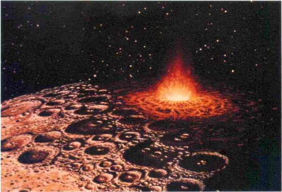
Fotografía de las tierras bajas lunares con pocos cráteres. El cráter bien dibujado de mayor tamaño es Flamsteed (en recuerdo del primer astrónomo real de Gran Bretaña, capítulo III). Debajo del cráter Flamsteed hay un cráter antiguo casi totalmente inundado de lava que se remonta a la historia más antigua de la Luna. Fotografía del Lunar Orbiter IV en Oceanus Procellarum. Cedida por la Administración Nacional de Aeronáutica y del Espacio.
Un cometa o asteroide choca contra la Luna formando el cráter Tycho (en recuerdo de Tycho Brahe, capítulo II). Este cráter se formó en las tierras altas lunares después de muchos cráteres más; obsérvese la acumulación de cráter sobre cráter. Pintura de Don Dixon.
Cráteres que saturan la superficie de la luna de Saturno Rea. La mayor parte de estos agujeros grandes del suelo se deben a la acción de impactos cometarios durante miles de millones de años. El tratamiento por ordenador ha exagerado mucho el color de esta imagen. Fotografía del Voyager 1 cedida por la Administración Nacional de Aeronáutica y del Espacio.
Vista por el Voyager 1 de Tetis, una luna de Saturno. Las lunas de Saturno están situadas en el sistema solar exterior; por tanto, los cráteres abundantes que presentan se deben casi enteramente a los cometas. Cedida por la Administración Nacional de Aeronáutica y del Espacio.
Imágenes de Ío, la más interior de las lunas grandes de Júpiter, tomadas por la nave espacial Voyager en 1979 y reproducidas en color falso. Hay muchos puntos negros y agujeros aparentes en la superficie (arriba a la izquierda, cráter Pele). Pero si se examinan más de cerca (arriba a la derecha, Ra Patera, y abajo a la izquierda Naasaw), cada cráter resulta tener un origen volcánico. No hay cráteres de impacto conocidos en Ío. Se observaron ocho o nueve volcanes activos durante dos pasos de las naves Voyager. Es seguro que en la superficie de Ío se generan cráteres de impacto cometarios, pero las corrientes volcánicas los erosionan y eliminan muy rápidamente. Cedidas por la Administración Nacional de Aeronáutica y del Espacio.
Imagen de radar de la superficie de Venus obtenida con el mayor telescopio de radar de la Tierra, el Observatorio de Arecibo, Puerto Rico. El cráter más pequeño del centro es Lise Meitner, de unos 60 km de diámetro. Todavía se discute si estos cráteres son de impacto o de origen volcánico, pero la relativa falta de cráteres en Venus demuestra que su superficie se está remodelando de continuo, probablemente por la acción del vulcanismo, como en Ío. Cedida por Donald Campbell, Administración Nacional de Aeronáutica y del Espacio.
La historia que se deduce de los densos cráteres de las tierras altas lunares demuestra que en los primeros centenares de millones de años de historia lunar el espacio interplanetario contenía un número de objetos impactantes —cometas y asteroides— enormemente superior al actual. Vemos repetirse la misma historia en un mundo tras otro a medida que nuestras naves de reconocimiento vuelan entre los planetas. Por ejemplo, en Rea, la luna de Saturno, no ha habido actividad geológica desde hace miles de millones de años, y allí podemos contemplar un mundo lleno hasta la saturación de cráteres, de polo a polo. El espacio interplanetario al principio debió de estar lleno de rocas e icebergs que chocaban contra los mundos en formación. De hecho, así fue como se formaron los mundos, con violentas colisiones.
No todos los mundos conservan los cráteres de otras eras. En algunos, como en las tierras bajas lunares, sus rastros han sido eliminados. Algo llenó los cráteres, o los borró, o los cubrió. En Venus hubo corrientes recientes de lava; en Marte, grandes desplazamientos de arena; en Ío, una luna de Júpiter, una superficie rica en azufre totalmente helado, y en Encelado, un satélite de Saturno, formado casi enteramente de hielo, algo fundió la superficie, y el registro de los cráteres de este mundo se escribió literalmente en agua. Los cráteres de Ío pueden desaparecer en unos siglos; en Venus puede tardar el proceso mil millones de años. Pero por todo el sistema solar está escrita la crónica de antiguos impactos escritos unos encima de otros, y con bastante frecuencia se ve también la crónica de procesos geológicos más recientes.
Algo parecido puede decirse de la Tierra, donde, incluso en terreno árido, el agua en movimiento destruye con bastante rapidez los cráteres, por lo que son muy difíciles de encontrar cuando no son muy recientes. El llamado cráter del Meteoro, en Arizona, tiene sólo unos veinticinco mil años de edad (véase abajo, en esta página). La mayor parte de los cráteres de impacto terrestres son mucho más viejos, y normalmente son grandes o están situados en regiones inactivas geológicamente.
El cráter del Meteoro, Arizona. Este cráter tiene 1,2 km de diámetro y probablemente se creó hace quince mil o cuarenta mil años, cuando una masa de hierro de 25 m de diámetro chocó contra la Tierra a una velocidad de 15 km/seg. La energía liberada equivalió aproximadamente a la de una explosión nuclear de 4 megatones.
A veces, la cicatriz de una colisión revela algo de la superficie planetaria subyacente. En Marte, por ejemplo, hay cráteres con dibujos de corrientes festoneadas a su alrededor; esto indica la presencia de hielo de agua subsuperficial que la colisión licuó momentáneamente. El agua transportó hacia fuera los escombros de la superficie y al final volvió a congelarse. El impacto de un cometa grande puede aportar agua o una atmósfera a mundos que carecen casi totalmente de aire.
Cuando un cometa choca contra un planeta gaseoso como Júpiter, atraviesa su atmósfera superior y experimenta una resistencia creciente a medida que se hunde a mayor profundidad hasta desintegrarse en algún punto por debajo de las nubes visibles, con lo que su material acaba circulando por gran parte del planeta (véase página siguiente). El material de los cometas se mezcla, pues, con el aire de Júpiter. Pero no parece probable que pueda atribuirse a una colisión cometaria reciente ningún rasgo conocido de las nubes de Júpiter.
Los cráteres tienen formas. Algunos tienen una forma perfecta de tazón; otros son planos, poco hondos, de pendientes suaves. La forma del cráter no depende mucho de la velocidad del objeto impactante, con tal de que éste golpee el suelo con la fuerza suficiente. El resultado equivale a detonar un gran explosivo en el punto de impacto. La forma del cráter depende de lo blanda que sea la superficie y de la fragilidad del material impactante.
Los astronautas norteamericanos fotografiaron en la superficie lunar cráteres tan pequeños que no pueden verse a simple vista. Muestras devueltas a la Tierra han revelado también una plétora de microcráteres. Algunos se deben al polvo de asteroides barrido por la Luna; otros, a partículas finas generadas y rociadas sobre la Luna por grandes impactos. También suponemos que una fracción determinada de los microcráteres lunares se debe al polvo cometario, excavado bocanada a bocanada. Pero existe también una población de microcráteres que son muy poco hondos en comparación con su tamaño, con forma más de depresiones que de tazones. Los microcráteres de poca profundidad sólo pueden entenderse si los excavaron granos de baja densidad que chocaron contra la Luna, y el origen de estos granos sólo puede ser cometario. Fragmentos microscópicos de pelusilla cometaria están reblandeciendo y desgastando muy suavemente la cara de la Luna.
Y según la ruleta de las colisiones, también han de chocar con la Luna de vez en cuando cometas mayores. Una muestra de suelo lunar llamada 61221 presenta indicios de las moléculas H2O, CH4, CO 3, CO, HCN, H2 y N2. Los cuerpos volátiles presentes en esta muestra — especialmente HCN— y ausentes en otras muestras lunares sugieren un impacto cometario reciente. Al colisionar, los cometas pueden imprimir también un dibujo de magnetismo alrededor de la zona de impacto, y esto puede explicar algunas anomalías magnéticas descubiertas en la Luna que de otro modo constituirían un enigma.
Microcráteres en muestras de roca traídas de la Luna. Las dos son imágenes de microscopio. Izquierda, del Apolo 12: el cráter mayor tiene 30 micrones de diámetro. Derecha, del Apolo 15: el cráter grande con bordes levantados tiene menos de 2 micrones de diámetro. Cedidas por D. S. McKay y el Centro Espacial Johnson, Administración Nacional de Aeronáutica y del Espacio.
Tarde o temprano, los cometas agotan su gas en el sistema solar interior. La cantidad media de hielo de agua que desaparece en cada paso por el perihelio es de unos metros. Cada vez que el cometa pasa cerca del Sol se encoge. El cometa no es, desde luego, hielo puro, sin una mezcla íntima de hielo y polvo. Los grandes surtidores que a veces proyectan sus chorros dentro de la coma emiten enormes cantidades de polvo, y el hielo al evaporarse también levanta polvo, pero más reposadamente. Por tanto, un cometa formado principalmente por hielo pierde hielo y polvo en cada perihelio, hasta que desaparece del todo. No queda nada del cometa, aparte una contribución polvorienta a la nube zodiacal y quizá un ocasional y esporádico meteoro en los cielos de la Tierra.
Con todo, ahora imaginemos que el cometa tiene más polvo que hielo. Después de su primer paso por el-perihelio, queda sobre su superficie una capa de polvo que los geólogos llamarían depósito de revestimiento. El hielo, al evaporarse, se ha llevado parte del polvo, pero no todo. Cuando el cometa se acerca de nuevo al Sol, el polvo actúa como un aislamiento sobre el fango helado subyacente. Le resulta más difícil calentarse. Y si se calienta le cuesta más al vapor subyacente escapar, porque el camino está obstruido por la capa de polvo. Las presiones reprimidas de los gases subsuperficiales pueden reventar el manto superior de polvo, y el proceso empieza de nuevo. Después de un número determinado de pasos por el perihelio, puede haberse creado un depósito de revestimiento tan grande que ya no se pierda más hielo al espacio. El cometa ya no forma coma ni cola. Se apaga, cierra el negocio, se convierte en un pequeño y oscuro montón de materia que circula por el sistema solar interior.
Un cometa atraviesa rápidamente la atmósfera de Júpiter, penetrando debajo de las nubes. El planeta mayor, debido a su tamaño y a las órbitas de la familia de cometas jovianos, recibe un número relativamente elevado de impactos de este tipo. Pintura de Don Dixon.
Sucederá algo parecido si un cometa helado con un núcleo rocoso entra periódicamente en el sistema solar interior. Un cometa así tendrá que ser muy grande y tener por lo menos decenas o quizá centenares de kilómetros de diámetro para haberse podido fundir y haber segregado verticalmente materiales de diferentes propiedades: la roca más densa en el interior, los hielos más ligeros en el exterior. Por tanto, hay como mínimo dos sistemas para que los cometas evolucionen dando cuerpos pequeños con superficies de silicatos y compuestos orgánicos. Pero existe una categoría de cuerpos pequeños y oscuros de este tipo, algunos de ellos en órbitas bastante excéntricas llamados asteroides periterrestres. Ernst Opik (véase capítulo XI) formuló por primera vez la encantadora hipótesis de que un cometa podría metamorfosearse y dejar de ser un mundo de hielo para convertirse en un mundo de rocas.
Si la metamorfosis se produce realmente, tendría que haber unos cuantos cometas en fase de transición, cometas que por así decirlo están dando sus últimas boqueadas. Estos cometas chisporrotearán un poco al acercarse al Sol, los últimos depósitos descubiertos de hielo se vaporizarán y el depósito de revestimiento obligará a todo el hielo restante a permanecer en reposo. Estos cometas existen, y si observamos con asiduidad podemos a veces sorprenderlos en su fase quiescente. Algunos cometas no presentan disminución de su brillo incluso después de diez o más pasos por el perihelio, pero otros al cabo de un tiempo tienden a desvanecerse en la oscuridad: por ejemplo, Schwassmann-Wachmann 1, aunque este cometa no esté extinguido ni mucho menos. No hay duda de que emite gases como un cometa: la coma difusa se observa claramente por lo menos en algunas ocasiones, e incluso se han observado las líneas de emisión del CO+. Schwassmann-Wachmann 1 parece mostrar más actividad de coma cuando está cerca del Sol que cuando se aleja de él. Pero cuando está quiescente tiene el brillo y el color de un asteroide de tipo RO, llamado así porque es rojo y oscuro a consecuencia de las moléculas orgánicas complejas que contiene. Unos cuantos cometas activos, al ser observados antes de que formen comas considerables, se parecen también a los asteroides RO; por ejemplo, el cometa Halley, visto en 1985, cuando estaba cerca de la órbita de Júpiter. Otros cometas de actividad intermitente —Arend-Rigaux, por ejemplo, o Neujmin— cuando están quiescentes parecen asteroides de tipo S, más grises, formados principalmente por silicatos y metales, pero también bastante oscuros. Parece evidente que cuando estos cometas hayan expulsado todo su gas, no podrán distinguirse de un asteroide.
Los asteroides chocan entre sí y en ocasiones un fragmento escapa y acaba cayendo sobre la superficie de la Tierra, donde a menudo finaliza su carrera en un museo catalogado como un meteorito. Hay muchos tipos diferentes de meteoritos. Algunos, que no han sufrido mucho calentamiento en 4 500 millones de años, contienen materia orgánica compleja, y se parecen en cierta medida a la pelusilla cometaria que recogemos en la estratosfera. Algunos de estos meteoritos carbonáceos podrían ser de origen cometario, procedentes de colisiones con asteroides o de fragmentaciones debidas a otras causas. De hecho, el color y el tono oscuro de los asteroides RO son parecidos al de las arcillas ricas en compuestos orgánicos que se encuentran en los meteoritos carbonáceos.
Evolución hipotética de un cometa de período corto y su transformación en un asteroide. Un cometa de actividad intermitente se acerca al Sol, vaporizándose una pequeña cantidad del restante hielo superficial (izquierda). Luego el cometa se fragmenta (centro), exponiendo hielo antes secuestrado que también se vaporiza. Al final (derecha) queda un cuerpo aparentemente rocoso, sin hielo, que se califica de asteroide, a pesar de que su interior todavía es rico en hielo. Pinturas de Don Dixon.
Sin embargo, otros meteoritos presentan un contenido orgánico muy reducido, y están compuestos principalmente de piedra o incluso de metal. Algunos meteoritos rocosos podrían deberse a colisiones con asteroides como el asteroide en que pronto se convertirá el cometa Arend-Rigaux. Los grandes meteoritos de hierro que exhiben con orgullo los museos del mundo cuentan una historia de gran calentamiento, fusión y coalescencia de gotitas de hierro fundido para formar una gran masa antes de que todo el conjunto se enfriara. Los meteoritos de hierro se han calentado tan intensamente a lo largo de su historia y se han reelaborado tanto que no pueden estar formados por material cometario primordial y sin alterar. Lo mismo puede decirse, aunque menos, de los meteoritos rocosos. Pero los meteoritos carbonáceos están mucho más cerca de la materia primitiva con la cual se formó el sistema solar.
Muchos de los asteroides se originaron más o menos donde continúan estando ahora, principalmente entre las órbitas de Marte y Júpiter. Pueden ser los restos de los cuerpos rocosos (y metálicos) que crecieron por acreción junto con algo de materia cometaria y formaron la Tierra y los demás planetas terrestres. Este debe ser el origen de muchos meteoritos. Pero esparcidos entre ellos, viajando de incógnito y hábilmente disfrazados, están los cometas. Se han puesto una bata de polvo, o se han desnudado hasta presentar algún núcleo escondido. Si no los observamos con mucha atención, no descubriremos nunca que son huevos de cuco en el nido de un petirrojo. Unos cuantos asteroides tienen incluso órbitas de tipo cometario, muy elípticas, que los llevan cerca de Marte o de la Tierra, pero especialmente cerca de Júpiter. Uno de estos asteroides se llama Hidalgo y es de la clase RO. El cometa Encke, debido quizá al efecto cohete (véase capítulo VI), está desplazando lentamente su órbita hacia dentro. Hay pruebas abundantes de que Encke está desmoronándose: por ejemplo, las lluvias de meteoros Táuridas y beta Táuridas que deja detrás suyo.
El Satélite de Astronomía Infrarroja (véase capítulo XII) descubrió en 1983 uno de esos asteroides sospechosos, Faetón (1983 TB), que comparte la órbita de la corriente de meteoros responsables de la lluvia de meteoros Gemínidas de cada 14 de diciembre. Es muy improbable que 1983 TB se encuentre por casualidad exactamente en la corriente de meteoros Gemínidas, y es igualmente improbable que sea un asteroide fragmentado por una colisión precisamente un tiempo antes de que empezáramos a observarlo. Lo más probable es que sea un trozo de un cometa extinguido. Pero se sabe que los meteoros Gemínidas están formados por material rocoso no blando. Esto indica que, como vemos en el cometa Arend-Rigaux y en otros, los cometas pueden metamorfosearse y convertirse en auténticos asteroides rocosos. Así, cuando encontramos un cráter en la Tierra con indicación de que el cuerpo impactante era una roca, podría ser también que lo hubiese generado un cometa extinguido.
El asteroide Oljato puede ser otro cometa con una crisis de identidad. Su órbita muy excéntrica, que se extiende de Júpiter a Venus, es de tipo cometario. El astro refleja luz en las longitudes de onda visibles y de radar de un modo totalmente anómalo; no hay otro objeto en el sistema solar que se parezca a Oljato. Y, además, parece estar relacionado con una lluvia de meteoros. Se ha detectado también de un modo insólito el paso de Oljato. Hay en órbita alrededor del planeta más cercano una nave espacial de Estados Unidos, llamada Pioneer Venus, que entre otras cosas se ocupa de registrar día a día la intensidad del campo magnético local: un campo constante de fondo con anomalías ocasionales. Una cuarta parte aproximadamente de las perturbaciones magnéticas detectadas ocurrieron cuando Oljato pasó muy cerca (a menos de 1,3 millones de kilómetros) de Venus y de la nave acompañante. No se espera que un asteroide posea campos magnéticos detectables. Pero si Oljato es un cometa ligeramente activo, generará una coma delgada. La coma quedará rápidamente ionizada por la luz ultravioleta del Sol y a su vez comprimirá el campo magnético transportado por el viento solar local. Cuando esta compresión alcance Venus podrá detectarse un aumento del campo magnético local. El extraño espectro de Oljato sugiere que es un astro raro, pero otros datos indican que estamos ante un cometa a las puertas de la muerte.
El hielo y el hierro no pueden soldarse.
Robert Louis Stevenson, La presa de Hemiston, 1896
Adonis es otro asteroide sospechoso, situado en una órbita muy elíptica de tipo cometario que corta la órbita de la Tierra. Su eco de radar tiene propiedades peculiares que pueden explicarse si sus capas superficiales son muy porosas, como si se hubiese evaporado todo el hielo y hubiese quedado una matriz de polvo débilmente unida.
En promedio cada año se añade un nuevo recluta a las filas de los cometas de período corto, extraídos de las órbitas de período largo por la gravedad de Júpiter. Muchos de estos cometas, ayudados por la luz solar, las mareas gravitatorias y la rotación, se fragmentan y desaparecen del todo. Otros son eyectados fuera del sistema solar o se dirigen hacia otros mundos. Pero al parecer hay una población constante de cometas que se metamorfosean en asteroides, con órbitas que van del casi círculo a una elipse alargada. El número de cometas disfrazados así debe de haber aumentado mucho a lo largo de la vida del sistema solar.
Muchos asteroides que cortan la órbita de la Tierra son probablemente cometas extinguidos. Tienden a ser pequeños y oscuros y, por tanto, son difíciles de descubrir. Hay menos de cien objetos conocidos cruzando las órbitas de Marte o de la Tierra, y éste es el resultado de una década de intensas búsquedas. Estos asteroides periterrestres tienen un interés especial para nosotros, porque representan algo de consecuencias serias y calculables: la colisión a gran velocidad de un objeto de kilómetros de diámetro con la Tierra sería una catástrofe importante, una catástrofe que debe de haberse producido de vez en cuando a lo largo de la historia de la Tierra. Se trata de una inevitabilidad estadística. Y aunque digamos que un asteroide ha chocado contra la Tierra, hemos de reconocer que el cuerpo impactante puede haber sido un cometa disfrazado.
* * * *
A partir de la población observada hoy día de cometas y del registro de cráteres, es posible estimar cuántos cometas o asteroides han excavado los cráteres de un mundo dado y de qué tipo fueron. Eugene M. Shoemaker, fundador de la Rama de Astrogeología del Servicio Geológico de Estados Unidos, fue uno de los científicos que iniciaron los primeros trabajos serios en Norteamérica. Para explorar la Luna, ha descubierto muchos asteroides periterrestres, y es el experto mundial sobre el cráter del Meteoro en Arizona. Shoemaker combina la geología apegada al terreno con la astronomía celeste. Ha estimado, junto con su colaboradora Ruth Wolfe, que una cuarta parte aproximadamente de los cráteres observados en las lunas grandes de Júpiter son obra de cometas de período largo. Quizá otra cuarta parte se deba a cometas activos de período corto, cometas que están todavía produciendo copiosas colas de polvo, explosiones, cambios de brillo, etc. Una mitad de los cráteres son excavados por cuerpos no cometarios, incluyendo cometas extinguidos de período corto disfrazados de asteroides. En cuanto a la Tierra, una tercera parte aproximadamente de los cráteres recientes se deben a cometas de período largo, no muy diferentes de la historia de las lunas de Júpiter. Pero el resto de los cráteres terrestres se deben a asteroides periterrestres, algunos de los cuales, por lo menos, son cometas extinguidos. Según Shoemaker y Wolfe, los cometas conocidos de período corto no contribuyen mucho a los cráteres terrestres. [31] Los cometas de período corto chocan con mucha mayor frecuencia con las lunas de Júpiter que con la Tierra, porque sus afelios están cerca de Júpiter, debido a las circunstancias de su captura.
Cuando un cometa grande o un asteroide choca con un mundo pequeño, lo cual sucede a veces, el mundo puede ser destruido y quedar reducido a fragmentos.
Vista por el Voyager 2 de Calisto, la más exterior de las cuatro grandes lunas de Júpiter. Aproximadamente la mitad de estos cráteres se deben a cometas. Cedida por la Administración Nacional de Aeronáutica y del Espacio.
Esto estuvo a punto de sucederle a Fobos, una luna de Marte (véase capítulo VII), y a Mimas, una luna de Saturno. Si el objeto que produjo el gran cráter de Mimas hubiese sido algo mayor, el resultado hubiese podido ser el de la figura de la página 268. Los cometas grandes abundaban en la primitiva historia del sistema solar, y a medida que se incorporaban a las lunas y planetas en crecimiento ocurrían con frecuencia colisiones catastróficas.
En la Luna, Marte y los satélites mayores de Júpiter hay pruebas de enormes colisiones antiguas que produjeron no cráteres, sino cuencas de centenares o incluso de miles de kilómetros de diámetro. Según una prometedora teoría, la misma Luna nació de un enorme impacto con la Tierra de algún pequeño planeta fallado, y los fragmentos eyectados por la colisión se fundieron para formar nuestro satélite natural. La cicatriz se ha curado desde hace tiempo, pero si la colisión hubiese sido algo más enérgica, la Tierra hubiese podido quedar totalmente destruida, y nosotros no estaríamos aquí intentando descifrar las pruebas de nuestros orígenes.
El espaciamiento entre los mundos, sus masas e incluso su supervivencia dependieron del número de cuerpos primitivos existentes y de las órbitas que ocupaban en la primitiva nebulosa solar; es decir, dependieron del encadenamiento casual de una multitud de acontecimientos, algunos probables, otros menos. Si pusiéramos de nuevo en marcha el sistema solar y dejáramos que actuaran únicamente los factores casuales, se formaría una colección ligeramente distinta de cuerpos rocosos y helados, cada uno de unos cuantos kilómetros de diámetro; habría otra secuencia de colisiones construyendo nuevos mundos, un número distinto de planetas con masas y posiciones orbitales algo diferentes. Pero en general los planetas terrestres rocosos estarían dentro y los gigantes gaseosos continuarían fuera. Añadamos lunas heladas y orgánicas y los cometas de la gran nube del extrarradio. Puede haber en la galaxia una gran multitud de sistemas planetarios de aspecto parecido al nuestro, pero con diferencias significativas de un tipo al otro y de un sistema al otro, según haya sido la compleja ruleta de colisiones que dio forma a sus orígenes.
Los cometas rehacen las superficies de los mundos, transportan sustancias volátiles a planetas resecos, excavan tesoros enterrados para los científicos planetarios y dejan constancia de su historia por todo el sistema solar: son astros activos, útiles y serviciales. Pero los cometas también crean mundos y los destruyen. Nos recuerdan la época de hace unos 4 500 millones de años, cuando el sistema solar estaba compuesto únicamente de cometas y de sus equivalentes rocosos, centenares de billones de ellos, enjambres de cuerpos que se fundían y chocaban saltando de un distrito del sistema solar a otro; un remolino de pequeños mundos que al final, cuando se hubo calmado la impetuosidad de la juventud, desembocó en la actual maquinaria reposada y constante del sistema solar. El cometa que en nuestros días pasa ocasionalmente ante nuestros ojos es uno de los pocos recordatorios de nuestros violentos y caóticos orígenes.
Fragmentos de Mimas, partido hipotéticamente por un impacto cometario. Mimas es la más interior de las lunas de Saturno descubiertas desde la Tierra. Las fotografías de la nave espacial Voyager revelan la existencia de un cráter tan grande que si el cometa hubiese sido algo mayor habría hecho añicos la luna. Los cometas pueden destruir pequeños mundos. Pintura de Kim Poor.
Un gran núcleo cometario, de 10 km de diámetro, choca contra la Tierra, hace sesenta y cinco millones de años en esta representación esquemática. Se cree que la explosión resultante levantó del fondo oceánico enormes nubes de polvo que se extendieron por toda la Tierra, iniciando una era de frío y de oscuridad que provocó la extinción de los dinosaurios y de muchas especies vivientes. El invierno nuclear es un efecto semejante. Pintura de Don Davis.
Capítulo XV
La cólera del cielo: La gran hecatombe
Los cometas no descienden nunca hasta las regiones más bajas de la atmósfera, ni se acercan al suelo.
SÉNECA, Cuestiones naturales, libro 7, «Cometas»
Los cometas son seres elevados al cielo por sus méritos, los cuales, habiendo finalizado su período de estancia en lo alto, están descendiendo de nuevo a la Tierra.
Al Biruni, siglo XI
El suelo está creciendo. Los sedimentos se depositan en el cauce del río, el polvo cae del aire y el suelo queda un poco más alto. Un micrón por año es una velocidad de crecimiento bastante típica: forma una película cuyo espesor no supera el de una partícula microscópica y que constituye una pátina casi imperceptible depositándose anualmente sobre la superficie. [32] Un micrón es casi nada. Pero a lo largo del tiempo geológico, los micrones se van sumando. A este ritmo, en diez mil años construimos un centímetro de materia y en un millón de años un metro. Si pudiéramos encontrar un lugar de la Tierra donde sólo se acumulara material durante una gran parte de su edad sin perderlo, veríamos acantilados de kilómetros de altura que preservarían un registro intacto de la historia de nuestro planeta.
Afortunadamente, estos lugares existen; uno de los mejor conocidos es el Gran Cañón norteamericano, donde la columna sedimentaria ha quedado expuesta por la erosión lenta pero persistente del río Colorado y por el levantamiento de la altiplanicie del Colorado. Podemos observar en las rocas un bello dibujo, una secuencia de estratos de color pastel apagado. En las caras adyacentes del cañón hay dibujos casi idénticos. Cada estrato es una época. Cada frontera entre estratos corresponde a algún cambio importante del entorno. Si las columnas sedimentarias muestran en todas partes el mismo dibujo, los cambios del entorno debieron de tener alcance mundial. A medida que pasamos la vista de la cima al fondo de este acantilado, vamos siguiendo la historia del mundo. Basta con entrar en el libro y leerlo.
Sin necesidad de llevar a cabo excavación alguna, podemos ver una cosa brillante destellando a la luz del Sol. La examinamos con mayor detenimiento y descubrimos que es un fósil, quizá una rodilla de dinosaurio, o la mandíbula de un pez acorazado. Con un microscopio descubrimos fácilmente fósiles de pequeños seres, tal vez plancton unicelular que flotó en algún mar primigenio. Si miramos columnas sedimentarias de otras regiones, observamos un hecho notable: todo encaja. Este depósito rojizo especialmente espeso tiende a estar situado en muchos lugares debajo de estos dos delgados estratos grises y siempre presenta una combinación similar de fósiles. Las rocas correspondientes a una época dada pueden diferir de un yacimiento al otro, pero los fósiles abundantes son siempre los mismos. Encontramos una concha de amonita y queda confirmado que el vasto paisaje desértico del cual forma parte esta pared fue en otra ocasión el fondo de un océano. Nos trasladamos unos cuantos metros hacia arriba o hacia abajo y los fósiles tienen un aspecto muy diferente; nos damos cuenta de que si esperamos lo suficiente, el paisaje cambiará de modo espectacular.
Las rocas quieren contamos algo. Esos fósiles son los únicos restos de seres que en otras épocas se paseaban, se deslizaban, nadaban o simplemente arraigaban por aquí, seres que nacieron y murieron mucho antes de que ningún ser humano pudiese tomar nota de ellos. Cogemos un fósil concreto y en todo el mundo hay un estrato, correspondiente a alguna época del pasado, debajo del cual este organismo no había existido todavía. En general, hay también un estrato superior donde el fósil deja de aparecer y donde encontramos por primera vez fósiles de nuevos organismos. La lección es evidente: la extinción de un gran número de especies ha proporcionado oportunidades para que otras especies evolucionen y llenen los nichos ecológicos abandonados. Muchas de estas especies eran tan pequeñas que no pueden verse sin microscopio, y otras tan grandes como un bloque de oficinas. Contamos todos los seres que dejan fósiles y descubrimos que la inmensa mayoría de las especies que han vivido están hoy día extinguidas. La extinción es la regla. La supervivencia es la excepción.
Luego descubrimos que las distintas formas fósiles no se suceden a un ritmo uniforme. Las rocas proclaman largos periodos en los que los tipos de vida cambian muy poco, períodos puntuales por intervalos breves de cambios cataclismáticos, desapariciones masivas de muchos tipos de seres, a veces en toda la Tierra, seguidas con asombrosa rapidez por la aparición de muchas formas nuevas, que evolucionaron claramente a partir de los supervivientes de la catástrofe. Las fronteras más evidentes de la columna sedimentaria marcan con claridad catástrofes terribles, de alcance planetario. Tenemos un planeta donde todo va bien durante decenas de millones de años. Incluso los pesimistas inveterados pueden llegar a sentirse seguros en él. Pero luego, quizá cuando menos podíamos esperarlos, se producen cambios tumultuosos, cambios tan sorprendentes que se hacen aparentes de modo inmediato incluso ante los ojos y la mente de personas como nosotros que han llegado al escenario de los hechos centenares de millones de años después.
Un ammonites de los mares del cretáceo. Las formas de las conchas de ammonites son muy conocidas porque produjeron abundantes fósiles. Los dibujos son de Maren Leyla Cooke.
Un laberintodonte, anfibio de fines del triásico.
Como es lógico, existe un ritmo constante y básico de extinciones. En nuestra época, las especies se extinguen cada año a consecuencia de las actividades humanas: la urbanización, la caza, la contaminación industrial o la destrucción de los bosques tropicales. La paloma mensajera, cuyos vuelos migratorios habían oscurecido en otras épocas los cielos de Norteamérica, se extinguió en el siglo XX; la gran alca en el siglo XIX, y el dodo, en el XVII. El último mastodonte murió quizá en fecha tan próxima como el 2000 a. de J.C.; el armadillo gigante, hacia el 5800 a. de J.C., y el perezoso terrestre gigante (que se comía las copas de los árboles), hacia el 6500 a. de J.C. Los hombres hemos sido probablemente los causantes de la extinción de la mayoría de esos animales, pero las extinciones forman parte del flujo y reflujo natural de la vida, y son debidas a cambios menores en el medio ambiente físico biológico: en nuestro caso, la aparición de un depredador de capacidades insólitas. Sin embargo, lo que ahora nos ocupa es algo muy diferente: extinciones en masa de docenas o centenares de familias de la vida, ocurridas simultáneamente en todo el mundo.
Un trilobites del cámbrico. Los últimos trilobites se extinguieron en el pérmico.
Uno de los primeros corales oceánicos, el coral rugoso, desaparecido en las extinciones del pérmico.

Animal sésil con concha de fines del ordovícico.
La extinción de una «familia» —en el sentido biológico— de plantas o de animales supone una pérdida importante. Recordemos la variedad de perros en el mundo, desde chihuahuas a grandes daneses. Todos ellos pertenecen a una única especie, porque todos pueden cruzarse fértilmente entre sí. Los biólogos distinguen una categoría más amplia llamada género, que abarca no sólo a los perros, sino también a los lobos y a los chacales. Este género, Canis, forma parte a su vez de una categoría mucho mayor, la familia, que incluye a los zorros; todos ellos son cánidos. Una familia es un grupo importante de seres. La familia humana, la familia de los homínidos, comprende la mayoría de primates que caminaban con dos pies y que intentaron dar un sentido a las cosas durante los últimos millones de años, aunque quizá a muchos de ellos no los tomaríamos por humanos si nos los encontráramos por la calle. La pérdida de una familia equivale a cortar una rama del árbol de la vida.
La tabla adjunta registra seis de las cesuras más espectaculares conocidas de la historia de la Tierra, e indica el alcance de estas extinciones; La lectura de las dos últimas columnas de esta tabla llega a causar horror. Las columnas muestran el tanto por ciento de familias y géneros de organismos marinos conocidos que perecieron en cada una de las seis catástrofes. En las fronteras del ordovicio y del devónico, se extinguió la mitad de los géneros; el número fue inferior en la catástrofe del eoceno y casi igual en la del triásico. En las extinciones del pérmico perecieron más de la mitad de las familias de la vida en la Tierra, más de tres cuartas partes de los géneros y más del 90 por ciento de las especies. Uno de los desastres planetarios más recientes se produjo a fines del período cretáceo, hace unos sesenta y cinco millones de años, cuando desaparecieron casi una de cada cinco familias, la mitad de los géneros y tres cuartas partes de las especies.
En estas páginas están representados algunos de los seres extinguidos: un braquiópodo que se fijaba al fondo del océano, extinguido hacia el ordovicio; un pez acorazado que desapareció a fines del devónico; un trilobites, un animal que cazaba en manada en el fondo del océano y que después de perpetuarse durante casi 300 millones de años, se extinguió en el pérmico; una especie de coral, desaparecida también en el pérmico; un ammonites, pariente del pulpo, extinguido en el cretáceo, y el tricerátops, uno de los últimos dinosaurios, que tenía tres cuernos muy peligrosos y una rechinante armadura ósea, víctima también del cretáceo. Basta una mirada al tricerátops para comprender que los tiempos a fines del cretáceo eran algo difíciles.
Los científicos estudian atentamente las extinciones del cretáceo, porque nos afectan de modo particular. Entre todos estos huesos de reptil podemos descubrir una fase evolutiva crítica en el camino que conducirá al hombre. La catástrofe del cretáceo destruyó todas las familias, todos los géneros y todas las especies de dinosaurios, y los dinosaurios eran tan variados y tenían tanto éxito como los mamíferos actuales. Su extinción equivale a que hoy día todos los mamíferos caigan al suelo patas arriba, rígidos y muertos: todas las musarañas, todas las ballenas y todas las personas. Murieron igualmente todos los reptiles voladores y nadadores, y más
de un centenar de familias de seres de vida oceánica. Aquella catástrofe supera en enormidad todo lo que los hombres han conocido, por lo menos hasta ahora.
Los primeros mamíferos aparecieron aproximadamente al mismo tiempo que los primeros dinosaurios. Estos fueron los amos de la Tierra, los seres mayores, más poderosos, los que captarían nuestra atención en cualquier paisaje del cretáceo. Los mamíferos, nuestros antepasados, eran seres diminutos como ratones, furtivos, huidizos y precavidos, que se dedicaban la mayor parte de su tiempo a mantenerse apartados de los imponentes reptiles. Unas cuantas docenas de pequeños mamíferos apenas habrían hecho una cena suficiente para un dinosaurio carnívoro de tamaño medio. Durante más de cien millones de años, nuestros antepasados vivieron en un aparente callejón evolutivo sin salida, en los márgenes y a la sombra de un mundo dominado por los dinosaurios. Si hubiésemos estudiado este paisaje de fines del cretáceo, con árboles y flores muy parecidos a los de hoy día, pero con todos los animales dominantes reptiles, no hubiésemos apostado gran cosa en favor de nuestros antepasados.
El brontosaurio, un dinosaurio tan grande como una casa que floreció en Norteamérica a fines del jurásico. Se extinguió mucho antes del cretáceo y es un ejemplo de las extinciones de «fondo»: las especies se extinguen a un ritmo constante durante toda la historia de la Tierra, pero además hay breves períodos de extinciones en masa.
El dimetrodon, un dinosaurio con aleta en forma de vela, una víctima de las extinciones del cretáceo.
El tricerátops, el último y mayor de los dinosaurios con cuernos, extinguido a fines del cretáceo. Era mayor que un elefante.
Un pez acorazado, ninguno de los cuales sobrevivió al devónico.
Sin embargo, los dinosaurios pasaron y perecieron hasta el último ejemplar, y legaron el planeta a los mamíferos. Y éstos no fueron los únicos en sobrevivir, desde luego: las serpientes y las salamandras se mantuvieron en forma, al igual que los peces, los insectos y los cocodrilos, junto con muchas plantas terrestres. Pero los mamíferos pronto predominaron. Los mamíferos, primero tentativamente y luego con creciente exuberancia, evolucionaron, crecieron y se diversificaron, aprovechando la falta de competencia y llenando nichos ecológicos desocupados. Debemos nuestra existencia, o por lo menos la existencia de los que somos algo mayores que un ratón, a la extinción de los dinosaurios. Por tanto, quizá se nos perdone que demostremos un interés especial por la cuestión siguiente: ¿por qué murieron repentinamente hace sesenta y cinco millones de años los dinosaurios junto con la mayoría de especies de la Tierra?
* * * *
En el capítulo 4 del libro 4 del Sistema del mundo de Laplace, el gran científico francés criticaba como una superstición el temor que sentían los hombres en todo el mundo por los cometas, y proponía una hipótesis científica sobria como motivo justificado y práctico del miedo a los cometas:
En aquellas épocas de ignorancia, la humanidad estaba muy lejos de imaginar que el único medio de interrogar la naturaleza fuera el cálculo y la observación. Se pensaba que los fenómenos dependían de causas finales o bien del azar según que se sucedieran con regularidad o sin orden aparente; y cuando sucedía algo que quedaba al parecer fuera del orden natural, se consideraba un signo de la cólera del cielo.
Pero estas causas imaginarias han ido cediendo el paso al progreso del conocimiento, y desaparecerán totalmente en presencia de una filosofía firme, que no les da ninguna importancia y que las considera simples expresiones de la ignorancia de la verdad.
A los terrores que inspiraba la aparición de los cometas siguió el temor de que uno de ellos, entre los muchos que cruzan el sistema planetario en todas direcciones, pudiera volcar la Tierra.
Recordemos que el mismo Laplace había estudiado cuidadosamente la evolución orbital responsable del casi impacto del cometa Lexell con la Tierra en 1770 (véase capítulo V).
Pasan tan rápidamente por nuestro lado que no pueden captarse los efectos de su atracción [gravitatoria], y sólo pueden producir algún efecto desastroso chocando con la Tierra. Pero esta circunstancia, aunque posible, es muy poco probable en el curso de un siglo y sería preciso una combinación extraordinaria de circunstancias para que dos cuerpos tan pequeños, comparados con el espacio inmenso dentro del cual se mueven, lleguen a chocar el uno contra el otro, por lo que no puede imaginarse razonablemente que tenga lugar un hecho así.
¿Está, pues, el temor a una colisión cometaria con la Tierra al mismo nivel que el terror supersticioso de los cometas? En absoluto. Laplace, que fue uno de los inventores de la moderna teoría de la probabilidad, explica:
Sin embargo, la pequeña probabilidad de esta circunstancia, acumulándose durante una larga sucesión de edades, puede llegar a ser muy grande. Es fácil representar los efectos de una conmoción así sobre la Tierra: cambios en el eje y en los movimientos de rotación, abandono por las aguas de su posición anterior para precipitarse hacia el ecuador; muerte de la mayoría de los hombres y de animales en un diluvio universal, o destrucción de sus vidas por la violencia del choque sufrido por el globo terrestre; especies enteras destruidas, todos los monumentos de la industriosidad humana por los suelos: tales son los desastres que produciría un choque con un cometa.
La idea que los cometas son en realidad anuncios del desastre a través del diluvio universal o de otros medios ha constituido una especulación respetable durante toda la historia científica del tema, desde la época del mismo Edmond Halley (quien propuso que el diluvio bíblico se debió al «choque causal de un cometa»). El tipo de desgracia que los cometas pueden causar —inundaciones, tinieblas, fuego, partición de la Tierra—, cambia con la época y con la moda astronómica. Pero la asociación de los cometas con la catástrofe se mantiene curiosamente constante a través de las generaciones.
Laplace relacionó esta visión terrible de un cometa chocando contra la Tierra con una paradoja aparente de las escalas temporales. La historia humana se remonta sólo a unos cuantos miles de años. Sin embargo, Laplace, basándose en argumentos como los de Halley sobre la concentración salina del agua de mar, sabía que la Tierra era mucho más vieja. Laplace, el evolucionista cósmico, no tenía ni idea de la evolución biológica. El origen de las especies de Charles Darwin tardaría sesenta años en aparecer. Laplace no podía imaginar que el mundo hubiese existido mucho tiempo antes de que los hombres estuvieran presentes en él. ¿Por qué no eran mucho más antiguas la historia y la civilización humanas?
Vemos... entonces por qué el océano ha abandonado las montañas más altas, donde ha dejado señales incontestables de su anterior presencia: vemos por qué los animales y las plantas del sur pueden haber existido en los climas del norte, donde pueden encontrarse todavía sus reliquias y sus impresiones; finalmente esto explica el período breve de existencia del mundo moral, cuyos monumentos más antiguos no se remontan a más de cinco mil años. La raza humana, reducida a un número pequeño de individuos en el estado más deplorable, se ocupaba solamente de los cuidados inmediatos de su subsistencia, y por fuerza debió de perder el recuerdo de todas las ciencias y de todas las artes; y cuando el progreso de la civilización creó otra vez nuevas necesidades, todo tuvo que hacerse de nuevo, como si la humanidad acabara de ser puesta sobre la Tierra.
El párrafo no sólo sugiere de modo inconfundible desastres cometarios globales, sino también extinciones de origen cometario, e incluso alude a la posibilidad de que hayan tenido lugar catástrofes semejantes durante toda la historia anterior de la Tierra. Estas ideas se están considerando de nuevo en nuestra época. [33]
Después de Laplace, el catastrofismo cometario se puso casi de moda. Algunos autores imaginaron que los restos de cometas estaban distribuidos por gran parte de la Tierra; como la arcilla en Ragnarok de Donnelly; otros imaginaron que los efectos de la colisión repercutieron únicamente en zonas limitadas. En ocasiones, se imaginaron consecuencias más terribles incluso que las descritas por Laplace. En 1893, el escritor francés Camille Flammarion, quien al parecer tenía una tendencia no justificada por los hechos a asustar a la gente con los cometas, escribió una narración de ciencia ficción titulada El fin del mundo:
El núcleo sólido del cometa, como un gran proyectil celeste, atravesó la corteza de la Tierra, delgada como la de un huevo, y se hundió en el interior semifundido. El cometa se abrió paso como una bala penetrando en la caldera de un buque de guerra. La Tierra se convirtió inmediatamente en un volcán planetario. Los océanos se derramaron como vasos de agua..., los continentes se doblaron y se rompieron como papel.
El autor exagera un poco. Pero si los cometas tienen un kilómetro o más de diámetro y se desplazan a gran velocidad en la misma región del sistema solar que la Tierra, tarde o temprano un cometa de buenas dimensiones chocará realmente con la Tierra, provocando unas consecuencias que sin duda serán catastróficas, aunque no sepamos exactamente qué sucederá. Esta es la base del argumento de Laplace. No es difícil calcular de modo aproximado —puede hacerse en el dorso del proverbial sobre— el tiempo que la Tierra pasa entre dos colisiones sucesivas con cometas de buen tamaño. W. H. Pickering, de Harvard, calculó en la primera década del siglo XX que cada cuarenta millones de años ha de chocar con la Tierra un núcleo cometario de buen tamaño. Pero las docenas de colisiones que imaginó a lo largo de la historia de la Tierra habían causado al parecer pocos daños, según dedujo Pickering al ver que la vida continuaba rodeándonos con exuberancia.
El principal manual de astronomía publicado en Estados Unidos después de la segunda guerra mundial [34] incluía el siguiente párrafo:
Es probable que la Tierra haya sufrido muchas colisiones con cometas durante el tiempo geológico. Puede calcularse fácilmente que un cuerpo pequeño de movimiento rápido que se acerque a una unidad astronómica de distancia del Sol tiene una posibilidad entre cuatrocientos millones de chocar con la Tierra. Puesto que cada año llegan a esta distancia unos cinco cometas, el núcleo de un cometa debería chocar contra la Tierra en promedio una vez cada ochenta millones de años.
Sin embargo, los autores habían aceptado la hipótesis de que los cometas eran bancos de arena (véase capítulo VI); por tanto, no creían en la existencia de núcleos cometarios de gran masa. Llegaron así a la conclusión de que las colisiones de cometas con la Tierra «probablemente no tendrían gravedad suficiente, ni mucho menos provocarían la destrucción total de la vida terrestre». A lo largo del siglo XX, los científicos han relacionado intermitentemente la extinción biológica con los impactos cometarios, aunque la idea dominante era que un cuerpo tan menor no podía desencadenar una catástrofe de tal escala.
Ella mira primero la ascensión del furioso cometa y sabe a quién amenaza y qué país destruirá.
Juvenal, Sexta sátira
* * * *
A medio camino aproximadamente entre Florencia y Roma por la autopista, se gira a la izquierda, se pasa por Perugia, se continúa una distancia igual por los Apeninos y se llega al final a un pueblecito llamado Gubbio, que data de la Edad Media. Allí, al lado de la carretera, se ven las bandas secuenciales de una columna sedimentaria maravillosamente conservada y que se anticipa en millones de años a cualquiera de las columnas erigidas por los Césares. Si nos encaramos por ella, podemos observar una capa delgada de color rosa y gris situada sobre un estrato blanco brillante de roca. La capa señala el fin del período cretáceo.
Esta imagen responde en cierto modo al concepto laplaciano de las posibles consecuencias del choque de un cometa contra la Tierra. El pie de esta ilustración de Pearson ’s Magazine de diciembre de 1908 reza: «Si un gran cometa se acercara a una distancia medible de la Tierra, quedaría sellado el destino de nuestro mundo. El cometa generaría un calor tan tremendo que todo entraría en combustión espontánea. Las rocas más duras se fundirían, y no quedaría ningún ser vivo sobre la superficie de la Tierra. En un segundo los edificios y los seres humanos quedarían reducidos a cenizas.»
Cortamos una pequeña pieza y nos la llevamos al laboratorio (véase página anterior). La roca blanca es piedra caliza, y bajo el microscopio podemos ver una matriz de placas y conchas de calcita fabricada por las plantas y animales microscópicos que vivían en los mares cálidos. El yeso de los acantilados blancos de Dover, en Gran Bretaña, fue fabricado por estos microorganismos oceánicos que segregan calcita, y que se extinguieron en el desastre del cretáceo. El nombre «cretáceo» se debe precisamente a esto: creta en latín significa yeso. En Gubbio podemos ver claramente que estas piedras calizas oceánicas están puntuadas por el estrato gris-rosa, que tiene siempre un centímetro de grueso y está hecha de arcilla. Tanto la arcilla como la piedra caliza debieron de acumularse en forma de granos individuales, depositándose a través de las aguas tranquilas del océano hace decenas de millones de años. Los fósiles de la piedra caliza situados encima mismo de la arcilla son muy diferentes de los fósiles situados debajo de ella. Se encuentran estratos similares en la frontera del cretácico en todo el mundo. Basta una ojeada para comprender que la arcilla marca una catástrofe.
El tipo de polen microscópico procedente de plantas con flor cambia de modo repentino encima del estrato de arcilla: es el equivalente terrestre de las extinciones oceánicas de microorganismos. Debajo de la arcilla cretácea se encuentran los fósiles de dinosaurios que merodearon por la Tierra durante ciento sesenta millones de años o más. Encima de ella ya no hay fósiles de dinosaurio, pero los restos de mamíferos son abundantes. [35] Esta frontera gris señala una catástrofe que dio fin al período cretáceo y que al mismo tiempo acabó con gran parte de la vida en la Tierra. ¿Qué hay en esta arcilla? ¿Qué provocó la gran extinción?
El registro sedimentario. Esta es la frontera bien marcada que se observa en las rocas de Gubbio, Italia, al lado de la carretera, y que corresponde al fin del periodo cretáceo y, por tanto, al fin de la era mesozoica del tiempo geológico. Debajo, a la derecha, están las rocas cretáceas, que aparecen claramente como piedra caliza blanca si se fragmentan un poco con un martillo. El color de esta capa de yeso se debe a los fósiles de los microorganismos que vivieron en los océanos de fines del cretáceo. Las rocas de color marrón rojizo, arriba a la izquierda, son de la era terciaria, en la que faltan los dinosaurios y empiezan a dominar los mamíferos. Asoma encima, como comparación, el borde de una moneda de quinientas liras. Una capa de arcilla gris zigzaguea en diagonal a través de esta fotografía y separa las rocas cretáceas de las terciarias. Corresponde exactamente a la época de la última aparición de los dinosaurios en el registro fósil y es rica en iridio. Figura utilizada con permiso de Walter Alvarez, Universidad de California en Berkeley.
El oro y el platino se valoran en parte porque son metales raros. Pero si examinamos el espectro del Sol y de las estrellas o un meteorito que acaba de precipitarse sobre la Tierra, vemos que en el cielo hay una cantidad relativamente superior de estos metales preciosos. No es que los meteoritos tengan vetas de oro o de platino; pero si comparamos la abundancia de estos metales con la de un elemento abundante como el silicio, la Tierra parece anómala, extrañamente empobrecida en metales preciosos. Ahora bien, en la roca fundida el oro y el platino tienden a desplazarse con el hierro. Y el hierro, que antes estaba mezclado uniformemente en todos los cuerpos que formaron la Tierra, se ha concentrado ahora principalmente en el núcleo líquido de nuestro planeta a 3 000 km debajo de nuestros pies. Es muy probable, pues, que la mayor parte del oro y del platino emigrara allí junto con el hierro al iniciarse la formación de la Tierra, cuando estaba parcialmente fundida. Esto es válido también para otros elementos menos conocidos que el oro y el platino, en especial para el iridio, el osmio y el rodio. Por tanto, si el iridio estuviera presente en cantidades suficientes en un estrato concreto de la columna sedimentaria, constituiría un indicio revelador de alguna intervención extraterrestre en los asuntos de la Tierra.
* * * *
La anomalía del anillo de bodas
De entre las docenas de concentraciones anómalas de iridio descubiertas en la frontera del cretáceo, una ha resultado espuria. El contenido de iridio en la roca ordinaria de la corteza terrestre es inferior a una décima parte por mil millones. Pero incluso esto puede medirse con el análisis de activación neutrónica. La abundancia de Gubbio era mucho mayor —seis partes por mil millones—y en otros lugares incluso superior. Pero el iridio de una muestra de laboratorio de arcilla cretácea de Montana resultó que se debía
“al anillo de bodas o de compromiso que llevaba un técnico al preparar las muestras para el análisis. El platino utilizado en joyería contiene un 10 por ciento aproximadamente de iridio... Si un anillo de platino pierde el 10 por ciento de su masa en treinta años, la perdida media por minuto es, suponiendo que se deposite toda en una muestra, unas cien veces superior a la sensibilidad de las mediciones.(*)
Los Alvarez y sus colegas llegan a la conclusión de que una exposición de unos segundos a un anillo de bodas de platino es suficiente para producir una señal espuria en el análisis. Cuanto más sensible es el instrumento, con más cuidado hay que actuar. Por tanto, los técnicos han de llevar guantes.
(*) Walter Álvarez, Frank Asaro, Helen V. Michel, Luis W. Álvarez, «Iridium Anomaly Approximately Synchronous with Terminal Eocene Extinctions», Science, volumen 216, p. 886, 1982.
* * * *
A fines de la década de 1970, un grupo de científicos de la Universidad de California en Berkeley empezaron a interrogarse sobre la arcilla presente en la frontera del cretáceo. Los miembros más importantes del grupo eran Luis Álvarez, un físico nuclear premio Nobel, y su hijo, Walter Álvarez, geólogo, ambos profesores en Berkeley. Álvarez padre propuso utilizar una técnica llamada análisis de activación neutrónica que podía medir cantidades extraordinariamente pequeñas de iridio, entre otros elementos. El equipo de Álvarez tuvo la presencia de ánimo de examinar el contenido en iridio encima y debajo del estrato de arcilla de Gubbio que señala el fin del cretáceo. Midieron las abundancias de veintiocho elementos químicos a lo largo de esta porción de la columna sedimentaria y descubrieron algo asombroso. Veintisiete elementos no presentaban cambios importantes de abundancia dentro o fuera del estrato. Pero en la arcilla había treinta veces más iridio que en los sedimentos adyacentes. Actualmente se han obtenido resultados semejantes en todo el mundo. En Haití hay aproximadamente trescientas veces más iridio en la frontera del cretáceo que en los estratos adyacentes; en Nueva Zelanda, ciento veinte veces más; a orillas del mar Caspio, setenta veces más; en Texas, cuarenta y tres veces más, y en las profundidades oceánicas del Pacífico septentrional, trescientas treinta veces más.
La existencia de un estrato rico en iridio que señala el fin del cretáceo en todo el mundo parece una prueba muy directa de que un gran cuerpo cósmico chocó con la Tierra hace sesenta millones de años. Puede calcularse incluso el tamaño que debió de tener este astro para distribuir tanto iridio por toda la Tierra. La respuesta es unos diez kilómetros de diámetro, un tamaño bastante típico de un núcleo cometario o de un asteroide. De los cuatro cometas cuyos diámetros se habían medido con técnicas de radar a mediados de la década de 1980, dos tenían diámetros de esta magnitud. Puesto que muchos asteroides que cruzan la órbita terrestre son al parecer cometas extinguidos, lo más probable es que la catástrofe del cretáceo fuera desencadenada por un cometa que chocó contra la Tierra. [36] En tal caso, esta capa de arcilla está enriquecida en materia cometaria, principalmente minerales, pues sin duda los hielos se fundieron y evaporaron con anterioridad.
El grueso del estrato de arcilla permite deducir que el iridio no se depositó instantáneamente, sino a lo largo de un período de diez mil o incluso de cien mil años, mucho más largo que la escala temporal de un impacto único. Pero pudieron intervenir en el hecho muchos cometas (véase capítulo XVI); y las partículas excavadas por un único impacto y eyectadas a una órbita próxima a la Tierra pudieron continuar cayendo a la Tierra durante largos períodos de tiempo. Los volcanes pueden producir en ocasiones concentraciones de iridio anormalmente elevadas, pero el material de la frontera del cretáceo muestra alteraciones en la forma y la química de los minerales que sólo puede explicarse por un choque enorme, choque que sólo puede deberse a un impacto cometario y no a una erupción volcánica.
La historia nos suena familiar. Hemos oído ya algo parecido: catástrofes causadas por un cometa que precipita sobre toda la Tierra una capa de arcilla; es decir, la misma tesis propuesta por Ignatius Donnelly en Ragnarok (véase capítulo X). Las catástrofes son diferentes, las escalas temporales diferentes, pero la idea es inconfundiblemente idéntica. Los estratos arcillosos de Donnelly no estaban situados principalmente en la frontera del cretáceo; Donnelly no tenía idea del iridio, y los Alvarez no se inspiraron en Donnelly. Cuando se escribe una gran cantidad de ciencia vaga, lo cual desde luego sucede, necesariamente se producirán algunas coincidencias fortuitas, como las que contiene Ragnarok. Pero los argumentos de Donnelly son insuficientes, al contrario de la obra del grupo de los Álvarez. Hoy día el iridio habla por sí solo.
Si un objeto de 10 km de diámetro chocara con la Tierra a velocidades cometarias, excavaría un enorme cráter de más de 200 km de diámetro, tanto si el cometa chocara con tierra firme como si lo hiciera con el océano, porque la profundidad del océano es bastante inferior al tamaño del cometa (véase capítulo VII, página 130). Los escombros consiguientes, una mezcla de cometa pulverizado y de tierra pulverizada, serían proyectados a lo alto, y una gran parte de ellos saltaría muy por encima de la atmósfera, al espacio exterior. Los escombros fueron transportados, pues, sobre toda la Tierra, tal como observamos, y las nubes de partículas finas, eyectadas a velocidad de escape, girarían alrededor del Sol en órbitas que intersecarían repetidamente la órbita de la Tierra. Es posible, por tanto, que una lluvia constante de finos escombros estuviera cayendo durante decenas de miles de años, hasta que el efecto Poynting-Robertson (véase capítulo XIV) hubiese completado la limpieza del sistema solar interior.
* * * *
Parece posible e incluso probable que la colisión de un cometa contra la Tierra destruyó los dinosaurios e inició la era geológica del terciario... Probablemente pasarán millones de años hasta que se produzca la siguiente colisión.
Harold C. Urey, «Colisiones cometarias y períodos geológicos», Na tu re, vol. 242, p. 32, 1973
* * * *
La estrella que rige tu destino
fue regida por mí, antes de nacer la Tierra:
era el mundo más fresco y bello
que girara nunca con su propio aire alrededor del Sol;
su camino era libre y regular,
nunca el espacio contuvo una estrella más deliciosa.
Llegó su hora, y se convirtió
en una masa perdida e informe de llamas,
en un cometa sin órbita, en una maldición
y amenaza para el universo.
¿Qué queréis de mí, Hijos del Barro?...
Los cometas son heraldos de cielos crepitantes
y su ira reduce a cenizas los planetas.
Lord Byron, Mandredo I, i, I 18 y II, iv, 381 (1816)
* * * *
Un cráter de 200 km de diámetro es tan grande que no puede pasar por alto. ¿Dónde está? Sólo se conocen tres. Dos son demasiado antiguos, pues se formaron hace más de seiscientos millones de años. El restante, el cráter Popigay, en Siberia, parece tener unos treinta millones de años y, por consiguiente, es demasiado joven. Pero dos terceras partes de la Tierra son océano, y muy probablemente el cráter del cretáceo se formó en las profundidades oceánicas. Ese cráter podría estar situado casi en cualquier lugar de las profundidades del mar actual, sin que nadie se enterara; no existen, por lo menos en la literatura no secreta, cartografías completas del fondo profundo del mar. Quizá los datos que indican la existencia de un vasto cráter se guardan en alguna oficina hidrográfica soviética o norteamericana, a disposición solamente de los oficiales que mandan los submarinos nucleares, y sólo cuando tienen necesidad de ellos. Pero aunque dispusiéramos de un mapa topográfico completo del fondo oceánico, sabemos que gran parte de los fondos oceánicos del cretáceo han sido destruidos durante el tiempo transcurrido hasta ahora por el movimiento de placas de tamaño continental y su vuelta al interior de la Tierra. En algún lugar de la Tierra existió en otros tiempos una herida del tamaño de Bélgica, o de Córcega o de Swazilandia. El cometa, como un virus de la viruela, dejó tras de sí una pequeña deformación para recordarnos que habíamos sobrevivido a una enfermedad casi fatal. Pero hoy día incluso esta marca de viruela puede haber pasado inadvertida, y la delgada capa de arcilla que cayó del cielo puede ser nuestro único recuerdo de la gran catástrofe del cretáceo, aparte de la cesura observada en el mismo registro fósil.
Mapas topográficos de tres mundos vecinos: Marte (primera), la Tierra (segunda) y Venus (tercera), En Marte hay miles de cráteres de impacto muy pequeños, que no aparecen con esta resolución, y también cráteres muy grandes; los dos mayores, mostrados aquí, son 11 ellas (a los 300" de longitud) y Argire, ambos en latitudes medias meridionales. Marte, que carece de océanos y de una atmósfera densa, conserva grandes cráteres de impacto que se remontan a mil millones de años o más. En cambio la erosión de la Tierra, debida a su atmósfera y a su agua superficial, y también a la tectónica de placas, solo ha permitido conservar un número de cráteres relativamente reducido, y de éstos sólo un puñado se remonta a la historia primitiva del planeta. Venus, de atmósfera densa y temperatura superficial elevada (aunque carezca de océanos recientes), se parece más a la Tierra que a Marte en la conservación de cicatrices de impactos grandes y antiguos. Estos mapas, basados en datos de naves espaciales, fueron elaborados por Michael Kobfic, del Laboratorio de Propulsión a Chorro, NASA, y Servicio Geológico de Estados Unidos.
Un tricerátops vaga tristemente por el paisaje frío y oscuro de fines del cretáceo, ilustrando las consecuencias probables de un impacto cometario hace sesenta y cinco millones de años. Pintura de Don Davis.
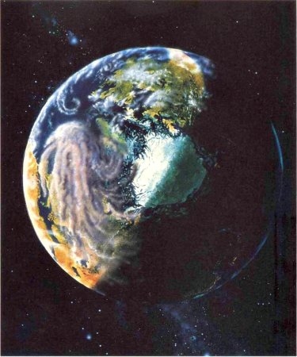
Un impacto cometario con la Tierra a fines del cretáceo levanta una nube inmensa de finas partículas que luego arrastran los vientos dominantes. No pueden verse continentes familiares (Los continentes de la Tierra, debido a la tectónica de placas, eran muy diferentes hace sesenta y cinco millones de años). Se omite por claridad la gran cantidad de escombros de impacto proyectados por la atmósfera que habrían llenado el aire de todo el planeta. Se cree que este oscurecimiento global bloqueó la luz solar y enfrió y oscureció la Tierra. Pintura de Jon Lomberg.
* * * *
Premonición
Las consecuencias de una colisión con un pequeño asteroide que cruce la órbita de la Tierra son inimaginables: las repercusiones se harían sentir en todo el mundo. Al disiparse una energía equivalente a medio billón de TNT, cien millones de toneladas de la corteza terrestre serían proyectadas a la atmósfera y contaminarían durante años el medio ambiente de la Tierra. Un cráter de 22 km de diámetro y quizá de 8 km de profundidad marcaría el punto del impacto, mientras que las ondas de choque, los cambios de presión y las perturbaciones térmicas provocarían terremotos, huracanes y ondas térmicas de incalculable magnitud. Si el asteroide se precipitara al océano —por ejemplo, a 1.000 millas al este de las Bermudas—, la ola de marea resultante, que se propagaría a una velocidad de 600 a 900 km/h, arrasaría las islas bajas, inundaría la mayor parte de Lloriday golpearía Boston a 1.500 millas de distancia con una pared de agua de 30 m de altura... La energía del fenómeno equivale a quinientas mil megatoneladas de TNT, dos órdenes de magnitud superior a la del terremoto más intenso registrado, y cuatro o cinco órdenes de magnitud superior al de Krakatoa... Si el golpe se produjera en medio del océano, tsunamis de la categoría de 30 m de altura causarían daños en todo el mundo. Si el choque se produjera en tierra, la onda de choque arrasaría árboles y edificios dentro de un radio de varios centenares de kilómetros, y subirían a la estratosfera 10 t de polvo de suelo y de rocas, las cuales durante varias décadas reducirían la radiación solar que recibe ordinariamente la superficie terrestre, amenazando con desencadenar una era glacial.
Proyecto de Estudiantes del MIT en Ingeniería de Sistemas, Proyecto Ícaro, MIT Press, Cambridge, Massachusetts, 1968
Este párrafo constituye una premonición importante del impacto del cretáceo y del invierno nuclear.
* * * *
Pero ¿cómo puede un impacto cometario matar a dinosaurios terrestres de cien toneladas de peso y al mismo tiempo a algas microscópicas situadas en un océano al otro extremo del mundo? Se han propuesto unas cuantas soluciones. Quizá unos cianuros cometarios (véase capítulo VIII) envenenaron todo el mundo, o lo hicieron metales tóxicos, o lluvia ácida. Pero los mismos Álvarez sugirieron el mecanismo básico más probable: si tiramos a lo alto una capa de 1 cm de grueso formada por partículas finas terrestres, de modo que alcance la estratosfera, las partículas individuales tardarán un año en caer de nuevo al suelo. Y si un grueso de 1 cm de arcilla cubriendo la Tierra es opaco, también será opaco distribuido por toda la alta atmósfera y cayendo lentamente. La luz solar no podrá penetrar esta nube de arcilla cometaria rica en iridio. La Tierra debió de oscurecerse y enfriarse durante meses o incluso años.
La temperatura media de la Tierra durante el cretáceo fue unos 10 grados centígrados superior a la actual; de acuerdo con los niveles actuales, la Tierra era entonces un planeta tropical, y muchas de sus formas de vida no estaban preparadas para un frío intenso. Las plantas y los animales de los trópicos actuales, donde las temperaturas no bajan nunca por debajo del punto de congelación, tienen pocas defensas contra una helada importante. Los cálculos demuestran que toda la Tierra, inmediatamente después del impacto del cretáceo, se enfrió mucho, quizá a decenas de grados bajo cero. Además, la cantidad de luz que llegaba a la superficie de la Tierra fue durante meses demasiado baja para que la mayor parte de las plantas fotosintetizaran, e incluso demasiado baja para que los animales pudiesen ver. Las plantas terrestres, gracias a las semillas, las esporas y elementos parecidos, pudieron sobrevivir a muchos años de frío y de tinieblas. Pero las plantas microscópicas de los océanos, carentes de reservas alimentarias, debieron de morir rápidamente, y toda la cadena alimentaria oceánica basada en este plancton debió de hundirse poco después. No cuesta mucho imaginar el destino de los dinosaurios, avanzando a duras penas por un paisaje helado, sombrío, devastado, incapaces de encontrar alimentos o calor. Pero los pequeños mamíferos excavadores de sangre caliente tenían muchas más posibilidades de sobrevivir.
Parece, pues, que las extinciones del cretáceo tienen una causa muy similar al llamado «invierno nuclear», una posible consecuencia de la guerra moderna.
La raza humana puede provocar su propia catástrofe climática con el polvo excavado por las explosiones nucleares sobre el suelo y el humo de los incendios de «objetivos estratégicos» situados dentro de la ciudades y en sus alrededores, una catástrofe que quizá podría provocar en nuestra época extinciones en masa semejantes a las del cretáceo. La principal diferencia es que los dinosaurios no fueron los causantes de su propia extinción.
Es probable que si un cometa o un asteroide no hubiese chocado contra la Tierra hace sesenta y cinco millones de años (o después), los dinosaurios estarían todavía aquí y nosotros no. Nosotros seríamos una de las incontables posibilidades no realizadas en los genes y cromosomas de otros seres de la Tierra, como podemos volverlo a ser si no recuperamos pronto el juicio.
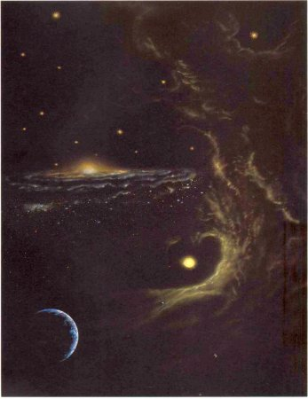
Aparecen en la distancia las bandas de polvo del plano de la galaxia Vía Láctea y su núcleo prominente, mientras la Tierra y el Sol se acercan a una nube interestelar gigante. Pintura de Jon Lomberg.
Capítulo XVI
La cólera del cielo: 2. ¿Un mito moderno?
Al creer que todos los objetos y todos los acontecimientos del universo están ordenados y dirigidos por un Creador omnipotente, debemos admitir también que cuando el Todopoderoso formó el maravilloso plan de la creación, «previendo el fin desde el principio», dispuso los períodos y velocidades de los cometas de modo tal que si bien cruzaran en ocasiones las órbitas planetarias, no atravesaran estas órbitas en el momento en que los planetas estaban en su inmediata proximidad. Y si llega a ocurrir algún día un hecho así, podemos estar seguros de que estará en perfecto acuerdo con el plan y la voluntad de la omnipotencia, y que en su conjunto estará al servicio de la felicidad y el orden del universo inteligente y de los fines deseados por el gobierno divino.
Thomas Dick, Los cielos sidéreos y otros temas relacionados con la astronomía como ilustración del carácter de la deidad y de la infinidad de mundos, Filadelfia (1850)
Me siento en cierta situación de inferioridad para hablar con ustedes de los cometas; hoy día los cometas no son lo que eran.
Arthur Stanley Eddington, «Algunos resultados recientes de la investigación astronómica», discurso del Viernes por la Tarde, Royal Institution, Londres, 26 de marzo de 1909
Si no nos expresamos con precisión, sonará como una historia sacada de la primera época de la ciencia ficción: hace sesenta y cinco millones de años vino un cometa del espacio, chocó contra la Tierra y extinguió gran parte de la vida de nuestro planeta. El descubrimiento de los Alvarez ha desencadenado una especie de revolución científica, cuyas consecuencias se están propagando por la geología, la astronomía y la biología evolutiva, e incluso hacen incursiones en la política internacional y la estrategia nuclear. Es impresionante la relación que este descubrimiento establece entre acontecimientos cósmicos y nuestra misma existencia.
Pero las extinciones del cretáceo no son los únicos ejemplos, ni los más importantes, de extinciones en masa en la historia de la vida sobre la Tierra. Y como comprendieron Laplace y otros, debe de haber habido muchos impactos de cometas (y de asteroides) contra la Tierra. Se han encontrado concentraciones de iridio en otros estratos sedimentarios asociados con otras extinciones en masa (aunque los sedimentos del pérmico que en cualquier lista completa están relacionados con una gran extinción no presentan hasta ahora ningún indicio de anomalía de iridio). El descubrimiento de los Álvarez indujo a muchos científicos de varias disciplinas a plantearse el tema de los impactos cometarios y de las extinciones en masa, y esto ha desembocado en afirmaciones todavía más extraordinarias. Sin embargo, estas recientes teorías son más o menos especulativas y tenemos que leerlas con cuidado, porque algunas ideas se contradicen entre sí, y también por otros motivos.
Las nuevas teorías se iniciaron en la Universidad de Chicago, donde el paleontólogo norteamericano J. John Sepkoski había compilado recientemente una lista fundamental de todas las familias marinas registradas en las rocas sedimentarias. La gran mayoría de familias de la vida identificadas a lo largo de la historia de la Tierra se han extinguido actualmente. Sepkoski tabuló la época en que pereció cada familia extinguida. Comprobó la existencia de un ritmo de fondo de extinciones, más o menos constantes a lo largo del tiempo geológico, debido a muchas causas: formación de montañas, efectos de invernadero, enfermedades, competencia darviniana, etc. Pero sobre este fondo se superponían épocas en que las extinciones se acumulaban una encima de la otra, por ejemplo, a fines del cretáceo y durante las otras grandes extinciones (véase tabla de capítulo XV). De momento, nada de esto era nuevo, aunque los datos sobre extinciones de familias eran los más enciclopédicos compilados hasta entonces.
Pero cuando Sepkoski y David Raup, también de la Universidad de Chicago, analizaron las velocidades de extinción, se sorprendieron al descubrir una especie de periodicidad. Cada veintiséis millones de años más o menos, las plantas y los animales de todo el planeta se morían como a toque de campana. Los autores llegaron a la conclusión que a nivel de familia, género y especie una gran fracción de toda la vida terrestre se extingue a intervalos aparentemente regulares. Extinción. Los científicos tienden a hablar del tema con desapego, pero hay algo inquietante en el espectáculo de estas vidas innumerables apagadas de un soplo, con sus líneas ancestrales perdiendo todo sentido, gracias a un movimiento secular de la guadaña del gran Segador. Lo lógico en este caso es preguntarnos si vamos a ser nosotros los siguientes.
Durante décadas, los paleontólogos han invocado una fantástica variedad de explicaciones para las extinciones en masa, pero ninguno de los mecanismos propuestos lleva incorporada una periodicidad. No parece que la Tierra tenga ciclos de 26, 28 o 30 millones de años ni en volcanismo, ni en tectónica de placas, ni en el clima. Los períodos de tal longitud pertenecen al dominio de la astronomía.
* * * *
Las implicaciones de la periodicidad para la biología evolutiva son profundas. La más evidente es que el sistema evolutivo no está «solo»... Se estima que los porcentajes de especies extinguidas han alcanzado el 77 y el 96 por ciento en los casos más importantes. Por tanto, la biosfera se ve obligada a pasar por estrechos cuellos de botella, y la recuperación después de estos fenómenos va acompañada normalmente por cambios fundamentales en la composición biótica. Sin estas perturbaciones, el curso general de la macroevolución podría haber sido muy diferente.
David M. RAUP y J. John Sepkoski, Jr. «Periodicidad de las extinciones en el pasado geológico», Proceedings of the National Academy of Sciences for the U.S.A., vol. 81, p. 801, 1984
* * * *
...Las pruebas sobre la existencia [de extinciones periódicas en masa] dependen mucho de decisiones arbitrarias sobre la datación absoluta de los límites estratigráficos, la selección de la base de datos y la definición de lo que es una extinción en masa en relación a una extinción de fondo. Estos datos se vuelven insuficientes con otras escalas geológicas plausibles y otras definiciones aceptables de extinciones en masa. El análisis de la base de datos no seleccionada demuestra que la fiabilidad de la identificación de las extinciones en masa y sus fechas es actualmente muy limitada. También indica que la aparente periodicidad de las extinciones en masa se debe a procesos estocásticos [aleatorios].
Antoni Hoffman, «El carácter de las extinciones de familias depende de la definición y de la escala de tiempos geológicos», Nature, vol. 3 15, p. 659, 1985
* * * *
El iridio de la frontera del cretácico ha hecho más aceptable la idea de extinciones en masa periódicas —o por lo menos episódicas— impuestas a la Tierra desde el espacio; pero la idea continúa siendo una píldora difícil de tragar para muchos científicos y otras personas. Aunque aceptáramos de momento que un mecanismo de relojería hace caer del cielo sobre nosotros pequeños mundos, ¿no podría comprobarse este hecho estudiando las edades de los cráteres de la Tierra? Los cráteres están aquí: cráteres pequeños y recientes, no erosionados todavía, y cráteres mayores y más antiguos, el mayor de los cuales tiene más de 100 km de diámetro. Hubo sin duda cráteres todavía mayores, pero los impactos se produjeron en un pasado tan remoto de la historia de la Tierra que las placas que constituyen la corteza terrestre debieron destruir los cráteres hace mucho con su lento movimiento de choque y de sumersión. Varios equipos de científicos motivados por los nuevos descubrimientos han examinado las edades de los cráteres supervivientes, y al parecer han descubierto con satisfacción y asombro simultáneos que los cráteres tienden a ser excavados por impactos de objetos procedentes del espacio cada veintiocho millones de años, un período muy próximo al deducido de las extinciones en masa. Más aún: los acontecimientos señalados están en fase, según estos estudios. Las extinciones en masa tienden a producirse cuando se formaron grandes cráteres, y los dos acontecimientos se debieron presumiblemente a los mismos cuerpos impactantes.
Un dinosaurio contempla su destino mientras el cielo se enciende con el paso de los cometas durante la propuesta lluvia de cometas que dio fin al cretáceo. El dinosaurio representado aquí tenía miembros parecidos a manos y un cerebro de dimensiones mayores en relación al peso del cuerpo que la mayoría de sus contemporáneos. Si los dinosaurios no se hubieran extinguido, quizá la forma dominante ahora de vida inteligente en la Tierra habría descendido de animales como éste. Pintura de Jon Lomberg.
* * * *
Vidrio
Hay esparcidas en algunos estratos sedimentarios de la Tierra inclusiones vítreas, geométricamente lisas, cuyo tamaño va desde unos cuantos centímetros al submicroscópico. Se llaman tectitas. El químico norteamericano Harold Urey propuso por primera vez en 1957 que las tectitas se producen cuando los cometas chocan contra la Tierra, y esta hipótesis que no está decidida definitivamente ha resistido el paso del tiempo. El cometa choca contra la Tierra, excava un gran cráter y en el proceso funde el suelo subyacente: gotitas de silicatos se proyectan a grandes distancias, solidificándose en el proceso y produciendo formas aerodinámicas, a veces de lágrima. En las mismas tectitas hay signos de haberse formado cráteres durante estos fenómenos violentos (véase página siguiente). Las tectitas que aparecen aquí fueron producidas hace algo más de treinta y cinco millones de años. Se ha afirmado y discutido que los estratos sedimentarios que contienen el llamado horizonte microtectítico están relacionados con las extinciones del eoceno. Uno de los especialistas principales sobre estas diminutas formas vítreas se llama Billy Glass (vidrio en inglés)y trabaja en la Universidad de Delaware.
* * * *
Tres muestras de microtectitas. Izquierda, una de Australasia, con un aumento de 50 veces; derecha, una de la Costa de Marfil con un aumento de 190 veces, y en el centro una microtectita de unos 240 micrones de diámetro con cráteres extraños en forma de estrella. Cedidas por B. P. Glass, Universidad de Delaware.
La correlación no es unívoca. En los sedimentos más antiguos del cretáceo la datación de estas fronteras tiene una incertidumbre de muchos millones de años o más; esto explica, entre otras razones, que sea imposible establecer una concordancia precisa entre las edades de los cráteres y las épocas de extinción. Algunos objetos cósmicos debieron de caer en el océano y no dejar cráteres visibles, como sucedió probablemente en el fin del cretáceo. Y como era de esperar, hay cráteres aleatorios que no forman parte de ningún ciclo de veintiocho millones de años.
Desde que se hicieron estos anuncios embriagadores en la literatura científica, unos cuantos científicos han vuelto a los datos originales para comprobar la confianza de las conclusiones deducidas. ¿Hasta qué punto es completa la lista de cráteres? ¿Cuál es la precisión con que se determinaron las épocas de impacto? ¿Cómo definimos una extinción en masa? ¿Qué confianza merecen las fechas de los cráteres o de las extinciones en masa? Supongamos que la formación de cráteres y los fenómenos de extinción se produjeran de modo totalmente casual: ¿qué probabilidad hay de encontrar por casualidad datos espurios de carácter periódico? Los resultados de estos reanálisis no estaban totalmente completados a mediados de la década de 1980, pero en los calurosos debates que han tenido lugar se ha observado una reestructuración constructiva de los fundamentos de varias ciencias. Hay quienes creen en una periodicidad acompasada para la formación de cráteres y las extinciones en masa; otros creen que la formación de cráteres puede ser periódica, pero las extinciones en masa no, y a la inversa. Y hay muchos científicos que, ante las incertidumbres presentes, no creen que existan motivos suficientes para aceptar la existencia de periodicidades, ni en la formación de cráteres ni en las extinciones en masa.
Si este último grupo está en lo cierto, el resto de este capítulo constituye un simple vuelo de la fantasía. Pero si tales periodicidades existen, se ha descubierto una asombrosa relación entre la vida de aquí abajo en la Tierra y los fenómenos del cielo. En algún lugar, un reloj cósmico que marca el día del juicio está haciendo tictac ahora mismo. Por fortuna en el momento actual estamos a medio camino entre dos extinciones en masa. Si la periodicidad se ha deducido correctamente, hasta dentro de quince millones de años no está previsto un nuevo bombardeo. Nuestra tarea consiste en evitar convertirnos en una de las extinciones de fondo; así, dentro de quince millones de años estaremos a punto para los cometas.
Pero ¿cómo puede saber un objeto del espacio que le ha llegado el momento de chocar contra la Tierra? ¿Qué maquinaria cósmica puede actuar como el reloj del juicio final? Tomemos, por ejemplo, la población actual de cometas de período corto, o los centenares de asteroides que cruzan la órbita de la Tierra. Como es lógico, estos cuerpos chocarán de vez en cuando con la Tierra y contribuirán al ritmo de fondo de la formación de cráteres. De hecho, gran parte del iridio de fondo no asociado con catástrofes biológicas puede proceder también de los cometas: sería la aportación constante de las lluvias de meteoros y del polvo zodiacal. Pero su acción es más bien un chapoteo constante, pues esos mundos no se reservan para emprender asaltos en masa contra la Tierra cada treinta millones de años, ni a ninguna otra escala temporal. Los impactos periódicos han de ser obra de otros astros más distantes.
A mediados de la década de 1980 estaban enfrentadas dos hipótesis muy diferentes, cada una de las cuales presentaba un modelo de metrónomo cósmico capaz de dar la hora de las extinciones en intervalos de treinta millones de años. Ninguna de las dos es totalmente satisfactoria; ambas contienen deficiencias. Resulta difícil incluso formular las dos hipótesis sin dar cierta impresión de sensacionalismo, y las informaciones más sensacionalistas aparecidas en la prensa popular han confirmado la desconfianza inicial de algunos científicos. Sin embargo, las dos ideas juntas proporcionan un buen ejemplo de ciencia en transición: deducir una conclusión contundente a partir de datos discutidos. Pero la conclusión plantea un enigma. Dos hipótesis intentan explicar el enigma de modo diferente. Para que la ciencia quede servida, las hipótesis han de formular predicciones distintas sobre los resultados que obtendríamos al efectuar un tipo especial de nuevo experimento. Para la ciencia, la confirmación experimental de las predicciones cuantitativas es lo mismo que el cumplimiento de una profecía para la religión.
* * * *
Lluvia de cometas
Antes de que se propusiera una periodicidad en las extinciones y en la formación de cráteres, J. G. Hills, del Laboratorio Nacional de Los Álamos, propuso(*) que el paso de una estrella, no una estrella acompañante, por el interior de la Nube de Oort podía desencadenar una tempestad de cometas:
La nube de cometas observada puede ser únicamente el halo exterior de una nube cometaria mucho mayor, con un centro de masa situado bien al interior del límite interior observado de la Nube de Oort.
Hills deduce luego que una estrella que pasara a sólo 3.000 u. a. del Sol produciría una lluvia de cometas procedentes de la Nube de Oort interior que generaría un nuevo cometa por hora en las proximidades de la Tierra. Esta lluvia tendría muchas consecuencias, pero la primera que menciona el astrónomo Hills es la siguiente:
¡Este elevado flujo de cometas sería una molestia importante para los observadores astronómicos ocupados en la investigación de objetos de poco brillo!
Tenemos aquí otro de los raros signos de admiración astronómica. Hills continúa diciendo:
El flujo cometario integrado procedente de esa lluvia puede ser tal que produzca el choque real de varios cometas con la Tierra durante la lluvia. Esos choques pueden dejar rastro en el registro geológico.
(*) J. G. Hills, «Lluvias de cometas e índice constante de precipitación de cometas desde la Nube de Oort», Astronómica! Journal, vol. 86, p. 1 730, 1981.
* * * *
Según una de las dos hipótesis, la vida en la Tierra se extingue periódicamente porque la galaxia Vía Láctea tiene la forma que descubrió primero Wright y sobre todo Kant (véase capítulo IV). Nuestra galaxia es un disco delgado con brazos espirales que gira alrededor de un núcleo abultado de estrellas y polvo (véase la portada de este capítulo). En el centro de la Vía Láctea se concentra un enorme número de estrellas; por su brillo, su masa, su posición y su violencia explosiva, este centro es el escenario principal de la galaxia. Afortunadamente, nosotros no vivimos cerca de este centro, no vivimos ni siquiera en sus afueras. Nuestro hogar está situado en el campo, en una oscura región galáctica, donde las estrellas como el Sol tardan doscientos cincuenta millones de años en dar una vuelta entera al cubo distante de la gran rueda.
Pero el Sol, además de dar la vuelta alrededor del centro galáctico, tiene otro movimiento: se desplaza arriba y abajo, atravesando cada vez el imaginario plano de simetría que pasa por el centro galáctico. Cuando el Sol está en su punto de alejamiento máximo, a unos doscientos treinta años luz por encima del plano, se siente atraído gravitatoriamente por el gas, el polvo y las estrellas que tiene debajo, invierte lentamente su dirección y empieza a caer. Pero el plano galáctico es una superficie imaginaria, no real, y cuando el Sol llega a él se encuentra con que posee una velocidad considerable y que allí no hay nada para detenerlo. Atraviesa, pues, a gran velocidad el plano galáctico y sale por el otro lado, donde lo frena progresivamente la gravedad del polvo y las estrellas que ha dejado atrás, hasta que al alcanzar unos doscientos treinta años luz al otro lado del plano galáctico, se detiene y vuelve a caer de nuevo hacia arriba.
El Sol se desplaza por un vacío más perfecto que todo lo conocido por nosotros; por tanto, ninguna fricción retrasa su movimiento. El Sol se mueve para siempre arriba y abajo, como lo haría un peso sobre un muelle perfectamente elástico. El Sol oscilante es una máquina efectiva de movimiento perpetuo. Mientras no entre o salga de nuestras proximidades espaciales gran cantidad adicional de materia, este balanceo galáctico continuará indefinidamente. El período de oscilación depende únicamente de la cantidad de masa que exista en el espacio cercano al Sol, y al parecer los astrónomos han medido bien este dato. El movimiento del Sol puede medirse también examinando las estrellas cercanas con respecto a las cuales se mueve nuestro sistema. Ambos métodos permiten descubrir que el período que va de un cruce del plano galáctico al siguiente por parte del Sol y de su cortejo de planetas y cometas es de unos treinta y tres millones de años. De hecho, todas las estrellas cercanas oscilan arriba y abajo, cruzando el plano galáctico cada treinta millones de años más o menos. Este período es fundamental para millones de soles. Estudiamos las edades de los fósiles y de los cráteres en la Tierra y encontramos una escala temporal de casi treinta millones de años. Observamos al Sol saltando arriba y abajo de la galaxia y encontramos otra escala temporal aproximada de treinta millones de años. Es difícil dejar de pensar que puede existir una relación entre ambos períodos, que la oscilación causa las extinciones.
Pero ¿cómo puede el movimiento del Sol instruir a los cometas para que choquen regularmente contra la Tierra? En nuestra región de la Vía Láctea hay nubes moleculares gigantes dispersas a retazos. No todas se mueven con la misma velocidad que el Sol, y de vez en cuando éste tiene que atravesar una de ellas. Estas nubes se extienden por un volumen mucho mayor que el sistema solar y su masa es muy superior a la del sistema solar. El paso a través o por el lado de una nube así provocará gravitatoriamente una gran agitación entre los cometas de la
Nube de Oort, y desencadenará una lluvia de cometas que descenderán sobre la Tierra y sus mundos vecinos.
Sin embargo, para que este metrónomo funcione, las nubes han de concentrarse en un lugar particular: el plano galáctico, probablemente. Entonces el Sol, cada treinta millones de años, se precipita a través del plano (una vez desde arriba y la siguiente desde abajo) y una lluvia de cometas se dispara hacia el sistema solar interior. Uno o varios de estos cometas chocan contra la Tierra, la luz se apaga y las temperaturas descienden. Si hubiera nubes interestelares instaladas en el plano galáctico, la explicación del Sol oscilante para las extinciones en masa parecería muy prometedora.
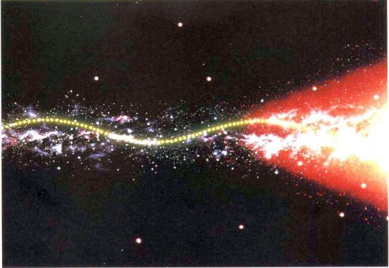
El movimiento del Sol en la galaxia. El Sol gira alrededor del núcleo brillante, rojizo, prominente y de gran masa de la Vía Láctea, tardando doscientos cincuenta millones de años en dar una vuelta. A medida que el Sol circunnavega lentamente el centro de la galaxia, oscila hacia arriba y hacia abajo a un ritmo más rápido, de una oscilación cada sesenta millones de años aproximadamente. Por tanto, cruza el plano de simetría de la galaxia cada treinta millones de años. ¿Desencadena este período de treinta millones de años extinciones en masa en la Tierra? Diagrama de Jon Lomberg/BPS.
Sin embargo, las nubes están distribuidas esencialmente al azar a lo largo de los doscientos treinta años luz de excursión máxima del Sol fuera del plano galáctico. No hay más motivos para encontrarse con una nube en el plano galáctico que para encontrarla a doscientos treinta años luz por encima o por debajo de él. De hecho, en la época actual el sistema solar está a sólo veinticinco años luz por encima del plano de la galaxia (hacia su norte), y no hay ninguna nube interestelar gigante a las puertas de casa. Por tanto, las extinciones deberían tener lugar de modo aleatorio. El período aproximado de treinta millones de años que tarda el Sol en cruzar el plano galáctico no parece que se traduzca en un ciclo aproximado de treinta millones de años para las extinciones en masa de la Tierra (incluso ignorando las diferencias entre los períodos de 26, 28 y 30 millones de años). Quizá haya otro proceso relacionado con la oscilación periódica del Sol por encima y por debajo del plano galáctico que pueda poner en conmoción a los cometas y desencadenar catástrofes globales en la Tierra.
El Sol, en el centro, y su cortejo de cometas representados en azul se encuentran con una gran nube interestelar. La consiguiente perturbación gravitatoria envía una lluvia de cometas al sistema solar interior. Estas lluvias se producen estadísticamente de vez en cuando. Según una hipótesis, su periodicidad se debe también al movimiento oscilante del Sol arriba y abajo del plano galáctico. Diagrama de Jon Lomberg/BPS.
Quizá exista en la galaxia una población aplanada de pequeños agujeros negros primordiales que la Nube de Oort ha de atravesar cuando el Sol sube y baja. Pero suponiendo que exista, hasta ahora nadie ha podido descubrirla, [37] y si la hipótesis no recurre a algo de este tipo, por atractiva que sea, resulta insatisfactoria. ¿Cuál es la alternativa?
La mayor parte de las estrellas del cielo forman parte de sistemas dobles o múltiples. En un sistema binario típico, dos estrellas separadas por varias unidades astronómicas bailan un majestuoso fandango gravitatorio. A menudo, las estrellas están más separadas. En algunos casos, vemos dos estrellas unidas entre sí gravitatoriamente, pero separadas por 10.000 u. a. Por lo menos, el 15 por ciento de las estrellas del cielo parece que tienen una estrella acompañante a esa distancia. El sistema estelar más cercano al Sol, Alpha Centauri, situado a 4,3 años luz de distancia, es una estrella doble con un tercer sol, una compañera distante y oscura llamada Próxima Centauri, y situada a 10.000 u. a. de las dos estrellas brillantes. La estrella acompañante es a menudo muy débil, lo que indica que pueden quedar por descubrir muchas binarias de gran separación. Es posible que gran parte de las estrellas de la galaxia sean astros débiles que los astrónomos calificarían de estrellas enanas, marrones o negras. La mayoría de compañeras distantes podrían ser de este tipo.
El sistema solar parece que constituye una excepción. No conocemos ninguna compañera del Sol. Pero si el Sol no fuera una excepción, si tuviera una estrella acompañante invisible en una órbita muy concreta, podríamos entender de nuevo el reloj de las extinciones.
El Sol, en el centro, y su cortejo de cometas se encuentran con una estrella pequeña y oscura señalada por el punto rojo. La resultante perturbación gravitatoria envía una lluvia de cometas al sistema solar interior. Estos encuentros se producen estadísticamente de vez en cuando. Según una hipótesis, el Sol tiene además una estrella acompañante situada en una órbita muy excéntrica que entra en la Nube de Oort cerca de su perihelio y envía periódicamente una cascada de cometas hacia los planetas. Diagrama de Jon Lomberg/BPS.
Supongamos que hubiera una estrella acompañante con una órbita elíptica tan alargada que en promedio estuviera a 90.000 u. a. de distancia; es decir, 1,4 años luz del Sol. Pero en cada órbita esta compañera se acerca una vez al Sol, a muy pequeña distancia, quizá 10.000 u. a., o incluso menos. La estrella pasaría entonces por el interior de la Nube de Oort, una región cuyos cometas no son perturbados normalmente por estrellas transeúntes. Con una órbita así, cada treinta millones de años aproximadamente la compañera se abriría paso por las partes más densas de la Nube de Oort y enviaría a la Tierra y a sus mundos vecinos una lluvia de cometas.
El año de esta estrella equivaldría a treinta millones de años de los nuestros. Diez vueltas suyas alrededor del Sol la llevarían del pérmico, donde existían dragones con velas en el dorso, a la era actual en la que los humanos exploran los planetas y amenazan la Tierra. La estrella estaría actualmente cerca del afelio, en el punto de su órbita más alejado del Sol. Dentro de quince millones de años provocará el próximo caos entre los cometas. Durante su paso por la región interior de la Nube de Oort, la estrella acompañante rociará el sistema solar interior con mil millones de cometas. Pero los cometas seguirán trayectorias ligeramente diferentes y no todos llegarán al mismo tiempo. El tiempo de llegada abarcará un millón de años o más. Por tanto, la hipótesis de la estrella acompañante predice que el ritmo básico de la formación de cráteres y de las extinciones estará interrumpido periódicamente por intervalos de una longitud de varios millones de años, durante los cuales la Tierra chocará con varios cometas, quizá varias docenas de ellos. Esto explicaría que las extinciones en masa no tengan lugar de modo instantáneo, sino que a veces se extienden por períodos de incluso millones de años.
El período orbital alrededor del Sol de la hipotética estrella acompañante no puede ser exactamente de treinta millones de años; de hecho no puede ser exactamente nada: las perturbaciones gravitatorias debidas a otras estrellas, a las nubes interestelares y al núcleo de gran masa de la galaxia tirarán de la estrella, primero en un sentido y luego en otro, alterando su período orbital. Al final cualquier órbita de este tipo experimentará grandes cambios. Una estrella acompañante podría sobrevivir a los más de mil millones de años en su órbita actual antes de que se la lleven las estrellas transeúntes y la atracción gravitatoria general de la Vía Láctea. Este intervalo es lo bastante largo para explicar las extinciones periódicas y los cráteres de impacto hasta el pérmico, pero, con anterioridad a esta era, la órbita de la estrella acompañante tuvo que ser muy diferente. Si una estrella acompañante hubiese empezado su vida mucho más cerca de los planetas, habría producido lluvias cometarias importantes y casi continuas en la primitiva historia del sistema solar, e incluso podría ser la responsable del «gran bombardeo tardío» de la Luna. De todos modos, es de esperar un flujo cometario intenso en la primitiva historia del sistema solar, cuando los cometas estaban siendo eliminados de la región vecina a Urano y a Neptuno, y eran proyectados o bien lejos del Sol, para poblar la Nube de Oort exterior, o bien hacia dentro, para formar los cráteres de los planetas terrestres (véase capítulo XII).
Pero antes de considerar seriamente posibilidades tan extraordinarias, la hipótesis ha de enfrentarse con un hecho difícil: hasta el momento no hay prueba alguna de la existencia de una estrella acompañante. No es preciso que sea muy brillante ni de gran masa; bastaría una estrella mucho más pequeña y débil que el Sol, incluso una enana marrón o negra, un cuerpo gigante de tipo planetario con masa insuficiente para fusionar el hidrógeno en su núcleo y emitir luz estelar. Es concebible que esta compañera esté registrada ya en uno de los catálogos de estrellas débiles y que nadie haya notado en ella nada extraño: un enorme movimiento aparente de la estrella cada año sobre el fondo de las estrellas más distantes (véase paralaje, capítulo II). Hay en marcha actualmente por lo menos una búsqueda importante de estrellas oscuras y frías, destinada específicamente a encontrar una estrella acompañante del Sol, suponiendo que tal estrella exista. Si la encontramos, y está situada en una órbita más o menos como la espera da, pocos dudarán de que sea la causa principal de las periódicas extinciones en masa de la Tierra. [38] En caso contrario, la hipótesis continuará siendo provocativa pero no demostrada.
A un año luz del Sol una estrella enana todavía no descubierta y quizá totalmente mítica acompaña al Sol brillando con luz rojiza. Cerca de ella hay un hipotético planeta y más cometas, billones de ellos flotando por el espacio, todos débilmente iluminados. Pintura de Anne Norcia.
Pero la idea tiene una potencia mítica. Si un antropólogo de una generación anterior hubiese oído esta historia explicada por sus informadores, el resultante volumen erudito la calificaría sin duda de «primitiva», «precientífica» o «animista». Consideremos esto:
El Sol tiene una hermana negra. Hace mucho tiempo, antes incluso de que viviera la abuela, los dos soles bailaban juntos en el cielo. Pero la oscura tenía envidia de su hermana, que era mucho más brillante. Nos maldijo enfurecida porque no la queríamos y desencadenó una lluvia de cometas sobre el mundo. Vino un terrible invierno, se hizo la noche y el frío fue muy intenso y casi todos los seres vivos perecieron. Al cabo de muchas estaciones, la hermana brillante volvió a sus hijos y de nuevo hubo calor y luz en la Tierra, y la vida se renovó. Pero la hermana oscura no murió. Está escondida, y algún día volverá.
Es comprensible que algunos científicos al oír por primera vez la teoría de la estrella de la muerte pensaran que era una broma. La idea de un sol invisible atacando la Tierra con cometas suena a falsedad o como máximo a mito. Pero la teoría es ciencia seria y respetable, aunque muy especulativa, porque la idea principal puede ponerse a prueba: basta descubrir la estrella y examinar sus características orbitales. Sin embargo, no es de extrañar que uno de los grupos de científicos que propusieron inicialmente la teoría buscara un nombre mitológico para la estrella y decidiera llamarla Némesis, la diosa griega que castigaba con justicia a los hipócritas. Luego dijeron: «Mucho nos tememos que si no se encuentra la estrella, este artículo será nuestra némesis.»
Si no hay ninguna Némesis, resultará más aceptable alguna forma de la teoría de la oscilación galáctica, y habremos aprendido muchas cosas sobre las estrellas débiles cercanas y quizá algo también sobre el «déficit de masa». O se afianzará la postura de quienes dudan de la realidad de las extinciones periódicas. La ciencia no puede perder nada con esta teoría, que ocupa un lugar honorable dentro de ella por la grandiosidad de su visión y por los nuevos descubrimientos que promoverá, aunque al final no se descubra ninguna estrella acompañante. A veces la prensa no ha apreciado debidamente este hecho. El New York Times decidió el 2 de abril de 1985 tomar una postura editorial en este debate científico, y criticó que la discusión de las extinciones
cayera repentinamente en manos de dos presuntuosos científicos de Berkeley y de una multitud de astrónomos... Las causas inmediatas más posibles de las extinciones en masa son fenómenos terrestres, como la actividad volcánica o los cambios del clima o del nivel marino. Los astrónomos deberían dejar a los astrólogos la tarea de buscar en las estrellas la causa de los fenómenos terrestres.
Richard Muller y Walter Alvarez, del campus de Berkeley de la Universidad de California, contestaron al Times en una carta fechada el 4 de abril de 1985, que concluía así:
Ustedes dicen: «Los fenómenos complejos raramente tienen explicaciones sencillas.» La historia entera de la física los contradice.
Ustedes proponen: «Los astrónomos deberían dejar en manos de los astrólogos la tarea de buscar en las estrellas la causa de los fenómenos terrestres.» ¿Podemos nosotros proponer a los directores de periódico la conveniencia de que dejen en manos de los científicos la tarea de adjudicar las cuestiones científicas?
Es probable que el debate continúe.
En cuanto al nombre de la estrella de la muerte, suponiendo que se descubra, el paleontólogo norteamericano Stephen Jay Gould cree que Némesis no es muy adecuado:
Némesis es la personificación de la justa ira. Némesis ataca a los vanidosos y a los poderosos, y trabaja por una causa definida... Representa todo lo que nuestro concepto actual de las extinciones en masa está intentando sustituir: causas predecibles y deterministas que afligen a quienes lo merecen...
Las extinciones en masa no son fenómenos inequívocamente destructivos en la historia de la vida. También son una fuente de creación... Las extinciones en masa pueden ser la semilla primaria e indispensable de cambios y transformaciones importantes en la historia de la vida... Además, una extinción en masa es probablemente ciega ante las exquisitas adaptaciones evolutivas a los medios ambientes previos de épocas normales. Golpea al azar o mediante reglas que trascienden los planes y los propósitos de cualquier víctima.
Gould propone dar a la estrella acompañante el nombre de la deidad hindú Siva, el Destructor, para el cual la destrucción es una condición previa a la creación, y viceversa:
Siva no ataca objetivos concretos para causar algo o para castigar. Su rostro plácido muestra la absoluta tranquilidad y serenidad de un proceso neutral, que no va dirigido contra nadie, pero que es responsable del mantenimiento y del orden del mundo.
Según Gould da a entender, es muy característico de nosotros que la asociación de los cometas con «la ira del cielo», denunciada por Laplace como una superstición, haya conseguido introducirse en las opiniones científicas más recientes sobre la relación entre los cometas y la vida en la Tierra.
* * * *
Se produciría una situación más desastrosa que la provocada por una lluvia de cometas si Némesis sufriera una perturbación tal que la llevara a una órbita dirigida hacia el sistema planetario. En tal caso podría arrancar directamente algunos planetas del sistema solar. Dejaría los restantes planetas en órbitas muy excéntricas que producirían una situación peligrosa, de movimiento rápido... Una Némesis con un semieje mayor de 90 000 u. a. es peligrosa para la vida en la Tierra, pero una Némesis situada en el borde interior de la Nube de Oort habría producido probablemente una catástrofe de proporciones realmente cosmogónicas.
J. G. Hills, «Limitaciones dinámicas de la masa y distancia al perihelio de Némesis y de la estabilidad de su órbita», Nature, vol. 31 I, p. 636, 1984
* * * *
Estos planetas extranjeros, con sus colas y sus barbas, tienen un aspecto terrible y amenazador. Quizá los han enviado para insultarnos.
Bernard de Lontenelle, La pluralidad de mundos, París, 1686
* * * *
El agua corre brevemente sobre Marte después de un impacto cometario. Pintura de Don Davis.
Capítulo XVII
La región encantada
Nuestros conocimientos sobre los cometas han llegado ya al límite final de la tierra firme. Ante nosotros se extiende la región encantada de la especulación.
William Huggins, Sobre los cometas, Conferencia del Viernes por la Tarde, Royal Institution, Londres, 20 de enero de 1882
Todo lo que vemos a nuestro alrededor, vivo o inanimado, ha caído del cielo; o al menos sus átomos constituyentes. En otros tiempos, antes de que la Tierra se formara, estos átomos eran parcelas de mundos pequeños que, al chocar entre sí, fabricaban activamente planetas. En otros tiempos más lejanos, todos los átomos de nuestro interior y de nuestro entorno, todos y cada uno de ellos, estaban flotando en granos microscópicos dentro del espacio interestelar. Cuando la Tierra estuvo totalmente formada, se adhirió a su superficie más materia cósmica, procedente principalmente de los cometas. Todo lo que hay sobre la Tierra es sustancia celestial: acumulada, al menos provisionalmente, sobre esta masa de metal, roca y agua.
En la literatura científica, como en la mitología y en el folklore, las interpretaciones preferidas de los cometas para la vida tienden a ser calamitosas. Sólo de vez en cuando surge la idea de que los cometas pueden ser benignos. Al parecer, fue Isaac Newton quien habló por primera vez en ese sentido en los Principios. Newton afirma que la materia cometaria se acumula en la Tierra:
Los vapores que se desprenden de [...] las colas de los cometas pueden al final encontrarse, gracias a su gravedad, con la atmósfera de los planetas, caer dentro de ellos, y allí condensarse y convertirse en agua y en espíritus húmedos; y desde allí, mediante un lento calentamiento, pueden adoptar gradualmente la forma de sales, sulfuras y tinturas, barro, arcilla, arena, piedras, coral y otras sustancias terrestres.
Se deduce claramente de estas palabras que los cometas están hechos principalmente de agua, aunque Newton no justifique esta afirmación. Éste sigue diciendo que los «vapores» cometarios que llegan a la Tierra compensan exactamente los que se pierden, presumiblemente hacia el espacio, y que esta contribución es esencial para la fecundidad continua de la Tierra. Sorprendentemente, Newton llega a la siguiente conclusión, en un arrebato casi místico:
Sospecho, además, que es de los cometas de donde procede principalmente el espíritu, sin duda la parte más pequeña, pero la más sutil y más útil de nuestra atmósfera, y que tan necesaria es para mantener la vida de todas las cosas, incluyéndonos a nosotros.
Los cometas proporcionan, parece estar diciendo Newton, algo esencial para la vida en la Tierra. Pero al llamarlo «espíritu», sugiere que no está compuesto de materia; y demostrar su presencia en los cometas parecería una empresa de gran magnitud, que Newton ni siquiera intenta.
Otras opiniones entusiastas sobre el papel biológico de los cometas todavía eran más dudosas. E.-J.-L. Sales-Guyon de Montlivault propuso en 1821 que los seres humanos llegaron originalmente a la Tierra cayendo del cielo. El causante fue un cometa. Montlivault notó la ausencia de restos humanos en la mayor parte de los estratos rocosos ricos en fósiles animales. El autor escribía casi cuarenta años antes de El origen de las especies, y creyó razonable imaginar que los seres humanos habían crecido primero en la Luna, que la atracción gravitatoria de un cometa transeúnte arrojó algo de océano lunar a la Tierra y que nuestros antepasados estaban en ese océano. Quizá navegaban en barcas de cañas y hablaban el egipcio antiguo. La evolución nos permitió prescindir de hipótesis tan extravagantes.
Si los cometas debieran contener algo especial para la vida -algo que, por ejemplo, la iniciara o la detuviera—, habría muchas oportunidades de que ese algo surtiera efecto. En toda la Tierra, y en todo momento, hay una fina lluvia de residuos cometarios, partículas que provienen en última instancia de los límites más extremos del sistema solar. Estas partículas caen en la atmósfera, la lluvia y la nieve las transportan, y acaban incorporándose a plantas y a animales. Estamos rodeados de partículas cósmicas en nuestra vida diaria. Las comemos y las respiramos, y estamos hechos de ellas. Algunos de estos átomos extraterrestres están incorporados en el esperma y en los óvulos, y se transmiten a las futuras generaciones humanas.
Además de las partículas poco densas, ricas en materia orgánica, que se encuentran en la estratosfera (véase capítulo XIII), hay otros restos de los planetas, ligeramente mayores. Por ejemplo, si drenamos los fondos del océano y, después de tamizar, examinamos todas las partículas finas más pequeñas que un grano de arena, encontraremos esferas diminutas, casi vítreas. También existen en la tierra firme, pero el suelo está actualmente tan contaminado por partículas finas de fabricación humana, que las esférulas de vidrio resultan aquí más difíciles de encontrar. Su aspecto es tan parecido en toda la Tierra, que podríamos considerarlas el producto de algún pequeño animal de amplia distribución: huevos, quizá, o excrementos. Pero están formadas uniformemente de una especie de roca lisa, y sin duda no son biológicas.
Estas esférulas son los restos de objetos pequeños, originalmente irregulares, que entraron en la atmósfera de la Tierra a gran velocidad, se fundieron por la fricción del aire y cayeron lentamente a través de la atmósfera. Se denominan esferas de ablación meteórica: gotitas que se enfriaron y volvieron a solidificarse, lágrimas que cayeron sobre la Tierra, un poco como las microtectitas (véase capítulo XVI), pero mucho más numerosas que ellas. Si las examinamos, descubriremos que contienen menos cantidad de elementos químicos fácilmente volatizables. El carbono es uno de estos elementos y el sulfuro otro. Es evidente que estos elementos desaparecieron por ebullición durante su entrada en la atmósfera. Pero están presentes en las proporciones cósmicas usuales otros elementos, más refractarios. Las esferas de ablación parecen pequeñas piezas de polvo cometario que se fundieron, pero que sobrevivieron la entrada a gran velocidad en la atmósfera de la Tierra. Cuando en el laboratorio se funden experimentalmente las partículas interplanetarias recogidas a altitudes estratosféricas, adoptan las propiedades físicas y químicas de las pequeñas esferas encontradas en los fondos oceánicos y, más ocasionalmente, en la propia estratosfera. Y aproximadamente, un 10 por ciento de estas esferas procedentes de los sedimentos oceánicos contienen granos del material padre que por accidente han escapado a la fusión. Para remachar el argumento, diremos que las esférulas contienen isótopos radiactivos como el manganeso 53 que probablemente sólo pudieron producirse por rayos cósmicos en el espacio. Entre gotitas y copos estamos inundados de materia cometaria. [39]
El viento, el agua, la temperatura y las actividades de los microorganismos erosionan, abrasionan y descomponen todos esos residuos cósmicos convirtiéndolos sistemáticamente en granos cada vez más finos, hasta reducirlos finalmente a moléculas y átomos individuales. La lenta circulación durante muchos millones de años de la corteza y del manto superior de la Tierra transporta los restos de partículas cósmicas a gran profundidad bajo nuestros pies. El material que antes residía en los cometas se integra, a cientos de kilómetros de profundidad, a alguna gran célula de convección que, al cabo de decenas de millones de años, aflorará a la superficie y creará algún nuevo continente o cadena montañosa. Los cometas pueden parecer tan remotos como un mito o una fábula; pero, de hecho, tienen una realidad muy lúcida: forman parte de nuestro planeta y de nosotros mismos.
Es curioso que los gérmenes, los agentes causantes de las enfermedades, hayan sido, de entre todos los materiales que el hombre ha imaginado que caían de los cometas, los más favorecidos por el folklore y la ciencia. Es sorprendente esta relación establecida en todo el mundo, con independencia de las diferencias culturales, entre los cometas y la peste; y es tentador imaginar la posibilidad de que los cometas sean realmente, y no sólo en la imaginación, portadores de epidemias. Debemos recordar, por supuesto, que a lo largo de la historia humana las enfermedades han sido muy frecuentes; de modo que en ocasiones la aparición de un cometa debió coincidir de modo puramente casual con un brote de peste en algún lugar u otro. Por ejemplo, la creencia de que la gran peste y el gran incendio de Londres se debieron a cometas estaba tan extendida que Daniel Defoe la comentó en su Diario del año de la peste. En 1829 se publicó un libro de T. Forster llamado Causas atmosféricas de las enfermedades epidémicas, que planteaba la misma vinculación.
La idea tiene una notable capacidad de resistencia, y se ha reencarnado modernamente en una forma curiosa. Fred Hoyle es un destacado astrofísico británico que ha realizado importantes contribuciones a la cosmología y a nuestra comprensión de la síntesis de los elementos químicos en las estrellas. También ha escrito obras de divulgación científica, novelas y el libreto de una ópera. Hoyle y el astrofísico de Sri Lanka N. C. Wickramasinghe han examinado la cronología y la distribución geográfica de algunos casos de enfermedades epidémicas, y han llegado a la conclusión de que la pauta observada no se explica por la propagación de la enfermedad por contagio sobre la superficie de la Tierra, sino por una caída de patógenos procedentes del cielo. La mayoría de los epidemiólogos están rotundamente en contra de esta hipótesis.
Además, Hoyle y Wickramasinghe sostienen que las bacterias y los virus están esparcidos por todo el espacio interestelar; incluso proponen audazmente que los granos interestelares — que tienen aproximadamente el mismo tamaño y la misma composición atómica que las bacterias— son de hecho bacterias. Si esto es cierto, las bacterias se habrían incorporado a los cometas cuando se condensaron fuera de la nebulosa solar, la cual estaría compuesta parcialmente de microorganismos.
El alcance de esta propuesta es muy amplio; sin embargo, los datos a su favor son escasos. La compleja maquinaria molecular empleada por ambos bandos en la continua guerra entre infección e inmunidad presupone una larga relación evolutiva entre los hombres y los microorganismos de la enfermedad; esto sería difícil de entender si los microbios hubieran caído recientemente de un cometa que vio por última vez el sistema solar interior hace cuatro mil quinientos millones de años. Parece difícil explicarse la generación de todos estos microbios interestelares; además los microbios no comparten todas las características de los granos interestelares, ni a la inversa. No hay información documentada sobre epidemias importantes relacionadas con espectaculares lluvias de meteoros, después de un año de retraso, para que los microbios puedan ir descendiendo al suelo desde la estratosfera. Además, no tenemos información de que los residuos cometarios recogidos por aviones estratosféricos (véase capítulo XIII) contengan los cuerpos chamuscados y magullados de, por ejemplo, los patógenos de la difteria, la polio o el cólera. No parece que los científicos que examinan las partículas cometarias
recuperadas mueran de enfermedades misteriosas. Hay que incluir estos hechos entre las deficiencias de la hipótesis.
* * * *
Los cometas de la peste y del fuego
El cometa anterior a la peste era de un color sombrío, pálido y lánguido, y su movimiento era pesado, solemne y lento; pero el cometa anterior al incendio era brillante y chispeante o, como dijeron otros, llameante, y su movimiento era rápido y furioso; por tanto, uno predecía un juicio grave, lento pero severo, terrible y espantoso, como la peste; en cambio, el otro predecía un golpe repentino, rápido y violento, como fue la conflagración. Algunas personas eran tan detallistas que cuando miraban el cometa que precedió al incendio se imaginaron no sólo que lo veían pasar con rapidez y violencia, sino que podían percibir su movimiento a simple vista, que incluso podían oírlo; dijeron que hacía un ruido potente y raudo, violento y terrible, que apenas era perceptible en la distancia. Yo vi ambas estrellas y debo confesar que si hubiera compartido las opiniones corrientes sobre el tema..., sólo podría añadir que Dios todavía no había castigado suficientemente la ciudad.
Daniel Defoe, Diario del año de la peste, Londres, 1722
* * * *
Además, Hoyle y Wickramasinghe proponen explícitamente que dentro del cometa ha surgido la vida (en vez de haber sobrevivido a los eones precometarios), y que está cayendo sobre la Tierra para generar enfermedades. También, en este caso, la aparente ausencia de patógenos en los granos cometarios recuperados plantea un serio problema. Pero la idea de que las condiciones del interior de un cometa podrían favorecer el origen de la vida merece una consideración aparte.
El problema principal es el frío. Los cometas de la Nube de Oort son tan lejanos que la débil luz solar apenas puede calentarlos, y su temperatura está muy por debajo del punto de congelación del agua o de otros líquidos abundantes. Pero sin líquidos, y sin atmósferas, es difícil que la vida continúe: las moléculas se mantienen imperturbables, casi inmóviles. Es poco probable que se den a 10 grados sobre el cero absoluto las complicadas transformaciones químicas que deben haber precedido el origen de la vida en la Tierra. Aunque estuviesen presentes todos los bloques constructivos orgánicos necesarios, a estas temperaturas no podrían interaccionar de modo suficiente. Pero la luz solar no es la única fuente de calor.
El interior de la Tierra está caliente en parte debido a la presencia dispersa de elementos radiactivos: uranio, torio, potasio. Cada vez que uno de esos elementos se desintegra, emite un rayo gamma o una partícula cargada que choca con las moléculas vecinas, principalmente silicatos, y las calienta. Por este motivo, en parte, en el fondo del pozo de una mina profunda la temperatura es más alta que en su superficie.
Ahora bien, a medida que los átomos radiactivos se desintegran, se fragmentan con una regularidad estadística. Hay un tiempo característico, denominado la semivida, al cabo del cual se han desintegrado la mitad de los átomos de una especie radiactiva determinada. Las semividas del uranio, del torio y del potasio son de cientos de millones a miles de millones de años: comparables a la edad de la Tierra.
La Tierra en la época del origen de la vida. La Luna, mucho más próxima entonces, pende enorme sobre el horizonte. Las moléculas orgánicas son transportadas a los océanos primitivos por la precipitación de materia cometaria y se generan localmente en la atmósfera rica en hidrógeno por la acción de los relámpagos y de la luz ultravioleta. Pintura de Kazuaki Iwasaki .
Esto no es una coincidencia: todos los átomos radiactivos con una semivida más corta se han desintegrado ya.
Los pasos que llevaron al origen de la vida en la Tierra primitiva, según los modernos experimentos de laboratorio. Algunos de los gases que se supone existían en la primitiva atmósfera de la Tierra aparecen arriba a la izquierda. Los átomos de hidrógeno son los circulitos con halos amarillos. El carbono es blanco, el oxígeno anaranjado, el nitrógeno azul. Las moléculas dibujadas arriba a la izquierda son de vapor de agua (H2O), metano (CH4) y amoníaco (NH 3). La luz ultravioleta del Sol o las descargas eléctricas fragmentan estas moléculas (arriba a la derecha). Los fragmentos se recombinan y forman otras moléculas como cianuro de hidrógeno (HCN) y formaldehído (HCHO). La recombinación posterior de estas moléculas en las aguas amoniacales de la Tierra primitiva produce los aminoácidos más simples (abajo a la derecha), los bloques constructivos de la proteína. Pasos semejantes forman los bloques constructivos de los ácidos nucleicos. Los experimentos que simulan el origen de la vida en la Tierra primitiva han generado moléculas mucho más complejas que las dibujadas en este diagrama. Pintura de Jon Lomberg.
Pudieron muy bien estar presentes, pero desaparecieron al desintegrarse y formar otros átomos más estables. Por tanto, en la primitiva historia del sistema solar debió de haber mucho más calentamiento radiactivo, y es más probable que al originarse el sistema solar los cometas se calentaran interiormente.
Cuanto mayor sea el núcleo cometario, más tiempo necesitará el calor para llegar hasta la superficie por conducción, y más tiempo necesitará el interior para enfriarse. De este modo, si un átomo radiactivo, actualmente extinguido, llamado aluminio 26, hubiese proporcionado el calor inicial, podría haberse mantenido líquido el núcleo de un cometa de 20 km de diámetro durante diez millones de años; y un cometa de 200 km durante mil millones de años. Un cuerpo como el gran cometa de 1729 podría, hipotéticamente, estar transportando en su interior un océano.
Figura de una publicación horticultícola alemana mostrando una relación imaginada entre los cometas y la vida en la Tierra. Las plantas en flor y los hongos atraviesan los cristales de los invernaderos para saludar el cometa Halley. Bolsa de floristas, 30 de abril de 1910. Cedida por Ruth S. Freitag, Biblioteca del Congreso.
Bastaría un cometa con un radio de 100 km, formado principalmente de agua y de otros líquidos, para cubrir toda la superficie de la Tierra hasta una profundidad de 10 m. Un océano interior de estas dimensiones, rico en materia orgánica y con cuatro mil millones de años para las posteriores interacciones químicas, es un lugar interesante. ¿Es probable que pueda desarrollarse la vida en un lugar así?
El problema es que todo está sucediendo a oscuras. Casi todas las formas de vida en la Tierra funcionan, de una manera u otra, gracias a la luz solar. La fotosíntesis común de las plantas es el ejemplo más conocido. Las plantas absorben luz solar y emplean su energía para convertir el agua y el dióxido de carbono en hidratos de carbono y en otras sustancias orgánicas. Los animales viven de las plantas. Apaguemos las luces y el ecosistema entero se derrumbará. Hay unas cuantas excepciones a esta profunda dependencia de la vida respecto a la luz solar, pero no parecen tener gran importancia para el tema de la vida en el interior de un cometa. La luz solar es un recurso renovable. No se agotará del todo durante miles de millones de años. Pero si de algún modo tuviera que brotar vida de un mar subterráneo de este tipo, engulliría las fuentes energéticas no renovables hasta que todas hubieran desaparecido. Entonces no quedaría nada para comer, y la vida acabaría extinguiéndose. La vida en la superficie de un cometa de este tipo es improbable debido a la casi completa ausencia de una atmósfera o un océano. Es posible que en algún momento del futuro encontremos un cometa de este tipo y que podamos perforarlo hasta llegar al océano todavía líquido. Sin embargo, no parece probable que pueda haber algo con vida en él.
* * * *
Es mucho más fácil imaginar el origen de la vida en la superficie de la primitiva Tierra, donde había un océano de tamaño planetario y abundante luz solar. Por tanto, dejemos de lado la idea de que la vida, ahora o en sus inicios, cayó a la Tierra con los cometas, y preguntémonos por el origen de la vida a partir de las moléculas orgánicas en la Tierra. La vida en nuestro planeta está construida enteramente en tomo a un puñado de tipos moleculares, de entre los cuales los más importantes son los ácidos nucleicos y las proteínas. Si pudiéramos comprender la producción de estas moléculas a gran escala en la primitiva Tierra, habríamos dado un importante paso hacia la comprensión del origen de la vida. El concepto científico convencional de hoy día —violentamente discutido en el pasado— es que los bloques constructivos moleculares clave se formaron espontáneamente en la primitiva Tierra, obedeciendo las leyes bien establecidas de la física y la química. La luz ultravioleta procedente del Sol, los relámpagos o incluso las ondas de choque producidas al entrar los meteoros en la atmósfera a gran velocidad, descompusieron las moléculas en la atmósfera primitiva, rica en hidrógeno. Sabemos que los fragmentos se recombinan espontáneamente para formar la sustancia de la vida. [40] Así sucede en el laboratorio, y tuvo que suceder así en la primitiva Tierra. Paradójicamente, los cianuros, el veneno mortal que produjo el gran pánico del cometa de 1910 (véase capítulo VI), parecen haber sido un intermediario esencial en el origen de la vida ¿Podrían haber contribuido los cometas al origen de la vida, no llevando la vida a la Tierra, sino transportando los bloques constructivos de donde brotó la vida?
Hemos visto que en la primigenia historia de la Tierra —antes que las colisiones y eyecciones barrieran el sistema solar interior y lo dejaran limpio— los cometas eran mucho más comunes; un inconfundible rastro de esos tiempos ha quedado preservado en las cicatrices de impacto sobre lunas y planetas. En los primeros cientos de millones de años después de la formación de la Tierra, el flujo de cometas era mucho mayor que en la época actual, más sosegada. Parece que la cantidad de cometas era entonces miles de veces superior, y quizá incluso mayor. Esos cometas, formados principalmente de agua congelada, al chocar con la primitiva Tierra, habrían aportado el agua que contenían. Durante los primeros cientos de millones de años de historia terráquea, los cometas habrían depositado unas 3 × 1015 (3.000.000.000.000.000) toneladas de agua. Pero esto es suficiente para cubrir la superficie entera del planeta hasta una profundidad de casi seis metros. Si el número de cometas del sistema solar interior hubiera sido mayor, la Tierra habría acumulado aún más agua. Posiblemente, la mayor parte del agua de los océanos llegó por correo especial vía cometa cuando la Tierra estaba ya totalmente formada.
Es cierto que los cometas no fueron la única fuente de agua. Las arcillas de los asteroides carbonáceos contienen hasta un 20 por ciento de agua. Sabemos que la lava fundida que llega a la superficie de la Tierra procedente de su interior trae consigo unos cuantos porcentajes de agua, y que los fenómenos volcánicos eran frecuentes hace miles de millones de años. Aun así, es sorprendente que los cometas pudieran haber contribuido tanto a llenar de agua las primitivas cuencas oceánicas.
Las aguas que trajeron los cometas estaban sazonadas con unos porcentajes de materia orgánica compleja. ¿Trajeron quizá los cometas los ingredientes del origen de la vida? Todo depende de la cronología. Si el primitivo flujo de cometas disminuyó mientras la superficie de la Tierra aún estaba en fusión, por compleja que pudiera ser la materia orgánica de los cometas, toda ella se habría descompuesto en el magma ardiente; la vida tendría que haber nacido después y sin que los cometas participasen de modo decisivo.
Pero si la superficie de la Tierra se enfrió antes que finalizara la pulsación inicial de impactos cometarios, todo hubiera sido distinto. Grandes núcleos cometarios habrían caído sobre la Tierra, y la materia orgánica que contenían hubiera quedado prácticamente intacta durante la entrada. Los cometas habrían chocado con la atmósfera inferior y la superficie de la Tierra, habrían explotado y se habrían vaporizado y sus fragmentos se habrían repartido por todo el mundo. Se habría acumulado así gradualmente una sopa cálida y diluida de moléculas orgánicas, que sería el agua y los ingredientes del caldo suministrado por cortesía de los cometas. Esta interpretación no es tan distinta a la del pueblo jukun de Nigeria, según la cual los meteoros representan una ofrenda de alimentos de una estrella a otra.
* * * *
Los cometas no pueden ser hogares para la vida; no están suficientemente condensados; de hecho, probablemente no sean más que acumulaciones sueltas de piedrecitas. Pero aunque los cometas tuvieran un tamaño planetario está claro que la vida no podría mantenerse en ellos; el agua no podría permanecer en estado líquido en un mundo que se precipita de un extremo de temperatura a otro.
E. Walter Maunder, ¿Están habitados los planetas?, Londres, 1913
* * * *
Una solución de materia orgánica de unos cuantos porcentajes es un medio excelente para que la vida comience.
De hecho, podemos imaginar la dilución a partir de procesos enteramente indígenas: la emisión de gases de agua del interior de nuestro planeta para formar los océanos; la irradiación en la atmósfera de gases ricos en hidrógeno; la lenta concentración de moléculas orgánicas en las aguas de la primitiva Tierra y su posterior interacción, con el consiguiente origen de la vida.
De este modo, tenemos dos procesos que compiten —uno procedente del interior y otro del exterior— y ambos parecen desembocar, a velocidades más o menos comparables, en la compleja química orgánica necesaria para el origen de la vida.
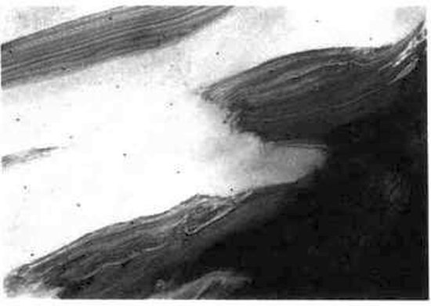
Terreno estratificado en el borde de los casquetes polares del norte de Marte. Las nieves polares de Marte están compuestas de agua helada y dióxido de carbono helado. La imagen comprende unos 100 km de lado. Fotografía del Viking Orbiter. Cedida por la Administración Nacional de Aeronáutica y del Espacio.
Si creamos un planeta como la Tierra, se calentará por sí mismo y desprenderá gases. El agua formará estanques, charcas y lagos. Si el resto de la atmósfera contiene gases ricos en hidrógeno y el Sol está brillando, grandes cantidades de materia orgánica acabarán mezclándose con el agua. Aunque en toda la historia del planeta nunca hubiese caído sobre la Tierra un cometa, continuaríamos comprendiendo fácilmente el origen de la primitiva materia orgánica. Y si la Tierra nunca hubiese emitido sus gases, los cometas podrían haber traído una atmósfera, un océano y grandes cantidades de materia orgánica. Por tanto, al buscar la fuente de las molé
culas orgánicas de donde procedemos, nos encontramos ante la embarazosa situación de poseer dos hipótesis diferentes, y en apariencia igualmente eficaces. Inventar un experimento que pueda establecer una distinción entre las dos hipótesis es una tarea interesante, aunque ambas pueden haber ejercido un papel importante.
Si la primitiva atmósfera de la Tierra contenía cantidades significativas de gases ricos en hidrógeno —CH4, NH3, H2O y similares—, puede comprenderse con bastante facilidad un origen indígena de la vida. Pero si la atmósfera primitiva no era rica en hidrógeno (y existe una escuela de pensamiento que sostiene esta opinión) —sino que contenía, por ejemplo, N2, CO2 y H2O—, es difícil comprender la síntesis de moléculas orgánicas necesarias en la primitiva Tierra para el origen de la vida; y los cometas de pronto ofrecen una alternativa atractiva. Aunque la síntesis indígena fuera totalmente apropiada, los cometas podrían haber proporcionado en todo caso una importante contribución. La receta para la vida podría ser, por consiguiente, la siguiente: coger un millón de cometas, calentarlos suavemente, irradiarlos y esperar mil millones de años.
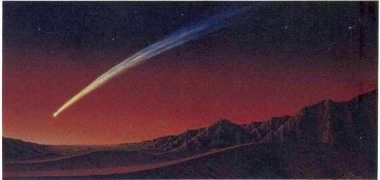
Un cometa sobre Vallis Marineris, Marte. Pintura de Kim Poor.
En este argumento nada es exclusivo de la Tierra. Otros mundos próximos debieron también de sufrir en sus historias primitivas el embate de los cometas. Los océanos posiblemente se acumularon también sobre Venus y Marte, incluso en la improbable circunstancia de que el agua de sus interiores no llegara en cantidad alguna a la superficie de esos planetas. De hecho, tanto en Marte como en Venus hay algunos indicios de antiguos océanos.
En Venus, un mundo que ha perdido actualmente el agua, el poco hidrógeno que aún queda se está escapando rápidamente al espacio. Las moléculas ligeras escapan más fácilmente que las pesadas, porque es más probable que las colisiones casuales las impulsen a una velocidad superior a la de escape. La forma pesada del hidrógeno, el deuterio, se escapa más lentamente que la variedad más común y ligera. A medida que pasa el tiempo, la cantidad de deuterio que existe en Venus en relación al hidrógeno debería aumentar. Es posible así valorar, a partir de las proporciones actuales entre el hidrógeno y el deuterio, cuánta agua hubo en el pasado. Thomas Donahue, de la Universidad de Michigan, y sus colegas han deducido de este modo la existencia de un antiguo océano en Venus, actualmente perdido.
Hoy día Venus es un mundo desolado: su temperatura superficial se eleva a unos 480 grados, debido a un enorme efecto de invernadero dominado por el dióxido de carbono. Pero este gas CO2 no fue emitido a la atmósfera de la noche a la mañana, y es posible imaginar un entorno primitivo mucho más benigno, con océanos que cubrían la superficie, y moléculas orgánicas cometarias disueltas en ellos, chocando entre sí, interaccionando, y creciendo y aumentando en complejidad. La interrupción del alto flujo primitivo de cometas, y la emisión de gases de dióxido de carbono desde el interior, puede haber convertido el paraíso tropical de Venus en un infierno. Quedan por formular unas importantes preguntas a la exploración futura: ¿existe actualmente algún rastro de los antiguos océanos? ¿Es posible que la vida brotara en Venus hace miles de millones de años y que queden algunos restos duraderos, o fósiles, esperando a los futuros exploradores?
Depósitos estratificados cerca del Polo Sur de Marte, signos de una geología compleja y episódica (quizá periódica). La foto tiene casi 200 km de amplitud. Un día máquinas y personas examinarán estos sedimentos para comprender mejor la historia pasada de Marte. Fotografía del Viking Orbiter. Cedida por la Administración Nacional de Aeronáutica y del Espacio.
Un antiguo valle fluvial serpentea a través del paisaje marciano gastado y lleno de cráteres. Fotografía del Viking Orbiter. Cedida por la Administración Nacional de Aeronáutica y del Espacio.
Fotografía del terreno de una región de Marte llamada Utopía tomada por el Viking 2. En el ángulo inferior derecho puede verse uno de los pies de esta nave espacial que aterrizó allí en 1976. El cilindro metálico de arriba cubría antes del aterrizaje el brazo de recogida de muestras de la nave espacial (no visible en la foto). Obsérvese la capa delgada de escarcha que cubre gran parte de la imagen; una porción de esta escarcha debe su origen a los impactos cometarios. Cedida por la Administración Nacional de Aeronáutica y del Espacio.
Estas preguntas pueden efectuarse con mayor seriedad todavía en relación a Marte, porque allí una serie de datos indican la existencia actual de agua abundante: congelada en los casquetes polares, enterrada en la subsuperficie, o combinada químicamente con el suelo. Aunque ahora no haya agua líquida en Marte, los datos indican que el agua corría por ríos y por llanuras aluviales hace mil millones de años. Es posible incluso que en las imágenes de las naves orbitales Viking existan datos sobre las líneas costeras y otras señales de los antiguos océanos marcianos. Marte es un mundo más pequeño que Venus o la Tierra; es decir, que podría haber escapado al espacio una proporción importante de su primitiva atmósfera. También es un mundo más frío, así que gran parte del agua cometaria superviviente podría ahora estar retenida en forma de hielo. En cuanto a Venus, surge la pregunta: ¿creció la vida allí si en tiempos pasados hubo grandes océanos? Quizá alguna expedición del siglo XXI, o un equipo de exploración procedente del primer puesto avanzado de la humanidad permanente en Marte, encuentre rastros de vida.
Los mundos en esta parte del sistema solar muestran los indicios y restos del gran flujo de cometas que llenó el sistema solar interior en esos primeros tiempos tan lejanos. Podemos considerar que la modesta caída actual de residuos cometarios es un débil recordatorio de una época que duró cientos de millones de años y que cambió el aspecto del sistema solar.
Si los cometas transportaron a la primitiva Tierra una parte importante de los océanos actuales, cálculos sencillos demuestran que también habrían traído una cantidad de carbono comparable a la de toda la columna sedimentaria de la Tierra: todo el carbono de las rocas a kilómetros de profundidad, todas las cosas vivas, todo el humus de los suelos, todo el petróleo, el carbón, la turba, el grafito y los diamantes de toda la Tierra. Si algo de esto es cierto, es justo decir entonces que las superficies de la Tierra y de los otros planetas terrestres, después de estar totalmente formados, fueron salpicados con una capa de sustancia cometaria de varios kilómetros de espesor. Este recubrimiento cometario es, hablando en términos relativos, menos denso que el azúcar de repostería de un donut. Pero para nosotros significa el mundo: en este planeta, al menos el polvo de los cometas ha producido vida.
La Tierra primitiva se cubrió de cráteres de impacto, grandes y pequeños, y de excavaciones aún mayores llamadas cuencas. Gran parte del agua que transportaban los cometas se vaporizó en el impacto, y cayó en forma de lluvia. Los cometas hicieron, pues, grandes agujeros, llenándolos efectivamente de agua y salinizándolos con grandes cantidades de materia orgánica compleja: estas tareas se llevaron a cabo principalmente en la primitiva historia de los planetas, cuando se disponía del máximo tiempo posible para que la vida brotase. Tampoco esta historia es exclusiva de la Tierra; lo mismo podía haber sucedido en otros incontables mundos de la Vía Láctea. Es difícil dejar de imaginar a los cometas como duendes cósmicos, que atraviesan raudos el espacio entregando el potencial de la vida a los mundos de este sistema solar y de incontables sistemas más.
Echemos un vistazo a nuestro planeta. Si el flujo cometario existente, después de enfriarse la superficie de nuestro planeta, fue muchos órdenes de magnitud superior al de hoy, ¿qué procede de la Tierra y qué procede de los cometas? En última instancia, todo lo vivo procedería de los cometas: todas las plantas y animales, microbios, hombres y mujeres. Todos los edificios, los ferrocarriles, las carreteras, las roturadas tierras de labranza, las canciones, los submarinos, los vehículos espaciales: todo esto ha sido construido por el hombre, y sólo por este motivo ya deriva de los cometas. Incluso el cielo diurno procede de los cometas, porque la vida creó el O2 y el N2. Bien: al menos podemos afirmar que las rocas son de la propia Tierra, como las montañas. Sí, pero las rocas están oxidadas, alteradas químicamente y descompuestas por el agua y la vida. El agua esculpe y erosiona las montañas. Cuando una masa subyacente del planeta intenta con exquisita lentitud asomarse a través del material cometario, sufre un desgaste implacable. Incluso en el desierto antártico, el paisaje parece haber derivado, de un modo u otro, de los cometas. Es posible que las únicas cosas visibles que existen con total independencia de los cometas sean el Sol y las estrellas. Una capa de material cometario espolvoreó en otros tiempos este mundo, y, durante los siguientes cuatro mil quinientos millones de años, el polvo ha hecho unos cuantos progresos. Ha desarrollado seres complejos, aspiraciones y un primer intento de inteligencia. Y finalmente está dirigiendo su atención a los cometas de donde vino.
Una nave espacial Vega a unos 10 000 km de distancia del cometa Halley a primeros de marzo de 1986. En la distancia, a sólo unos centenares de kilómetros del cometa está la diminuta forma del Giotto, el explorador del cometa Halley enviado por la Agencia Espacial Europea. Pintura de Rick Sternbach.
Capítulo XVIII
Una flotilla de exploración
A mediados del siglo XX el cometa habrá rodeado su más remoto mojón, y comenzará una vez más el largo viaje hacia el Sol, que no terminará hasta 1986. Y de nuevo los telescopios y las cámaras, los espectroscopios y los fotómetros apuntarán hacia Halley con la misma impaciencia que hoy.
David Todd, El cometa Halley, American Book Company, Cincinnati, 1910
Poco antes del amanecer sonó un disparo de rifle y al cabo de un momento pudo oírse el silbido del proyectil que pasó rozando a los tres ocupantes de la góndola. Iban muy abrigados, a pesar de ser el mes de mayo. A primeras horas de la mañana hace mucho frío a uno o dos kilómetros sobre la Tierra. Pero ellos estaban solamente a 500 m de altura cuando les dispararon. Debió de haber sido un espectáculo insólito: el gran globo y su góndola suspendida iluminados por el Sol naciente, mientras la oscuridad envolvía todavía las tierras de Connecticut. Quizá el globo había alarmado a algún campesino, quien creyó que su única solución era derribarlo de un disparo, fuese lo que fuese. O quizá el proyectil era simplemente una protesta formal contra los ricos ociosos y sus costosas diversiones.
Pero éste no era un crucero de placer. Iba a bordo el doctor David Todd, catedrático de astronomía y navegación y director del Observatorio del Amherst College. La especialidad de Todd eran los viajes astronómicos. Durante su carrera profesional había dirigido expediciones a las Indias Orientales holandesas, a Sudamérica, a la costa de Berbería, a Rusia, Japón y África occidental; siempre para observar un eclipse de Sol. En una ocasión desmanteló el laboratorio de la escuela, embaló el telescopio y lo envió a los Andes, en parte para buscar signos de vida en Marte. Ahora, en mayo de 1910, el cometa Halley estaba en los cielos, y David Todd había aprovechado la ocasión y había ascendido, no a mucha altura, desde luego, pero la suficiente para evitar parte de la distorsión causada por la atmósfera de la Tierra. Llevaba a bordo un telescopio pequeño de dos pulgadas y media, de treinta aumentos, con el cual pensaba observar el cometa. La noche era clara y las vibraciones del globo reducidas.
Acompañaban a Todd, Charles Gidden, el piloto, y Mabel Loomis Todd, la extraordinaria esposa del astrónomo. Un historiador reciente la describe del siguiente modo:[41]
Mabel, alegre, de gran talento, sociable, lo bastante popular como para despertar celosas comidillas, era capaz de mantener lazos afectivos y amorosos; eficaz como escritora, conferenciante y editora; y como esposa, anfitriona y amante, supo formarse un carácter extraordinario, de una fuerza y resistencia envidiables.
Fue Mabel Todd, hija y esposa de astrónomos, quien vio el cometa por primera vez. La imagen, dijo su esposo, se captó mucho mejor que «a través del gran telescopio de dieciocho pulgadas del Observatorio Amherst», el observatorio que él mismo había diseñado y construido. La cabeza del cometa estaba cerca del horizonte, y Todd hizo cuatro dibujos de la cola. Parece que ésta fue la primera observación astronómica tomada con éxito desde una plataforma artificial sobre la superficie de la Tierra.
Quince años más tarde, Todd consiguió la primera fotografía de la corona solar tomada desde un aeroplano. Posteriormente, su comportamiento comenzó a ser cada vez más excéntrico, y Todd tuvo que ser internado de modo intermitente en instituciones psiquiátricas hasta su muerte a la edad de ochenta y cuatro años, en 1939. Mabel murió antes que él, llorada por su único hijo, quien recordaba especialmente «su infatigable energía y su contagiosa alegría».
Actualmente, nuevos globos ascienden al cielo. 1985-1986 representa un momento histórico para el estudio de los cometas. Anteriormente, los cometas venían a nosotros. Ahora, por primera vez, nosotros vamos a ellos. La ocasión actual es la aparición del cometa Halley entre el otoño de 1985 y la primavera de 1986. El cometa Halley, aparte su significación histórica (véanse capítulos III y IV), es el único cometa vigorosamente activo con una órbita bien conocida que permite una planificación científica detallada, con años de antelación. Habrá aeroplanos que, siguiendo el ejemplo de David Todd, sobrevolarán la mayor parte de la atmósfera de la Tierra y cohetes que entrarán brevemente en el espacio para echar una ojeada al visitante.
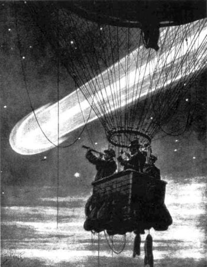
«Un observatorio astronómico en lo alto del aire; tomando observaciones del cometa Halley desde un globo.» Dibujo de Henri Lanos publicado en la revista Graphic, 28 de mayo de 1910. Cedida por Ruth S. Freitag, Biblioteca del Congreso.
El Observatorio del Máximo Solar, no tripulado, reparado por los astronautas de la lanzadera en abril de 1984, examinará el cometa Halley; la lanzadera espacial transportará instrumentos especiales para examinar el cometa, y la atención de la sonda norteamericana Pioneer-Venus Orbiter se redirigirá de Venus al cometa cuando éste pase cerca de ella.
Un viaje espacial para investigar el cometa Halley, tal como lo concibió un periódico de Chicago el 30 de abril de 1910. Cedida por Ruth S. Freitag, Biblioteca del Congreso.
Todo esto, comparado con los niveles de esfuerzo habituales, representa un estudio extraordinariamente coordinado. Pero, en realidad, no deja de ser una especie de entretenimiento, porque una flotilla de cinco naves espaciales pasará cerca del cometa Halley en marzo de 1986 (y una de ellas quizá vuele hasta su interior).
La misión Astro 1 de la lanzadera espacial: instrumentos especialmente diseñados se sitúan en órbita terrestre a principios de 1986 para estudiar el cometa Halley. Cedida por la Administración Nacional de Aeronáutica y del Espacio. Pintura de William K. Hartmann.
El examen a poca distancia de los cometas desde el espacio es la realización del sueño de un astrónomo, ya que nuestra ignorancia sobre los aspectos más fundamentales de los cometas continúa siendo lamentable. Vivimos en el sistema solar interior, y los núcleos cometarios que se acercan a la Tierra tienden a emitir gas y a cubrirse con una coma. Pero si pudiéramos volar cerca de un cometa, podríamos contemplar claramente por primera vez un núcleo cometario. ¿A qué se parece? ¿Qué forma, aspecto y color tiene? ¿Hay zonas de hielo, compuestos orgánicos oscuros, afloramientos rocosos? ¿Está rodeado por un racimo de pequeñas rocas? ¿Hay un depósito de revestimiento? ¿Hay cráteres? ¿Presenta señales de antiguas fusiones superficiales? ¿Hay colinas? ¿Existe algún rastro de estratificación, como en la columna sedimentaria de la Tierra? Si pudiésemos fotografiar un núcleo de cerca, podríamos saber muchas cosas sobre la naturaleza y la evolución de los cometas.
Viene luego la espectroscopia. Si estamos confinados en la superficie de la Tierra, sólo podemos examinar los cometas en el espectro visible, como hizo Huggins, y en unas cuantas «ventanas» en las frecuencias infrarrojas y de radio. Si deseamos examinar los cometas en otras frecuencias, debemos situarnos por encima del manto de aire absorbente de la Tierra. Pero los aparatos que pueden lanzarse en órbita, aunque sea una órbita próxima, han de ser mucho más pequeños que las grandes instalaciones astronómicas de la superficie de la Tierra. Por tanto, la capacidad intrínseca de los instrumentos en órbita terrestre tiende a ser inferior a instrumentos correspondientes instalados en el suelo. Sin embargo, la instrumentación en órbita terrestre puede lograr nuevos e importantes descubrimientos; un ejemplo de ello es el descubrimiento de la coma de hidrógeno alrededor de los cometas (véase capítulo VII). Pero desde el advenimiento de la astronomía orbital se han acercado a la Tierra muy pocos cometas brillantes. La mejor solución es acercar los espectrómetros al cometa. Entonces podremos descubrir cómo están distribuidas las diferentes moléculas a lo largo del núcleo, la coma y la cola.
* * * *
El envío de una sonda a un cometa resolvería ciertamente sin ambigüedades la mayor parte de los problemas cometarios.
Pol Swings, Universidad de Lieja, Bélgica, agosto de 1962
* * * *
Generalmente, la espectroscopia realizada desde la Tierra revela la presencia de fragmentos moleculares, no de las moléculas madre del núcleo cometario de donde proceden. Por ejemplo, se desconoce totalmente la naturaleza de la molécula orgánica de donde deriva C3. Antes de que nosotros detectemos los fragmentos producidos, actúa una compleja maquinaria de emisión de gases, disociación por rayos ultravioletas y otros procesos químicos. Muchos de estos misterios químicos podrían resolverse si pudiéramos volar hasta las proximidades del núcleo, entrar en la nube de moléculas padre y allí medir directamente, antes de que la luz solar las disocie, las moléculas orgánicas e inorgánicas, que acaban de evaporarse del cometa.
Se realizaron muchos estudios en el suelo para detectar algún indicio de material en la cola del cometa Halley de 1910. En Francia se sometió un gran volumen de aire a temperaturas muy bajas, el oxígeno y el nitrógeno se licuaron y los residuos se examinaron, buscando elementos exóticos. No se encontró nada. Se fijaron placas de metal recubiertas con glicerina a los puntales de una torre del Observatorio de Monte Wilson de California, pero no se detectaron motas de polvo cometario. Este experimento es el precursor de los estudios modernos, en los cuales un avión con placas semejantes recubiertas de glicerina vuela hasta altitudes estratosféricas, donde es mucho más fácil conseguir residuos cometarios (véase capítulo XIII). Pero actualmente es posible enviar naves espaciales con espectrómetros de masa a bordo que pueden medir directamente las partículas madre del cometa.
Pensamos que el campo magnético del viento solar envuelve al núcleo cometario, mientras que las erupciones solares producen en el viento solar ráfagas que forman elegantes dibujos en las colas iónicas. Pero comprenderíamos mucho mejor los cometas si llevásemos los instrumentos muy cerca del cometa y midiésemos directamente las partículas cargadas y los campos magnéticos.
Observadores visuales, forzando la resolución de sus telescopios al límite, han detectado grandes fuentes de gas y de polvo proyectándose hacia el espacio desde los núcleos cometarios. Creemos que la mayor parte del polvo liberado por los cometas al espacio surge de este modo. Hemos de acercarnos sigilosamente a un cometa, fotografiar los surtidores — consiguiendo, a ser posible, una imagen cinematográfica— y volar a través de la nube de polvo, contando y midiendo las partículas finas.
Se está llevando a cabo todo esto y más. En el centro espacial nipón de Uchinoura, en la prefectura de Kogoshima, Kyushu, se lanzaron dos nuevos vehículos de la clase Mu. El primero se llama Sakigate (en japonés «pionero»); el segundo lleva la sencilla denominación de Suisei (en japonés «cometa»). Son los primeros vehículos interplanetarios que ha lanzado Japón.
En la isla ecuatorial de Kourou, cerca de la Guayana francesa, en Sudamérica, se ha lanzado un cohete Ariane. Lleva en su cono la primera nave espacial interplanetaria de la Agencia Espacial Europea, un consorcio formado por Bélgica, Dinamarca, España, Francia, Irlanda, Italia, Holanda, el Reino Unido, la República Federal de Alemania, Suecia y Suiza. Se llama Giotto, en homenaje al pintor florentino en cuya Adoración, un famoso fresco de la Capilla de la Arena de Padua, incluyó su propia observación del cometa Halley en su aparición del año 1301 (véase página siguiente).
En Tyuratam, en la República Socialista Soviética de Kazajistán, se elevan al cielo dos cohetes Proton. Su ambiciosa misión es volar hasta Venus, depositar dos naves espaciales para realizar allí un aterrizaje nocturno y soltar dos estaciones en globo que examinen la meteorología de la atmósfera media;[42] luego continuarán hasta encontrar el cometa Halley al cabo de ocho meses. La nave espacial se llama Vega: Ve de Venera, el nombre ruso de Venus, y Ga de Galley, ya que la lengua rusa tiene una G aspirada y carece de H. Hay doce instrumentos científicos distintos en la carga cometaria útil del Vega. Las misiones del Vega llevan, aparte la instrumentación soviética, equipos de Austria, Bulgaria, Checoslovaquia, la República Democrática Alemana, República Federal de Alemania, Hungría, Polonia... y Estados Unidos.
Estados Unidos ha desempeñado un papel clave en la exploración del sistema solar con naves espaciales, examinando por primera vez todos los planetas, de Mercurio a Urano, y docenas de lunas. Pero Estados Unidos no tiene una nave espacial para el cometa Halley. Los científicos e ingenieros norteamericanos propusieron varias misiones innovadoras, las cuales habrían proporcionado una serie de datos esenciales que el Giotto, el Vega y las misiones japonesas no ofrecerán. Pero los gobiernos, tanto demócratas como republicanos, rechazaron las propuestas. No había suficiente dinero. Estados Unidos tenía cosas más importantes que hacer. El coste de una misión de envergadura al cometa Halley es aproximadamente el de un único bombardero B-l. Norteamérica ha encargado cien bombarderos B-l. No hubiéramos tenido bastante con noventa y nueve. Quizá en el año 2061, cuando el cometa Halley regrese de nuevo, la respuesta norteamericana será distinta.
El cometa Halley visto en 1301 y representado como la estrella de Belén. De la Adoración de los Magos, de Giotto di Bondone, fresco finalizado en 1304.
Pero mientras Estados Unidos en este caso ha optado por quedar al margen de la exploración cometaria, la flotilla de cinco naves espaciales de veinte países representa una conmovedora respuesta de la especie humana ante ese emisario de las profundidades del espacio y de la primitiva historia del sistema solar.
Sin embargo, un malabarismo orbital permitió a Estados Unidos ser el primer país que examinó un cometa de cerca desde una nave espacial. Es una nave espacial rudimentaria en cuanto a su instrumentación, incapaz de obtener imágenes, espectros, ni mucha información composicional, sólo principalmente datos sobre las partículas cargadas y los campos magnéticos. No obstante, sin duda fue la primera.
* * * *
El Explorador Cometario Internacional
En 1978 se situó en órbita entre la Tierra y el Sol un satélite llamado Explorador Cometario Internacional Sol-Tierra 3 (International Sun-Earth Explorer 3: ISEE 3), diseñado para estudiar la interacción del viento solar con el campo magnético de la Tierra. Cuando el ISEE 3 hubo concluido su primera misión, se le destinó a una tarea muy distinta. Robert Farouhar, del centro de vuelo espacial Goddard, de la NASA, diseñó una ingeniosa maniobra orbital para que la nave espacial se acercara a un objeto muy interesante llamado Giacobini-Zinner, un cometa activo de período corto que, según algunos astrónomos, tiene la forma de un bizcocho en rápida rotación, con un radio ecuatorial ocho veces mayor que su radio polar. El cometa es también el origen de las partículas poco densas que componen la corriente de meteoros Dracónida o Giacobínida. Sería un placer ver los primeros planos de Giacobini-Zinner, pero no tendremos tanta suerte. ISEE 3 carece de cámara.
Para llegar hasta Giacobini-Zinner, los propulsores de la nave espacial modificaron su órbita y la situaron sobre dos tranouilas transecciones de la región del campo magnético terrestre que apunta, como la cola de un cometa, en dirección contraria a la del Sol; y luego los propulsores llevaron la nave a cinco aproximaciones consecutivas a la Luna, la última de las cuales, a fines de 1983, llegó a 120 km de la superficie lunar. Un fallo menor en el pequeño motor del cohete de la nave espacial podría haberla precipitado contra la Luna. Sin embargo, el efecto acumulativo de los pasos sucesivos por la gravedad de la Luna lanzó la nave espacial (como un cometa de la Nube de Oort que pasase próximo a Júpiter) a una trayectoria muy diferente, que consiguió atravesar la cola del cometa Giacobini-Zinner el 11 de septiembre de 1985.
Esto sucedió casi seis meses antes de que la flotilla de naves espaciales alcance las proximidades del cometa Halley. Podemos pensar, pues, que fue principalmente una maniobra política (como el fracasado intento por parte de la nave espacial soviética no tripulada Luna 15 de transportar, en julio de 1969, una muestra de la Luna unas cuantas horas antes de que el Apolo 11 tripulado norteamericano pudiera hacerlo). Y tendríamos razón. Pero ISEE 3 —rebautizado ahora Explorador Cometario Internacional obtuvo mucha más información útil que si hubiera continuado languideciendo en las proximidades de la Tierra. Descubrió el campo magnético interplanetario que rodea el núcleo cometario, una inesperada partícula de gran energía y fenómenos de campo en la cola. Esta nave espacial es una demostración de las grandes posibilidades de que disponemos actualmente para movernos por el sistema solar interior, siempre que sepamos cómo utilizar un pequeño motor de cohete, las masas de la Luna y de los planetas y las leyes del movimiento de Newton.
* * * *
El International Cometary Explorer se aproxima al cometa Giacobini-Zinner en septiembre de 1985. Pintura cedida por la Administración Nacional de Aeronáutica y del Espacio.
El cometa Giacobini-Zinner, fotografiado por Elizabeth Roemer, Observatorio Naval de Estados Unidos, Flagstaff, Arizona. Fotografía oficial de la Marina de Estados Unidos.
Trayectorias de Venus, la Tierra, el cometa Halley y la nave espacial Vega. El círculo azul interior es la órbita de Venus. El círculo azul exterior es la órbita de la Tierra. La flecha multicolor es la órbita del cometa Halley, y las flechas negras de trazos representan la órbita de la nave espacial Vega: la nave se lanza desde la Tierra (en la posición de las diez horas), se encuentra con Venus (las cinco), luego cruza la órbita de la Tierra dos veces más hasta que intercepta el cometa Halley (las tres). La nave espacial Giotto, cuya misión no tiene componentes planetarias, utiliza una trayectoria algo más sencilla para llegar al cometa Halley. Diagrama de Jon Lomberg/BPS.
La nave espacial Suisei permanece a una distancia discreta del cometa Halley mientras fotografía su coma de hidrógeno en luz ultravioleta. El halo alrededor del Sol es la corona solar. Pintura de Kazuaki Iwasaki.
Una nave espacial Vega encaminándose hacia Venus y hacia el cometa Halley. La gran esfera de la parte superior contiene el módulo de descenso en la atmósfera de Venus, que incluye las estaciones en globo. Los paneles azules son células solares para convertir la luz solar en electricidad. Cedida por el Instituto de Investigaciones Cósmicas, Academia Soviética de Ciencias, Moscú.
Emblema de las misiones Vega. Como se ve, la nave espacial ha soltado el módulo de descenso en Venus y se encamina hacia el cometa Halley. Aparecen las banderas nacionales de los países participantes. Cedida por el Instituto de Investigaciones Cósmicas, Academia Soviética de Ciencias, Moscú.
El Vega lleva también a bordo un experimento norteamericano, debido totalmente a la iniciativa personal de John Simpson, catedrático de física de la Universidad de Chicago, y un veterano en docenas de misiones espaciales estadounidenses no tripuladas. En una época en que Estados Unidos había dejado caducar su acuerdo de cooperación en ciencia espacial con la URSS, indignado aquel país por la política exterior soviética, Simpson diseñó un analizador original de polvo cometario. Propuso su invento en una reunión de la ESA en los Países Bajos, con la esperanza de que sería incluido en el Giotto; sin embargo, antes de un mes, Roald Agsdeev, director del Instituto para la Investigación Cósmica de la Academia Soviética de Ciencias, informó a Simpson que el instrumento había sido aceptado para la misión Vega. Simpson ni siquiera había propuesto su instrumento para la nave espacial Vega. Después de obtener el permiso de las autoridades norteamericanas, Simpson construyó un aparato en el que empleó una tecnología con al menos una década de antigüedad, pues no quería violar las limitaciones norteamericanas sobre la «transferencia tecnológica». Cuando llegó el momento de integrar las cargas útiles, los ingenieros soviéticos preguntaron a Simpson por qué su aparato no tenía un microprocesador como tenían tocios los suyos. Simpson sonrió.
Todas las organizaciones espaciales que participan en el encuentro con Halley se han comprometido a poner los resultados a disposición de los científicos de todo el mundo. Las misiones se han organizado conjuntamente; no sólo para que los diversos instrumentos científicos se complementen entre sí y los datos se intercambien rápidamente, sino también para que los resultados de una misión contribuyan al éxito de las demás.
La nave espacial Suisei sobre una base de prueba en Japón, antes de su lanzamiento. Cedida por la Agencia Espacial Japonesa y la Sociedad Astronómica del Pacífico.
Las más modestas son las misiones japonesas. El Sakigate se considera principalmente una prueba de la maquinaria necesaria para llegar allí, y no pasará a menos de un millón de kilómetros de distancia del cometa Halley. Aun así, medirá el lejano viento solar para compararlo con mediciones de la interacción del cometa con el viento solar realizadas a mayor profundidad. Por su parte, el Suisei, que se acercará a unos 200.000 km, lleva una cámara de televisión ultravioleta para fotografiar la coma de hidrógeno durante un mes o más antes de la aproximación máxima. El hidrógeno se produce por la disociación de hielo de agua cometaria; por tanto, podremos seguir la historia de la emisión gaseosa en el principal elemento volátil del cometa.
La órbita del cometa Halley está inclinada 162 grados respecto al plano del zodiaco o de la eclíptica, el plano que incluye la órbita de la Tierra. Por consiguiente, y debido a las limitaciones de los sistemas de propulsión de las modernas naves espaciales interplanetarias, el cometa puede ser interceptado sólo en los puntos de intersección de su órbita y el plano de la órbita de la Tierra. Por este motivo, las trayectorias de la nave espacial Vega la harán pasar cerca del cometa Halley el 6 de marzo y el 9 de marzo de 1986. Está calculado que la máxima aproximación del Vega 1 sea de unos 10.000 km, y quizá algo menor la del Vega 2. Está previsto que el Giotto se encuentre con el núcleo del cometa Halley el 13 de marzo de 1986 y pase a unos cientos de kilómetros por encima del lado iluminado por el Sol. Debido a la enorme velocidad relativa, el encuentro durará sólo varias horas; y en algunas de las mediciones clave sólo varios minutos.
Pero para poder pasar a varios cientos de kilómetros del cometa, tenemos que saber con una precisión de varios centenares de kilómetros dónde se halla ese iceberg de rápidos movimientos, y nadie conoce todavía su órbita con tal exactitud. El núcleo está envuelto en la coma y desde la Tierra no podemos verlo con suficiente nitidez para medir su posición precisa. Por consiguiente, se ha organizado un proyecto de navegación cooperativo entre la Unión Soviética, Estados Unidos y la Agencia Europea del Espacio. Se llama Pathfinder. Radiotelescopios de la Administración Nacional de Aeronáutica y del Espacio de Estados Unidos escucharán, con la cooperación soviética, las transmisiones de radio desde los vehículos Vega, contra el telón de fondo de quasars mucho más distantes situados más allá de nuestra galaxia Vía Láctea.[43]De este modo podrán determinarse con gran exactitud la posición y el movimiento de la nave espacial relativos a la Tierra. Gracias a las primeras imágenes del Vega, los científicos espaciales soviéticos sabrán con gran exactitud la dirección del núcleo del cometa Halley. Pero si sabemos dónde está el Vega en relación a la Tierra, y dónde está el cometa Halley en relación al Vega, sabremos dónde está el cometa Halley en relación a la Tierra. Esta información deberá ser extraída de las informaciones con mucha rapidez, de modo que el Giotto pueda efectuar una de las maniobras más delicadas: la nave espacial debe pasar muy cerca del cometa para optimizar el detalle fino que las cámaras del Giotto verán en el núcleo cometario. Pero si pasa por el lado nocturno, no habrá casi nada que ver. Sin la cooperación de los radiotelescopios norteamericanos y las naves espaciales soviéticas resultaría imposible a los científicos del Giotto planear su vuelo de aproximación, y la distancia errónea podría ser de 1 000 km o superior. Sólo se dispondrá de un par de días para recibir los datos de posición del Vega y utilizarlos para calcular una trayectoria revisada del Giotto. Será una carrera contra el tiempo y el cometa.
A una distancia de 500 km, el detalle visible más pequeño será de unos 30 m; si las imágenes se toman a menor distancia la resolución será aún mejor. El Giotto volará lo más cerca posible del lado diurno del núcleo del cometa Halley; por tanto, existe la posibilidad de que la nave espacial choque con el cometa, aunque no está planeado que lo haga. Si el impacto se produce, el Giotto se esparcirá por todo el paisaje cometario; la velocidad relativa de la nave espacial y del cometa es de unos 68 km/s. Si esta colisión tiene lugar, unos cuantos fragmentos esparcidos de una máquina procedente de la Tierra quedarán incrustados en las nieves cometarias y serán transportadas más allá de la órbita de Neptuno; como el cadáver de Ahab, amarrado a la gran ballena blanca. Regresará dentro de otros setenta y seis años, quizá para que lo recuperen futuros historiadores de la tecnología.
Aunque el Giotto no choque con el núcleo, existen otros peligros. Generalmente, la piel exterior de una nave espacial tiene sólo unos milímetros de espesor; si no se toman otras medidas, una piel tan delgada sufrirá pinchazos al pasar cerca de un núcleo cometario. Los datos de radar indican que los cometas pueden estar rodeados de una nube de escombros con partículas que pueden alcanzar el tamaño de un puño o superior; y habrá muchas más partículas pequeñas que grandes. La nave espacial tiene, para su seguridad, un parachoques contra meteoros, como el que propuso en la década de 1950 Fred Whipple, el padre del modelo de hielo sucio para el núcleo cometario.
La nave espacial Giotto se acerca delicadamente al núcleo del cometa Halley. Pintura cedida por la Agencia Espacial Europea y la Sociedad Astronómica del Pacífico.
Whipple recomendó instalar alrededor de un escudo más grueso una piel exterior más fina, de modo que las dos capas protejan en conjunto la nave espacial de la mayor parte de las partículas, excepto de las más grandes. La superficie exterior del parameteoros del Giotto está compuesta principalmente de aluminio; la superficie interior es una colmena básicamente alumínica con capas de espuma de poliuretano, epoxy y mylar (semejante a un chaleco antibalas). Las dos naves espaciales Vega llevan algo parecido.
La cooperación internacional también participa de otro modo en el encuentro con el cometa Halley. Supongamos que nos interesa, por ejemplo, registrar hora a hora los chorros que emite el núcleo o la estructura de la cola durante meses cerca del perihelio. La nave espacial no puede manejar una cantidad tal de datos, y tendremos que realizar observaciones desde la Tierra. Pero ésta gira, el cometa sale y se pone, y es preciso distribuir observadores por todo el planeta. Más de novecientos astrónomos profesionales de cuarenta y siete países, y muchos aficionados, han formado una organización llamada Seguimiento Internacional del Cometa Halley, destinada a coordinar las observaciones. El Seguimiento Internacional del Cometa Halley, concebido inicialmente por Louis Friedman, director ejecutivo de la Planetary Society — el mayor grupo terrestre con intereses espaciales—, representa el primer esfuerzo importante organizado a nivel mundial para observar un cometa. Sin embargo, a lo largo de los siglos, la cooperación internacional ha sido una pieza clave en la comprensión de los cometas: el descubrimiento de Tycho de que el cometa de 1577 estaba situado muy por encima de la atmósfera de la Tierra (véase capítulo II) y los cálculos de Newton (véase capítulo III) de la trayectoria del cometa de 1680 se basaron fundamentalmente en observaciones realizadas en varias naciones.
Las cámaras de televisión, tanto del Vega como del Giotto, tomarán fotografías en color. Además, cuentan con Filtros centrados en las frecuencias de emisiones cometarias específicas: C2, por ejemplo, y CN (véase capítulo VIII). Tendremos imágenes del cometa en primer plano pintadas por la luz que emiten estos fragmentos moleculares; William Hughins estaría encantado.
Los científicos, basándose en fotografías tomadas con gran anterioridad al encuentro, confían en cartografiar las posiciones de los chorros nucleares y posicionar las cámaras para que puedan tomar fotografías entre los chorros. Es como ver la casa del fondo del camino durante un claro momentáneo de una tormenta de nieve; aunque probablemente no sea tan difícil. El núcleo, la coma y la cola se examinarán en muchas frecuencias de luz ultravioleta, visible e infrarroja. Se contarán y medirán las partículas de polvo. Unos espectrómetros de masa determinarán la posible naturaleza de las moléculas madre. Se controlarán las partículas cargadas y los campos magnéticos. Es probable que nos encontremos al borde de una revolución en nuestra comprensión de la naturaleza de los cometas. Pero si la historia de la exploración espacial hasta el momento sirve de guía, los descubrimientos más interesantes ofrecerán respuestas a interrogantes aún no formulados.
* * * *
Hubo un tiempo, muy reciente, en que, incluso científicos y pensadores destacados, consideraban absurdo estudiar la composición de los cuerpos celestes. Esa época ha pasado ya. Creo que la idea de un estudio más próximo y directo del universo parece hoy día todavía más descabellado. Pisar el suelo de los asteroides: levantar con nuestra mano una piedra lunar; instalar estaciones móviles en el espacio etéreo; establecer anillos con vida alrededor de la Tierra, de la Luna, del Sol; observar Marte desde una distancia de varias decenas de verstas; aterrizar en sus satélites e incluso en la superficie de Marte: ¡Qué podría haber de más extravagante! Sin embargo, con el advenimiento de los vehículos a reacción [cohetes] comenzará una nueva y gran era de la astronomía, la época de un detenido estudio del cielo.
K. E. Tsiolkovski, Investigación de los espacios cósmicos mediante vehículos a reacción, Moscú, 1911.
* * * *
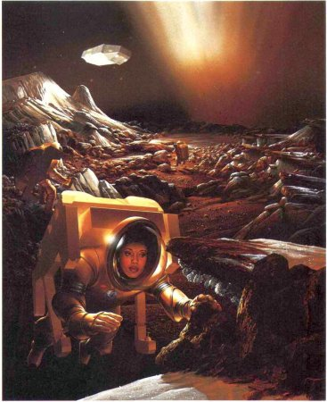
Astronautas de principios del siglo XXI examinan la superficie de un núcleo cometario. Un chorro de hielos volatilizados brota al espacio detrás del horizonte mientras la nave espacial de los visitantes sigue el movimiento del cometa. Pintura de Pamela Lee.
Capítulo XIX
Las estrellas de los grandes capitanes
Sea cual fuere la opinión que aceptemos sobre la constitución física de los cometas, debemos admitir que están al servicio de algún objetivo grande e importante en la economía del universo; pues no podemos imaginar que el Todopoderoso haya creado un número tan inmenso de astros y los haya puesto en movimiento rápido de acuerdo con leyes establecidas, sin un fin digno de sus perfecciones y sin que esto beneficie en su conjunto a los habitantes del sistema a través del cual se mueven.
Thomas Dick, Los cielos sidéreos y otros temas relacionados con la astronomía, como ilustración del carácter de la deidad y de una infinidad de mundos, Filadelfia, 1850
Cuando los hombres descubren algo nuevo sienten una inclinación natural a hacer uso de ello, probablemente en respuesta a sus circuitos cerebrales. Esa extraña proclividad, que no comparten de modo sistemático las demás bestias o plantas de la Tierra, constituye tanto una causa principal del éxito humano como un motivo básico de que estemos despojando una parte tan considerable de la superficie terráquea. Las aves saben, mejor que los humanos, que no deben ensuciar su nido.
Si la tendencia continúa y si no nos destruimos antes a nosotros mismos, parece probable que en algún momento del siglo XXI empezaremos a utilizar también los cometas. Visitaremos el entorno formado por el espacio vacío, las superficies de mundos grandes y los volúmenes enteros de mundos pequeños y los pondremos al servicio de futuros exploradores y colonizadores, robots u hombres. Los recursos, el aislamiento y la perspectiva que ofrecen este nuevo escenario pueden tener una influencia benigna sobre la pendenciera especie humana, pero es por lo menos igualmente probable que la ética ambiental más irresponsable se extienda también al cosmos. Hay bolsas de excrementos humanos tiradas y reventadas sobre la Luna, símbolos vividos del abuso de la tecnología espacial. Otro símbolo es el programa en proyecto de la «guerra de las galaxias», llamado Iniciativa de Defensa Estratégica.
Uno de los atractivos de los cometas es que haya tantos. Aunque la tendencia humana a ensuciar, contaminar y destruir continuara propagándose sin freno a lo largo de los siglos, no sería muy fácil expoliar billones de pequeños mundos, ni siquiera los pocos millones que existen en la región planetaria del sistema solar. Quizá podamos ejercer con más eficacia nuestras capacidades éticas en los cometas que en la Tierra. Sin embargo, sería muy absurdo empezar a «utilizar» los cometas —con las consecuencias que sean— sin antes comprenderlos totalmente. Más tarde puede incluso justificarse la necesidad de triturar y reprocesar cometas enteros, porque de todos modos dentro de unas decenas de miles de años la mayor parte de los cometas de corto período acabarán eyectados fuera del sistema solar, suponiendo que antes no choquen con los planetas o se desintegren o se transformen en asteroides. Por tanto, quizá en este caso esté justificado el consejo «Aprovéchalos o piérdelos», a diferencia del caso mucho más exagerado de la táctica nuclear en el campo de batalla.
¿Cómo podríamos «utilizar» un cometa? Podríamos destruirlo o cambiar su órbita si supusiera un peligro para la Tierra, podríamos explotar sus recursos o podríamos colonizarlo. En este capítulo discutimos cada una de estas posibilidades. Pero una de las relaciones prácticas más tempranas entre los cometas y el vuelo espacial fue muy diferente. Konstantin Tsiolkovski fue un inteligente maestro de escuela ruso que vivió en una época en la que los globos subían más arriba que los cohetes. Tsiolkovski, en una serie de escritos redactados a principios de siglo, esbozó la grandiosa posibilidad de que el motor de un cohete acabara transportando a la especie humana al espacio. Su influencia sobre el programa espacial soviético es todavía perceptible hoy día, y un busto heroico de Tsiolkovski adorna el vestíbulo del Instituto de
Investigaciones Cósmicas de la Academia de Ciencias de Moscú. En una publicación de 1911 titulada La investigación del espacio cósmico por vehículos a reacción, Tsiolkovski escribió:
Desde hace mucho tiempo se ha creído que los cometas provocarían el fin de la Tierra, y no sin motivo, aunque la probabilidad de ese final es extraordinariamente pequeña; de todos modos esto tanto podría suceder mañana como dentro de un billón de años. [Sin embargo], será bastante difícil que un cometa y otros enemigos accidentales, muy improbables pero terribles e inesperados, puedan eliminar de golpe todos los seres que han construido moradas extraterrestres.
Tsiolkovski nos está diciendo que un cometa podría quizá destruir la vida de un planeta, pero no la de muchos planetas a la vez; por tanto, si queremos asegurar la supervivencia a largo plazo de la especie humana, debemos colonizar el sistema solar. Sin embargo, el argumento pierde algo de su fuerza si resulta cierto que las catástrofes cometarias se deben a lluvias de cometas, inducidas por el paso esporádico de estrellas o por nubes interestelares o por Némesis, si este astro existe. (Imaginemos a los astrónomos de una docena de mundos adyacentes observando el movimiento de una estrella enana roja que provoca el caos en la Nube de Oort interior y detectando luego un enjambre de cometas que se acerca a los planetas en número más que suficiente para chocar con cada uno de los mundos habitados.)
Con todo, el argumento general que Tsiolkovski plantea es ciertamente válido: cuantos más mundos haya donde exista una presencia humana autosuficiente, menos probable será que una catástrofe aleatoria extinga nuestra especie. Tsiolkovski no había previsto que dos generaciones después de su época los hombres podrían utilizar para destruir la civilización los motores de cohete que tanto optimismo le inspiraban. La historia de los cohetes tiene muchas ironías de este tipo. Sin duda, el argumento de Tsiolkovski en favor de las colonias espaciales se utilizará para defender la tesis de que la guerra nuclear global no es tan terrible como algunos alarmistas aseguran.
* * * *
La idea de una intervención humana para impedir que un cometa en trayectoria de colisión alcance la Tierra tiene muchos antecedentes en la ciencia ficción, al igual que el concepto de capturar un asteroide o cometa y emplearlo en beneficio del hombre. En Los cazadores de cometas, una novela de principios del siglo XX, escrita por Jean Kerouan, un tal profesor Granger inventa un cañón de rayos para desviar hacia una órbita terrestre un ficticio cometa Granger, hecho que provocará toda una serie de consecuencias climáticas y agrícolas beneficiosas. Pero su traidor ayudante roba los planos y un pequeño fajo de billetes de un multimillonario norteamericano, adopta el nombre de Jan Zagan y monta el cañón de rayos en la frontera tibetana de su nativa Mongolia. Una cosa lleva a otra y Jan Zagan tiene en jaque a la Tierra amenazando con desviar el cometa y hacerlo chocar contra nuestro planeta. Pero Granger y un amable lama tibetano especialista en la transmigración de almas frustran la maligna trama, y reasignan la trayectoria del cometa hacia la Luna. El cometa choca con ella con cierta violencia y despierta a nuestro satélite natural de un largo letargo geológico. Todo finaliza a la perfección, excepto, naturalmente, para Jan Zagan. La historia es más o menos típica de la ciencia ficción sensacionalista anterior a la década de 1940.
Algo semejante sucedía en una novela de 1913 llamada La segunda luna, de R. W. Wood y A. Train (Wood era profesor de óptica de la Universidad John Hopkins, y un importante físico de la época). Los autores imaginaron un asteroide llamado Medusa, cuya órbita, después de ser perturbada casualmente por un casi encuentro con un cometa, apuntaba hacia Estados Unidos. Despega prontamente una nave espacial con un cañón de rayos desintegradores recién inventados que convierte a Medusa en nada menos que una bola de fuego. Una vez alterada atentamente la trayectoria del asteroide, lo que queda de él se retira con prudencia a una órbita segura alrededor de la Tierra, donde podrá aprovecharse de modo productivo. [44]
Cada diez mil años más o menos un cometa o asteroide del tamaño de un campo de fútbol choca con la Tierra. La energía del impacto es de unos diez megatones, equivalente a la de una bomba nuclear potente, y unas mil veces superior a la energía de la bomba que destruyó Hiroshima. La explosión apenas emitiría radiactividad y sería algo menos mortal que una explosión en el suelo de un arma nuclear de potencia comparable. Además impactaría sobre un punto aleatorio de la Tierra; por tanto, sería muy poco probable que cayera sobre una ciudad.
Representación en ciencia ficción de un cometa en el sistema de Saturno. Aparecida en un número de 1936 de una de las principales revistas de ciencia ficción de la época. Cedida por la Biblioteca de Ciencia Ficción, Instituto de Tecnología de Massachusetts.
El cráter resultante, si se excavara en el suelo, podría tener hasta un kilómetro de diámetro. Los daños, aparte el cráter en sí, serían reducidos. La probabilidad de que un objeto así caiga sobre una zona poblada es pequeña; por eso no está claro que puedan justificarse esfuerzos extraordinarios de preparación para una contingencia de tal tipo o para replicar adecuadamente a ella.
Pero cada millón de años más o menos un cometa o un asteroide de un kilómetro de diámetro chocará casualmente con la Tierra. La energía del impacto será ahora de unos diez mil megatones, el equivalente a la detonación instantánea de diez mil millones de toneladas de TNT. (Si reuniéramos en forma de cubo diez mil millones de toneladas de un explosivo químico, el cuerpo resultante tendría más de un kilómetro de lado: sería una pequeña ciudad maciza llena de TNT hasta una altura de trescientos pisos. Esta cifra es sólo algo inferior a la potencia acumulada de todas las armas nucleares que los hombres en general parecen dispuestos a compartir dentro del planeta. (Los arsenales del mundo superan actualmente los trece mil megatones.) Una explosión de tal magnitud proyectaría a la atmósfera tantas partículas finas que podríamos sufrir graves consecuencias climáticas, parecidas a los fenómenos de impacto que al parecer (véase capítulo XVI) provocaron la extinción de los dinosaurios y de la mayoría de especies en la Tierra hace sesenta y cinco millones de años. [45]

Un pequeño núcleo cometario sobre la zona metropolitana de Nueva York antes de hacer impacto. Pintura de Michael Carroll.
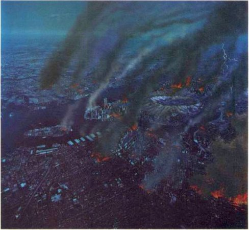
Un pequeño núcleo cometario choca de modo directo e improbable con la isla de Manhattan. Pintura de Michael Carroll.
Visitantes intrépidos pero involuntarios de un cometa. De la novela de Jules Verne, Héctor Servadac.
Los exploradores cometarios de Verne abandonan el cometa cuando éste se acerca a la Tierra en su viaje de regreso y descienden a Europa en globo. Grabado de Frank R. Paul para Off on a Comet, tal como apareció en Amazing Stories, núm. 2 Junio de 1929.
* * * *
Pasó un cometa muy cerca de ellos..., de modo que saltaron sobre él junto con sus criados y sus instrumentos.
VOLTAIRE, Micromegas, 1752
* * * *
Si un acontecimiento así se da en promedio una vez cada millón de años, hay una posibilidad en un millón de que suceda el año próximo. Pero una posibilidad en un millón es aproximadamente el riesgo que supone tomar un avión de una línea comercial. Muchas personas se toman en serio ese riesgo. Por tanto, está justificado refinar primero nuestro censo de los cometas y asteroides cercanos a la Tierra, que podrían algún día chocar con nosotros, y en segundo lugar preguntarse si la tecnología existente pone a nuestra disposición los medios suficientes para desviar o destruir cualquier objeto que descubramos caracterizado por una alta probabilidad de impacto contra la Tierra.
Estos objetos se buscan con telescopios terrestres de gran angular, como los telescopios Schmidt, del Observatorio Palomar de California, donde la astrónoma norteamericana Eleanor Helin está descubriendo tales objetos al ritmo de varios por año. Pero estas investigaciones sufren lamentables estrecheces económicas. Probablemente hay dos mil mundos cercanos de un kilómetro de diámetro, de los cuales sólo conocemos unas cuantas docenas, y unos cien mil objetos de 100 m de diámetro, más o menos, de los cuales sólo conocemos unos cuantos, todos ellos descubiertos recientemente. No es sólo cuestión de buena ciencia, sino también, como ha subrayado recientemente Eugene Shoemaker, cuestión de simple prudencia aumentar el ritmo de descubrimiento de cuerpos situados en las proximidades de la Tierra, con especial dedicación a los más grandes y más oscuros. (La mayor parte de los brillantes y grandes ya se han descubierto.)
En cuanto a «hacer» algo con un cometa o un asteroide errante, se han llevado a cabo algunos estudios provocativos. La labor pionera fue un proyecto estudiantil del Instituto de Tecnología de Massachusetts en 1967, en un curso problema para graduados llamado «Ingeniería de sistemas espaciales avanzados». El problema era Ícaro, un asteroide de órbita próxima a la Tierra que, según los cálculos, tenía que pasar el año siguiente a unos seis millones de kilómetros de la Tierra. Supongamos, decía el enunciado, que Ícaro volara directamente hacia nosotros. ¿Qué podríamos hacer? Estudios consiguientes han confirmado las conclusiones generales del proyecto Ícaro. El trabajo conjunto de los estudiantes y la facultad durante este curso se publicó atípicamente en forma de libro, y desembocó en una película de Hollywood de elevado presupuesto. [46]
Los ingenieros del MIT abandonaron los cañones de rayos de la generación anterior y escogieron armas nucleares de gran potencia y cohetes Saturno 5. Cuanto mayor es la potencia de la explosión, más grande será el cráter resultante. Pero cuando la profundidad del cráter es comparable al tamaño del objeto invasor, se alcanza un nivel a partir del cual el rendimiento disminuye; armas de potencia superior no harán más que dividir el objeto en muchos fragmentos. El equipo del MIT estimó que Ícaro podía «destruirse» con la explosión de unos centenares de megatones, o más probablemente de unos cuantos miles de megatones, una buena fracción del actual arsenal global. Sin embargo, no está claro que fragmentar un cometa grande en una trayectoria de colisión y obtener centenares o miles de piezas ayude mucho a los habitantes del planeta hacia el cual se dirige. Es un tópico de las películas de ciencia ficción eliminar la amenaza «desintegrando» el objeto intruso; en realidad todos los fragmentos continuarán avanzando en compañía del antiguo centro de gravedad y muchos chocarán contra la Tierra, llevando la destrucción a una superficie muy superior a la que habría afectado el objeto entero. Es mucho más lógico empujar un poco el cometa o asteroide y situarlo en una nueva órbita que no lo acerque peligrosamente a la Tierra. El grupo del MIT demostró que también esto podía llevarse a cabo con armas nucleares. Supongamos que sólo nos damos cuenta de la inminencia de un impacto real en el último momento y que se nos pide que desviemos al intruso en el momento fatal de su aproximación a la Tierra. En tal caso se precisarían grandes potencias, quizá de miles de megatones. Habría que situar las armas nucleares todas juntas sobre la superficie del núcleo cometario y detonarlas a la vez. [47] El hielo vaporizado, el polvo y los compuestos orgánicos saldrían proyectados al espacio desde un lado del núcleo, formando un motor de cohete fugaz pero efectivo y de una potencia sin precedentes. Podríamos de este modo acelerar o frenar el cometa, cambiar su órbita y salvar la Tierra. Pero sería mejor estar advertidos con mucha anticipación de la colisión. Podríamos entonces afinar el problema en una órbita anterior, provocando explosiones mucho más pequeñas en el afelio o el perihelio. Un cambio pequeño de velocidad se multiplicaría en órbitas sucesivas. El empuje exigido sería tan pequeño que bastarían explosivos convencionales en vez de nucleares, o incluso bastaría un motor auténtico de cohete hincado en el asteroide o cometa agresor y que utilizaría materiales locales como carburantes, oxidantes y masa de reacción. Esta solución más sutil del problema se descubrió después del estudio pionero del MIT. Al parecer, la moraleja es que un poco de ciencia vale más que muchos megatones.
Llegados a este nivel, y habiendo considerado ya la posibilidad de cambiar el rumbo de asteroides y de cometas para impedir su choque contra la Tierra, podemos imaginarnos reajustando sus órbitas con otros objetivos. Antes de que el hombre inventara la minería, la única fuente de hierro para la metalurgia de que disponía eran los meteoritos. Este hecho se conmemora todavía en muchos idiomas que relacionan la palabra «hierro» con la palabra «cielo». (La palabra latina siderus viene de otra que significa estrella o constelación, como en la palabra española «sideral»; y la palabra «hierro» en griego es sideros.) Hace miles de millones de años un asteroide se funde y forma un núcleo de níquel-hierro debajo de su manto rocoso; una colisión violenta contra otro asteroide arranca el manto y deja desnudo el núcleo metálico, y una colisión subsiguiente proyecta al espacio un trozo de hierro. Millones de años después el trozo cae en la Tierra, asustando a un miembro itinerante de alguna tribu y proporcionando otro incentivo en el camino hacia la tecnología y la civilización. Los hombres ya tenemos experiencia en el trabajo con recursos extraterrestres.
Donde haya tales países, debería haber un sinfín de cosas provechosas.
Cristóbal Colón, Diario del primer viaje, 27 de noviembre de 1492
El grupo de metales al cual pertenece el platino (véase capítulo XVII) es relativamente más abundante en los asteroides, y probablemente en los cometas, que en la Tierra; por tanto, pueden existir motivos económicos reales para minar pequeños astros cercanos. Un asteroide de 100 m de diámetro tiene una masa de un millón de toneladas. Hay unos cuantos centenares de miles de ellos en las proximidades de la Tierra. En un planeta como el nuestro, con un suministro decreciente de metales accesibles, entre ellos níquel y el grupo del platino, esta circunstancia puede proporcionar un incentivo significativo para la utilización comercial de los asteroides. Se remolca un motor de cohete hacia el asteroide, se fija sobre él, se pone en marcha y se cambia con él su trayectoria. Quizá se aproveche una aproximación a la Luna o a un planeta cercano para proyectar el asteroide a una órbita conveniente alrededor de la Tierra; allí se desmonta y grandes naves de carga transportan los metales valiosos a la Tierra.
Desde un punto de vista puramente económico, se trata de saber si el dinero gastado en capturar, desmontar y transportar material de asteroides a la Tierra daría o no más rendimiento invertido en la extracción de minerales terrestres procedentes de depósitos menos accesibles o situados a mayor profundidad. Los beneficios comerciales de la minería espacial resultan más evidentes en la construcción de grandes estructuras en órbita terrestre, suponiendo que estas construcciones estén justificadas; por ejemplo, para fabricar fármacos y aleaciones exóticas, para investigaciones científicas, como estaciones de tránsito hacia los planetas, o —si somos tan estúpidos para permitirlo— para introducir sistemas bélicos en el espacio. Es muy costoso transportar materiales al espacio desde la superficie de la Tierra luchando contra la fuerza de la gravedad, y mucho más barato utilizar materiales que ya estén allí. La Luna ya está en órbita alrededor de la Tierra, pero por desgracia parece que en ella se han agotado unas cuantas sustancias clave, especialmente agua y compuestos orgánicos. Si en el siglo próximo la humanidad inicia grandes construcciones orbitales, lo lógico será utilizar asteroides y cometas como materias primas. Conseguiremos así una práctica considerable en el arte de vivir sobre pequeños mundos y de desplazarlos a voluntad por el sistema solar interior. Es probable que esta capacidad nos abra un maravilloso panorama.
Como ya hemos dicho, hay aproximadamente cien mil mundos que cruzan la órbita terrestre, cada uno de unos 100 m de diámetro. Muchos de ellos son de origen cometario. El área total de todos esos mundos es de 10.000 km 2, un territorio considerable, aunque cada uno de ellos sólo tenga el tamaño de una manzana de un centro urbano. Si hay cien billones de núcleos cometarios en la Nube de Oort, sumando su región exterior y su región interior, la superficie total de los cometas equivale a centenares de millones de planetas del tamaño de la Tierra. La perspectiva de cien millones de Tierras aparcadas convenientemente en el patio trasero de casa es bastante emocionante.
Los cometas se desplazan tan lentamente que sería posible alcanzarlos incluso con la tecnología actual. Un cometa necesita un millón de años o más para llegar hasta nosotros desde la región exterior de la Nube de Oort; la nave espacial Voyager atravesará la misma distancia en diez mil años, y las futuras tecnologías de probable desarrollo rebajarán el tiempo de desplazamiento a una duración inferior a la de la vida humana. Si queremos plantear dónde han de vivir los hombres en el futuro lejano, los cometas ofrecen con mucho la gama más amplia de posibilidades. Unos cuantos kilómetros cuadrados no pueden acomodar a muchas personas; por tanto, debemos imaginar un gran número de pequeños mundos, cada uno de ellos poco poblado. Pero ¿en qué sentido puede considerarse habitable un cometa?
Los asteroides troyanos. Aparece dibujada la órbita de la Tierra (al fondo) y la órbita de Júpiter (en primer plano), mientras los dos planetas giran alrededor del Sol. Dos regiones de la órbita de Júpiter situadas 60 grados antes de él y 60 grados después atrapan los escombros interplanetarios. Son dos ejemplos de posiciones relativamente estables llamadas Puntos de Lagrange. Es posible que en estos puntos se hayan concentrado colecciones considerables de cuerpos asteroidales y planetarios que esperan la llegada de futuros exploradores. Diagrama de Jon Lomberg/BPS.
Cuando el cometa está lejos del Sol ha llegado la hora de hibernar. Júpiter aparece arriba a la izquierda con sus cuatro grandes lunas. De Héctor Servadac de Jules Verne.
Núcleos cometarios situados en las proximidades de Saturno sostendrán dentro de unos cuantos siglos el crecimiento de inmensas formas arbóreas producto de la ingeniería genética. Pintura de Jon Lomberg.
* * * *
Cometas con bosques
Os propongo, pues, una visión optimista de la galaxia como morada de la vida. Allí fuera hay innumerables millones de cometas, con amplia provisión de agua, carbono y nitrógeno, los componentes básicos de las células vivientes. Cuando los cometas se acercan al Sol vemos que contienen todos los elementos comunes necesarios para nuestra existencia. Sólo les faltan dos requisitos esenciales para el asentamiento humano: a saber, calor y aire. La ingeniería biológica vendrá ahora en nuestra ayuda. Aprenderemos a criar árboles sobre los cometas... En un cometa de 15 km de diámetro los árboles pueden crecer hasta alcanzar centenares de kilómetros de altura, y recoger la energía de la luz solar en una superficie miles de veces superior a la del mismo cometa. El cometa visto desde muy lejos parecerá una pequeña patata con una inmensa selva de tallos y hojas brotando de ella. Cuando el hombre se instale para vivir en los cometas Quizá piense que está retomando a la existencia arbórea de sus antepasados. No sólo llevaremos árboles a los cometas, sino una gran variedad de flora y de fauna para creamos un medio ambiente tan bello como el que haya existido nunca en la Tierra. Quizá enseñaremos a nuestras plantas a fabricar semillas que navegarán a través del océano del espacio y podrán propagar la vida sobre cometas que el hombre no ha visitado todavía.
Freeman Dyson, «El mundo, la carne y el demonio», tercera conferencia J. D. Bernal pronunciada en Birkbeck College, Londres. Reproducida en Comunicación con inteligencias extraterrestres, C. Sagan, encargado de la edición
* * * *
Creo que uno de los designios principales del Creador al formar un número tan vasto de cuerpos espléndidos es que puedan servir de habitación a miríadas de seres inteligentes... Si admitimos esta idea, deberíamos contemplar la aproximación de un cometa no como un objeto de terror ni como un mensajero del mal, sino como un mundo risueño, de una construcción diferente de la nuestra, que transporta a millones de seres felices dispuestos a explorar una nueva región del imperio divino...
Thomas Dick, Los cielos sidéreos y otros temas relacionados con la astronomía, como ilustración del carácter de la Deidad y de la infinidad de mundos, Filadelfia, 1850
* * * *
Desde luego, todas las necesidades moleculares de la vida pueden satisfacerse en los cometas. Los hombres, como la mayor parte de las formas vivas de la Tierra, está compuestos principalmente de agua, y aparte quizá de unas cuantas lunas del sistema solar exterior, no se sabe que haya mundos más ricos en agua que los cometas. Estos también contienen grandes cantidades de moléculas orgánicas, útiles para la ingeniería agrícola y biológica, y roca y metales en cantidad probablemente suficiente para las aplicaciones prácticas. Las grandes cantidades de agua indican también que podría extraerse fácilmente oxígeno para la respiración, y los cohetes del tipo Centaur que trabajan con hidrógeno y oxígeno líquidos podrían reabastecerse fácilmente en una superficie cometaria. En cada uno de estos aspectos, los cometas constituyen bases y hábitats mucho más acogedores que, por ejemplo, los asteroides, rocosos y metálicos.
Pero la vida en la Tierra, casi toda la vida, se mantiene gracias a la energía solar. Las plantas cosechan la luz solar y los animales cosechan las plantas. El sistema solar interior está inundado de luz solar, pero está vacío de agua, a excepción de la Tierra y de Marte. En cambio, el sistema solar exterior es rico en agua (helada), pero pobre en luz solar. El mediodía ecuatorial en un mundo sin nubes del sistema de Saturno no brilla más que el crepúsculo de la Tierra. El agua está donde falta la luz, y viceversa: un hecho que subrayó hace muchos años el escritor científico norteamericano Isaac Asimov.
Un cometa arbóreo abandona la Nube de Oort y se encamina hacia las estrellas. Pintura de Jon Lomberg.
Gracias a la moderna tecnología podemos imaginarnos interviniendo para restablecer el equilibrio que el sistema solar descuidó. Podríamos empujar o halar los cometas (y las rocas de hielo de los anillos de Saturno) hacia el sistema solar interior, donde extraeríamos directamente el hielo de la superficie o, en el caso de cometas cercanos extinguidos, perforaríamos el depósito de revestimiento para alcanzar el núcleo helado subyacente. Disociaríamos luego el agua para fabricar carburante y oxidante de cohete,-y para proporcionar oxígeno a los puestos avanzados del hombre en el espacio y en otros planetas terrestres. Los cometas pueden proporcionamos tanta agua que incluso podríamos suministrarla a regiones escogidas de mundos resecos, lo que nos permitiría trasplantar la vida a entornos hasta entonces desolados. La materia orgánica de un cometa muerto o de un asteroide carbonáceo finamente pulverizada podría utilizarse también como un medio de crecimiento para los seres vivos, y para moderar el infernal clima de Venus mediante el mismo mecanismo propuesto (véase capítulo XVI) para explicar la extinción de los dinosaurios y el posible invierno nuclear. Los cometas extinguidos de núcleo helado quizá estén a las puertas de casa y puedan ser un factor crítico en la utilización humana del espacio durante el próximo o los dos próximos siglos.
Los elementos biológicos esenciales que no suministran los cometas, por lo menos directamente, son el calor y la energía. Los cometas sólo reciben estos elementos cuando se acercan al Sol. Podemos imaginar fácilmente vastos conjuntos de paneles solares desplegados sobre los cometas o a su alrededor, suponiendo que estuvieran bastante cerca del Sol, lo que probablemente incluiría hasta la órbita de Saturno. A distancias superiores podemos imaginar grandes reactores nucleares dando energía a las bases cometarias. Si los reactores de fusión — alimentados por la misma agua— estuvieran disponibles a mediados del siglo próximo, como predicen algunos especialistas, constituirían una fuente de energía ideal para las bases cometarias, debido a la abundancia de hielo de agua corriente y de agua pesada congelada, HDO y D2O (donde D indica deuterio, una forma de hidrógeno pesado que tiene un neutrón en su núcleo, además de un protón).
Los cometas de la Nube de Oort experimentan un lento proceso natural de fuga hacia el espacio interestelar, que la tecnología humana puede acelerar en el futuro. Diagrama de Jon Lomberg/BPS.
La visión que ofreció Thomas Wright de innumerables soles rodeados por rosetas de órbitas cometarias. De su obra Teoría original del universo (1750). Cedida por Michael A. Hoskin.
El físico de origen británico Lreeman Dyson ha propuesto una idea más romántica: según él, la ingeniería genética permitirá algún día diseñar un árbol especial de un tamaño sin precedentes que crecerá en los cometas muy alejados del Sol. El árbol se plantará en las nieves orgánicas y crecerá enormemente para que sus hojas puedan recoger una cantidad suficiente de la escasa luz solar. El árbol ha de cumplir varias condiciones, como el aislamiento térmico, la estanqueidad de los gases en relación al vacío adyacente y otras. Gracias a la baja gravedad, el peso del árbol no limitará su crecimiento, y Dyson imagina bosques mayores que los cometas de donde broten. El oxígeno producido por la fotosíntesis «bajará hasta las raíces y será liberado en la región habitada por los hombres, que vivirán cómodamente instalados entre los troncos de los árboles». «Will» se muestra aquí algo optimista, aunque no parece que la propuesta contenga elementos imposibles. Pero muy lejos del Sol —por ejemplo, en el interior de la Nube de Oort—, incluso estos proyectos heroicos han de fallar; el Sol queda demasiado lejos y habrá que recurrir a alguna especie de reactor de fusión para dar energía a los ciclos biológicos y mantener el lugar a una temperatura tolerable.
Es una ley de la biología y también de las relaciones humanas que el aislamiento fomenta la diversidad. Imaginemos una época en el futuro lejano con millones de cometas habitados, cada uno de los cuales albergará no más de unos centenares de personas. Dentro de la Nube de Oort, un mensaje de radio necesitará un día o más desplazándose a la velocidad de la luz para llegar de un cometa colonizado a otro. Quizá esto mantendrá cierta homogeneidad cultural entre esa multitud de mundos, pero la falta de visitas frecuentes permitirá una lenta divergencia de las normas culturales y de comportamiento, y una enorme diversificación de opiniones sociales, políticas, económicas, religiosas y de otro tipo. Esta evolución podría tener grandes beneficios para la especie humana; sin embargo, es difícil imaginar las ventajas que podría reportar a los Estados de la Tierra por separado, las únicas organizaciones actuales con suficiente dinero para pagar la factura; y los Estados nacionales han preferido históricamente anteponer sus beneficios propios de corto plazo al bienestar de la especie. Por este y por otros motivos, la época en que la mayoría de miembros de la especie humana se haya dispersado por los cometas queda todavía muy lejos. Pero a largo plazo, y si la tecnología espacial continúa desarrollándose, iremos a donde haya superficie, agua y materias orgánicas; es decir, a los cometas.
* * * *
Si en el futuro lejano acabamos poblando no sólo los pequeños mundos vecinos, sino también los cometas de la misma Nube de Oort, habremos llegado, mediante una serie de pequeños pasos, a medio camino de la estrella más próxima. Existe una progresión natural que lleva desde allí al resto de la galaxia. La colonización de la galaxia se producirá de modo natural si poblamos la Nube de Oort. Los cometas individuales están ligados de modo tan flojo a la Nube que las perturbaciones gravitatorias casuales debidas al paso de otras estrellas los liberan en cantidades enormes (véanse capítulos XI y XVI). Los cometas se independizan del Sol y trazan luego lentas piruetas a través del espacio interestelar por sus propios medios. En el futuro lejano, cometas desprendidos de la Nube de Oort se liberarán de las cadenas de la gravedad solar y empezarán a sembrar la humanidad por lo menos en las partes más próximas de la galaxia.
Parece que hasta ahora ha sido eyectado de la Nube de Oort desde su formación un máximo de cuarenta o cincuenta masas terrestres de material cometario. Debieron de eyectarse masas mucho mayores de la región planetaria del sistema solar cuando las proximidades de Júpiter y de Saturno estaban pobladas por cantidades enormes de pequeños mundos helados (véase capítulo XII). Las estimaciones de estas masas van de cien a mil masas terrestres. Todo este material, que en su origen derivó de nuestro istmo en las selvas galácticas, está ahora dando tumbos por el espacio interestelar, ha sufrido perturbaciones aleatorias debidas al paso de objetos cósmicos durante miles de millones de años y se ha difundido y distribuido por un gran sector de la Vía Láctea. [48] Pero hasta ahora todos estos cometas estaban, por lo que sabemos, deshabitados.
Una cola cometaria bifurcada aparece en el sistema planetario de una binaria de contacto: dos estrellas de propiedades distintas, tan cercanas que la materia fluye de una a otra. Pintura de Don Davis.
Un cometa gira alrededor de un sistema binario compuesto por una estrella roja y otra azul. La longitud, color y multiplicidad de las colas varía según la posición en la órbita.
Un cometa gira alrededor de una estrella binaria muy separada, siguiendo una órbita en forma de ocho. También aquí las colas dibujadas varían en las distintas posiciones orbitales. Diagramas de Jon Lomberg/BPS.
No se ha observado ningún cometa cuya trayectoria tuviera su origen fuera de la influencia gravitatoria del Sol. Y, sin embargo, tarde o temprano deberían verse cometas de este tipo. Hemos llegado a la conclusión de que muchos cometas de nuestro sistema han sido proyectados al espacio interestelar después de pasar cerca del Sol o de planetas mayores. El descubrimiento de anillos de escombros alrededor de estrellas cercanas (véase capítulo XII) hace pensar que muchas estrellas del cielo —quizá la mayor parte de ellas— están igualmente envueltas en nubes de cometas, los cuales también son proyectados al espacio interestelar. [49]
Al parecer, Newton fue la primera persona que imaginó la existencia de cometas alrededor de otras estrellas:
Este bellísimo sistema formado por el Sol, los planetas y los cometas sólo puede explicarse por el proyecto y el dominio de un Ser inteligente y poderoso. Y si las estrellas fijas son también centros de otros sistemas semejantes, estos sistemas, formados por el mismo sabio proyecto, han de estar sometidos también al dominio del Único.
Y Laplace imaginó cometas «moviéndose en órbitas hiperbólicas que pueden desplazarse de un sistema a otro». Pero el espacio está muy vacío y las estrellas están muy lejos unas de otras. Si cada estrella de la Vía Láctea tuviera una Nube de Oort, como la nuestra, y un ritmo de eyecciones cometarias igual al nuestro, el tiempo medio entre las llegadas a nuestro sistema de auténticos cometas interestelares sería de unos centenares de años. Los astrónomos las están esperando ansiosamente.
A medida que pasa el tiempo, la Vía Láctea adquiere cada vez más cometas interestelares. Si cada estrella de la Vía Láctea eyecta un millar de masas solares de cometas al espacio interestelar cada cuatro mil quinientos millones de años, como ha hecho la nuestra, puede haber una masa equivalente a cien millones de soles flotando entre las estrellas como cometas sin que nosotros la detectemos. Sin embargo, una masa de tal magnitud representa menos de una décima parte del 1 por ciento de la masa de la Vía Láctea propiamente dicha.
Al parecer existe una comunidad de cometas que llena la galaxia. Es probable que se formen cometas en el disco de acreción alrededor de todas las protoestrellas. Si el caso del sistema solar es típico, cada estrella eyecta aproximadamente un billón de cometas al espacio interestelar, principalmente en su fase nebular, y las eyecciones continúan luego durante toda la vida de la estrella en un goteo seguido. Si hay unos cuantos centenares de miles de millones de estrellas, y cada una de ellas ha eyectado varios billones de cometas, el número de cometas interestelares en la galaxia es aproximadamente de 1024 —o sea, 1.000.000.000.000.000.000.000.000, un número superior al de las estrellas del universo. (El número de cometas ligados todavía a las estrellas sería mayor.) En la actualidad debería haber una multitud de cometas interestelares, distribuidos totalmente al azar, dentro de los brazos espirales de la galaxia y entre ellos. La distancia media entre los cometas, incluso lejos de las estrellas, sería de unas decenas de unidades astronómicas, el mismo orden de magnitud que separa los cometas de la región exterior de la Nube de Oort.
Podemos representar, pues, la galaxia como un vasto disco aplanado de cometas, con cuerpos de mayor masa pero menos abundantes incrustados en su interior: nubes interestelares, estrellas y sus compañeros planetarios. La concentración de cometas es mayor en las proximidades de las estrellas. Por tanto, no existe ningún lugar en la galaxia que diste de un cometa más de lo que dista la Tierra actualmente de los planetas que ya hemos visitado. Es posible, aunque no lo sabemos, que las civilizaciones adelantadas puedan cruzar la galaxia sin parar, montadas en algún tipo de expreso interestelar; pero los cometas proporcionan una oportunidad a las civilizaciones atrasadas como la nuestra para construir una especie de transbordador que viaje durante unos años, se detenga en un cometa, lo explore, se reaprovisione y salga disparado hacia el siguiente cometa. El problema principal es descubrir y catalogar los cometas interestelares cercanos. Los exploradores quizá tengan que llevar consigo un gran telescopio de radar.
Es posible incluso que los cometas de la Nube de Oort solar y de las nubes cometarias de otras estrellas se mezclen entre sí. Puede que existan incluso cometas con órbitas en forma de ocho girando alternativamente alrededor de dos estrellas diferentes lo bastante próximas una de otra. En tal caso, los cometas trazan pasos de danza, como los témpanos de hielo que utilizó Liza para cruzar el río embravecido en La cabaña del tío Tom.
Aunque no se lleve a cabo una colonización de los cometas, algún día nos dispondremos a explorar los espacios transplutonianos, y entonces será lógico aprovisionarnos de carburante en los cometas. En tal caso, los cometas continuarán siendo nuestros peldaños hacia las estrellas. Quizá ellos mismos acaben convertidos en naves espaciales destinadas a otros sistemas estelares, que tardarán miles de generaciones o más para acercarse a una nueva estrella y despertar el dormido bosque cometario a la luz solar tanto tiempo olvidada. La idea recuerda la imagen esbozada por el astrónomo alemán J. H. Lambert, quien escribió en el siglo XVIII:
Podemos imaginar, pues, cometas no unidos a un sistema concreto y que, siendo comunes a todos, vagan de un mundo a otro, dando la vuelta al universo... Me gusta imaginar esos globos viajeros, poblados por astrónomos estacionados allí con el objetivo concreto de contemplar la naturaleza en toda su amplitud, y no como nosotros, a pequeña escala... Podemos suponer que su año se mide por la longitud de la ruta que los lleva de un sol a otro. El invierno cae en mitad de su trayecto; cada paso por el perihelio es el retorno del verano; cada introducción a un nuevo mundo es la resurrección de la primavera; y el período en que hay que abandonarlo es el inicio de su otoño.
Con todo, no hay nada especialmente humano en esta historia, ni siquiera el deseo de colonizar. Podemos imaginar que las nubes cometarias convierten a cada estrella en un diente de león: periódica o episódicamente algunas semillas se sueltan y transportan las formas locales de vida hacia la galaxia. En ocasiones, una semilla se desplaza por voluntad propia. Tarde o temprano, las nubes cometarias habitadas y en expansión acabarán encontrándose en algún punto del espacio interestelar, a no ser que todas las civilizaciones tecnológicas estén sometidas a un impulso infalible de autodestrucción. Cuando exploremos la Nube de Oort, ¿encontraremos algún objeto perdido donde se ponga de manifiesto un elemento de una tecnología extraterrestre?
Existe una enorme cantidad de distracciones cometarias entre nosotros y la estrella más próxima. Algunos cometas pueden ser mundos de importancia, con diámetros de centenares e incluso miles de kilómetros. Si hay cien billones de cometas llenando los espacios entre estrellas adyacentes, cualquier civilización avanzada se irá expandiendo hacia fuera con mucha lentitud. Quizá eso explique que no hayamos descubierto pruebas de visitas extraterrestres a nuestro sistema solar: la galaxia es demasiado interesante y ellos todavía no nos han descubierto.
* * * *
Los años 1985-1986 son la época de los primeros viajes históricos de la especie humana a los cometas. Habrá misiones más complejas hacia una variedad más amplia de cometas, y que alcanzarán distancias mayores del Sol. Un día —probablemente en el siglo próximo—, estas naves transportarán tripulaciones humanas. Viviremos entonces sobre los cometas y los pilotaremos con ayuda de motores de cohete y de las leyes de Newton. Si llega un día así, habremos justificado plenamente la fe implícita en el pueblo ikung, quizá la única cultura superviviente que considera benignos los auspicios cometarios. En el lenguaje ikung los cometas son «las estrellas de los grandes capitanes».
No debemos permitir —dijo— que nuestra gente pierda todo interés por los asuntos de la Tierra, pues continúan siendo hijos de ella. Algún día volverán a la Tierra, pero, aunque no regresen nunca, será conveniente ligarlos a nuestro viejo y querido mundo materno por lo menos mediante la memoria y un recuerdo agradecido.
Julio Verne, Viaje sobre un cometa, París, 1878
Dos personas contemplan el regreso del cometa Halley en julio de 2061 desde un puesto avanzado en el planeta Marte. La Tierra es el punto brillante y azul del cielo. Su representación en la cúpula indica el planeta de origen de los colonos. Pintura de Don Davis.
Oí hablar mucho del cometa de aquel año, 1577, y mi madre me llevó a un lugar elevado para observarlo.
Johannes Kepler, recordando un hecho que tuvo lugar cuando él tenía seis años
Contemplada como un todo, la astronomía es el monumento más bello de la mente humana, el recordatorio más noble de su inteligencia. Seducido por las ilusiones de los sentidos y por el amor a sí mismo, el hombre se consideró durante mucho tiempo el centro del movimiento de los astros, y su orgullo fue castigado justamente por los vanos terrores que éstos le inspiraron. El trabajo de muchas edades ha retirado por fin el velo que cubría el sistema. El hombre aparece sobre un pequeño planeta que es casi imperceptible en la vasta extensión del sistema solar y que constituye sólo un punto insensible en la inmensidad del espacio. Los sublimes resultados a que ha conducido este descubrimiento pueden consolarle del lugar limitado que tiene asignado en el universo.
Pierre Simón, marqués de Laplace, Sistema del mundo, parte 1, cap. 6, 1796
Los cometas pueden ser creadores, preservadores o destructores de la vida en la Tierra. Un dinosaurio superviviente podría tener motivos para desconfiar de ellos, pero sería lógico que los hombres consideraran a los cometas bajo un aspecto favorable: como cuerpos que traen a la Tierra la materia de la vida, como constructores de océanos, como la causa que eliminó la competencia y posibilitó el éxito de nuestros antepasados mamíferos, como posibles puestos avanzados en el futuro de nuestra especie y como oportunos recordatorios del tema de las grandes explosiones y su repercusión sobre el clima de la Tierra.
Un cometa es también un visitante de esta frígida noche interestelar que constituye con mucho la parte mayor del universo conocido. Y un cometa es además un gran reloj que va marcando nuestras décadas o eras geológicas cada vez que pasa por el perihelio, recordándonos la belleza y armonía del universo newtoniano, y la terrible insignificancia de nuestro lugar en el espacio y el tiempo. Si el período de un brillante cometa resulta ser por casualidad el mismo que el de una vida humana, le atribuimos un significado más personal. El cometa nos recuerda nuestra mortalidad:
Como a cientos de otros niños del nuevo siglo, mi padre me sostuvo en sus brazos bajo los álamos, en una primavera fría y sin hojas, para contemplar el rápido emisario del vacío. Mi padre me dijo entonces algo que constituye uno de mis primeros y más queridos recuerdos. «Si llegas a la vejez —me dijo cuidadosamente, fijando mis ojos en el espectáculo de medianoche—, lo verás de nuevo. Volverá dentro de setenta y cinco años. Recuérdalo —murmuró en mi oído— Yo me habré ido, pero tú lo verás. Durante todo ese tiempo estará viajando en la oscuridad, pero en algún lugar, allí a lo lejos —y con la mano señaló hacia el horizonte azul de las llanuras— aparecerá de nuevo. El cometa recorre brillando millones de millas.»
Apreté con más fuerza el cuello de mi padre y miré hacia el cielo sin entender nada. Él me habló de nuevo al oído, los dos solos. «Recuerda: lo único que debes hacer es tener cuidado y esperar. Tendrás setenta y ocho o setenta y nueve años. Creo que vivirás y lo verás, en lugar mío», murmuró con cierta tristeza, con la pre-ciencia que era un elemento de su naturaleza. [50]
El cometa Halley es único en nuestra época: es un cometa brillante, periódico, a veces espectacular que entrecose las generaciones con puntadas que se remontan a través de la historia y que se alargan hacia las épocas venideras, despertándonos así del engaño que nos hace creer separados de nuestro pasado y de nuestro futuro, uniendo a la especie humana a lo largo del tiempo.
Levantamos los ojos para observar el cometa Halley —quizá con unos prismáticos— y estamos contemplando el mismo cometa [51] que Edmond Halley vio en el verano siguiente a su boda con Mary Tooke. Es el cometa cuyas apariciones completas hasta el año 239 a. de J.C., excepto una, fueron anotadas cuidadosamente por los astrónomos chinos. Ha sido descrito en tabletas, seda, papel de bambú, pergamino, papel de periódico y discos de ordenador. Es el cometa que alegraba a los cazadores y recolectores ikung y que asustaba a casi todos los miembros de las demás culturas esparcidas por la superficie de la Tierra y durante por lo menos miles de años de antigüedad. Nosotros compartimos este cometa con muchas personas más.
Hace un millón de años más o menos, cuando nuestros antepasados homínidos estaban cazando y pensando cómo construir una casa, una estrella pasajera envió una onda gravitatoria a través de la nube de cometas que envuelve el Sol, y un pequeño mundo primigenio de hielo se soltó y empezó a caer hacia él.
Hace diez mil o veinte mil años, cuando nuestros antepasados se estaban enfrentando con la era glacial de Wisconsin, el cometa llegó finalmente a la región planetaria del sistema solar, se aproximó mucho a uno de los planetas mayores y empezó su conversión a la órbita actual, la órbita que ahora le lleva cada setenta y seis años a mayor proximidad del Sol que Venus, y a mayor distancia de él que Neptuno. Cada setenta y seis años más o menos, durante los últimos diez mil años, este cometa ha pasado ante nosotros cautivando a los habitantes de la Tierra para desaparecer luego en la noche.
Setenta y seis años equivale a unas cuantas generaciones o algo menos, y el cometa Halley constituye una especie de metrónomo que marca el ritmo del progreso y de la decadencia humanas. Su aparición en 1910 fue la primera después de la invención del aeroplano y la última antes de las armas nucleares. Últimamente hemos organizado los medios para destruirnos y cabe preguntarse realmente cuántos hombres quedarán cuando el cometa Halley se acerque de nuevo a la Tierra en julio de 2061.
Tableta babilonia tardía, con una relación en escritura cuneiforme de la aparición del cometa Halley en el año 164 a. de J.C. Es una porción de un tratado sistemático babilonio de astronomía y astrología, y reza en parte: «El cometa que antes había aparecido en el este en el camino de Anu en la zona de las Pléyades y de Tauro pasó hacia el oeste... a lo largo del camino de Ea.» Cedida por el Museo Británico.
Los peligros que corremos forman parte del proceso, ya en marcha, de la unificación del planeta, en lenguaje, cultura, ciencia y comercio. Estos procesos y peligros están impulsados por idénticos avances técnicos: esta época crítica y delicada coincide con la amplia disponibilidad de armas nucleares. Parece probable, de acuerdo con el ritmo actual de cambio, que en el período que va de hoy a 2061 se habrá alcanzado el punto crítico para la especie humana.
Si sobrevivimos hasta entonces, alcanzar la siguiente aparición del cometa Halley debería ser relativamente fácil. Este paso por el perihelio tendrá lugar en marzo de 2134, y el cometa efectuará entonces una aproximación insólita a la Tierra. Se acercará hasta 0,09 u. a. o 14 000 000 de kilómetros, a menos de la mitad de la distancia de 1910. Será entonces más brillante que la estrella más brillante. Si hay personas presentes para conmemorarlo, los años 2061 y 2134 deberían ser ocasión para celebrar el coraje, la inteligencia y los objetivos comunitarios de una especie a la cual una necesidad urgente obligó a entrar en razón.
Como todos sabemos, dentro de nosotros guerrean inclinaciones contrapuestas: hacia la comprensión, la creatividad y el crecimiento, y hacia el patrioterismo, la violencia y el temor.
Esta batalla, de la cual depende realmente el destino del mundo, puede ilustrarse incluso con una mota de polvo: consideremos la historia de cierta partícula de materia que está bailando en el aire delante nuestro. Está formada, quizá, con el material eyectado hace miles de millones de años por una estrella al otro lado de la galaxia Vía Láctea, y durante eras vagó en las tinieblas interestelares. Entró luego en la nebulosa solar que se estaba formando hace cinco mil millones de años, se adhirió a otros granos semejantes, dio una masa de materia cósmica y acabó formando uno de los billones de cometas, probablemente en las proximidades de Urano y de Neptuno. El cometa fue eyectado hacia la Nube de Oort, perturbado y proyectado de nuevo hacia el sistema solar interior, a donde llegó hace unos miles de años. La cola cometaria escupió la mota hacia fuera, incrustada todavía en una partícula de hielo que vagó como un microplaneta en el espacio interestelar y fue interceptada accidentalmente por la Tierra hace unos años. La mota empezó entonces a descender suavemente por la atmósfera de la Tierra, y ahora está balanceándose en el aire, iluminada por un rayo del Sol sin dar ninguna pista sobre su épico viaje por el cosmos.
Consideremos ahora otra partícula de polvo, algo mayor, pero con una historia semejante: se precipita a través de la atmósfera terrestre y se quema, ionizando el aire a su alrededor, mientras ella misma se reduce a moléculas y a átomos. Este fragmento de materia genera un rastro meteórico, brillando intensamente durante un momento, quizá acompañado por expresiones de satisfacción de quienes la contemplan desde abajo. Pero pensando mucho podremos encontrar una utilidad incluso para una estrella fugaz. El rastro de iones que un meteoro deja brevemente tras de sí refleja las ondas de radio de muy alta frecuencia (VHF). En un momento dado hay un número enorme de rastros meteóricos en la atmósfera, la mayor parte de ellos tan débiles que no pueden verse a simple vista, y todos colectivamente proporcionan una especie de superficie reflectora alrededor de la Tierra, sobre la cual pueden rebotar ondas de radio de frecuencias adecuadas. La duración de cada rastro iónico es de menos de un segundo; por tanto, el mensaje ha de emitirse con mucha rapidez. Esto ha desembocado en un nuevo campo tecnológico llamado Comunicaciones por Ráfagas Meteóricas.
* * * *
¿Cuándo barrerá un cometa el cielo capturando y sujetando esos perversos estadistas?
De Días de otoño en el estado de Kui, por Du Fu (712-770 d. de J.C) (trad. por Heather Smith y Xie Yong)
Una aparición del cometa Halley que tuvo lugar en el año 760 y quedó anotada en las crónicas chinas.
* * * *
Hubiese sido una gran satisfacción saber que todas las personas que vieron este objeto maravilloso lo hicieron con la misma sensación de entusiasmo y maravilla, podríamos decir casi de veneración, con que el astrónomo medio contempló este objeto bello y misterioso extendiendo por el cielo su maravilloso río de luz.
E. E. Barnard, el más importante astrónomo observador de su época, hablando de la aparición del Halley
* * * *
Es más probable que [el cometa Halley] haya sido desviado a su camino actual desde un camino de período mucho más largo, y que todavía no se haya agotado. Su órbita no le acerca ahora a ninguno de los grandes planetas, por lo que su captura no puede ser un hecho reciente: pero la acumulación de pequeñas perturbaciones ordinarias durante unos cuantos miles de revoluciones bastaría probablemente para desplazar la órbita de modo que desaparecieran todos los rastros de su punto de captura original.
Henry Norris Russel, El sistema solar y su origen, Nueva York, 1935
* * * *
Pero ¿por qué esforzarse tanto cuando hay medios de comunicación perfectamente adecuados a disposición de todos? Porque cuando se inicie la inminente carrera de armamentos con armas antisatélite, los satélites de comunicaciones serán las primeras bajas de una guerra nuclear. Se han desarrollado las Comunicaciones por Ráfagas Meteóricas para poder librar una guerra nuclear. Los cometas han quedado alistados en ella. Los cometas tienen un valor práctico por primera vez desde que se pensó que eran avisos enviados por un Dios irritado. Pero no son los únicos afectados. Todo el movimiento mundial del conocimiento humano está siendo aprovechado para servicios semejantes, y aproximadamente la mitad de los científicos de la Tierra están actualmente trabajando para los diversos organismos militares nacionales.
Cada encuentro con el cometa Halley ha sido una ocasión para expresar esperanzas y temores. Ha sido casi ritualmente un tiempo de plegaria. Vamos a ofrecer, pues, una plegaria propia para la actual aparición del cometa Halley. Vivimos en un planeta frágil, cuya conservación racional es esencial si queremos que nuestros hijos tengan un futuro. No somos más que custodios momentáneos de un mundo que en sí es únicamente una mota de polvo en un universo incomprensiblemente vasto y antiguo. Aprendamos, por eso, a actuar, antes que todo, para la especie y para el planeta.
De este modo, durante las innumerables noches futuras, habrá siempre seres humanos para presenciar la grandeza de los cometas que adornan los cielos de la Tierra.
* * * *
Los cometas se acercan al Sol, parpadean unos centenares de veces y mueren como mariposas nocturnas alrededor de una llama. Pero un gran depósito de cometas espera en la periferia del sistema solar. Cuando la actual configuración de los continentes esté ya alterada de modo irreconocible, cuando la Tierra sea tragada por un Sol en expansión, cuando, en su vejez, nuestra estrella ilumine débilmente los restos carbonizados de este planeta, incluso entonces los cielos continuarán brillando con jóvenes cometas, recién llegados de las tinieblas interestelares, para llevar a cabo sus violentos pasos por el perihelio.
El cometa Halley en 1910 fotografiado en el Observatorio de Helwan, Egipto. Cedida por la Administración Nacional de Aeronáutica y del Espacio.
Cuando el resto del sistema solar esté muerto y los descendientes de los hombres hayan emigrado hace tiempo o se hayan extinguido, los cometas continuarán aquí.
El cometa Halley, 1910. Fotografía tomada en el Observatorio Nacional Argentino. Cedida por Ruth S. Freitag, Biblioteca del Congreso.
* * * *
Flamsteed y Cassini observaron con exquisita habilidad [el cometa de 1680]: y la ciencia matemática de Bernoulli, Newton y Halley investigó las leyes de sus revoluciones. Cuando regrese de nuevo en el año 2355, Quizá los astrónomos de alguna capital futura en los yermos siberianos o norteamericanos puedan verificar sus cálculos.
Edward Gibbon, La decadencia y caída del Imperio romano, cap. 43, 1777
* * * *
que Gibbon, Quien escribía en vísperas de la revolución americana, predijera que los actuales territorios de Estados Unidos y de la Unión Soviética serían un día los centros de la investigación astronómica es casi tan impresionante como el cálculo del retomo periódico de los cometas, que él admira con tanta claridad. Pero en el siglo XXIV los nuevos centros de la ciencia astronómica pueden estar en Marte, o incluso en los mismos cometas.
* * * *
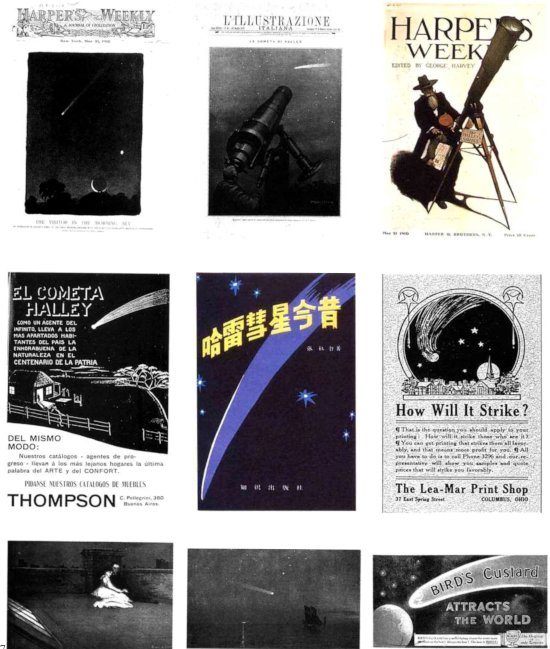
El cometa como fenómeno cultural global. Cedidas por Ruth S. Freitag, Biblioteca del Congreso.
El cometa Halley en 1910. Fotografía del Observatorio Lowell. Cedida por la Guardia Internacional del Halley.
Seis formas adoptadas por el cometa Halley durante su aparición en 1835, dibujadas por John Herschel. De Los cielos de Amédée Guillemin (París, 1868).

Veinte esbozos del cometa Halley dibujados por Heinrich Schwabe en 1835. Cedida por Ruth S. Freitag, Biblioteca del Congreso.
Posiciones de la cola del cometa Halley durante la aparición de 1910. Dibujo de Lucien Rudaux para la revista francesa L’IIlustradon. Cedida por Ruth S. Freitag, Biblioteca del Congreso.
Dos fotos de recuperación del cometa Halley tal como se vio por primera vez en septiembre de 1909 y otra en octubre de 1982. Cedidas por la Guardia Internacional del Halley.
* * * *
El cometa de 1812
El tiempo era claro y helado. Sobre las calles sucias y mal iluminadas, sobre los negros tejados, se extendía el cielo oscuro y estrellado. Pierre, al levantar la vista al cielo, dejó de sentir la sordidez y humillación de todas las cosas mundanas comparadas con las alturas a las cuales se había elevado su alma. Al entrar en la plaza Arbat se ofreció a sus ojos una inmensa extensión de cielo oscuro y estrellado. Casi en su centro, encima de bulevar Prechistenka, brillaba el enorme y poderoso cometa de 1812, rodeado y rociado por todos los lados por estrellas, pero distinguiéndose de todas ellas por su proximidad a la Tierra, por su luz blanca y por su cola larga y levantada: era el cometa que según se decía presagiaba todo tipo de desgracias y el fin del mundo. Sin embargo, aquel cometa con su cola larga y luminosa no despertó en Pierre ningún sentimiento de miedo. Al contrario, Pierre miró alegremente, con ojos llenos de lágrimas, aquel brillante cometa que, después de haber viajado en su órbita con una velocidad inconcebible a través del espacio inmensurable, parecía de repente como una flecha que atravesara la Tierra, fijo en un punto escogido, manteniendo vigorosamente erecta su cola, brillando y mostrando su luz blanca entre otras estrellas sin cuento que titilaban. Pierre pensó que aquel cometa respondía plenamente a lo que estaba sucediendo en su propia alma, suavizada y elevada, floreciendo ya a una nueva vida.
L. N. Tolstoi, Guerra y paz, VIII, 22
[Se trata en realidad de una referencia al gran cometa de 1811. Todavía podía verse a simple vista a primeros de 1812, pero con dificultad. Sin embargo, era un objeto espléndido a fines del otoño de 181 I.]
* * * *
Fotografía realzada por ordenador del cometa Halley en 1910. Cedida por el Observatorio Nacional de Óptica Astronómica/Observatorio Lowell.
Apéndices
Órbitas cometarias y lluvias de meteoros
Observemos que el paso por el perihelio de estos cometas de largo período varía desde una distancia muy próxima al Sol (0,008 u. a.) hasta la distancia del cinturón de asteroides, situado entre las órbitas de Júpiter y Marte (de 1,4 a 5 u. a.). Habrá muchos cometas de largo período con perihelios más distantes pero desconocidos a los observadores de la Tierra.
Fuente: B. Marsden y E. Roemer, en Comets (L. Wilkening, ene. de la ed.), University of Arizona Press, 1982.
Las inclinaciones de los cometas presentados aquí varían desde menos de 2 grados (casi exactamente en el plano eclíptico, que incluye la Tierra y los planetas) hasta 162 grados para el cometa Halley; una inclinación de 90 grados significa que el cometa órbita el Sol perpendicularmente a la eclíptica; por tanto, una inclinación de 162 grados significa que la órbita del cometa está inclinada unos 180 162 = 18 grados en relación a la eclíptica y que éste se desplaza en sentido opuesto a la dirección que siguen los planetas al girar alrededor del Sol. La excentricidad de las órbitas cometarias presentadas aquí varía desde 0,04 (muy próxima a un círculo) hasta 0,97 para la del cometa de Halley, que está muy alargada.
Fuente: Marsden y Roemer, 1982.
Datos basados en una tabla de P. M. Millmann en Observen ’s Handbook de la Royal Astronomical Society of Cañada (1985).
Apéndice 4
Información adicional
Además de los libros indicados en la bibliografía, puede obtenerse información adicional sobre los cometas en:
The Planetary Society 65 North Catalina Avenue Pasadena, CA 91106 (818) 793-5100
The Astronomical Society of the Pacific 1290 24th Avenue San Francisco, CA 9412°2 (415) 661-8660
The International Halley Watch Jet Propulsión Laboratory California Institute of Technology 4800 Oak Grove Drive Pasadena, CA 91109 (818) 354-4321
Quienes deseen profundizar más pueden recurrir también a los planetarios locales y a las publicaciones científicas populares como Sky and Telescope o Astronomy. Las noticias periódicas sobre descubrimientos de cometas aparecen en Comet News Service: A Quarterly Review and Irregular Bulletin, P. O. Box TDR # 92, Truckee, CA 95734.
Los cometas según se han representado en muchas culturas: (A) Pintura china sobre seda, 168 a. de J.C. (B) Del tapiz de Bayeux, que describe la aparición del cometa Halley en la primavera de 1066. (C) Del salterio Eadwine, manuscrito iluminado sobre pergamino, hacia 1145, por el monje Eadwine, basado en referencias sobre el cometa Halley que apareció en aquellas fechas. (D) Del fresco Adoración de los magos por Giotto, hacia 1304. Los pigmentos de oro se han perdido revelando el adhesivo rojo con el cual se pegaban al yeso. (E) De las Crónicas de Nuremberg, xilografía publicada en 1493. Recuerda la aparición del cometa Halley en 684 d. de J.C. (F) Descripción azteca de un cometa brillante visto por el emperador Moctezuma II en la década de 1500. De Historia de las Indias de Nueva España de Diego Durán. (G) Representación turca del gran cometa de 1577. (H) Forma de cometa según Plinio, tomada de la Cometographie de Hevelio, entre 1640-1680. (I) Una de las siete formas cometarias que aparecen en la Cometographie de Hevelio, entre 1640-1680. (J) Detalle de un probable cometa en la guarda de una espada japonesa de hierro forjado con un dibujo perforado, Tsuba, hacia 1700. (K) Ilustración basada en una fotografía del cometa Halley tomada en mayo de 1910. De la Estación de Observación Austral del Observatorio Lick, en el Cerro San Cristóbal de Santiago, Chile. (L) Cometa Bradfield, observado aproximadamente a 1700 Tiempo Medio de Greenwich el 10 de enero de 1980. Ilustración realzada con ordenador por el centro espacial Goddard.
Libros sobre cometas destinados principalmente al público en general:
- Asimov, Isaac, Asimov’s Guide to Halley’s Comet, Walker, Nueva York, 1985. -Brandt, John C., ene. de la ed. Comets: Readings from Scientific American, W. H. Freeman, San Francisco, 1981. -Introduction to Comets, Cambridge University Press, Cambridge, 1981.
- Calder, Nigel, The Comet Is Corning!, Viking Press, Nueva York, 1980.
- Comets, Career Oriented Modules to Explore through Pictures in Science, National Science Teachers Association, 1984.
- Chapman, Robert D., y John C. Brandt, The Comet book: A Guide for the Return of Halley’s Comet. Jones and Bartlett, Boston, 1984.
- Dahlquist, Raf, y Theresa Dahlquist, Mr. Halley and His Comet, Polestar, Canoga Park, CA, 1985. Un libro para niños en verso con encantadoras ilustraciones.
· Fiaste, Richard, Holcomb Noble, Walter Sullivan y John Noble Wilford, The New York Times Guide to the Return of Halley’s Comet, Times Books, Nueva York, 1985.
- «Halley’s Comet», The Planetary Report, 5, 3, mayo-junio de 1985.
- Halley Watch Amateur Observers’ Manual for Scientific Comet Studies, Hillside, N. J., Enslow Publishers, 1983.
- Krupp, E. C., The Comet and You, Macmilian, Nueva York, 1985. Para niños.
- Littman, Mark, y Donald K. Yeomans, Comet Halley —Once in a Lifetime, American Chemical Society, Washington D. C, 1985.
- Moore, Patrick, Carnets, Scribner’s, Nueva York, 1976. y J. Masón, The Return of Halley’s Comet, W. W. Norton, Nueva York, 1984.
- Mimford, George, Everyone ’s Complete Guide to Halley’s Comet, Sky Publishing Co., Cambridge, 1985.
- Pasachoff, Jay M.,y Donald H. Menzel, A Field Guide to the Stars andPlanets, cap. 11, Houghton Milllin, Boston, 1983.
- Rahe, Jurgen, Bertram Donn y Karl Wurm, Atlas of Cometary Forms: Structures Near the Nucleus, Nasa Special Publication 198, Estados Unidos, Government Printing Office, Washington, D. C., 1969.
- Reddy, F., Once in a Lifetime: Your Guide to Halley’s Comet, Astromedia, Milwaukee, 1985.
- Richter, Nikolaus Benjamín, The Nature of Carnets, Methuen, Londres, 1963.
- The Royal Institution Library of Science: Astronomy, vols. I y 2, Bernard Lovell, ene. de la ed., Elsevier, Nueva York, 1970. Compilación de los Discursos del Viernes por la Tarde sobre astronomía pronunciados en la Royal Institution, Londres, desde mediados del siglo XIX, con algunas charlas interesantes sobre meteoros y cometas.
- Seargent, David A., «Comets», Vagabonds ofSpace, Doubleday, Nueva York, 1982.
- Stasiuk, Garry, y Dwight Gruber, The Comet Handbcok, Stasiuk Enterprises, 1984.
- Wilkening, L. ene. de la ed. Comets, University of Arizona Press, Tucson, 1982. Esta colección de críticas es técnica, pero constituye la referencia más completa sobre todos los aspectos de los cometas que pueden encontrarse hoy día.
Publicaciones técnicas representativas ordenadas por capítulos:
Capítulo II
- Dreyer, J. L. EA History of Astronomy from Thales to Kepler, Cambridge University Press, Cambridge, 1906.
- Hasegawa, Ichiro, «Catalogue of Ancient and Naked-Eye Comets», Vistas in Astronomy 24, 59, 1980.
- Reliman, C. D. Doris, The Comet of 1577: Its Place in the History of Astronomy, Columbia University Press, Nueva York, 1944.
- Lagercrantz, Sture, «Traditional Beliefs in Africa Concerning Meteors, Comets, and Shooting Stars», en Festschriftfur Ad. E. Jensen, Klaus Renner Verlag, Munich, 1964.
- León-Portilla, Miguel, ene. de la ed., The Broken Spears: The Aztec Account of the Conquest of México. Beacon Press, Boston, 1962.
- Sarton, George, A History of Science, vol. L, Harvard University Press, Boston, 1952.
- Stein, J., S. J., «Calixte III et la comete de Halley», Specola Astronómica Vaticana II, Tipografía Poliglotta Vaticana, Roma, 1909.
- Thorndike, Lynn, A History of Magic and Experimental Science, vol. 4, Columbia University Press, Nueva York. 1934.
- Wen wu, «Ma wang dui bo shu ’Tian wen qi xiang za chan’nei rongjian shu» y «Ma wangdui Han cao bo shu zhong dúo hui xing tu», Wen wu chu ban she, Beijing, vol. 2, pp. 1-9, 1978.
- Yoke, Ho Peng, «Ancient and Mediaeval Observations of Comets and Novae in Chínese Sources», Vistas in Astronomy 5, 127, 1962.
- Zezong Xi, «The Cometary Atlas in the Silk Book of the Han Tomb at Mawangdui», Chínese Astronomy and Astrophysics 8, 1, 1984.
Capitulo III
- Barker, Thomas, Of the Discoveries Concerning Cométs, Whiston and White, Londres, 1757.
- Eddington, Arthur Stanley, «Halley’s Observations on Halley’s Comet, 1682», Nature 83, 373, 910.
- Freitag, Ruth S., Halley’s Comet: A Bibliography, Library of Congress, Washington. I). C, 1984.
- MacPike, Eugene, ene. de la ed., Correspondence and Papers of Edmond Halley, Clarendon Press, Oxford, 1932. Ronan, Colin, Edmond Halley: Genius in Eclipse, Doubleday, Nueva York, 1969.
- Stephenson, F. R., K. K. C. Yao y H. Hunger, «Records of Halley’s Comet on Babylonian Tablets», Nature 314, 587.1985.
- Walter, David L., «Medallic Memorials of the Great Comets and Popular Superstitions Connected with Their Appearance», Scott Stamp and Coin Company, Nueva York, 1893.
- Westfall, Richard, S., Never at Rest: A Biography of Isaac Newton, Cambridge University Press, Cambridge, 1980. White, Andrew Dickson, «A History of the Doctrine of Comets», Papers ofthe American Histórica/Association 2, G. P. Putnam, Nueva York, 1887.
Capítulo IV
- Lalande, J. J., «Madame Nicolc-Reine Étable de la Briére Lepaute», en Astronomical Bibliography with a History of Astronomy between 1781 and 1802, París, 1803.
- Paulsen, Friedrich, Immanuel Kant: His Life and Doctrine, traducción inglesa de J. E. Creigthon y Albert L.efevre, Frederick Ungar, Nueva York, 1963 (impresión original de 1899).
- Wright, Thomas, An Original Theory of the Universe (impresión original de 1750), Macdonald, Londres, 1971. Esta edición contiene una introducción muy útil, escrita por Michael A. Hoskin, tanto de Thomas Wright como de su libro.
Capítulo VI
- Feynman, Richard P., Robert B. Leighton y Matthew Sands, The Feynman Lectores on Physics. AddisonWesley, Reading, Mass., 1963. Nuestra exposición de la física del hielo se basa parcialmente en estas notables lecciones. Hallett, John, «How Snow Crystals Grow»,American Scientist 72, 585, 1984. Patterson, W. S. B., The Physics of Glaciers, Pergamon Press, Oxford, 1969.
- Whipple, F. L., «A Comet Model I, The Acceleration of Comet Encke», Astrophysical Journal 111, 375, 1950. -, «A Comet Model II, Physical Relations for Comets and Meteors», Astrophysical Journal 113, 464, 1951.
Capítulo VII
- Fanale, F., y James Salvad,«An Idealized Short-Period Comet Model: Surfacc Insolation, IDO Flux, Dust Flux,and Mande Evolution», lea rus 60, 476, 1984.
- Hughes, David W., «Cometary Outbursts: A BriefSurvey», Quarterlv Journal ofthe Roval Astronómica! Society 16,410, 1975.
Capítulo VIII
- Khare, B. N., y Cari Sagan, «Experimental Interstellar Organic Chemistry: Preliminary Findings», en Molecules in the Galactic Environment, M. A. Gordon y L. E. Snyder, ene. de la ed. John Wiley, Nueva York, 1973.
- Metz, Jerred, Halley's Comet, 1910: Pire in theSky, Singing Bone Press, Si. Louis, 1985.
- Mitchell, G. F., S. S. Prasad y W. T. Huntress, «Chemical Model Calculalions of C2, C3, CH, CN, OH and NID abundances in Cometary Comas, Astrophysical Journal 244, 1087, 1981.
- Swings, P., «Le Spectrc de la Comete d’Encke 1947 i», Annales d’Astrophysique 11,1, 1948.
- Wood, John y Sherwood Chang, ene. de la ed., The Cosmic History of the Biogenic Elements and Compounds, NASA Special Publication 476, 1985.
Capítulo IX
- Barnard, E. E., «On the Anomalous Tails of Comets», Astrophysical Journal 22, 249, 1905.
- Biermann, L., «Solar Corpuscular Radiation and the Interplanetary Gas», Observatory 77, 109, 1957.
- Bierman, L., y R. Lust, «Comets: Structure and Dynamics of Tails», cap. 10 de The Solar System, vol. 4, G. P. Kuiper y B. M. Middlehurst, ene. de la ed., University of Chicago Press, Chicago, 1963.
- Henry, George E., «Radiation Pressure», Scientific American 196, 99-108, 1957.
- Van Alien, James A., «Interplanetary Particles and Fields», en The Solar System, a Scientific American book, W. H. Freeman, San Francisco, 1975.
Capitulo X
- Donnelly, Ignatius, Ragnarok: The Age of Fire and Grave!, University Books, Nueva York, 1970 (publicación original, 1883).
- Globet d’Alviella, Comte Eugene, The Migration of Symbols, University Books, Nueva York, 1959 (impresión original. 1891).
- Goldsmith, Donald, ene. de la ed., Scientists Confront Velikovsky: Evidence Against Vekikovsky's Theory of «Worlds i ti Collision», W. W. Norton, Nueva York, 1977.
- Nuttal, Zelia, «The Fundamental Principies ofOId and New World Civilizations: A Comparativa Research Based on a Study of the Ancient Mexican Religious, Sociológical and Calendrical Systems», Archaelogical and Ethnological Papers of the Peabody Museum, Harvard University, vol. 2, 1901. Wilson, Thomas, TheSwastika: The Earliest Known Symbol and Its Migrations; With Observations on the Migration of Certain Industries in Prehistoric Times, Smithsonian Institution, Washington, D. C., 1896.
Capítulo XI
- Chebotarev, G. A., «On the Dynamical Limits of the Solar System», Soviet Astronomy AJ 8, 787, 1967.
- Oort, J. H., «The Stmcture of the Clouds of Comets Surrounding the Solar System, and a Hypothesis Concerning Its Origin», Bulletin of the Astronómical Institutos of the Netherlands 11,91, 1950 o - «Empirical Data on the Origin of Comets», cap. XX, The Solar Systems, vol. 4, G. P. Kuiper y B. M. Middlehursi, ene. de la ed., University of Chicago Press, Chicago, 1963.
- Opik, E., «Note on Stellar Perturbations of Nearly Parabolic Orbits», Proceedings ofthe American Academy of Arts an Sciences 67, 169, 1932.
- Russell, Henry Norris, The Solar System and Its Origin, Macmillan, Nueva York, 1935.
- Van Woerkom, A. J. J., «On the Origin of Comets», Bulletin of the Astronomical Institutos of the Netherlands 10, 445, 1948.
Capítulo XII
- Biermann, L., y K. W. Michel, «On the Origin of Cometary Nuclei in the Presolar Nébula», The Moon and the Planas 18, 447, 1978.
- Fernández, Julio A., «Mass Removed by the Outer Planets in the Early Solar System», Icarus 34, 173, 1978.
- Fernández, J. A., y W.-I I. Ip., «On the Time Evolution ofthe Cometary Influx in the Región of the Terrestrial Planets», Icarus 54, 377, 1983.
- Goldreich, P., y W. R. Ward, «The Formation of Planetesimals», Astrophysical Journal 183, 1051, 1973.
- Helmholtz, H., «On the Origin ofthe Planetary System», Conferencia pronunciada por H. Helmholtz en I leidelberg y Colonia, 1871. Publicada en Popular Anides on Scientific Subjects, por H. Helmholtz, D. Appleton and Company, Nueva York, 1881.
- Safronov, V. S., «Evolution of the Protoplanetary Cloud and the Formation of the Earth and the Planets», versión en inglés del libro original ruso publicado por el Israel Program for Scientific Translations, Jerusalén, 1972.
- Wetherill, George W., «Evolution of the Earth’s Planetesimal Swarm Subsequent to the Formation of the Earth and Moon», Proceedings of the Eight Lunar Science Conference, p. 1, 1977.
Capítulo XIII
- Ball, Robert, The Story of the Heavens, ed. rev., Cassell and Company, Londres, 1900.
- Keesing’s Contemporary Archives, mayo 21-28, 17425-17429, 1960.
- Von Humboldt, Alexander, «Events ofthe Night of Eleventh November, 1799», Personal Narrative qf Trovéis to the Equinoctial Regions of America During the Years 1799 to 1804, vol. 1, George Bell and Son, Londres, 1889.
Capítulo XIV
- Gold, Thomas, y Steven Soler, «Cometary Impact and the Magnetizaron of the Moon», Planetary and Space Sciences 24, 45, 1976.
- Kerr, Richard A., «Could an Asteroid be a Comet in Disguise?», Science 227, 22 de febrero de 1985.
- Marsden, B. G., «The Sungrazing Comet Group», Astronomical Journal 72, 1170, 1967.
- Michels, D. J., N. R. Sheeley, R. A. Floward y M. J. Koomen, «Observations of a Comet on Collision Course with the Sun», Science 25, 1097, 1982.
- Opik, Ernst, «The Stray Bodies in the Solar System, parte 1, The Survival of Cometary Nuclei in the Asteroids», Advances in Astronomy and Astrophysics 2, 219, 1963.
- «The Stray Bodies in the Solar System, parte 2, The Cometary Origin of Meteorites», Advances in Astronomy and Astrophysics 4, 301, 1966.
- Shoemaker, Eugene M., y Ruth F. Wolfe,«CrateringTimescalesforthcGalilean Satellites», cap. 10 de The Satellites of Júpiter, David Morrison, ene. de la ed., University of Arizona Press, Tueson, 1982.
- Shullman, L. M„ «The Evolution of Cometary Nuclei», en TheMotion, Evolution of Orbits. and Origin of Carnets. Cl. A.
- Chebotarev y otros, ene. de la ed., D. Reidel, Holanda, 1972.
- Turco, R. P., O. B. Toon, C. Park, R. C. Whitten, J. B. Pollack y P. Noerdlinger, «An Analysis of the Physical, Chemical, Optical and Historical Impacts of the 1908 Tunguska Meteor Fall», Icarus 50, I, 1982.
- Wetherill, George W„ «Occurrence of Giant Impacts During the Growth of the Terrestrial Planets», Science 877 1985.
Capítulo XV
- Álvarez, Luis W., Walter Álvarez, Frank Asaro y Hellen V. Michel, «Extraterrestrial Cause l'or the Cretaecous-Tertiary Extinction», Science 208, 1095, 1980.
- Gould, Stephen Jay, «Sex, Drugs, Disaster, and the Extinction of Dinosaurs», Discover, marzo de 1984, p. 67.* Hills, .1. G., «Comet Showers and the Sleady — State Infall of Coméis from the Oort Could», Astronomical Journal 86 1730, 1981.
- National Museum of Natural Sciences and National Research Council of Cañada, Syllogeus Series Number 12, «Cretaceous-Tertiary Extinctions and Possible Terrestrial and Extraterrestrial Causes: Proceedings of a Workshop Held in Ottawa, Cañada, 16, 17 november 1976», National Museums of Cañada, Oltawa, Canadá marzo de 1977.
- Officer, Charles B., y Charles L. Krake, «Terminal Cretaceous Environmental Events», Science 277, 1161, 1985. Pollack, James B., Owen B. Toon, Thomas P. Ackerman, Christopher P. McKay y Richard P. Turco, «Environmental Effects of an Impact-Generated Dust Cloud: Implications for the CretaceousTertiary Extinctions» Science 219 287, 1983.
- Sepkoski, J. John, Jr., «Mass Extinctions in the Phanerozoic Oceans: A Review», Geological Society of America. Special Paper 190, 283, 1982.
- «A Kinetic Model of Phanerozoic Taxonomic Diversity. III. Post-Paleozoic Families and Mass Extinctions», Paleobiology 10, 246, 1984. -«Phanerozoic OverView of Mass Extinction», en Pattern andProcess in the History: of Ufe, D. M. Raup y D. Jablonski, ene. de la ed., Springer-Verlag, Berlín, 1986.
- Shoemaker, Eugene, M., «Asteroid and Comet Bombardment of the Earth», Annual Review of Earth and Planetary Sciences 11,461, 1983.
- Steel, Rodney, y Anthony Harvey, ene. de la ed., The Encyclopedia of Prehistoria Life, Me Graw-Hill, Nueva York, 1979. «The Fossil Record and Evolution: Readings from Scientific American», W. H. Freeman, San Francisco, 1982. Urey, Harold, C., «Cometary Collisions and Geological Periods», Nature 242, 32, 1973.
Capítulo XVI
- Álvarez, Walter, Frank Asaron, Helen V. Michel y Luis W. Álvarez, «Iridium Anomal Approximately Cynchornous with Terminal Eocene Extinctions», Science 216, 886, 1982.
- «A Talk with Eugene Shoemaker», entrevista por Charlene Anderson, The Planetary Repon 5 (1), 7, encro/febrero de 1985.
- Davis, Marc, Piet Hut y Richard A. Muller, «Extinction of Species by Periodic Comet Showers», Natur«308,715, 1984.
- Gould, Stephen Jay, «Continuity», Natural History, abril de 1984, p. 4. - «The Cosmic Dance of Siva», Natural History, agosto de 1984, p. 14.
- Hills, J. G., «Dynamical Constraints on the Mass and Perihelion Distance of Nemesis and the Stability of lis Orbit», Nature 311, 636, 1984.
- Hoffman, Antoni, «Pattems of Family Extinction Depend on Definition and Geological Timescale», Nature 315,659, 1985.
- Rampino, Michael y Richard Stothers, «Geological Rhythms and Cometary Impacts», Science 26, 1427, 1984. -«Terrestrial Mass Extinctions, Cometary Impacts and the Sun’s Motion Perpendicular to the Galaclin Plañe», Nature 308, 709, 1984.
- Raup, David M., y J. John Sepkoski, Jr., «Periodicity of Extinctions in the Geologic Past», Proceedings qfthe National Academy of Sciences of the U.S.A. 81, 801, 1984.
- Schwartz, Richard D., y Philip B. James, «Periodic Mass Extinctions and the Sun's Oscillations about the Galactic Plañe», Nature 308, 712, 1984.
- Smoluchowski, R., J. N. Bahcall y M. S. Matthews, ene. de la ed., The Galaxy and the Solar System, University of Arizona Press, Tueson, 1985.
- Thaddeus, Palrick, y Gary A. Chanan, «Cometary impacts, Molecular Clouds, and the Motion of the Sur Perpendicular to the Galactic Plañe», Nature 314, 73, 1985.
- Whitmire, Daniel, y Albert A. Jackson, «Are Periodic Mass Extinctions Driven by a Distant Solar Companion?». Nature 308, 713. 1984.
- Publicado en Stephen Jay Gould, The Flamingo's Smile: Reflections in Natural ¡listón. W. W. Norton, Nueva York. 1985.
Capítulo XVII
- Bar-Nun, A., A. Lazcano-Araujo y J. Oró, «Could Live llave Evolved in Cometary Nuclei?», Origins of Life 11,387. 1981.
- Forster, T., Atmospheric Causes of Epidemic Diseases, Londres, 1829.
- Hobbs, R. W. y J. M. Hollis, «Probing the Presently Tenuous Link between Comets and the Origin of Life», Origins ofLife 12, 125, 1982.
- Hoyle, Fred, «Comets —A Matter ofLife and Death», Vistas in Astronomy 24, 123, 1980.
- Hoyle, Fred y Chandra Wickramasinghe, Diseases from Space, Harper, Nueva York, 1979.
- Irvine, W. M.,S. B. Leschiney F. P. Schloerb, «Thermal History, Chemical Composition and Relationship of Comets to the Origin ofLife», Nature 283, 748, 1980.
- Oró, J., «Comets and the Formation of Biochemical Compounds on the Primitive Earth», Nature 190, 389. 1961.
- Sales-Guyon de Montlivault, E.-J.-F., Conjectures sur la reunión de la lime á la ierre, et des satellites en general a templa nete principale; á Vaide desque lies on essaie d’expliquer la cause et les effects du déluge. la disparition míale d’anciennes espéces vivantes et organiques, et la formation soudaine ou apparition d’autres esperes nouvelles et de THome lui-meme sur le globe terrestre, París, Adrien Egron, 1821.
- Shoemaker, Eugene M., «Asteroid and Comet Bombardment on the Earth», Annual Review of Earth and Planetary Sciences 11, 461, 1983.
Capítulo XVIII
- Gay, Peter, Education of the Senses, Oxford University Press, Nueva York, 1984.
- «Malley’s Comet from a Balloon», Aeronautics 6, 204junio de 1910.
- Morrison, David, y otros, ene. de la ed., Space Missions to Comets, NASA Conference Publicaron 2089, 1979.
- Newburn, Ray, L. y Jurgen Rahe, «The International Halley Watch», Jounal ofthe British Interplanetaiy SocietyM ,2%, 1984.
- Newsletters of the International Halley Watch, revistas editadas por NASA Jet Propulsión Laboratory, Publications 410, desde el 1 de agosto de 1982.
- Planetary Society Fact Sheets on Halley Comet Spacecraft, disponible en The Planetary Society, 65 North Catalina Avenue, Pasadena, CA 91106.
- «Report of the Comet Rendezvous Science Working Group», NASA Technical Memorándum 87564, 1985.
- Sagdeev, R. Z., y otros, «Cometary Probé of the Venera-Halley Mission», Advanees in Space Research 2. 83,1983.
- Wilford, John Noble, «U.S. and Soviet Cooperating on Collection of Comet Dust», New York Times, 21 de diciembre de 1984.
- Yeomans, Donald K.., y John C. Brandt, «The Comet Giacobini-Zinner Handbook: An Observer’s Guide», NASA/JPL Publication 400-254, 1985.
Capítulo XIX
- Dyson, Freeman, «The World, the Flesh and the Devil», Third J. D. Bernal Lecture, pronunciada en Birkbeck College, Londres. Reproducida en Comunicación con Inteligencias Extraterrestres (CETI), Editorial Planeta, Barcelona, 1980.
- GafTey, Michael J., y Thomas B. McCord, «Mining Outer Space», Technology Review 79 (7), 51, junio de 1977. Harwit, Martin, y E. E. Sapeter, «Radiation from Comets near Neutrón Stars», Astrophvsical Journal 186, L37, 1973. MIT Student Project in Systems Engineering, «Project Icarus», MIT Press, Cambridge, MA, 1968.
Capítulo XX
- Arkin, William R., y Richard W. Fieldhouse, Nuclear Battlefields: Global Links in the Arms Race, Ballinger, Cambridge, MA, 1985.
- Crukshank, D. P., W. K. Harmann y D. J. Tholen, «Colour, Albedo and Nucleus Size of Halley’s Comet», Nature 315, 122, 1985.
- Newburn, Ray, L. y Donald K. Yeomans, «Halley's Comet», Annual Review of Earth and Planetary Science 10, 297, 1982.
Notas: